| ネコソギラジカル（中） 赤き征裁ｖｓ．橙なる種 戯言 (講談社文庫) | |
| 西尾維新 | |
| (2009) | |
本作品は、縦書き表示での閲覧を推奨いたします。横書き表示にした際には、表示が一部くずれる恐れがあります。
ご利用になるブラウザまたはビューワにより、表示が異なることがあります。
ネコソギラジカル（中）
赤き征裁vs.橙なる種
西尾維新
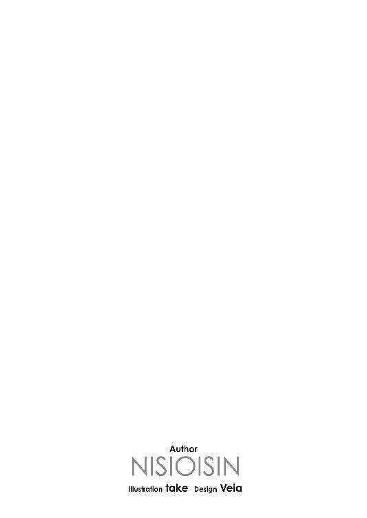
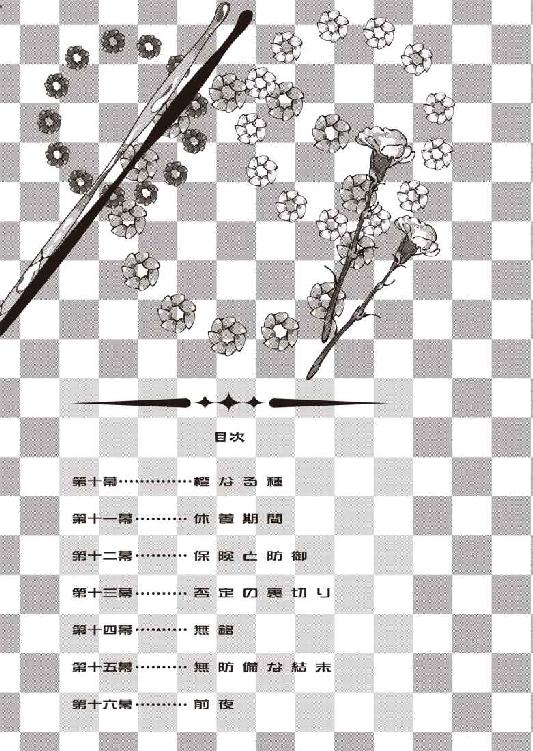
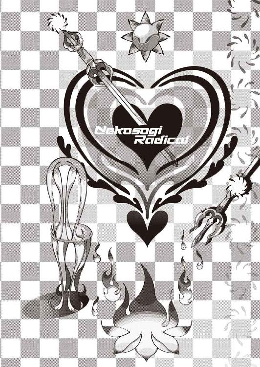
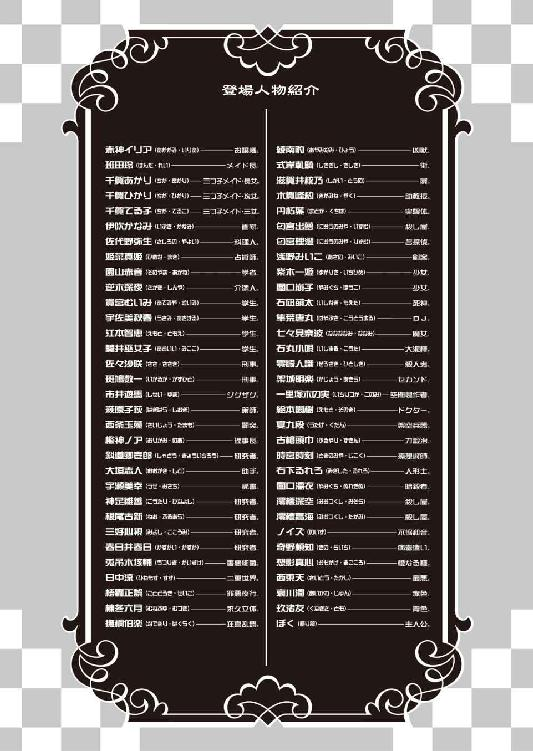
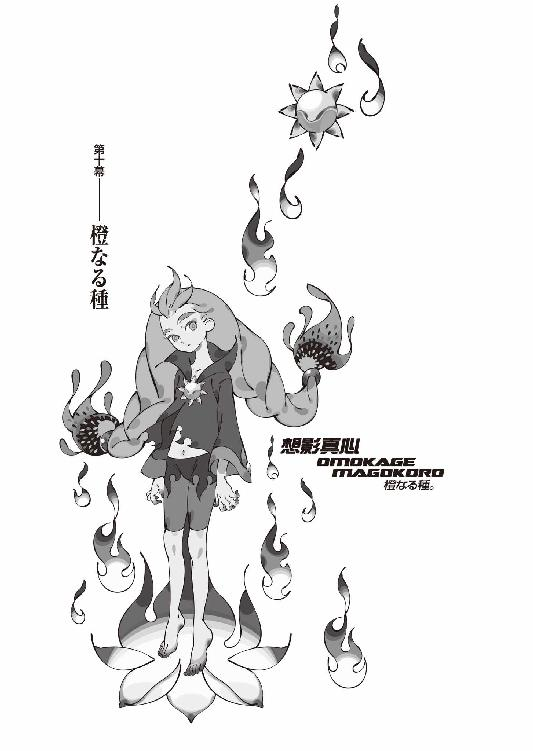
０
祭りの時間だ。
１
オレンジの髪。
腰の辺りまである、注連縄のようなぶっとい橙色の三つ編みが、赤いゴムでまとめられている。前髪も横髪も全部後ろに流れていて、広い、綺麗な額が惜しげなく晒されていた。
意志の強そうな太い眉。
奇異なほど挑戦的な吊り目。
輝くようなオレンジの瞳。
下駄を脱ぎ捨て、裸足。
浴衣を脱ぎ捨て、スパッツ、タイトシャツ。
小柄な体軀。
あまりにも小柄な体軀。
触れれば折れそうな細い手足。
しかし、それは柔軟で。
轟くほどにうなりをあげて。
決して折れることなどない。
それは猫を。
その姿はしなやかなる猫を、連想させ──
想影真心。
「..................っ！」
まずは──一番近くにいた、萌太くんだった。
真心の腕の届く場所にいた、萌太くんだった。
まるで同行しているかの如く、真心は先刻からずっと彼らのすぐそばにいたというのに、萌太くんは今ようやっと、真心の存在に気がついたかのように狼狽した表情で真心を振り向いたが──しかしそこはさすがに石凪萌太、死神の家系。真心の腕が、内から外向きに、己に向かって攻撃せんという意志を伴って振るわれつつあるという事実に直面し、ほとんど反射的とも言えるような速度の動作で、両腕を、胸の前で交差した。
「愚かな」
と──ぼくの隣で、狐面の男が言った。
確かに、それは愚かだっただろう。
結果から見ればそうとしか言いようがない。
防御動作ができたなら、同じように回避することも可能だったはずなのに──むしろ回避することの方が簡単だったはずなのに、萌太くんはそうしなかったのだ。無論、萌太くんには萌太くんなりの考えがあってのことだったのだろうが、ことこの場合に限っては、どんな考えがあろうとも、それはやってはならないことだった。
防御動作ができたからといって防御できるだなんて保証がまるでない、この場合に限っては。
「──萌太くんっ！」
めしぃ──と。
めしぃめしぃ──と。
骨の折れる音が、遠く離れたここまで響いた。
しかし、衝撃を殺すにはそれだけではまだなお足らず、萌太くんの身体が後ろ向きに吹っ飛ぶ。萌太くんの両足が、体育館の床から離れ──吹っ飛ぶ。
空中に、それも高速で。
まさに吹っ飛ぶとしか、表現しようがない。
そしてその吹っ飛んだすぐ先には──
哀川潤がいた。
萌太くんの身体が、哀川さんに衝突する。
咄嗟だったからか。
唐突だったからか。
あの哀川さんが、反応できなかった。
かわせない速度じゃなかったはず。
ほとんど零距離とは言え、かわせなくはなかったはず。
ならば単純に驚いたのかもしれない。
萌太くんを吹っ飛ばした存在に──
感じるモノが、あったのかもしれない。
何故なら。
その、オレンジ色の髪のモノは。
哀川潤にとっては──
「............なっ!?」
哀川さんに萌太くんが衝突して──それでおしまいでも、なかった。それでも衝撃は消えなかった。停まらなかった。二人はまるで絡まるようにして、更に後ろへと、転がった。さすがにもう宙に浮かびはしなかったが、しかし、体育館の床を、受身を取ることもできずに、あちこちをぶつけながら──端の壁に、大きな音を立てて二人揃って強く頭を打ち付けるまで、停まらなかった。
停まった後は──動かない。
その姿は。
まるで──壁にめりこんでいるかのようだった。
「......な──なんだぁ......？」
なんだ──あの力は。
それほど勢いをつけていたわけでもない、ただ単に、森林の中で前進するにあたって背の高い草でも分けるが如く、腕だけで薙いだだけじゃあなかったか。
それで──人間二人を。
男性としても女性としても、とてもじゃないが小柄だとはいえない、萌太くんと哀川さんを、ただの一撃で、力任せにまとめて吹っ飛ばすだなんて──常識外れもいいところだ。
「くっくっく」
狐面の男が──笑う。
「驚くほどのことではないさ──そもそも人間の肉体には、あの程度の芸当が出来うるだけの筋力は、端から備わっているモノなんだよ。俺もお前も誰も彼も、一人としての例外なくな。特に鍛えるほどの必要もない、鍛錬というほどの鍛錬などいらない──俺達はその使い方を知らないだけ。使う技術がないというだけ。使う必要がないというだけ。単純に、セーブを掛けているだけだ。否、セーブというよりは、そのもの鍵と言った方がいいのかもしれないがな」
「鍵......」
「安心しろよ、いくら俺でも、人間は普段脳の三十パーセントしか使ってないだとか、そんなありふれた話を持ち出してこようというつもりはない──ここでの意味は、文字通りの鍵さ。逆に言うならば、その鍵さえ開けて、中に這入ってしまえば──あんなものだ」
あんなもの──
あんなモノ。
「もっとも、俺は望んでまでそんな密室を開けてみようとは思わんがね──と、まあ、身内自慢にゃあついつい口の滑りがよくなっちまうが、しかしこの辺りの講釈は、考えてみればお前には不要だったな、俺の敵。何せ──」
狐面の男は言う。
「あいつの鍵を開けたのはお前なのだから」
やめろ──やめろ。
言うな。
そんなことを、言わないでくれ。
知ったようなことを──言うんじゃない。
ぼく達のことなんて何も知らないくせに──知っていたとしても、ぼくはあなたに、そんなことを言われる憶えはない。
ぼくは。
ぼく達は。
決して、そんなつもりはなかったんだ。
そんなつもりだけは──なかったんだ。
「まあ、言っちまえば《殺し名》の連中なんてのはそういう鍵をどっか開けっぱなしにしている奴のことを、鍵も掛けずに無用心な連中のことを指してんのかもしれないな──なあ、崩子ちゃん。お前の《一喰い》なんてのは正にそうじゃないのか、出夢──と」
後ろを振り向き、それから、ぼくを挟んだその隣を覗き込むようにして──狐面の男は「くっくっく」と、またも、笑った。
「ふん。さすがに素早いな」
見れば──
出夢くんも崩子ちゃんもいない。
匂宮出夢。
闇口崩子。
ぼくの後ろにいたはずの出夢くんも、ぼくの隣にいたはずの崩子ちゃんも──気がついたときには、もう駆け出していた。
駆けていた。
既に、舞台を飛び降りて、全く無駄のない直線で、左右両側から挟み込むように──想影真心に向かって駆けていた。
速く。
迅く。
疾く。
両側から──挟み込むように。
狩るモノの動きで──素早く。
「否──はしっこい、というべきか」
「崩子ちゃん──出夢くん」
待て。
待ってくれ。
違う、違うんだ。
そいつは──
そいつが、想影真心なら──
想影真心なら、敵じゃない。
真心は──昔から、いつだって。
いつだって、誰の敵でもないんだ。
誰にとっても、敵じゃあないのに──
「これは面白い──とても面白いな」狐面の男は至極つまらなそうに言う。「よく見ておけよ、俺の敵──こんなものは中々、見ようと思って見られるようなものではない。本来絶無のイベントだ、世界の終わりに相応しい。《殺し名》の序列、一位と二位のチームプレイなど──恐らく歴史上、これが初めてではないのかな」
「あんた──」
ぼくは──自分の声が震えているのを自覚する。
怖い。
怖い、怖い。
ぼくはこの男が──狐面の男が、怖い。
「あんた──今、ここで、自分が一体何をしてるのか、どういうことをしているのか──わかってんのか」
「わかっているさ。わかり過ぎるほどわかっている、俺は自覚症状の塊さ。昔のお前とは違う、俺の敵」さらりと流すように言う狐面の男。「いいから、俺の敵、ほれ、見ろよ──見逃すんじゃねえよ。《匂宮》と《闇口》の恐るべき連携──」
二人は──
出夢くんと崩子ちゃんは、真心に対して全く同時に飛び掛かるようにして──しかし実際には、ほんの僅かではあったが、そこにタイムラグを生じさせていた。
ほんの少し。
崩子ちゃんがほんの少しだけ、先行したのだ。
分散──と呼ばれる行為。
ぼくのような素人考えでは、多数対一での戦闘においてこちらが多数の場合においては、とにかく同時に攻撃した方が、利がありそうな気がするが──しかし実際には、このように、起こりを微妙にずらして、タイミングを計るように攻撃を加えた方が、受ける側としては厄介らしい。つまり、敵を個として捉えるか群として捉えるかの差異、ということなのだが──しかし。
即興の連携で何の打ち合わせもなくそんな真似ができたのは大したものだと言うべきなのだろうが──この場合も、やはり、先程回避ではなく防御を選んだ萌太くんと同様に、二人は、そんな小賢しい行為に出るべきではなかった。単純に同時に打ち込んでいた方が、まだマシだっただろう。
刹那が永遠のモノに対するのならば。
そうする他、なかったのだ。
崩子ちゃんの腕が──いなされる。
ゴムか、さもなくば粘度の高い液体のような、見て気持ちが悪くなるくらいの柔軟な動作で、真心は脚を高く上げ、それを鎌のように使って飛び掛かってきた崩子ちゃんの首筋に引っ掛け──そのまま、崩子ちゃんの飛び込んできたその勢いも利用するように、とうとう一歩も動かないままに──結果的には腰を半分ひねった程度の動きで、崩子ちゃんの攻撃をかわした。
この間刹那。
崩子ちゃんは額から、体育館の床に突っ込んだ。
手を突くこともできない。
鉄と鉄とがぶつかったような音だった。
そして──
更に刹那。
本来ならタイムラグを置いてのはずの匂宮出夢の攻撃が、ぴったりとタイミング通りに──真心に向かう。
出夢くんの顔が引き攣るも──
今更停まらない。
そして、今度も同じだった。
出夢くんの攻撃は崩子ちゃんとは違って脚によるものだったが──ほとんど同様の動作で、真心はその脚をいなし、高くあげた脚を出夢くんに引っ掛け──元々の出夢くんの勢いプラス脚を引き戻す動作で──出夢くんを、床に叩きつけた。
それで多少勢い余ったのか、前に二、三歩、よろよろと、ころげかけたが──
ぴたり、と。
想影真心は──直立した。
石凪萌太も。
哀川潤も。
闇口崩子も。
匂宮出夢も。
全員揃って倒れている中──澄百合学園第二体育館の中で、ただ一人──想影真心だけが、直立していた。
「..................」
馬鹿げている。
こんなことは──有り得ない。
いくらなんでも。
いくらなんでも、だ。
ぼくの知る想影真心は──ここまでデタラメじゃあなかった。
「くっくっく──滅多に見られるもんじゃねえ。《匂宮》と《闇口》の連携──そしてその連携が、一瞬にして破れ去るところなどは、な。世界の終わりに──相応しい」
「あなた──」ぼくは、恐る恐るとしか言いようがない、狐面の男に──問う。「一体、どんな手を使ったんだ」
「『どんな手を使ったんだ』。ふん。意味が判然としないな。自問ならばともかく、答を求める設問のときは、もっと具体的に問えよ」
「あいつは──」
橙なる種。
想影真心──
「あいつは、死んだはずだ」
「............」
「想影真心は紅蓮の炎に焼かれて死んだ──それはぼくがこの目で確認している。この目で、この両の眼で。あいつがここに──今更こんなところに、気軽に登場していい人物なわけがない」
「『気軽に登場していい人物なわけがない』。ふん」狐面の男は鼻で笑う。「お前も随分往生際の悪い思考力だな──今更というならばお前の考え方こそが今更だぜ、俺の敵。死んだというならば俺も死んでいる、俺の娘も死んでいる。死んだ者が生きているなんて程度のことは──最早現象として、この場においては当然至極のものなのさ」
「............！」
死者の──蘇り。
生きている死者。
それにだ、と狐面の男は言う。
「お前のその台詞のニュアンスは違うぜ──そのニュアンスはまるで違うぜ、俺の敵。他の誰かというならばまだしも──その通り、あいつは、お前にとって死んだはずの人間だ。だがしかし、それが想影真心だというのなら──そんな批難するような姿勢で俺に向かうべきじゃあないんじゃないのかな、俺の敵。むしろお前は──諸手をあげて喜ぶべきじゃないか、俺の敵。俺に感謝するべきじゃないのかな、俺の敵。死んだと思ったお友達が生きていたんだからな」
「............」
「諸手をあげて、喜べよ」
勝手な──言い分だ。
ふざけるな。
これが──そんな簡単な話か。
難しい話ですらない。
それは、冒瀆だ。
それは、侮辱だ。
仮に、仮に本当に、狐面の男のいうように、この世界において、《運命》やら《物語》やら、そういった種類のものがあったのだとしても──
それを一番軽視しているのはこの男じゃないか。
一番、運命を弄んでいる。
冒瀆し侮辱し──軽蔑している。
そうとしか思えない。
「............」
けれど──
ぼくは、何も言えなかった。
それ以上、何も言えなかった。
どうして、何も言えないのか。
これじゃあ──あたかも狐面の男の言い分を、認めてしまったようなものじゃあないか。
ぼくは──
ぼくは今、喜んでいるのか？
それとも悲しんでいるのか？
それとも、怒っているのか？
わから──ない。
自分の気持ちが、わからない。
「くっくっく──」狐面の男は言う。「そんなことより、俺の敵。ほれ、まだ全然、終わったわけじゃないぜ──さりげなくではあるが、しかしほとんどダメージを受けていない奴が一人、残っているじゃないか」
「え？」
狐面の男から視線を戻すと──
哀川潤が、立ち上がっていた。
抱えるようにしていた萌太くんを、そっと床に寝かせて──哀川さんは、真心に対し、正面を向けていた。
あ......そっか。
哀川さんは別に、萌太くんを避けられなかったわけじゃないんだ。あれは、単純に、真心の攻撃を受けて吹っ飛んできた萌太くんを庇ったんだ。衝突したんじゃなく、緩衝していたんだ。ならば後ろに転がったのも、勢いに負けたんじゃなく、自分から転がったと見た方がいいのだろう。
ならば──
哀川潤はノーダメージだ。
「ふん。相変わらず甘いところは抜けていないようだな、俺の娘は──まあ、そんなもん、どうでもいいがな」
「..................」
「さてと。強いて面白おかしく娯楽的に言うなら、人類最強バーサス新人類最強──とでも形容すべきところか。もっとも、俺の娘の方は、今自分が何に相対しているのかについて、半分くらいしかわかっちゃいないだろうがね──」
哀川さんは──目を逸らさない。
真心を、睨みつけている。
それはそうだろう──不意打ちだとは言っても萌太くんの両腕を折ってふっ飛ばし、空前絶後の《匂宮》と《闇口》の連携をあっさりと切り抜けた、そんな存在に対して、如何に人類最強といえども、中途半端な対応などできるわけがない。
それに──それ以上に。
哀川さんは、何かを感じているはずだ。
目の前のオレンジ、想影真心に対し。
ぼくが零崎人識に対して何かを感じたように──哀川潤は想影真心に対して何かを感じているはずだ。
萌太くんを避けなかったのは故意だったとしても──しかし、真心に対し、何かを感じることを、今、哀川さんは、間違いなく、強いられているはずだ。
それが証拠に──
哀川さんは、離れた舞台の上にいるぼく達に、どうやら全く気付いていない様子だった。いや、気付いていないというよりは──意識していないという表現を適用すべき場面か。
ぼくと──
己の父親の存在をすら、意識していない。
ただ、その意識は、
正面にのみ向けられて──
「......てめえは──なんだ？」
哀川さんは──低く、真心に、そう問うた。
不審そうな──怪訝そうな感じだった。
そんな哀川さんを、ぼくは初めて見る。
多分、哀川さんも──初めての経験だろう。
そして、
果たして真心は──
真心は、何も反応しなかった。
哀川さんの言葉に、何も反応しない。
見れば──
「......ええ？」
ぼくは──驚きの声をあげた。
そうせざるを得なかった。
「くっくっく──」
真心は──立ったまま眠っていた。
眼を閉じて、時折かくんと、顎を落として。
完全に──船を漕いでいる。
「何せ起きたところだ、寝起きだからな──まだ意識は全然はっきりしていないと見るべきか。俺の娘は半分くらいしかわかっちゃいないと言ったが──橙なる種、あいつの方は、どうやら、全くわかっちゃいないようだな」
ね──寝ている。
眠って、いる。
あいつは──真心は、寝ているままに......夢うつつもいいところのままに、《殺し名》の三人を、蹴散らした──というのか。
そんなの──デタラメどころか滅茶苦茶だ。
パワーバランスが、崩壊する。
まるでインフレーションだ。
今までの因果を全て崩壊させかねない行為だ。
そんな、それじゃあ、あまりにも──
いや、違う。
違う、そうじゃない。
そもそも。
そもそも──元を糾せば、だ。
橙なる種という概念はそのためだけに創造された存在ではなかっただろうか──
かつて狐面の男が、二人の協力者、架城明楽と藍川純哉と共に、後に人類最強の請負人と呼ばれることになる赤色を創造したのが、世界の因果を崩壊させ終局を迎えさせんという意志の下だったのと同じように──
寝ている。
眠っている。
眠っている──想影真心。
「そんなに眠てーならよ──」
哀川さんが──動いた。
「──一生眠ってろ！」
その瞬間。
哀川さんに怒鳴りつけられたその瞬間──
想影真心は、くわっと、目を開いた。
オレンジの瞳を──
はっきりと、哀川さんに固定した。
焦点があった。
眼と眼が──あった。
「あ」
そして次の瞬間を、ぼくは忘れないだろう。
瞬きで見逃してしまいそうな一瞬。
この先──狐面の男の手によって、この最悪の手によって、世界が、そして物語がどのように転がっていくのかなど、どのように加速していくのかなど、どのように収束し、どのように終息していくのかなど、今の段階ではぼくには全く予想も、考えることすらもできないけれど──
それがどうだったところで。
まるで関係なく。
この地点は、極点だった。
倒れたのは哀川潤だった。
本当に──一瞬、正しく刹那。
哀川さんが真心に飛びかかろうとした、一直線に向かっていこうとし、左足を強く踏み込んで──そして、反対側の右足の踵が、体育館の床から離れる前に──決着は既についていた。
その刹那には、真心は哀川さんの手前にいた。
移動した──なんてものじゃない。
目を離してなどいないのに、目を離せるはずなどないのに、真心は、両手の指を組んで作った拳を思い切り振り上げて、哀川さんの手前に──浮いていた。
そして、組んだ拳を振り下ろした。
頭に。
顳顬の辺りに、打ち込まれた。
微塵たりとも踏みとどまることもできず──
哀川潤は、そのまま、全身で、床に倒れた。
衝撃の反射で、倒れた身体は一回だけ浮かび上がったが──しかし、所詮はただの、あくまで反射、そのまま再び床に伏し、そして、起き上がらなかった。
起き上がらなかった。
ぴくりとも──しなかった。
「あいかわ──さん」
「ふん」
狐面の男が──至極つまらなそうに、言う。
失望したというより、予定調和のように。
「まあ、所詮は旧式だからな──正面からぶつかれば、大抵、こんなものか。ほんの少しだけ期待してはいたんだが──くだらん。どれだけ評価を受けたところで、旧式は旧式か。やれやれ。あっけないものだ」
「............っ！」
真心は──
なんということもなさそうに、うつ伏せに横たわった哀川さんを、オレンジの瞳で見下ろしている。
微動だにしない哀川潤を、見下している。
「ありゃあ死んだな──やれやれ、ありゃあ間違いなく死んだ。ん。いや、ぎりぎり生きているか。でもまあ、さすがに片目くらいは潰れたな」
己の娘のことをあまりにも淡々と語る狐面の男。
ぼくはそれに──おぞましいものを感じる。
どうしようもなく、まとわりつくように。
「あなた──あなた、この状況に、この状況で、こんな状況だっていうのに──他に言うことはないんですか」
「ふん。言うこと、ね。生憎俺はあまり語彙の豊富な方でもないんでね──しかし確かに、俺の作った俺の娘が、俺以外の作った俺の孫に倒されるというのは、考えてみれば少々複雑で、口惜しいという気分もないでもないな──」
「..................」
「似合いもしない面をするなよ、俺の敵。落ち着け落ち着け、クールになれよ、俺の敵。それにな──お前にしてみれば、俺の娘があのように地に伏している図というのは、さぞかし物珍しいものなのかもしれないが──俺からしてみれば、ああいうのはもう十年前にとっくに見飽きたものでな。『なんだ、あいつは変わらないな』といったくらいのもんさ。珍しいというなら、やっぱり《匂宮》と《闇口》の連携の方かな──」
「......どういうことなんです」
ぼくは、狐面の男に訊いた。
「ぼくが知っている想影真心は──あそこまでデタラメであそこまで滅茶苦茶であそこまで底抜けな奴じゃあありませんでした」
「ふん。何が言いたい」
「あなた──真心に一体何をした」
「何もしちゃいないさ。何もしちゃいない、全然何もしちゃあいない。誤解するな、誤解するな。少なくともお前が思っているような、お前が考えているような、そんな種類のことはな──何もしていないんだ。何かしたとしても、それは俺のやったことじゃあない」
「あなたじゃ──ない？」
「むしろ」
狐面の男は少し言葉を選んだ。
「むしろ──逆かな」
「......？ それは、どういう」
「おっと。俺の敵、与太話に花を咲かせている場合じゃあないぜ。その真心が、俺の娘に、どうやら止めを刺すつもりらしい──」
見れば──
真心が、哀川さんの、恐らくは意識など欠片も残っていないだろう頭を、踏みつけていた。
特に力を込めている風は無い、体重をかけているという風も無い、本当に、ただ側頭部に足の裏を添えているだけ、置いているだけといった感じだが──それでも、あの真心がその気になれば、人間の頭など、簡単に砕いてしまうことだろう。
まずい。
駄目だ。
今の真心には──どうみても歯止めがない。
刀に対する鞘がない。
アクセルに対するブレーキがない。
加速に対する制動がない──
ぼくがいない。
ふらり、と。
無意識に舞台を降りかけたぼくを──
狐面の男が制した。
「待てよ、俺の敵。どこに行こうというんだ」
「どこへって──」
決まっている。
行かなくてはならない。
ぼくが、駆け寄らなくては──
ぼくがいなければ。
「再会の挨拶ならもう少しだけ待てよ──俺もまだ、俺の娘に一言もかけられていないのだからな。ふん。あいつ、どうだろう、意識は戻るんだろうな......まあどうでも同じことか。それより、俺の敵──」
狐面の男は言った。
「──まだもう一波乱、ありそうだぜ」
「え......？」
「さすがは《人喰い》──匂宮雑技団最悪の失敗作。食うのは専門でも、そう簡単には食われてくれないか」
「──出夢くん」
匂宮出夢が──立ち上がっていた。
額から流血しているが、
脚が若干おぼつかないが、
しかし瞳はしっかりと意志を持って──
想影真心を見据えている。
「一刹那先に闇口の崩子ちゃんが同じ手口でやられていたからな──心構えができていた分だけ、受身は取れずとはいっても、床に打ち付けられる覚悟は決まっていた。故にダメージは最小限に抑えた、か。ふん。本当に、こと戦闘だけに限っちゃあ、あいつは間違いなく天才だな──戦闘だけなら俺の娘をも遥かに凌駕するだろう」狐面の男は、本音から感心しているように、言う。「しかし、ここで起き上がるというのはどうなのかな──さっきの交錯で、己が橙に、敵わないことは十分にわかっただろうのに。愚かしい」
「愚かしいって──」
「所詮片翼を欠いた身、とでも言ったところか。《弱さ》を担当する理澄の人格が少しでもあれば、ここはこのまま敗北をして退くべきところなのに──ふん。強さに特化した出夢の人格は──どうあっても、敗北を認めることができないわけだ。どうやら俺の娘と相対したところで、その辺の弱点は完全には補強できなかったらしいな」
「う──」
ぼくがそれでも舞台から降りようとしたところで、狐面の男は、ぼくの手首をつかみ、物理的にぼくを止めた。
そんなに強い力じゃない。
けれど──振りほどけない。
振りほどくことが、できそうもない。
「行くなよ」
狐面の男はやや声に力を込めて言った。
「行っちゃあ駄目だ」
「だって、このままじゃあ──」
「いいから行くなよ。行くんじゃねえ。出夢の邪魔をすることはこの俺が許さん。俺達はまだ、黙って見てりゃあいいんだ。出夢のことについちゃあ、お前よりも俺の方がよくわかってんだよ、俺の敵」
「............」
果たして、出夢くんは──
拳を握り締め、歯を食い縛っている。
想影真心を──睨みつけている。
「てめえ──」
そして出夢くんは口を開いた。
「──その薄汚ねえ足をそこからどけろ」
そう言って、真心の、哀川さんを踏んでいる足を、出夢くんは指さした。
「どけろよ──その足をどけろっつってんのがわかんねえのか、てめえ。ああん？ 言葉が通じてねえのか？」
真心は──
反応しない。
一切反応しない。
聞こえていないかのように、動かない。
出夢くんを見ようともしない。
ただ、哀川さんを──
まるで納得いかないことでもあるかのように、哀川さんを、オレンジの瞳で、見ているだけだ。
見ている、というより──観察しているのか。
否。
確かめているかのようだ。
確認作業のような、視線の落とし方だった。
「............」
──わからない。
真心の表情が、全く読めない。
今、何を思っているのか、わからない。
距離の問題もあるが──
いや、距離の問題などない。
ぼくと真心の間に、距離などない。
それなのに。
読めない。
見えない。
届かない。
なんなんだ──真心。
どうしてしまったというんだ──
お前は一体どうしてしまったというんだ。
異常だ。
まるで、異なっている。
お前は──
お前はそんな奴じゃあなかっただろう。
「シカト決めてんじゃねぇぞ、てめえっ!!」
出夢くんが──激昂した。
まずい──これはまずい！
先月と──否、もう日も変わって月も変わって先々月か、先々月と同じだ！
あのときは、出夢くんは持ち前の圧倒的な破壊能力の質量で、膨大なその質量で、完全なパワーゲームで、ぼくをそのまま圧殺したけれど──しかしやはりあのときも、出夢くんが激昂したからこそ、ぼくはこうやって生き残っている。
狐面の男の言う通り──それは弱点なのだ。
それこそが弱点なのだ。
匂宮出夢の弱点。
弱さなき《人喰い》の弱さ。
「だらああああああああああああああああああああああああああああああああああああああああああああああああああああああああああああああああああああああああああああああああ────────────────────────────暴飲暴食ッ!!」
異常に長い両腕を、大きく振り上げ。
孔雀のように、両腕を広げ。
ほんの一歩ばかりの助走で、宙を舞い──
《一喰い》。
匂宮出夢の秘技、切り札を──
最初から左右両腕で、繰り出した。
容赦なく。
それは、動きだけ見れば、ただの平手打ち。
けれどその威力は、片手だけでも、それこそコンクリートくらいは楽に砕くし、それが両腕ともなれば──子供の一人くらい、この世から消滅させることが可能なくらいの、文字通りの必殺技。
完全に人間の鍵を開けた、必殺技。
けれど──
出夢くんが鍵を開けているのは、そこだけだ。
全ての鍵を開いた──
想影真心の敵じゃあない。
そう──
真心は誰の敵でもない。
無戦にして無敗。
最後の最後の、終わりの終わりまで残る──
最後の終わりのたった一人。
故に──最終。
最強でもなく最悪でもない──最終の存在。
人類最終、橙なる種！
「《一喰い》か──いい技なんだがな。本当にいい技なんだがな。人類最悪のこの俺にしても怖気を感じるくらい、心の底から打ち震えるように感動するくらいいい技ではあるんだが──しかし、それでもやはり、理澄を欠いた今では──その威力も明らかに半減だ」狐面の男は言う。「あの手の大技は軽々に繰り出していいものではない──切るべきときに切るから切り札というんだよ。片腕でやるにしろ両腕でやるにしろ──起こりから終わりまでのタメが長過ぎる」
実際──その通りだった。
しかし。
しかし少なくとも、出夢くんの、口に出した望みだけは、叶ったことになる。
出夢くんの思惑通りにいったことになる。
真心は哀川さんから足をどけた。
裸足の裏を、哀川さんの頭から外した。
そして次の──
次の刹那。
想影真心は、出夢くんに踏み出していた。
出夢くんの手前にまで、動いていた。
今度は──さっきとは逆だった。
さっきのようにいなすのではない。
さっきのようにかわすのではない。
さっきのように薙がすのではない──
正面から。
先の先を取ろうとした出夢くんの攻撃の、
更に先を取る形で──
両腕を振り上げ、隙だらけに、がら空きになっていた、匂宮出夢の腹に、一撃を、打ち込んだ。
力任せの、
一撃を──打ち込んだ。
「──────っ！」
右脇腹。
右脇腹が──根こそぎになった。
目の前で起こっても、その現象が認識できない。
人間の手によって──人間の肉体が破壊された。
特に必殺技というわけでもない。
ただの突きだ。
力任せの、ただの突きだ。
テクニックも定石も何もない。
しかしそれでも──
出夢くんの《一喰い》同様の威力、破壊力。
腹を抜かれたことによって完全にバランスを崩した匂宮出夢は、しかしそれでも、発動しかけた《一喰い》の威力が、加速のついてしまったその動作は既に停止できる段階ではなく──まるで見当外れの方向へとその両腕は空振りし、無様に、己の技の勢いに引っ張られる形で──
倒れた。
二度目の転倒。
どうしようもない転倒。
しかし──今度はもう起き上がれまい。
体育館の床を滑るように、
体育館の床を舐めるように、
血と、
肉と、
内臓を、
撒き散らすように──
動かなくなった。
動かなくなった。
もう──動かない。
「ふん」
狐面の男は──冷めた目で、それを見ていた。
「これでようやく負けることができたな、出夢──どうやら俺の娘はお前を完全には負かせてはくれなかったようだしな。本当の本当の本当に、俺の娘は十年経っても相変わらず、甘い......詰めも性格も、何もかもな。お前にしてみればいい迷惑だったろうよ──計算違いも甚だしい。しかし、これでとりあえず、先月死に損ねた分の──お前のバックノズルは、完成されたというわけだ」
「く──あ、あんた」
こいつ──本当に人間か。
それが人間のいうことか。
それのどこが、人間の台詞なんだ。
まるで──人間失格だ。
真心は──
真心は、ふと、周囲を、見回した。
周囲──
澄百合学園第二体育館。
今度こそ──立っているのは、真心一人だ。
たった一人。
「........................」
真心は、そこで、大きく口を開いて──
「げらげらげらげらげらげらげらげらげらげらげらげらげらげらげらげらげらげらげらげらげらげらげらげらげらげらげらげらげらげらげらげらげらげらげらげらげらげらげらげらげらげらげらげらげらげらげらげら！」
──哄笑した。
高らかに、
凶暴に、
獰猛に、
全てを飲み込む濁流のように──笑った。
「それでいい──」と、狐面の男。「やはり、至高の存在というモノは、あらゆる事象を投げ打ってでもまずは笑わねば話にならない──喜びも怒りも悲しみも楽しみも、起こりも承けも転びも結びも関係なく──まずは笑え、大いに笑え、笑って笑って笑って狂え、想影真心」
真心の笑いは──止まない。
大声で張り上げるように。
闇色のような爽快感と共に。
オレンジの、
オレンジの髪を振り乱しながら──
笑う。
狂ったように、笑う。
「もう──」
ぼくは──叫んだ。
真心の──鞘として。
真心の、歯止めとして。
真心の──
ぼくは、真心の──
「もうやめろ、真心！」
途端。
ようやく、というべきなのか──
想影真心が、こっちを見た。
狐面の男──西東天と。
ぼくのいる、体育館の舞台の上を。
そこで、真心は──
初めて、表情らしい表情を見せた。
不思議そうな。
そして──驚いているかのような。
狐面の男を見ているのではない──
ぼくを見ている。
このぼくを。
真心は言った。
「いーちゃん」
しかし──それだけだった。
そこで、真心は、
まるで電池が切れたかのように──
崩れた。
正しく崩れた、だ、他の表現はない。
膝ががくんと抜けたように、
突然心臓でも止まったかのように、
他の四人と同じように──
体育館の床に、正面から、倒れた。
そして──
動かない。
他の四人と同じように──
動かない。
「ま──真心!?」
「騒ぐな急くな慌てるな──これもあくまでただの予定調和だ。ふん。いや──少し遅かった、くらいかな」
「き──狐さん」
「俺の敵。俺が何の制約もつけずに──歯止めもなく鞘もなく、そして何より誰より、お前もいないのに──あんな化け物を配下に置くわけがないだろうよ。そういうのは、俺は十年前に死んだときに懲りてるんだ」
十年前──
哀川さんのことか。
「《十三階段》」
狐面の男は淡々と、特に説明という風もなく、素っ気無く言った。
「《十三階段》は元々大した目的も無く作られた、物語に影響を与えられるだけの存在力を持った人間を──言うならば主要登場人物って奴を集めるための、それらが集まった結果というだけの集団ではあったのだが──しかし、お前が俺の敵となってからは、その目的は変更された。その変更先は、大きくわけて二つ──まずはお前と敵対するため。その代表例であるノイズを筆頭に、澪標姉妹──深空と高海、それに濡衣、闇口濡衣、そして古槍頭巾は、この目的のために選んだ」
まあ、頭巾に限っては、若干例外として捉えるべきなのかもしれないがな──と狐面の男は付け加えた。
「そしてもう一つの目的が──というより、これは火急なる義務とでも言うべきだったのが、俺とお前との因果の間として外すことのできない、橙なる種、想影真心の制御──だよ」
「............」
制御。
歯止め。
鞘。
「この目的のために選んだのが──時宮時刻であり奇野頼知であり──そして、あそこにいる、右下るれろだ」
狐面の男が指差したのは──哀川さんと萌太くん、それに仮面を被った真心が入ってきた、鉄の扉の向こう側だった。
そこに一人の女がいた。
なんというか──
一見、何かと思うような佇まいだった。
身体中に包帯が巻かれている。
ガーゼにテープ。
ギプスにコルセットに松葉杖。
腕にも脚にも手にも足にも──
あらゆるところに負傷の跡がある。
包帯の交換をしやすくするためなのか、服装自体はとても簡素で、あれではほとんど、包帯を着ているようなものだった。
女性ならではの、なだらかな曲線を描く、しかし単純に綺麗というよりは美しいと表現したくなる、スピードに重点を置いた自動車のようなそのボディラインに対し、それらの包帯やガーゼが、痛々しくも倒錯的で、思わず、言葉を吞んでしまう。
右眼には眼帯で──
見えているのは左眼だけだ。
縁のない眼鏡をかけている。
「ああ、念のために言っておくが、誤解するなよ、俺の敵──ドクター・園樹に会ってからじゃあ誤解されても仕方ないんだろうが、るれろのあれは、別にコスプレであんな格好してるわけじゃねえぜ──真心の調教に、ちょっとばかし手を焼いちまったってだけだ」
「ちょ......調教？」
右下るれろ──
あれが右下るれろなのか。
確か、右下るれろの肩書きは──
肩書きは、人形士。
人形。
人形──だと？
「よう、るれろ──少し遅かったな」
「そうかい──それは悪かったさ。時刻の旦那とは違って、あたしは時間にゃあ、まるでこだわりってもんがありゃしないんでね──」
るれろさんは、蓮っ葉な感じに、答えた。
特に感情もなさそうに──体育館の中を見回す。
真心を含め、倒れている五人を。
萌太くん、哀川さん、崩子ちゃん、出夢くん、そして真心を、順に見て──
心底面倒臭そうに、ため息をついた。
物憂げそうだった。
それが、包帯姿に、異様に映えている。
「園樹はどうした。連れてこなかったのか」
「さあ。どこに行ったんだか、一通り探してはみたんだが会えずじまいでさ──あたしはあたしの人形さん以外のことは何も知らないさ」
「そうか。仕方ないな」
狐さんは、着物の袖から携帯電話を取り出した。
............。
って、持ってたのか、携帯電話......。
似合わない......。
「番号は教えんぞ」
狐面の男はぼくをちらりと見てそう言った。
............。
どうせ、ぼくの電話番号は割れてるんだろうな。
木賀峰助教授も知ってたことだし。
狐面の男は手早く十一桁の番号を押して──
「よう園樹。第二体育館には怪我人が一杯だぞ」
と言って、電話を切った。
相手はちゃんと出ただろうに、会話という感じではなく、まるで事務的な口ぶりだった。いや、でも、まあ、絵本さんを相手にするんだったら、そういうのが一番いい対処法なのかもしれないな......。
「さて、俺の敵。もういいぞ」
「............？」
「早く──速く、誰かの下に駆け寄ってやれよ。信頼する俺の娘かな、それとも親愛なる崩子ちゃんかな。数年ぶりに再会した真心かな。それとも──これが最後の機会の、今生の別れとなる、匂宮出夢かな」
「............っ！」
舞台から──飛び降りた。
着地し、間をおかずに走る。
癪に障る──本当に癪に障る物言いだ。
しかし、それだけに、その通りだった。
今は──
何はともあれ、今は、匂宮出夢だ。
出夢くんは──まずい。
他の四人とは倒れているの度合いが違う。
どてっぱらをぶち抜かれているのだ。
血も肉も内臓も、平等に撒き散らしている。
致命傷にもほどがある。
今、ぼくの腹にある、小さな、ちっぽけな傷となどとてもじゃないが比べ物にはならない──圧倒的な致命傷。
先々月とは事情が違う。
先々月は、心臓を抉られ、首を斬られても、それでも生き残った、恐るべき匂宮出夢ではあったが──しかし、その代償として、殺戮奇術の匂宮兄妹は、《妹》の人格を失い、後には《兄》だけが残った。
理澄ちゃんが消えて、出夢くんが残った。
そして──
今月には、もう誰も、代償がいないのだ。
ならば死ぬしかない。
不死不滅など──この世に無い。
あの少女──
不死身の少女、円朽葉さえ、死んだのだ。
不死身だろうが何だろうが──殺せば死ぬのだ。
出夢くん──
出夢くん、出夢くん、出夢くん──
「出夢くんっ！」
五秒ほど、それこそ呼吸もせずに走って──ぼくは出夢くんのところにまで辿り着いた。出夢くんの撒き散らした血や肉を、避けようとも思わずに一直線に最短距離で、出夢くんの下に駆け寄った。
うつ伏せになっていた出夢くんを、抱きかかえるように、仰向けに起こす。
出夢くんは──
まだ、死んでいなかった。
まだ、生きていた。
開かれた眼に、意識が残っている。
けれどそれは。
あくまで、まだ、という、それだけだった。
まだ生きているというより──
いまだ、生きているという方が、よっぽどだ。
意識はあっても──意志はない。
意思も、ない。
息も、絶え絶えだった。
呼吸──していない。
苦しげに呻いているだけだ。
「あ......あ、あ」
呼吸なき呻きが──言葉を紡ぐ。
「い......出夢くん！」
「なんてェ面してんだよ......みっともねえな、おにーさん──それが俺の可愛い妹の惚れた、男の顔か......」
「しゃ......喋っちゃ駄目だ！ すぐ、すぐに、絵本さんが来てくれるから──」
来てくれるから？
来てくれるから──なんだ？
どうなるというんだ？
出夢くんの飛び散った内臓を、繫ぎ合わせてくれるとでも言うのか？
絵本さんが、たとえどんな名医でも──
そんなことができるわけが──ない。
「あ......ありゃあ──」出夢くんは、自分でもそれがわかっているのだろう──ぼくの制止など、聞く耳持たずに、続ける。「ありゃあ、なんだ、おにーさんの、友達か？ あの、オレンジの、わっけわかんねえ奴は......」
「と、友達と言うか──」
答えられない。
わからない。
一体──何なのか。
想影真心なら、確かにぼくの、アメリカ時代、ＥＲ３プログラム生時代の同輩ではあるが──けれど、あそこまでじゃあなかったんだ。
まるで別人だ。
けれど──しかし。
ぼくを呼んだ、あのとき、あの一瞬。
あの刹那だけは。
確かに──真心だった。
橙なる種、想影真心だった。
「負けた──か」
出夢くんは──感慨深そうに言う。
それは、思うところもあるだろう。
その点においては、確かに本人の言う通り──狐面の男の方が、出夢くんのことを、よくわかっているのだろうから。
だけど、だからと言って。
だからと言って──だ。
「き──狐さんは、どうしたよ」
「あ、あの人は──」
「けっ......どーせあの人にとっちゃあ、僕如きが生きようが死のうが、そんなもんどっちでも一緒──なんだろうがな」
「..................」
「そーいうのも、腹立つから......それじゃあ、あんまりにも、僕が報われないから......可哀想な僕のために、最後に、最後の最後に、思い切って意趣返しでも──しとくか」
僕が死ぬ意味を残すために。
そう言って出夢くんは──
がば、と、ぼくに、長い腕で、抱きついてきた。
最後の力を振り絞って、だろう。
腕をからめるように、ぼくに、しがみつく。
そして──
ぼくの耳元に口を寄せ、
「零崎人識は生きている」
──と、言った。
「..................」
「ちゅっ」
ぼくの頰を、唇で撫でるようにして──
出夢くんの腕は、ぼくから解けた。
本当に──最後の力だったのだ。
そのまま、ぼくの腕でも停まることはなく、火が焼け消えるように、水滴が地に落ちるが如く──床に、長い両腕を、広げるように、倒れた。
「あ......なぁんだ──」
匂宮出夢は──
朦朧とした、最早意識さえ宿っていない瞳で。
中空を、見上げていた。
「そこにいてくれたんだ──理澄」
最期の言葉は──妹の名前だった。
あまりにも人が死に過ぎた、あの八月の事件の数少ない生き残りの、匂宮出夢は──
ここで、絶命した。
二ヵ月遅れで──ようやく、死んだ。
バックノズル。
この現象を──そう呼ぶのか。
もしそうならば、そんなものは──どうしようもないほどに最悪だとしか言いようがない。
怖い。
あまりにも──怖過ぎる。
結局のところ、今ぼくを、悪意を込めて敵視しているのは、狐面の男などではなく──世界であり物語であるのだと、そういうことを心底思い知らされ、それが怖い。
匂宮出夢。
それに──匂宮理澄。
殺戮奇術の──匂宮兄妹。
「くっくっく」
背後に──笑い声があった。
睨みつけるように振り向けば。
そこに、狐面の男がいた。
「ひょっとすると自分の腕の中で人が死ぬのは初めてか、俺の敵──結果だけ聞かされるのや死体を発見するだけとは、また違う感覚があるんじゃないのかな」
「......目の前で人が死んだことなら、あります」
「だが腕の中はないだろう」
「..................」
くっくっく、と狐面の男は笑う。
右肩に──
哀川潤を、抱えていた。
肩を貸すような格好だ。
哀川さんの眼は──閉じている。
意識は、戻っていない。
流血していない──けれど、頭部への打撃は、血が出ない方がまずいというのはよく聞く話だ。どうやら死んではいないようだったが、けれど、やはり、死んでいなければそれでいいというような話ではない。果たして──大丈夫なのだろうか。
しかし、そういう心配よりも先に、狐面の男が哀川さんに肩を貸している、というその図に──ぼくは若干の違和感を憶えた。無論、その格好に違和感があるということではない。哀川さんも背丈のある方だが、狐面の男は、線の細そうなところがあるものの、しかし哀川さんより背は高い。さすがに肩に担ぐような真似はできないらしいが、取り立てて何もなさそうに、当たり前のように、肩を貸しているのだ。
当たり前のように。
当たり前の親娘のように。
その当たり前さが──違和感だ。
異常なまでの、違和感だった。
「俺の敵──これで今回のパーティはお開きだ。後は三々五々、適当に散ってくれ──二次会はない。ここでもう少し待ってりゃ園樹の奴が喜び勇んで駆けつけてくるから、各自、治療を受けるように。そっちの死神と崩子ちゃんは勿論だが──お前もだぜ、俺の敵。お前は己の身体をいささか粗末に扱い過ぎるきらいがあるからな──精々用心しとけ、これは敵としてではなく、一般論としての忠告だ。特に暴れたわけでもないようだが、しかし大事があっては一大事だ、腹の傷、一応、診てもらっておけ」
「気付いて──いましたか」
「気付かいでか。腹筋を庇うように歩いていたのをこの俺が見逃すわけもあるまい──そのくらい、園樹でなくとも分かる」
「..................」
それでも、それがわかっていながら、ぼくに走るようにけしかけたのか......。デタラメで滅茶苦茶だというのなら、むしろ、この人の方かもしれない。
いや、確実にそうだろう。
最悪──
人類最悪。
あ、そうだ。
真心──
「真心は──」
「真心ちゃんならこっちさ」
狐面の男に寄り添うように──
真心の矮軀を両腕に抱っこするように抱え、不自由そうに松葉杖を扱いながら──右下るれろさんが、ぼくの視界の中に、這入ってきた。
るれろさん。
るれろさんが──ぼくを見る。
酷く興味深そうな感じに。
「初めまして──《いーちゃん》」
「............」
「右下るれろ──《十三階段》の七段目、さ」
るれろさんは言った。
「初めまして、さ。敵同士とはいえ、折角の初対面だってのに、そんなつっけんどんな態度をとらなくたっていいじゃないさ」
「......はい。初めまして、るれろさん」
「あたしは基本的に裏方だから、あんたと会うことはないと思っていたけれど──しかし、成程。他の《十三階段》がどう思っているかはともかくとして、こうしてみればあたしははっきりわかる──狐さんがあんたを敵に選んだわけさ」
るれろさんは言った。
「この身体をもって──よくわかるさ」
「......あなた──真心に」
真心に──何をした、と問いたい。
調教。
狐面の男はそういう言葉を使った。
人形。
人形士というのが──彼女の肩書きだ。
そして、むしろ逆、という、如何にも意味ありげな言葉の意味──
右下るれろ。
時宮時刻。
奇野頼知。
この三人を、総合して考えれば、
おのずとその解答は出る。
出るのなら──問いたくない。
そんな答は──聞きたくない。
「くっくっく」ぼくの心中を察したのだろう、狐面の男は、おかしそうに笑う。「それじゃあ──ここらで一旦失礼させてもらうことにしよう。また時を見てこちらからコンタクトさせてもらうぜ。俺からの接触を大人しく待っていろ、俺の敵。十月だ、九月は終わって十月だ──俺の大嫌いな十月が今年もやってきたぜ。毎年毎年律義なものだ。全く、どんなことになるのか、楽しみで楽しみでしょうがない。しかし俺の敵、まずは休養しろ。その身体を思う存分に癒せ。精一杯ご自愛することだな」
「──狐、さん」
「それから、真心は当然として、俺の娘は連れて行くぜ──連れていかせてもらうぜ。物語にとってはどうでもいいことだが、こいつとは他の奴には聞かれたくない、積もる話もあることだしな」
「............」
「安心しろ、こんな旧式を俺は今更、敵にも味方にもするつもりはないさ──どうしてもどちらかっていうのならば、敵の方が面白い。お前のカードとしてお前が持っている方が面白い。そう思っているさ、俺の敵。だが俺の気持ちにもなってくれよ。十年前、俺はこいつに殺されているんだ。軽く、恨み言の一つでも言ってやりたいだけなのさ」
「............」
恨み言──
この男にそんなものなど、あるわけがないのに。
何を──企んでいるんだ。
哀川さんを、一体どうするつもりなんだ。
これ以上、何をするつもりだというんだ。
「俺と《十三階段》は今日をもってこの澄百合学園を離れる──ここにいる意味は、既にない。心残りはないでもないが、まあそんなのはどっちでも同じこと──これより俺達は地に潜る。それじゃあ──」
狐面の男は、面をくいっと持ち上げた。
素顔でぼくに、笑ってみせる。
「あばよ、俺の敵」
そして──
狐面の男はぼくに背を向けた。
「ったく──せわしないご仁さ。言いたいことだけ言っちゃってさ。ちったぁ周りのモンの迷惑ってのを考えたり感じたりはしないのかね。あ、んーと、じゃあね──《いーちゃん》。あたしはもう、あんたとは会うことはないと思うけどさ。まあ精々、頑張んなさいさ」
そう言って、右下るれろも、その後を追った。
当然、右下るれろに抱えられていた想影真心も──狐面の男に支えられていた哀川潤も──この、第二体育館から姿を消した。
薄暗い、体育館の中。
ぼくは──残された。
かちり。
かちり、かちり。
かちり、かちり、かちり、と。
時計なんてどこにもないのに、時間を刻む音が聞こえるようだった。
時間だけが、ただ、経過する。
もう──何も起きない。
何も起きない。
「..................」
哀川潤。
西東天。
想影真心。
人類最強、人類最悪、人類最終。
確かに──終わりだった。
これは、終わりだ。
これが終わり以外のなんだというのだ。
だけど──それでも。
これで終わりでは、ないようだった。
２
あんたの顔面の筋肉はそういう風に稼動させることも可能なのかと思うような満面の笑みと共に絵本さんが第二体育館に駆けつける頃には、萌太くんも崩子ちゃんも、意識を取り戻していた。
萌太くんは両腕の単純骨折。
崩子ちゃんは額を切っただけで、例の澪標姉妹と同じく、軽い脳震盪と言ったところだった。
てきぱきと手際よくそれらに対し応急的な治療を施して、絵本さんは、「それじゃああたし、狐さんにも呼ばれてるから......」と、そそくさと体育館を出て行った。狐面の男、ぼくと別れてから、改めて絵本さんに電話したらしい。多分、哀川さんと真心の治療をさせるつもりなのだろう。真心に治療が必要なのかどうかは、どうだろう、わからないが。
去り際に絵本さんは、
「..................」
と、沈黙のままで、出夢くんを見ていた。
泣くかと思ったが、泣かなかった。
そしてぼくらに、「多分、木の実ちゃんが処理すると思うから、出夢くんはこのままにしておいてね」とだけ言った。
泣きはしなかった。
けれど今までで一番、悲しそうだった。
閑話休題──
まあ、要するに、萌太くんも崩子ちゃんも、それほど、心配したほどの大怪我ではなかったということで、そこは、そこだけは、ぼくは一息つけた。
萌太くんは両腕に添え木をして。
崩子ちゃんは額にガーゼを貼って。
その程度の被害だった。
終わってみれば──呆気ない。
哀川さんと出夢くんをイレギュラーな参加者であると考えれば、ぼく達、ぼくと崩子ちゃんと萌太くん、骨董アパートの住人としての連合軍は、何一つ失うことなく──みいこさんの病に対する解毒剤を手に入れたことになるわけだ。
無論。
身体の傷は浅くとも、
この場合精神に負った傷は──深かった。
あまりにも。
闇口崩子、石凪萌太。
治療中──といわず、意識を取り戻してからこっち、一言も口をきかなかった。
頑ななまでに、押し黙って。
普段饒舌な萌太くんだけでもただでさえといった感じだったが、それに較べても特に崩子ちゃんの方が酷く、崩子ちゃんはぼくと眼を合わそうとすらしなかった。二人に元気を出してもらおうと思って、『ライ麦畑でつかまえて』を読んで是非この作家の他の作品を読んでみたいと思って次に買った本が『歯と爪』だった上に気付かずに最後まで読んじゃったというぼくのうら若き日の微笑ましい失敗談を語ってみたりしたのだが、何の効果も認められなかった。
............。
出だしも一瞬だけそんな感じなんだよ、あの本。
それで──まあ、結局、ぼくも含めての話ではあるが──人間、いつまでも、同じ場所に留まり続けられるわけもない。
絵本さんが施してくれたのはあくまで応急処置であるのだから、崩子ちゃんと萌太くんは病院に行って本格的な治療を受けなくてはならないのだし、それに、みいこさんの解毒剤のこともある。
ぼく達は帰らなくちゃならない。
もうここに敵はいない。
狐面の男風に言うのならば──
ここは既に、終わった場所だ。
終わっている。
何の意味も、持っていない。
で、それで、さしあたって、なのだけれど──この澄百合学園まで哀川さんのクルマに乗ってやってきたぼく達は、そのクルマが《事故》によって動かなくなってしまった現在、移動手段を全く持っていないということに──いざ三人で帰ろうとなった段で、ようやく気が付いた。
気が付いたところで、そして、仕方がない。
どうしようもない。
まさかこんなところまでタクシーを呼ぶわけにもいかないし、救急車を呼ぶわけにもいかない、事情が事情だ。
ならば徒歩しか手段はなかった。
終わってしまえばこの学園での滞在時間はたかだか数時間といったところで、現在時刻は午前の一時を少し過ぎたくらい──人里に出る頃には、バスなり電車なり、動いている時間になっていることだろう。
希望的な予測だが。
怪我をしている二人に、徒歩はきついかもしれないと思ったが、二人とも、嫌がるそぶりは見せなかった。
その際も、口は利かなかったが。
どうでもよかったのかもしれない。
考えてみれば──萌太くんがどうだかは本当のところはよくわからないけれど、少なくとも崩子ちゃんにしてみれば、これが初陣だったのだ。
苦々しい──結果だろう。
慰めの言葉などこれ以上なく無意味だろうので、ぼくも最終的には寡黙になって、結局、空がしらんできて、どうにか人里に出、なんとか電車の駅が見えてくるまで──三人の間に、全く会話はなかった。人里といってもとんでもないレベルの田舎だったので、ダイヤグラムは数時間に一本クラスだったけれど、それでもまあ、電車は電車だ。適当な駅で地下鉄に乗り継げば、みいこさんの入院しているぼくの行きつけの病院まで、ダイレクトに行ける。ぼくはあの病院をこっそり抜け出してきた形になっているので（どうせらぶみさんは何のフォローもしてくれちゃあ、いないだろう）、崩子ちゃんや萌太くんと同じく、ぼくもそのまま入院──再入院ということになるのだろう。
とにかく、足が棒のようだった。
さすがは《殺し名》、崩子ちゃんと萌太くんはまるで疲れた様子は窺えなかったが、しかし澄百合学園から徒歩でここまでは、素人のぼくには過酷だった。けれど田舎の駅には椅子のようなものは見当たらず、ぼく達は、数十分後に到着する電車を待って、乗車位置に三人で並び、時間を過ごした。
無為に。
無意味に。
それぞれ、思うところありながら。
ぼくの思うところは──
当然、想影真心のことだった。
再会できて嬉しい──再会できて驚いた──というよりは、やや情感に欠けた物言いになってしまうけれど、こうして学園を離れてみれば──どうして今更、というような思いが、一番強い。
どうして今更。
なんで──真心が、ここに。
この、生きている世界に。
あいつは──死んだはずなのに。
あいつは死んだのに。
ぼくが、殺したようなものなのに。
ぼくが殺したのに。
いや──狐面の男のいう通り、ことがこのような状況に至ってしまえば、もう今更、人の生き死になんてものは、案外、簡単に語ってしまっていいようなものなのかもしれない。
子供騙しの推理小説のように、死んだの生き返ったの実は死んでなかっただの第一の被害者が真犯人だっただの、その程度の問題で、いいのかもしれない。
今までだって、そんなようなものだった。
そんなものだった。
それこそ──何を今更、だ。
オレンジの髪。
綺麗な額。
太い眉。
吊り眼。
まるで──変わっていない。
子供の如き、あの体軀も。
玖渚友のような──あの体軀も。
そして──眼に焼きついて離れない。
あの──狐面の男がなんといおうと、ぼくにとっては絶対だった、人類最強の請負人、哀川潤を──一撃の下に打ち破った、図。
どういうこと──なのだろう。
確かに真心は何事に関してもずば抜けた能力を持っていて、あらゆる才能を網羅していたが、しかし、いくらなんでも──そんな力は、そこまでの力は、持っていなかったはずだ。
真心。
お前に一体何があったというんだ。
「いー兄」
やがて──
本当に久し振りに、萌太くんが、口を開いた。
「あれだけ大言壮語しておきながら、結局何の役にも立てず──申し訳ないとしか言いようがありません」
「あ、いや──そんなことは」
「崩子も、いつまでも拗ねていないで、ちゃんといー兄に謝りなさい」
「..................」
崩子ちゃんはそれでもしばらくは沈黙を選択したが、その内にぼくの方を見て、「ごめんなさい」と、言った。
「とんだ道化でした。役に立てないどころか、何もできませんでした。これでは引き立て役かませ犬もいいところです」
「だからそんなことはないって」
「これからはわんこちゃんとお呼びください」
「..................」
だからさ......
変な方向にキャラ立てて行くのやめようよ。
「まあ......確かに、色々あったけどさ。それでも結果、目的は果たしたんだから──何の問題もないと考えるべきさ、この場合。二人とも、その程度の怪我ですんでよかったよ」
「けれど、あの人は──死んでしまいました」
「......出夢くんね。けれどそれも──やっぱり、已む無しなんだろう。そもそも、出夢くんは、今まで生きていたことの方が不思議なような奴だったからね──」
とはいえ──
やはり、罪悪感はある。
どう言い繕っても、同じことだ。
出夢くんを、隠遁していた出夢くんを舞台に引き上げたのは、それが狐面の男の意図の下だったとは言っても──それを為した張本人は、このぼくなのだから。
ならば出夢くんも──
ぼくが殺したようなものなのか。
福岡で、ぼくは出夢くんに、《無事に負けることができてよかったね》みたいなことを言ったけれど、出夢くんはそのとき、負けじゃあないと否定したけれど、それなら──今このときもまた、ぼくも、狐面の男と同じように、匂宮出夢の敗北を、祝福してあげるべきなのだろうか。
......欺瞞だ。
そんな考えに、飲み込まれてどうする。
意味など──ない。
皆無だ。
「なんていうか──しょぼいですよね」と、やけに自嘲的な萌太くん。「この、帰り道というのが特にしょぼい。馬鹿みたいです」
「帰り道っていうのは、大概そんなものだよ」
「かもしれません」
「それよりも、萌太くん──もう、なんていうか、アルバイトどころの話じゃないよね。一応先に言っておくけど、無理しちゃ駄目だよ。両腕折れてるんだから、まず何より治療に専念しよう。その間の生活費くらいなら、ぼくが持つからさ。勿論、入院費も」
「その辺は甘えさせてもらいますよ、いー兄」
「わたしは」と、崩子ちゃん。「萌太はともかく、わたしは入院など必要ないと思います。この程度の傷、自分で舐めて治せます」
「......そう」
額の傷をどうやって舐めるんだなどとお約束の突っ込みを入れると、崩子ちゃんは多分また変なことを言い出しそうな気がしたので、ぼくはただ、頷くだけに留めた。
「ま、何にせよ、二人とも、ご苦労さんってことで。ありがとう。二人はそんなことを言うけれど、ぼくはとても助かったよ。うん、ぼく一人が楽したような形になって申し訳なく思うくらいだ。どの道、これはぼく一人でどうにかできるようなことじゃなかった。崩子ちゃんと萌太くんがいてくれたのは、ある意味哀川さんがいてくれたことよりも、心強かったよ」
「哀川さん──潤さん、ね」と──萌太くんが、独白のように言った。「いー兄──僕、少しだけ、彼女とお話をしましたよ」
「......うん。どんな話をしたの？」
それはちょっと気になっていたことだ。哀川さんと萌太くん、請負人と死神で、どんな会話を交わすのだろう、と。
「どうにも──底が見えない人でしたね。あけすけなようでいて、実際にあけすけなんでしょうけれど──どうも、通じない」
「通じない？」
「きっと、シンプルなんでしょうね──僕達なんかとは比べ物にならないくらい。考え方がシンプル過ぎて、僕なんかから見れば逆に複雑だ」
「......まあ、その辺の意見には、概ね、同意するよ」
「父親についても──少しだけ」と、萌太くん。「少しだけ──話を聞きました」
「父親──」
狐面の男。
西東天。
それに、架城明楽、藍川純哉。
「愛憎相半ば──と言ったところなんでしょうね」
「............」
愛憎相半ば。
それでは──言葉が簡単過ぎる。
そんな気はするが。
萌太くんは続ける。
「しかし、それに限っちゃあ──僕や崩子も、同じです。否、所詮、そういう種類の感情は、どんな親子の間にだって、多かれ少なかれ、あるものなんでしょうけれど......」
「哀川さんは──どういうつもりだったんだろうね」ぼくは言った。「自分の父親に、死んだはずの、自分が殺したはずの父親に、十年ぶりに再会して──一体、どういうつもりだったんだろう」
ずっと探していた──のだ。
今度こそ殺す──と言っていた。
本音だと思う。
そこで噓をつくような人ではないと思う。
けれど──
実際に、西東天を目の前にしたとき──
それができたかどうかは、怪しいものだ。
「そもそも身内に甘いあの人が、自分の父親を殺せたかどうかって言われたら、ぼくは即答できないよ。無条件で信じることができるほどには、肯定できない。十年前の話にしたって──どうもどうやら、直接手を下したわけじゃあないみたいな風な口振りだったし」
「あの人は──甘い人です」
と、崩子ちゃんが言った。
「甘過ぎる」
「..................」
「あのとき、萌太を庇ったことといい──とろけるような甘さです」
「お陰で僕は助かりましたけどね。あの勢いで直接壁にぶつかっていれば、脊髄がやられていたでしょうから」
「ですね。その分をちゃんと引き算すれば、単純に、あのオレンジのあの方が、潤さんに対し圧倒的というわけではないと思いますけれど──」
「いや、崩子ちゃん、それは違うよ」ぼくは言った。「崩子ちゃんは実際に見ていないからそんなことが言えるんだよ。絶対的な力の差っていうのは──ああいうことをいうんだってね。力任せ、だったんだ。ありとあらゆる結果が──問答無用に力任せだった。哀川さんと真心の間には──越えられないだけの壁があったんだ。あれはメンタルの問題じゃない──もっとフィジカルな問題として」
とても──信じられないことだけれど。
絶対を否定するだけの、絶対。
存在を否定するだけの、存在。
恐怖。
おぞましい──そして。
そして何より。
「......あのオレンジの方は──たまに聞いていた、お兄ちゃんの、ご同輩、ということで、いいんでしょうか？」
「うん......そうなんだけど、よくわからないんだ」
「わからない？」
「わからない」
ぼくは頷く。
「どうにも──曖昧だ。あいつはぼくの知る想影真心でありながら──ぼくの全く知らない想影真心でもある」
「数年前に別れたんでしょう？」と、萌太くん。「いー兄は死んだと思っていたけれど、まあとにかく生きていたとして──数年あれば、人は変わりますよ。いつまでも変わらない人間なんてのは、僕に言わせれば幻想もいいところです」
「幻想か──そうなのかもしれないね」
けれど。
そういうことじゃなく──もっと根本的に。
............。
右下るれろ、それに奇野さんと、時宮時刻という操想術師が、一体真心に何をしたのかはともかく──それが狐面の男の言うところの《むしろ逆》だということならば、そもそも真心に何かをした奴がいるということで──そういうことならば、そちらについても見当はつく。
ＥＲ３システム。
大統合全一学研究所。
ＭＳ‐２。
そして──橙なる種。
オレンジ、か......。
「まあ──どうせ、また会うことになるんでしょうよ。いー兄、そのときに、詳しいことを明らかにすればいいじゃないですか。考えてもしようがないことです。今は──いー兄の言った通り、休養しましょう。いー兄も、怪我こそしなかったものの、それでも大分疲れたでしょう」
「ああ......まあね」
また──会うことになるのだろうか。
狐面の男はそう言っていた。
あっちから接触してくる、と。
ぼくは──
それを、指を咥えて待っているだけか。
愚能のように、待つだけか。
果報を待つなら寝ててもいいが──あの最悪は、どんな風に好意的に解釈したところで、そんないいものではないだろう。
解毒剤。
とにかく──それだけは、手に入った。
ならば、今、ぼくがするべきなのは。
選ぶべき道は。
選ぶべき道理は。
「......萌太くん。崩子ちゃん」
「なんですか？ いー兄。改まって」と、萌太くん。「らしくもないですね」
「いや──今回は本当にありがとう、と思ってね」
「その言葉ならさっき聞きましたが。二度もお礼を言われるほどには、何かをした憶えはありませんよ」
「うん......でも、まあ、これで少なくとも、みいこさんを助けることはできるってことだからさ......だから、二人は、ここで退くべきだと──ぼくは思うんだよ」
「............」
「............」
萌太くんも崩子ちゃんも──沈黙した。
しばらくして、萌太くんが、「確かに」と言う。
「みー姉が助かるというのなら──これ以上、いー兄の問題に、僕達が嚙むのは、おかしな話──なのかもしれませんが」
「うん。これは元々、ぼくと狐さんの間だけの問題なんだ──みいこさんは巻き込まれただけだし、萌太くんと崩子ちゃんも、だから巻き込まれただけなんだよ。出夢くんがあんな風に死んだのを、あんな風に殺されたのを見ちゃうと──二人に、こっから先にまで、ぼくに付き合う必要があるとは、とてもじゃないけれど、思えない」
「──わたしは」
崩子ちゃんが言った。
「わたしはお兄ちゃんの奴隷です」
「そうである以前に、友達だろ」
ぼくは言った。
「ぼくはもう、自分の友達が目の前で傷つくことに、耐えられない。こんなことばかり繰り返していたら、どうにかなっちゃうよ」
いっそ──その方が楽なのかもしれない。
本格的にどうにかなって。
狂ってしまえば、楽になるかもしれない。
......否、そんなことを真剣に検討している段階で、もう狂っているようなものなのだろうけれど。
それでも。
「しかし──いー兄。既にそんなことを言っていられる段階でもないのかもしれませんよ。みー姉は、今回、確かに、ただ単に巻き込まれただけなのでしょうけれど──そのことから考えられるのは、あちら側とすれば、いー兄の周囲の人間を巻き込むことに、一切の躊躇がない、ということだとは思いませんか？」
「うん......それはそうなんだ」
躊躇がない──というよりは、やはり、どっちでもいいということなのだろう。あえてそんなことはしないまでも──わざわざ避けようと言うほどのこともしない。どっちでもいい。奇野さんを使ってみいこさんを病に落としておきながら、あっさりと解毒剤を手渡してしまう、その、なんというか、いい加減さからも──それが分かる。
どうでもいいのだ。
興味がないのだ。
一番──厄介だ。
対処できない。
「ならば──立場的には、僕と崩子は、どっちにしても同じようなもの、似たようなものじゃあないんですかね？ いー兄と共に戦う道を選んでも、選ばなくても──僕達がいー兄の周囲にあることには違いがない。巻き込まれるというのなら、とっくの昔に、初めて会ったときから、僕達はいー兄に巻き込まれているんですよ」
「......そうだね」
それが──因果か。
それが、因縁か。
気がついたときには運命の糸がもうがんじがらめでしがらみだらけで、身動きも取れず、選択肢もない。
選べないし、決められない。
「そこなんだよね、結局は」
「どうせどの道危険なら──敵と戦う方が、僕と崩子の性分にはあっているんですけれどね」
「萌太の言う通りです」と、崩子ちゃん。「こんなことになってしまって──今更退けません。それに──お兄ちゃん。わたし達にだって、プライドくらいはあるのです」
「......それは、くだらない話だよ、崩子ちゃん。それが真心にまるで歯が立たなかったのを指しているのだとしたら──そんなくだらない話はない。プライド？ 《殺し名》とやらとしての、プライドかい？ くだらない。そういうくだらない話をしないために、そういうのが嫌だったからこそ、きみ達は家出してきたんじゃなかったのかい？」
「そんなことはどうでもいいのです。敗北なんて、確かにくだらない問題です。くだらなくない問題は──わたしが、お兄ちゃんを、守れなかったこと」
「............」
「何度も言ったはずです。何度も何度も繰り返して言ったはずです。わたしは、お兄ちゃんがただ傷つくのを──見ていられない。お言葉を返すようですが、自分の友達が目の前で傷つくのに耐えられないのは──何も、お兄ちゃんに限った話じゃあないんです」
「それじゃあ──堂々巡りだよ」
ぼくは崩子ちゃん達が傷つくのが嫌で。
崩子ちゃん達もぼくに傷ついて欲しくない。
それじゃあ、いつまで経っても、
前になんて進めないじゃないか。
今更、後ろになんて退けないのに。
退くことなどできるわけがないのに。
「堂々巡りというよりは悪循環の方でしょうね。いたちごっこというよりはマッチポンプです。みー姉だって、意識が戻れば何というかわかりませんよ。みー姉も、巻き込まれたとはいっても、自分からいー兄を庇って、首を突っ込んできたようなものなのでしょう？」
「うん......」
「本当にどうしたものなんでしょうね」
萌太くんは他人事のように言った。
どうやら、本当に悩んでいるようだ。
「困りましたねえ」
「............」
「まあ、僕はともかく──崩子はいー兄の奴隷ですから、もうかかわるなと言われたら、逆らうことはできないとは思いますけれど」
「............」
崩子ちゃんを見る。
崩子ちゃんは目を逸らした。
......まあ、それがそんな風に簡単に言えれば──苦労はしないんだけどな。崩子ちゃんの言うことも、萌太くんの言うことも、わからないわけじゃないんだし。
よくわかるし。
「それに──ついでにいうならば、いー兄、その辺の問題に関してはもう一つ、気がかりが一つ、あるんですよね」萌太くんは言った。「いえ、気がかり自体は、もう途方もないほどに存在していて、何を今更といった感もありますけれど──しかし、これはいー兄と、その、ぼくはとうとうその姿を見ることはありませんでしたが、狐面の男とやらの間の因縁からはやや遠い位置にある話なんですが──」
「何？ どういうこと？」
「闇口濡衣のことですよ」萌太くんは難しそうな表情だった。「どうして彼は──僕達の前に姿を現さなかったのか」
「どうしてって......」ぼくは首を傾げる。「それって重要なこと？」
確か、絵本さんの話だと──このたび、あの澄百合学園跡にいた《十三階段》は、絵本さん、一里塚木の実、澪標深空に澪標高海、時宮時刻に右下るれろ、忘れちゃいけないノイズくん、そして想影真心──と、闇口濡衣。しかし、ぼく達は今回、その全員に出会ったわけじゃない。《空間製作者》の一里塚木の実と、時宮時刻、それに、萌太くんの言う通り、闇口濡衣には──会っていない。
「ええ。その通りです。無論、この場合《姿を現す》というのはただの比喩で、闇口濡衣、《隠身の濡衣》は風評通り、誰の前にも姿を現したりはしないのでしょうけれど──しかし、闇口濡衣が僕達に何も仕掛けてこなかったという事実に、僕はどうしても得心がいかない」
「......よく、わかんないな。そんなの、ただのたまたまじゃない？ 闇口濡衣にだけ会っていないっていうならまだしも──」
「一里塚木の実と時宮時刻、闇口濡衣とは別に、僕達の前に姿を現さなかった二人には──それでも、あそこに存在していた意味があったと僕は思います。一里塚木の実は言うまでもなく僕達を分断させる《空間製作》の能力者として。時宮時刻は──その、想影真心の制御のために」
「............」
右下るれろ、奇野頼知、時宮時刻。
奇野さんの《病毒》は、一度《感染》させてしまえば、もうそこからは本人が対象のそばにいる必要はないだろうが、るれろさんや時宮時刻のような種類の技術は、そりゃ、本人が対象のそばにいた方が、便利だろうから──まあ、確かに、それはその通りだろう。
真心を制御。
むしろ逆──か。
「けれど、いー兄──闇口濡衣だけは、闇口濡衣に限っては、あの学園にいた意味がないでしょう？ いる必要は、なかったはずです」
「そうでもないんじゃない？ それをいうなら澪標姉妹だってそうだよ。澪標深空に澪標高海。出夢くんが来たからこそ、あの二人の出番はあったわけだけれど、それは偶然みたいなもので──」
「しかし、狐面の男は匂宮出夢が来るだろうことを、既に予測していた──というか、そもそもそれ自体、狐面の男が、謀ったことだった疑いがあるのでしょう？ 否、疑いどころじゃない──匂宮出夢に対する挑発の手段として、《十三階段》に澪標姉妹を入れたという公算はかなり高いと僕は思います。ならば──あの学園に澪標姉妹がいたのは必然。その目的は叶わなかったとはいえ、案内人としてのノイズ、そして治療班として必要不可欠だった絵本園樹、あの情緒不安定なドクターも勿論そうだとしたら──」
萌太くんは言う。
「闇口濡衣の存在が浮いている」
「..................」
「いー兄はそういうところに疎いから、いまいちぴんとこない話かもしれませんけれどね──こういう違和感というのは、早めに拭っておかないと取り返しのつかない話になるんですよ。いー兄はどうもその手の伏線を放置しがちですけれど、僕はそうじゃない。僕は張られた伏線はばったばったと切り倒したいと心から願う種類の人間です」
否──死神です。
と、萌太くんはまとめた。
......闇口、濡衣。
決して誰の前にも姿を現さない暗殺者。
まあ──そういう言われ方をしてみれば、確かに不自然、ではあるわけか......。狐面の男の行動から目的など読み切れるわけもないから、その手の不思議はあえて考えないようにしていたけれど──しかし、狐面の男の行動原理が不明だからといって、その配下である《十三階段》についてまで同じように考える必要は、ないわけだ。
闇口濡衣──暗殺者。
「いー兄。いー兄は──どう思いますか？」
「うん......。思うに──多分それは、ぼくじゃなくて──そうだね、崩子ちゃんと萌太くんに、焦点をおいた選出なのかも──しれないね」と、ぼくは、自分の考えを言った。「《隠身の濡衣》があそこにいたことに、澪標姉妹を匂宮出夢対策として選出したのと同様の理由があるのだと考えれば──ぼくのそばにいる、ぼくの周囲にいる人間の中で、戦闘面においてはずば抜けている崩子ちゃんと萌太くんを警戒するのは、狐さんとしては当然の思考、なのかもしれない」
まあ、ぼくは知らなかったけど、崩子ちゃんも萌太くんも、《殺し名》と浅からぬ因縁を持っているわけだし、そこはそういう風に考えるのが妥当なのかもしれない。全くの、何の根拠もない推測ではあるけれど、多分そんなところが正解だろう。みいこさんをぼくへの揺さぶりに使ってしまった以上、骨董アパートの他の住人が嚙んでくることくらい誰だって予想できることだ。
と、そこまで話して気がついた。
そうだ......もし、そうだとしたら。
「多分いー兄の言う通り、今回闇口濡衣が、僕達に何もしてこなかったのはただのたまたまで、その機会がなかったという意味に理解して問題はないのだと思います。しかし──」
そうだ。
そうはいっても、しかし──
「これからもそうだとは、限らない」
「............」
「闇口濡衣──それに、ひょっとしたら、匂宮出夢がいなくなった以上澪標姉妹もですが──は、きっと僕と崩子をピンポイントで狙ってくるでしょう。《殺し名》に対しては《殺し名》であたるのは当然の論理にして公然の道理。いー兄がどう思っていようとも──それは同じことです」
「巻き込まれるとか、首を突っ込むとか、既にそういうレベルの話じゃないって──ことか」
「みー姉や、いー兄の周囲の他の人達はともかくとして──その辺から判断するに、僕と崩子は、既に物語の駒として──組み込まれているってことじゃあないでしょうかね。いー兄の意思や、僕や崩子の意思は、関係なく」
「選べないし──決められない、か」
選ばれてるし、
決められている。
「参ったね」
「参りましたね」
「参りました」
三人の意見が一致したところで──
電車がやってきた。
始発列車だ。
ホームを見渡すも、ぼくらの他に乗客はいない。
というか、駅員もいない無人駅。
やれやれ、とぼくは肩を落とす。
とにかく──休もう。
肉体も頭脳も精神も、もう限界だ。
色々なことが──あり過ぎた。
出夢くんが死んだことも。
真心との再会のことも。
哀川さんのことも。
狐面の男のことも──今はとにかく一旦忘れて。
忘れて。
休養を取ろう。
休もうじゃ、ないか──
「──え」
と。
ぼくが、病院を抜け出して、
アパートに戻って、
澄百合学園に行って、
澄百合学園を出て、
駅について、
今までの間で、
初めて、
気を抜いた、
気を緩めた、
そのとき。
背中を、押された。
「──って、あれ」
踏ん張りが、利かない。
脚に力が入らない。
足が地についていない。
身体が浮いている。
電車が、
電車が、線路を。
線路を走って。
ホームに、入ってくる。
まずい。
このままじゃ、線路に──
線路に、
線路に落ちる。
落ちる。
けれど、
脚を踏ん張れないということは、
空中に、
空中での方向転換なんて、
猫でもあるまいし、
突然、そんなことを、
言われても、
対応できるわけが──
「お兄ちゃん！」
腕を引かれた。
崩子ちゃんだった。
崩子ちゃんが、全身の力で、全力で──
ぼくをホームの側へと引っ張った。
引っ張った。
空中で、
既に線路上へとはみ出していた、
ぼくの身体が、
引き戻される。
引き戻されるけれど、
そこにだって、
力学の法則。
ぼくを引っ張るには──崩子ちゃんの身体は、
小さい。
小さ過ぎる。
腕力はともかく、
体重が足りない。
足りない。
ぼくの半分そこそこの体重なのに。
それで、それなのに、宙にあるぼくを、
引いたりすれば、
支点力点作用点で──
今度は崩子ちゃんが、
前に出る。
前に。
足場のない、
線路の上に。
電車。
警笛。
ブレーキ音。
間に合わない。
間に合わない。
間に合わない。
間に合わない。
「............崩子っ！」
と。
ぼくが、後ろに、
後ろに、
コンクリートのホームに背中から倒れながら、
叫びながら、
見たのは、
両腕を骨折し、
両腕を封じられた萌太くんが、
石凪萌太が、
崩子ちゃんの前に割り込んだ絵だった。
萌太くんと崩子ちゃんが衝突する。
崩子ちゃんは、そこで、勢いを殺され、
衝突の衝撃で、
後ろに。
反射、
ホームに。
跳ね返って。
ぼくの身体の上に、折り重なるように。
どすん、と。
音が、腹の傷に響いた。
身体の中に振動がこだました。
そして、当然。
当然。
崩子ちゃんが勢いで跳ね返ったということは、
同じだけの力が萌太くんにもかかっていて、
もうホームの端ぎりぎりだった萌太くんは、
そのまま、
線路の上に、
落ちた。
落ちた。
両腕は使えない。
這い上がれない。
尻餅をついて。
動けない。
「んー」
萌太くんは──困ったみたいな顔をした。
不思議そうな顔をした。
それから、
立ち上がったぼくと崩子ちゃんを、
見て、
見て、
「ああ」
と、
納得したような顔になった。
そして、
にっこりと、
飛びっきりの笑顔で、
満足そうに、微笑んだ。
崩子。
いー兄の言うことに逆らっちゃ駄目だよ。
いー兄。
崩子のことを、任せます。
「さようなら」
九月の末に開催された最悪の宴。
当初の目的は果たした。
解毒剤。
みいこさんはこれで助かる。
けれど無傷ではすまなかった。
被害は、甚大だった。
負傷者一名。
闇口崩子。
行方不明者一名。
哀川潤。
死者二名。
匂宮出夢。
石凪萌太。
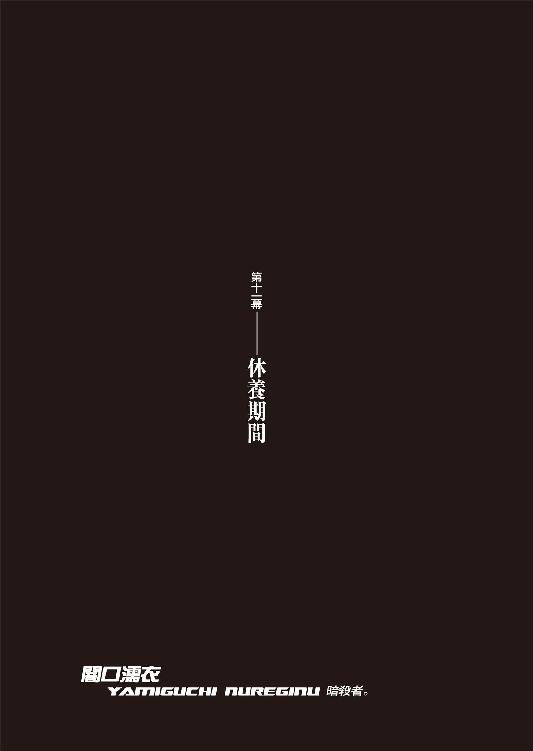
０
痛いは痛い。
痛いは痛い。
１
よくわからないけれど暗い顔をしていた。
「よくわからないけれど暗い顔だね」
と言ってみた。
益々暗い顔になった。
面白いと思った。
よくわからないだけに面白いと思った。
話を聞いてみれば、なんでも明日、今までの総決算になるような種類の実験があるということだった。そんなのはこれまでにだって何度もあったことじゃないかと思ったが、しかし、明日の実験は、これまでのそれとは規模が全然違うものらしい。
どうやら嫌がっているみたいだ。
「嫌なら嫌と言えばいい」
自分にはできないことを他人に要求してみた。
嫌だと言われた。
パラドックスで面白いと思った。
実際は面白いわけじゃない。
むしろ不愉快だといってもよかった。
けれど面白いと思った。
実験を拒否すればここにいる意味はなくなる。そうなると処分されてしまう。そもそも選択肢などないのだと、暗い口調で語られた。聞いていて憂鬱になるような物言いだった。普段はとても明るい奴なのに、実験や研究の素体として扱われるときだけは、電気を消したように消沈してしまう、そのギャップが、ぼくから見たら、不思議で不自然で、面白いと思っていた。
ぼくは好きだった。
でも今回の落ち込みは酷い。
深刻らしい、と思った。
「じゃあ」
と、ぼくは言った。
「ぼくと一緒に逃げよう」
気軽に言った。
励ましのつもりだった。
ただの激励でしかなかった。
逃げられないことなどわかっている。
そのときのぼくにはよくわかっていた。
ぼくは、
既に、
そのとき、玖渚友を壊していた。
玖渚友を殺していた。
ぼくは知っていた。
自分には何もできないということを。
自分には逃げることすらできないということを。
どこに逃げたって、同じだと。
結局どこだって同じ場所だとぼくは知っていた。
だからこそ言えたのだ。
「二人で逃げよう、手を取り合ってどこまでも」
それを聞いて、
よくわからないけれど、嬉しそうな顔をした。
だから。
だからぼくは、
結局最後まで、
あいつに、謝ることすらできなくて──
「......おはようさん」
あれから──一週間が経過し。
十月八日、土曜日。
その日、入院し直した病院のベッドで眼を覚ましたとき、隣にいてくれたのは、みいこさんだった。
浅野みいこ。
ブルーの患者衣で、パイプ椅子に座っている。
多少やつれている風がある。
けれど、物腰はしっかりしていた。
頼れそうなまなざし。
精悍な表情は──以前のままだ。
「..................」
「どうした？」
「みいこさん......」
「うん？」
「みいこさん、ちゅー」
「......にっこり」
喉に手刀。
呼吸器官に深刻なダメージを受けた。
「みいこさん......首への突っ込みは命にかかわります......呼吸困難で咳き込んでいる自分の姿がすげえみっともないです......」
「セクハラ禁止」
「はい......」
厳しい。
命の恩人に対する態度とは思えない......。
「......ご無事そうで、何よりです」
「うん」
と、みいこさんは頷く。
「まあ、意識は少し前から戻ってたんだけどね。動けるようになったのは、今日から」
「......そうなんですか」
らぶみさん、何も言わなかったのに。
隠してやがったな。
まあ、面会謝絶ってことだったんだろうけど。
「鈴無さんは？ どうしました？」
「寝てる」
「寝てる？」
「私の病室のベッドで」
「みいこさんの病室のベッドで」
「非常に邪魔だ」
「............」
酷い言い草だった。
鈴無さん、多分みいこさんが意識を戻すまで、昼となく夜となく不眠不休でつきっきりだっただろうのに......。
「でかい図体をして」
「はあ」
「鈴無の癖に私より背が高いとは何事だ」
「はあ......」
滅茶苦茶なことをおっしゃる。
鈴無さんに対してだけは妙にワガママだ。
まあ、けれど、この二人のことに関しちゃ──ぼくが余計な口を挟むべきじゃないだろう。
二人とも、よく、わかり合ってるんだろうから。
みいこさんは鈴無さんに礼など言わないし、
鈴無さんもそんなものを求めたりしないだろう。
二人にとっては、
そんなの、極々当たり前のことなのだろうから。
眼を覚ましたとき、
隣にいるのが、当たり前。
みいこさんが今──ぼくにしてくれたように。
んー。
ちょっと、やけるかな。
「......じゃあ、もう、退院ですか？」
「んにゃ。さすがにまだ、身体はがたがたでね。なんとか歩けるといったくらい」みいこさんは淡々と言う。「今月一杯は、病院かな」
「そうですか......」
「身体がなまる」
「ですね」
「折角鍛えたのに」
「ですね」
「残念」
「ですね」
なんか変な会話。
ていうか、日常過ぎるのか。
そうだな......
こんな落ち着いた会話は、久し振りだ。
みいこさんの、気持ちのいい間合い。
心地よすぎて、なんか変な感じなのだ。
こんな心地よさが──
許されるわけがないだけに。
異和感。
「......みいこさんは、どこまで知ってますか？」
「うん？」
「このたび、起きたこと」
「うーん」みいこさんは首を傾げる。「現時点では、あまり、ていうか全然。誰からも説明を受けていないから、よくわからない」
「そうですか」
「でも、萌が死んだのは、知ってる」
「......そうですか」
「残念」
「............」
「残念」
姫に続いて二人目か──
みいこさんは、無表情でそう言った。
「で......崩の方はどうなっているんだ？」
「あ、その──同じくこの病院に、入院中です」
「うん？ そうなのか？ 聞いていないな......。いの字、それは──」
「いや、怪我は大したことないんです。怪我自体は命にかかわるみたいな話じゃなくて。額に大きな傷が入ったけれど、それは髪で隠れる程度でして。若いし、すぐ目立たなくなると思います。ただ──その」
「煮えない言い方だな。言いにくいことか？」
「ええ......それなりに」
「聞かない方がいい？」
「......詳しい説明は、省かせてください。ぼくもまだ、消化できていないんです。でも、これは、ぼくのことじゃなくて、萌太くんと崩子ちゃんのことですから──みいこさんも、しっかりと、聞いてください」
「うん」
「崩子ちゃん──は、ですね。目の前で、萌太くんが、死んじゃったんで──強いショックを受けて、精神の方に──酷いダメージを蒙ったんです」
「電車にひかれたんだったな」みいこさんは頷く。「それでは原形も──とどめないか」
「それも、目の前で、ですから──いくらしっかりしているように見えても、まだ十三歳の女の子ですからね」
「......うん。まあ、その通りだ。それで？」
「あれから一週間──ずっと半狂乱で」ぼくは言った。「鎮静剤打たれて、個室のベッドに縛りつけられています。壁を殴ったり窓ガラスを割ったり、そこから飛び降りようとしたりで──過剰な自傷の傾向があるみたいで」
「............」
さすがに、みいこさんは黙った。崩子ちゃんのそんな姿が、想像を絶するのかもしれない。普段あれだけ、芯の強い子だけに、ぼくだってそれは同じだった。
ぼくは、実を言えば、そんな崩子ちゃんに、まだ会っていない。自分の目で見たことではない。全てらぶみさんからの伝聞だ。だからぼくもまだ半信半疑なのだけれど──しかし、崩子ちゃんに関してはみいこさん以上に厳戒な面会謝絶態勢が敷かれていて、一週間、気にかかりながらも──まだ、崩子ちゃんの病室への訪問は叶っていない。とてもじゃないが、医者と看護師以外が会えるような状況ではない──そうだ。
あのふざけた性格のらぶみさんが真面目な顔をしてそういうのだから、ぼくがどれだけ半信半疑だったところで、多分、それは本当なのだろう。
無理もない──といえば、無理もない。
だって。
崩子ちゃんからしてみれば──
自分が萌太くんを殺したようなものだ。
萌太くんを線路に突き落としたのは、
紛れもなく、
崩子ちゃん自身なのだから。
兄妹。
兄妹──なのに。
この世にたった二人の、兄妹なのに。
「.........重いね」
やがて──みいこさんはため息交じりに言った。
「萌も崩も、それにお前も──子供の癖に、随分と重いものを、しょっているね」
「みいこさんだって──ぼく達を子供扱いできるほど、年齢、変わらないでしょう」
「うん」と、みいこさん。「でも、十三の小娘に──身内の死は、身内の死体は、身内の命は、いかになんでも重いだろう」
「ぼくの妹も──ぼくが子供の頃に死にましたよ」
「そうか」
「まあ、重いっちゃあ──重いですよね。人の死ってのは、どうしても避けられないものである癖に、一人で背負うには重過ぎる。人間が死んだら、本当に──どうしようもないんですから」
本当に──どうしようもない。
どうしようも、なさ過ぎる。
......いや、本当にどうしようもないのか？
西東天も哀川潤も──
死んだはずなのに、生きている。
架城明楽は、西東天の中で生きている。
匂宮出夢は、一度死んで、もう一度死んだ。
そして──想影真心。
「......崩も、じゃあ、しばらくは病院だな」
「ええ──そういうことになります」
「で、お前は？」
「ぼくの傷は──まあ、大したことはありませんから、もう大丈夫です。一週間というのはちょっと入院し過ぎたくらいですよ。週明けには退院しようと思ってます」
「ふうん」
「疑わないでくださいよ、本当ですって。ただ──」ぼくは自然、俯いた。「それから、どうしていいのか、ぼくにはわからない」
「............」
「正直、これで終わりだと思ってたんですけどね」
みいこさんは何も知らない。
狐面の男のことも、《十三階段》のことも。
運命のことも世界のことも物語のことも。
何も訊かないし、何も話していない。
けれど──
さすがに、少しは察しているだろう。
今、ぼくの周囲で何が起こっているのか。
姫ちゃんが死んだことも、
萌太くんが死んだことも、
決して無関係ではないということも。
察しているだろう。
日本刀のように、勘のいい人なのだ。
「わからないんです──何をしたらいいのかわからないんじゃない、相手が何をしてくるのか、何がしたいのかが──まるでわからない。蜃気楼でも敵に回しているかのような曖昧さだ」
「曖昧ならお前の得意分野だろう」
「この手の曖昧は苦手なんですよ。ぼくの得意とする曖昧はいうならば《停滞》で──この状況を指す曖昧は、即ち《不明》です」
結論を保留するのか、
結論がないのか、
その違い。
「不明、ね」
「正体不明、意味不明──わかったのは、相手はぼくと、ああいう形でのわかり易い決着のつけ方をするつもりがないということ──」
なら──どうしようというんだ。
世界の終わりも、物語の終わりも──ああいう種類の終わりを望んでいるわけではないというのなら、ならば狐面の男にとって、
西東天にとっての終わりとは何なんだ。
ああいう具体的なモノじゃなく──
もっと、抽象的なモノなのだろうか？
一体──
彼は、何を望んでいる？
「まあ──込み入った状況になっているようだね」
「そういうことです」
「まあ──今の時点でもまだ、私は、何も知らないままでいさせてもらうよ。どうせこの有様じゃ、今月は何もできない。安心しろ、もう、お前の邪魔はしない」
「............」
「もう──お前の足を引っ張るつもりはない」
「みいこさん、そんな──」
「いいんだ。あのとき、あいつからお前を庇ったのは、やっぱりやっちゃいけなかったんだろうね。私はやっぱり──過保護なんだな。分を弁えないほどに、過保護だ」
「......その所為で萌太くんが死んだ、なんていわないでくださいよ」
崩子ちゃんだけで──それはたくさんだ。
たくさんなんだ。
「そんなことは言わないさ」
みいこさんは首を振る。
「言わないさ。口が裂けてもね」
「安心しました」
「けれど、私が傷つくことで──崩や萌やお前が余計に傷つくというのだったら、この場合は、傷を負わないことが正解なんだろう」
「............」
「あのときは色々知ったようなことを言って悪かったな、いの字」と、みいこさん。「私が間違っているとは思わないけれど──お前の姿勢も、また、間違いではない。正しい」
「正しい──」
「お前の傷は、それがたとえ誰のためのものであれ、お前だけのものだったな。誰かが肩代わりできるようなものじゃない。私も、それに、崩も──その辺が、わかっちゃいなかったんだろう。
存分に傷を負え。
私はそれに耐えようじゃないか。あんまり痛むようなら──舐めてやるさ」
傷つくのを──やめようと思っていた。
誰かが悲しむなら、傷を負うのをやめようと。
でも──それじゃあ、駄目なんだ。
やっぱりそれじゃあ、駄目なんだ。
それだけじゃ駄目なんだ。
傷ついて。
傷ついて傷ついて傷ついて。
そうしなくちゃ分からないことだってある。
他人の傷は見ていられないけれど。
他人が傷つくのには耐えられないけれど。
それでも。
眼を逸らさずに、眼を瞑らずに。
決して眼を閉じず。
一瞬たりとも瞬きせず。
ちゃんと見て、
ちゃんと見据えて。
耐えなくちゃならないんだ。
それが──
優しさと甘さの違い。
弱さと強さの違いか。
そうだ──
甘えるな。
自分の傷も、
他人の傷も、
恐れるな。
傷を付け合い──
傷を舐め合え。
「成長してやる」
ぼくは──呟いた。
「誰が何を思おうが──成長してやるさ」
「............」
「変わってやる。今更だろうが、虫がいいと言われようが──変わってやる。ぼくはあなたとの戦闘を通じて──成長して、変化してやる、西東天」
ぼくがあなたの敵だと言うなら──
今に、敵じゃあなくなってやる。
もう──甘えたことは言うまい。
誰に対しても。
ぼくは甘えない。
「そうか」
みいこさんは、パイプ椅子から立ち上がった。
足元が少し、おぼつかない感じだった。
やはり、本調子ではないようだ。
「よくわからないけれど──まあ、よかったよ。思ったより落ち込んでなかったので、安心した」
「落ち込んで......？」
「姫が死んだときなんか、お前、大変だったじゃないか」と、みいこさんは言った。「萌のことで、また落ち込んでいるようなら、また慰めてやろうと思ったんだけどね。いらぬ世話だったな」
「慰め、ですか」
「うん」
「それは、まだ、大丈夫です」
「そうか」
「崩子ちゃんが落ち込むのは仕方がない──というか、当然で、気持ちはよく分かるんですけれど──でも、なんか、この場合はね──ぼくが萌太くんのことで悲しむっていうのは、少し違う気がするんです」
「うん？」
「萌太くん、最後、笑ってましたから」
「あいつは──ウチのアパートでは珍しく、ていうかただ一人、よく笑う奴だったからな」
いつも──一人で。
まるで、他の皆の肩代わりでもするように。
静かに彼は、微笑んでいた。
「ええ。最後まで──そうでした。それに──とても、満足そうでした」
そこに対する理解は──崩子ちゃんと萌太くんでは、やっぱり逆なのだ。
しかし、そうはいっても、萌太くんは──
最後の最後は、崩子ちゃんと同じように、
愛する者を、大事にしたんだと思う。
だから、満足だったのだろう。
満ち足りていた、のだろう。
「もっとも──やっぱりというか当然というか、後に遺された崩子ちゃんにしてみれば、萌太くんがどう思っていたところで──同じだとは思いますけれどね」
「だろうね。それがわかっているのなら──」みいこさんは言う。「崩の方は、お前に任せてしまって、いいな？ 正直、そこまで行くと──私の手に負える話じゃなさそうだ、と、思わなくもない。そういう、重い痛みは──私にはとてもじゃないが、想像もできないよ」
「ええ」
「だから首は突っ込まないけれど、何か、私にして欲しいことがあれば、いつでも言え」
「そうさせてもらいます」
「全部終わったら酒でも奢れよ」
「ええ。そのときこそ、思い出話を肴にね」
みいこさんは苦笑のような表情を浮かべ、
そして──病室を出て行った。
............。
起こしていた上半身を倒す。
ぼう、っとしてみる。
考える。
考えない。
ため息。
「............ちぇ」
無理、してたよな。
ぼくも、みいこさんも。
日常のようでも──日常とは違う。
そりゃあ──いつも通りとはいかないさ。
ぼくもみいこさんも崩子ちゃんも死にかけて、
萌太くんは死んだのだ。
傷。
傷の痛み、か──
痛感って、言うんだろうな。
苦しい。
悔しい。
けれど──耐える。
耐えてみせる。
「成長してやるさ......」
姫ちゃんのためにも。
萌太くんのためにも。
出夢くんのためにも──
何より、自分のために。
「そうだな......相手が何をしてくるかわからないっていうんなら──やっぱりこっちから何かを仕掛けるしか、ないか」
あれから──一週間。
癒えた傷もある。
癒えていない傷もある。
癒えることのない傷が一番多い。
なら──
もういい。
待つのはやめだ。
ぼくは、決意した。
そうだ──指を咥えて、待っていられない。
向こうのコンタクトなど、待っていられない。
攻守交替だ。
今度は、ぼくが仕掛ける。
「うん──じゃあ、ま、やっぱり......展開としてはいささか安直な考え方ではあるけれど、あの愉快で素敵なお友達にもう一回だけ、ご登場願うことにするかな──」
２
何があろうと時間だけは経つ。
時間は戻らない、停まらない。
進む。
加速することはあっても。
ただ、単純に、前向きに、進む。
それだけだ。
どんな非日常の中でも決して日常は消えない。
どこへ行っても帰り道があるように。
日常だけは、なくならない。
翌日。
「きゃっほーい！ るんるるーん！」
らぶみさんは相変わらずのテンションだった。
............。
えっと......。
なんていうか、自分がこういう風に落ち込んでいるとき、近くにこういう落ち込む暇を与えてくれないような人がいると、逆に余計に気分が沈むことがあるよな......。
「朝食だ！ 食え！」
「......いただきます」
まあ......前にらぶみさんが言っていた通り、それもこれも、患者であるぼくに対する励ましの気持ちがこもっているのだと思えば、決して悪い気はしないか。
お粥。
味噌汁。
蒟蒻サラダ。
ゼリー。
「おいしい？ わたしの手作りなの」
「噓をつけ」
滅茶苦茶病院食じゃねえかよ。
驚いたことにらぶみさんは、指先に絆創膏を貼りまくるという昔の漫画のような小細工まで施していた。
意味もなく芸が細かい......。
「初めてだったから、あんまり自信ないんだけど。あ、でも、見た目はあれだけど、味はそんな悪くもないんだよ」
「............」
外したギャグでも最後までくじけることなく貫く姿勢はさすがだと思った。
見習っていきたい。
「ところでいーいー」
「なんですか」
「メイドラブ！」
「は？」
「メイドさん、今日は来ないの？」
「ええ。昨日来てくれたところですし」
「けっ。つまんねえ」
本音トークかよ。
しかも意味わかんないし。
「メイドがいないならこんなとこいても気が滅入るだけだから、わたし、帰るね」
「酷い物言いですね......」
「ばーかばーか！」
「子供かあんた」
らぶみさんは食器類を片付ける。
こういうところは手際がいい。
そして去り際。
「そうそう。崩子ちゃんに、会ってもいいよん」
と、言った。
「え？」
ぼくは、当然、驚く。
らぶみさんはにやりと笑った。
「面会謝絶解除」
「へえ......もっと長引くと思ってましたけど」
「いーいー限定面会謝絶解除」
「は？」
「ぶっちゃけ非公式」
「..................」
「崩子ちゃん、状態が多少はマシになったって感じでね、監視の目が緩んでるから、今、チャンスなんだよん。今日の十時から三十分間、隙ができそうだから、そこを狙うのだ。鍵はわたしが開けといてあげる」
「そのお心遣いにゃ、それは感謝しますけど......でも、らぶみさん、いいんですか？」
「いいわけねーだろ」
「はあ」
「わたしは何も知りません」
勝手にしなさい、とらぶみさんは言った。
「でも──えっと、あの......」
「何よ。この一週間、散々崩子ちゃんのことを気にかけていたのは、あんたじゃない。この変態ロリコンペド野郎」
「......でも、今、中途半端に、専門家でもなんでもないぼくが出ていったりしたら、その──崩子ちゃん、折角回復しかけてるところに、まずいんじゃないでしょうか？」
「回復ねえ」
らぶみさんは肩を落とした。
らしくない、仕草だった。
そもそも、とらぶみさんは言う。
「果たしてあれを回復と言っていいのかどうか」
「............？」
「やん！ あんまし喋らさないでよ！ らぶみ様はクールでニヒルでドラスティックでストイックな看護師さんなんだからん！」
「そんな誇大広告、ぼく初めて聞きましたよ」
ていうかそれはもう詐欺のレベルだ。
あと多分、ドラスティックをドライの形容詞か何かだと勘違いしていると思う。
「ばい！ 捕まってもわたしの名前は出すなよ！」
そしてらぶみさんは去っていった。
嵐のような看護師さんだった。
で──
時間が経過して、九時半。
少し早かったけれど、ぼくは病室を出た。
崩子ちゃんの病室の位置は、既に調べているので知っている。そこまでのルートも完璧に押さえている。けれどこういうのは、状況がこの先どういう風に転ぶのか分からない以上、余裕を持って行動した方がいいだろうという判断だった。
らぶみさんの思惑にそのまま乗るというのは、言ってしまえば少々癪な感じもあるのだけれど──どうせ今ぼくは、明日の退院を待つばかりという、若干退屈を持て余している状態なのだ。崩子ちゃんと会うことがいいことなのか悪いことなのかはともかくとしても──そういう機会があるのなら、様子だけでも窺いたかった。ぼくとしては、こっそりと病室を覗くだけでも、別にいいのだから。
「............」
昨日、あれから。
小唄さんに、電話をした。
携帯電話の使用は病院内では禁じられているので、当然、院内に設置された公衆電話からだ。
大泥棒、石丸小唄。
哀川さんがまたも行方不明になったことを告げると、さすがにあの人のことだから態度を乱したりはしなかったものの、相当気分を悪くしたようだった。十全ではありません十全ではありませんと何度も繰り返した。哀川さんを発見するためにした彼女の苦労を想像すれば、わからなくもない話だと思った。
「仕方がありませんね」
と、小唄さんは言った。
「もう一度、一から探し直すとしますか」
「......お疲れ様です」
「今回は範囲は相当に限定できそうですし、もっと背景を理解し、原因の方を探ってみた方がよさそうですわね。......それで？ わざわざそんな報告をするために、わたくしに電話してきてくださったというわけでもないのでしょう？ お友達」
「ええ──一つ、小唄さんにお願いしたいことがありまして」
「......まあ、一応、聞きましょうか」
「哀川さんを探すついでに──もう一人、探して欲しい人物がいるんです」
「はあ。なるほど。人探しですか。名前は？」
「零崎人識」
「......零崎一賊──ですか」
小唄さんの声が、低くなった。
「えっと、ですね──」
「待ってください、お友達。これ以上の話は、直接会って、することにしましょう。今入院中とのことでしたが、退院はいつのご予定ですか？」
「月曜日です」
「なら、退院したその足で、直接、わたくしに会いに来ていただけますか？ わたくしは、月曜日に、京都市内の、どこかのホテルに宿泊することにしますので、そこで待ち合わせしましょう。詳細は、その日、電話していただければ」
──という次第。
詳しい話は、だから、明日──だ。
病院の廊下を歩きながら、ぼくは考える。
零崎──人識。
殺人鬼。
生きている──ねえ。
出夢くんの遺言......のようなものだが、さて、それにどこまで、信頼がおけるものなのか、ぼくは未だに、判じかねている。
けれどまあ──確かに。
考えてみれば、零崎が死んだという情報の根拠は、あくまでも理澄ちゃん、《人喰い》の匂宮理澄の調査結果だったというわけで──狐面の男の依頼を受けて動いた、《名探偵》としての理澄ちゃんの情報は、それは多分、正確なものではあるのだろうけれど──
そこにはただ一つ、例外がある。
一つだけの、例外が。
理澄ちゃんの調査は──あくまでも、誰のためでもなく、《兄》である出夢くんのために行われるものなのだ。調査結果が出夢くんに害を及ぼすようなモノになることが、あってはならないのだ。
同じ身体に二つの人格。
理澄ちゃんはあくまで代理品。
もしも──出夢くんが、匂宮出夢が、零崎人識の存在を狐面の男に隠そうとしたならば──理澄ちゃんの調査結果が《間違った》情報になったことに、疑問はない。
「んー......でも」
元々、狐面の男に零崎の存在を教えたのは、出夢くん──なんだよな。
そこが不自然といえば不自然......あ、いや。
違う、その時点では、まだ狐面の男は、零崎のことを敵と看做していたわけじゃあないのだ。単純に、ほんの世間話のつもりで、出夢くんは零崎の話を、狐さんに振った──だけ、と考えればいい。
じゃあ......どういうことだ？ 出夢くんは零崎のことを、狐面の男の敵にしたくなかった──ということになるのだろうか？
出夢くんは、先々月のときも先月のときも、零崎のことを知っているような口振りをしたことがあった。もしも──出夢くんが、零崎人識を、ただ知っているというだけでなく、もう少し、深い繫がりがあったのだとすれば──辻褄は、合わなくもない。
情報として知っているのでなく。
存在として知っていたならば。
まあ、まさか出夢くんと零崎が友達同士だったとは思わないけれど、それでも──ひょっとすると、ひょっとすれば。
出夢くんは零崎を──庇ったのかもしれない。
狐面の男の、魔手から。
じゃあ、ぼくを追ってくる形で、出夢くんが澄百合学園に現れたのも、ひょっとすれば、零崎人識の代わりに、その代理品として狐面の男の《敵》に選ばれてしまったぼくに対する──罪悪感、罪の意識のようなものが、あったということも、考えられる。
説明はつく。
ならば──生きているのかもしれない。
哀川潤は零崎人識を殺していないかもしれない。
......わからない。
情報が少な過ぎる。
少な過ぎる情報が錯綜している。
匂宮理澄が零崎人識は死んでいると言い、
匂宮出夢が零崎人識は生きていると言い。
本当に──わからなかった。
確かぼくは、出夢くんが哀川さんとの戦闘に赴こうとするとき、行かない方がいい、零崎人識を殺したのは哀川潤だ、哀川さんはきみ達に対しては容赦がないんだ──みたいな事を言ったが、だとするなら、出夢くんは、どんな気分で、ぼくのその台詞を聞いていたのだろうか。
想像するだけで──落ち込みそうだった。
今から思えば、出過ぎた真似をしたものだ。
まあ──とにかく。
その件に関しては、やはり、ぼくにできることはない。ことに《殺し名》が嚙んでいる以上、というか、ことが《殺し名》そのものである以上は、玖渚に頼っても、こればっかりは無駄だ。
ならば──小唄さん。
稀代の大泥棒、石丸小唄に頼るしかないだろうというのがぼくの出した結論だった。
まずはその辺から揺さぶってみるしかない。
とはいえしかし、それについては、保険みたいなものだ。零崎が生きていようと死んでいようと、今更それはどっちでもいいようなものだ。狐面の男は、今になって零崎が実は生きていたといったところで、特に取り合いはしないだろう。ぼくから零崎に標的を変更したりはしないだろう。精々、《敵》の予備ができた、くらいの捉え方をする程度ではないだろうか。
だから──保険だ。
それよりももう一つのアプローチの方が重要。
こっちは、退院してから、だ。
小唄さんに会ってから、その計画は進めよう。
おっと......
その前に、玖渚にも連絡を入れないとな......。
こうなってしまえば、もう、玖渚の力、ひいては玖渚機関の力を借りないわけにはいかないだろう──とはいえ。
全ては、退院してからの話だ。
今は、とりあえず、崩子ちゃん──
「............ん？」
と。
そのとき。
廊下の、歩いている先に見えていた喫煙スペースに設置されていた、公衆電話が──鳴った。
公衆電話が鳴った。
「............？」
えっと、公衆電話に電話がかかってくることって、あるんだったっけ......？ いや、一応電話である以上、番号くらい設定されているのか......？ こっちから回線が通っている以上、向こうからも通っていると考えるのが自然なのだろうか。しかし、何にしたってそんな状況に出くわすのは、初めてだったので、ぼくは一瞬、戸惑った。
戸惑いながらも、とりあえず、その喫煙スペースに入る。まだ朝早いので、スペース内には誰もいない。やけに清潔なソファとテーブル、綺麗に掃除された灰皿があるばかりだ。
電話は鳴り止まない。
しつこく、ベルを鳴らし続けている。
「..................」
まさかな、と思う。
思うけれど──なんというか。
タイミング。
このタイミング──
こういう、巡り合わせ。
物語。
ぼくは、受話器を取った。
「私は一切の質問を受けつけません──一方的に私が喋るだけです。一言でもあなたが喋れば私は即座にこの通話を切断します」
抑揚のない──作り物みたいな声だった。
「私の名前は闇口濡衣です」
「《十三階段》の八段目──闇口濡衣」
「............っ」
思わず、声を立てそうになって──慌てて口を塞ぐ。何も、相手の言うことを真に受けたわけではないが──こんな病院内で、騒ぎを起こすわけにはいかない。
ぼくは周囲を見渡した。
「警戒しなくて結構──病院内にいるわけではありません。あなたがたに危害を加えるつもりはありませんから」
「............」
「ちなみに──私の声を聞くのは、あるじを除けばあなたが初めてです」
闇口──濡衣。
濡衣さんは、言う。
「おめでとうございます」
「............」
その言葉に、思わず、ありがとうございますと言いそうになったが、なんとか、我慢した。
「本来なら私はあなたとこのような接触をするべきではないのでしょうが──一応、少なからず説明の必要を感じましたので、こうしてお電話さしあげました。病院内ではあなたの携帯電話は使用できないようでしたので、このような形で失礼します」
やけに──丁寧な物腰だ。
崩子ちゃんもそうだけれど、《闇口》というのは、礼儀礼節には煩い家系なのかもしれない。
けれど。
けれど、それでも──
どんなに礼儀正しくったって。
「先日あなたの背中を押したのは私です」
暗殺者であることに──変わりはない。
闇口濡衣。
隠身の濡衣。
「............」
「少々、私が思っていたのとは違う結果にはなりましたが──しかし、目的は果たせたので、よしとします」
目的......？
結果が違って目的は果たせた──というのならば、目的は、じゃあ、ぼくじゃあなかった、ということなのだろうか？
「私の目的は闇口崩子でした」
と、濡衣さんは言った。
「彼女はウチの家系の恥晒しですし──ね」
「............」
「大人しくしている分にはそれでよかったですけれど──《力》を使おうというのならば話は別です。まるで違います。ねえ、《いーちゃん》さん。闇口崩子の、ご主人様」
あくまでも──礼儀正しい。
どこまでも、礼儀正しい。
けれど、それは、皮肉にしか聞こえなかった。
慇懃無礼も──いいところだ。
「あなたを突き飛ばせば、崩子がそれを庇うのは眼に見えていました。眼を閉じていても、眼に見えていました。崩子を突き飛ばすよりは──より、確実だったでしょう。もっとも、あの薄汚い死神が、まさか崩子を庇うとは思いもしませんでしたけれどね──」
それが結果。
そして目的は──
「けれど、目の前で兄が死んだ──否、自分が殺したとなれば、もう崩子は再起不能でしょう。少なくとも、二度と、その手を使って《力》を発揮することなどできるわけがありません。《力》を発揮しようとするたびに、脳裏に《兄》の死に様が思い浮かぶでしょうからね。だから私の目的は、果たされた──というわけです」
確かに──
崩子ちゃんにとって、萌太くんの死は、自分の命を奪われることよりも──辛い体験だったろう。
そうか......。
じゃあ、あのとき、その直前に萌太くんが言っていた《気がかり》というのは、正に正鵠を射ていたわけだ......闇口濡衣が、崩子ちゃんと萌太くんをターゲットにおいた《十三階段》なのだと。
だけど......しかし。
だからといって、じゃあ。
この電話には、何の意味がある？
「若き戯言遣いさん──あなたのような存在が、私達にとって、私のような存在にとって、至極厄介だというのは、わかっていただけますよね？」
「............」
ていうかさ。
喋るなって言っといて質問するなよ。
思わず答えてしまうところだった。
「《因縁》──狐さんはそういう言葉で表現するところなのでしょうが、まあ隠し立てせずに正直なところを申し上げると、私はあなたとの間に、何の遺恨も残したくないと思っています」濡衣さんは言う。「確かに今回、私はあなたの背中を押すことで、石凪萌太を殺し、闇口崩子を再起不能に陥れましたが──それが私の仕事だったことを分かって欲しいんです。あなたには私を恨んで欲しくない」
「............」
「だからこうして、失礼を承知ながら、お電話差し上げたという事情です」
無論──と、濡衣さんは続けた。
「こんなことを言われて、はいそうですかとあっさり頷いていただけるとは思っておりません。崩子を暗殺することは、我があるじから受けた命令だったとはいえ、そんなことがあなたにとっては何の意味も持たないということも、重々承知しております」
あるじ......。
その言い方からすると──やはり。
濡衣さんのあるじは、狐面の男じゃないんだ。
ぼくのその推測を後押しするように、濡衣さんは、
「私は《十三階段》を抜けます」
と、言った。
「死神と崩子を《停止》させた以上──もう、あの組織に存在し続ける意味はありませんから」
「............」
「元々、狐さんとはそういう契約だったんですよ──崩子と死神が動くようなら、そのときはそれを止める、というのがね」
止める。
それが──暗殺ということか。
出夢くんが、《闇口》をあれだけ嫌っていた理由が、崩子ちゃんが実家をあれだけ厭うていた理由が、今、はっきりと実感できた気がする。
成程──だ。
「今までは、変な孤島の占い師を殺したり、色々と雑務を要求されても黙って従っていましたが──目的を果たしたこれからは、正直言って個人的な興味は尽きませんが、あの人のそばにいるのは危険と判断するべきでしょう」
......真姫さんを殺したのも──この人か。
けれど、不思議だった。
それを聞いても──別に。
萌太くんと崩子ちゃんのことを含めても。
何の怒りも──湧いてこなかった。
この人に、対しては。
ああ──、と、思う。
この人は、道具なのだと。
完全なる、装置としての暗殺者なのだと。
刃物や銃器みたいなものだ。
そこに意志はない。
その意味では、真姫さんを殺したのは狐面の男だし、崩子ちゃんと萌太くんをあんな眼にあわせたのは、この人のあるじなのだ。
あるじ......。
狐面の男は、それじゃあ、その濡衣さんのあるじから、濡衣さんを借り受けた、という形だったわけなのか......。
どんな人物なのだろう。
崩子ちゃんのことを《恥晒し》と言った以上、《闇口》の家系に対し、何らかのかかわりを持っている人物、と見るべきなのか？ いや、親族同士の契約は禁じられているという話だった......。じゃあ、《恥晒し》というのは、あくまでただの、濡衣さんの感想、なのかもしれない。
あるじにはあるじの目的があって──
崩子ちゃんを。
「ああっと──我があるじについて、想像を巡らすのはやめてくださいよ、《いーちゃん》さん。安心してください、あなたには何らかかわりのない人物です。まあ、崩子には、少しだけ、関係のある人ではありますが──ね」
「............」
「恨まないでくださいよ」
濡衣さんは、繰り返した。
しつこいくらい。
「恨まないでくださいよ。絶対に何があっても私のことを恨まないでください。私はもう《十三階段》を抜けて──あなたとの因果を断ち切ったんですから。もう、天地神明に誓って、あなたに、あなたがたに手を出すことは致しません。狐さんがどんな命令を出そうとも、私はそれには従いません。だから、戯言遣いさん。あなたの戯言を、私に向かって使うのは、遠慮していただきたい。恨まないで──ください」
拳銃で人を殺したとき、拳銃が悪いのか。
ナイフが人を傷つけるのは、ナイフの責任か。
そう言ったのは──出夢くんだったっけ。
だったら──心配しなくていい。
あなたこそ安心していい、闇口濡衣。
ぼくは決してあなたを恨まない。
恨むことは、ない。
「私は──匂宮出夢の二の舞はまっぴら御免なのですよ。私はまだまだこれからもずっと、あるじのお役に立たねばならないのです。恥晒し一人と薄汚い死神一人のために、足を掬われるわけにはいきません」濡衣さんは、それでもまだ、続けた。「ですからここは一つ、あなたに情報を差し上げようと思います」
「............？」
情報？
「単純に私が《十三階段》から抜けるというだけでは、それはあなたにとって破格の条件とはならないでしょうし、私にとっても都合のいいばかりでしょうから──まあ、強いて言うなら内部告発という奴です」
内部──告発。
......根尾さん辺りの得意そうなことだ。
裏切り。
本当に──目的のために手段を選ばないんだ。
《闇口》というのは。
怒りはないし、恨みもしないけど......
ちょっと、胸がむかつくかな。
重く──なる。
そんなぼくに構わず、濡衣さんは言った。
「澪標姉妹が──あなたを狙っています」
「............？」
澪標姉妹？
澪標深空に──澪標高海？
あの、法衣姿の、二人が、か？
「どうも、あの二人──狐さんの前であなたに恥をかかされた、と思っているようですね。実際にやったのは匂宮出夢とは言え、その匂宮出夢がもう死んでしまった以上、そのやり場のない感情は、あなたに向かうしかないんでしょう」
「............」
おいおい......。
やり場のない感情をこっちに向けるなよ。
言葉がおかしいだろうが。
「あの二人は、だから、狐さんの指示を離れ、独自に動こうとしています──狐さんは止めていますが、恐らく無駄でしょうね。そう遠くない内に、あなたの前に現れるのではないでしょうか」
濡衣さんは、少し、変な呼吸音を聞かせた。
笑ったのかも──しれない。
「プライドの高い二人ですからね──あの二人、どうやらプライドだけは一人ずつでも一人前のようです。今のままでは狐さんに合わせる顔がないんでしょうよ。《空間製作者》の木の実なんかが散々揶揄していたようですし。女の嫉妬は怖いですね」
「............」
「否、怖いのは女そのもの──ですか」
とにかく、と濡衣さんは言う。
「気をつけることです。分家とはいえ殺し屋は殺し屋──若いとはいえ澪標は澪標。あの日、彼女達があなたにとって大した障害にならなかったのは、あくまで匂宮出夢がいたからこそということを──ゆめゆめお忘れならぬように。崩子も死神もなしで、あなたがどうやって殺し屋を切り抜けるかというのに──やはり多少の興味がありますが、まあ、それも、深入りしない方が私のため、私のあるじのため──でしょうね」
ふうん......
澪標姉妹か......その二人が狐面の男から独立して動き出すとすると、確かに厄介だな。狐面の男の指示の下に動いている内は、わけがわからない、意味不明で正体不明なりにも、それなりに統制は取れているだけ、まだ対応の仕様もあるけれど──
殺し屋に殺し屋として動かれると、厄介だ。
それはぼくのフィールドじゃない。
相手の土俵だ。
あの日、あの駅で、闇口濡衣が、ぼくに対して、崩子ちゃんに対して萌太くんに対してそうしたように──ああいう、本分のやり方をされてしまえば、さすがに向こうはプロなのだ。
対応できるわけがない。
まずいよな......。
「..................」
ていうか狐面の男。
部下の管理くらいきちっとしろよ。
濡衣さんのことも含めて。
カリスマはある癖に、本当に人望ないんだな......。
「本当はもっと色々教えてあげたいんですけれどね。狐さん達の今の潜伏場所とか、橙なる種や哀川潤の、現在の状況とか。しかしそこまで教えてしまうと、今度は《十三階段》から恨まれてしまいかねない。そんなのは御免です。釣り合いが取れません」
釣り合い。
バランス。
均衡──か。
「まあ、他に言うことがあるとすれば──そうですね。やはり、橙なる種は例外として、他の《十三階段》に関して言うなら──一里塚木の実と右下るれろは、警戒しておいた方がいいでしょう。彼女達は女性ですからね。狐さんに強く惹かれている」
「............」
「そして、もしも《十三階段》を崩したいなら、宴九段か絵本園樹辺りからが適当だと思いますよ。九段の癖に四段目の宴九段は何度も狐さんから離反している、忠誠心の欠片もない人物であるらしいですし、絵本園樹は──まあ、あの人に関しては、あなたは実際に会ったんだったら、私が何かを言うまでもないでしょうが」
濡衣さんは、そこで、言葉を切った。ぼくの反応を窺っているのかもしれない。喋らない相手から、どういう風に反応を窺うのか、皆目わからないけれど。
「長電話になりましたね──それでは、この辺で、お別れさせていただきます。親愛なる若き戯言遣いさん。あなたと狐さん、どちらが勝とうが、私にとっては本当にどうでもいいことですけれど──でも、精々、健闘をお祈り申し上げておきますよ」
「あなたにとって」
ぼくは──
ぼくは、言った。
「世界の終わりとは何ですか、闇口濡衣さん」
「............」
多分、答はないと思った。
ただ、最初の宣言通り、電話を切るだろうと。
そう思っていた。
けれど、少しの沈黙の後──
濡衣さんは答えた。
「我があるじの死」
そして──
通話は途絶えた。
回線は切断された。
無機質な信号音だけが、残った。
ぼくは、受話器を戻す。
喫煙スペースには、まだ、誰もいない。
時計を見る。
十時だった。
もう──行かなくては。
崩子ちゃんの病室に行かなくては。
時間が、ない。
《世界の終わり》。
奇野さんは──興味がなく。
絵本さんは──望むところで。
そして濡衣さんには、一人の人間か。
......そういや、ノイズくんの意見は、とうとう聞けず仕舞いだったな。とはいえ──名前を持たない彼の回答は、それでも、聞いたようなものだったけれど。
死にたい気分──だった、という。
まあ、ともあれ。
これで《十三階段》──ノイズくんと濡衣さんが、リタイアという形になったわけか。《十三階段》の一段目、架城明楽のことは差っ引いて考えていいから、今、狐さんが配下として使えるのは──十人。
十人か。
............。
なんか全然、減った気がしないな......。
十三人はどう考えても多過ぎだろ。
四天王とかにしとけよ。
人望ないんだから。
「..................」
考えている内に──
目的の病室へと、到着した。
崩子ちゃんの収容されているその病室の扉は、言っていた通りらぶみさんが鍵を開けていてくれたらしく、横に引くだけでよかった。
そして、
崩子ちゃんは、
ベッドの上にいた。
「......崩子ちゃん」
患者衣に、額に包帯を巻いて。
上半身を起こした姿勢の崩子ちゃんは──
酷く、虚ろな目をしていた。
身体が小刻みに、震えていた。
シーツを、強く握り締めている。
......らぶみさんの言葉の意味が、わかった。
これで回復したと、言えるのか──どうか。
これならまだ、自暴自棄に暴れていたという頃の方が、幾らかマシなのだろう。
闇口濡衣。
確かに彼は──目的を達成したのだろう。
この崩子ちゃんの姿を見て、ぼくは改めてそれを──確信を持って、確信できた。
「崩子ちゃん」
ぼくはもう一度、呼びかけた。
崩子ちゃんは、反応しない。
変わらず──小刻みに、震えている。
寒いかのように。
氷点下の世界にでも、いるかのように。
寒がって──怯えている。
怖いかのように。
頼るものなど何一つ、ないかのように。
怖がって──凍えている。
「崩子ちゃん！」
ぼくは崩子ちゃんに寄って、その小さな両肩をつかみ、強引にこっちに向けた。それは病人に対する扱いとしてはいささか乱暴で丁重さに欠けていたかもしれないが、ぼくにはそれ以外に崩子ちゃんをぼくに向かせる方法を思いつかなかった。
崩子ちゃんは、
「ひっ」
と、悲鳴をあげた。
そしてぼくを──確認する。
「お......お兄ちゃん」
「うん」
「......お兄ちゃん」
「............」
崩子ちゃんは──
とても悲しそうな顔をして、
ぎゅっ、と。
そのまま、ぼくに抱きついてきた。
体当たりのようだった。
小さな身体。
ぼくの服を強くつかむ。
爪が食い込むくらい、ぼくをつかむ。
頭を、
額の傷を、ぼくに押し付けるようにして。
「う......うううう」
と、唸る。
「戯言遣いの──お兄ちゃん」
「......うん」
「わたし......一週間、結構、我慢──しました」
「............」
「そうは思ってもらえないかもしれないけれど、で、でも、それでも、わたしはわたしなりに、萌太が──萌太が、死んだことを、悲しんじゃいけないと、思って」
崩子ちゃんは──がくがくと震えている。
「あれでよかったんだって思って──我慢、我慢してきました」
「──うん」
全部。
そうか──なら、全部、我慢するためだったのだろう。自傷にも似た行為も、自暴自棄も、それは全て──我慢するためだけの、ものだったのだろう。
痛みに──耐えるために。
必要だった、ことなんだろう。
「だけど。だから」
崩子ちゃんは言った。
「今だけ、泣いてもいいですか」
「うん」
「............っ！」
一層、強く、握って。
声も立てない──騒ぎも喚きもしない、
ただ涙を流すだけの、静かな号泣だった。
ぼくも、だから黙って──
そっと、崩子ちゃんの背に、手を回した。
「萌太を──わたしが」崩子ちゃんは、嗚咽交じりに言った。ぼくにというよりは、自分に言い聞かせるように。「わたしが、殺してしまった」
「..................」
「わたしのせい、じゃなくて、わたしが、この手で、突き飛ばして──わたしが、萌太を、線路に、落として」
「..................」
「わたしが──わたしが。わたしが！」
......ああ。
今更ながら──わかった。
さっきの濡衣さんの話を含めて考えれば──ぼくや崩子ちゃんは、線路の方から眼が離せなかったから、ともかくとして──線路に落ち、ぼく達のいるホームを見上げていた萌太くんには、ひょっとしたら、見えたのかもしれない。
ぼくの背後に。
ぼくの背中を押した──闇口濡衣の姿が。
不思議に思っていた。
両腕を骨折していたとはいえ、萌太くんなら、あの状況からでも、電車をかわすことは可能だったのではないのか──と、疑問に思っていた。
けれど、もし、ぼくの背後に闇口濡衣の、濡衣さんのあるじ以外は誰も見たことのないといわれる《隠身の濡衣》の姿を見ていたのだとすれば──
きっと、見越したのだろう。
聡い──少年だったのだ。
自分がここで死ねば、
崩子ちゃんは殺されずに済むことを──
理解したのだ。
だから、彼は──足搔かなかった。
納得したような顔をして──
最後に、あんな、笑顔を見せた。
満足そうに。
萌太くんは──
二重の意味で、崩子ちゃんを庇ったのだ。
まずは、電車から、反射的に。
そして、濡衣さんから──思慮の末に。
「わ──わたし、わたし......お兄ちゃん」
「............」
「お兄ちゃん......戯言遣いのお兄ちゃん......なんでも、なん」崩子ちゃんは、言葉を詰まらせた。けれど強引に、虫の鳴くような小さな声で、続ける。「なんでも、言う通りにしますから──わたしのことを、どうか、見捨てないでください」
「............」
「わたしにはもう、お兄ちゃんしかいないんです」
崩子ちゃんは、抑揚なく──続ける。
「役立たずですけど......兄殺しですけど......愚かですけど、それでも、お兄ちゃんのためだけに生きますから──どうか、わたしを、見捨てないで」
まるで──絵本さんみたいだ。
絵本さんの姿のような、情緒不安定さだ。
しかし、ぼくは普段の、気丈な崩子ちゃんの姿を知っているだけに──
そんな姿は、見ていられなかった。
「お願いします。わたしに......同情してください」
そして──
崩子ちゃんは、静かに、泣き続けた。
幽霊のような、すすり泣きだった。
子供なのだ。
この少女はまだ──子供なのだ。
しっかりしているようで十三歳──なんて、そんな言葉の上だけで、簡単に片付けちゃいけなかった。
そんな当たり前の事実を、
ぼくは今更──痛感する。
痛い。
きっと、これは、崩子ちゃんにとって──
初めての傷なんだ。
ぼくは一体、何を考えていたのだろう？
崩子ちゃんが強いとでも思っていたのか。
ぼくが傷つくのを見ていられないから、自分が傷つく道を選ぶとぼくに宣言したときの崩子ちゃんに、その傷に耐えられるだけの強さが根拠としてあるなんて、どうして思ってしまったのだろう。
単純に、見てられなかっただけなんだ。
見てられなかったから。
根拠なんてないんだ。
頭より先に身体が動いたんだ。
まだ、痛みを知らないからこそ。
傷の痛みを、知らない年齢だからこそ。
少女。
十三歳。
ああ、だったら──
これは、ぼくの姿だ。
玖渚友を壊したときの──ぼくの姿だ。
ぼくと、同じなんだ。
自暴自棄で、悲しむことも許されず。
ただ、自分だけを責めて。
全てから──見捨てられて。
ぼくだ。
昔の、救われなかったぼくだ。
誰にも救われなかった──
誰も救えなかった、ぼくだ。
ぼくと同じだ。
なら──言葉は、いよいよ、同情で正しい。
「──大丈夫だよ」
ぼくは、崩子ちゃんを──
強く、苦しいくらいに、抱きしめた。
「ぼくはずっと、崩子ちゃんのそばにいる」
「.........お兄ちゃん」
「崩子ちゃんを離さない。崩子ちゃんをぼくが守る。ぼくは崩子ちゃんのことが大好きだ。崩子ちゃんのことを、愛している」
言葉は──全て、自然に出た。
崩子ちゃんを、助けたかった。
ぼくと同じには──したくなかった。
とても、そんなことは、できない。
「それに、勘違いしちゃいけないよ──崩子ちゃんにぼくしかいないなんてわけが、ないじゃないか。崩子ちゃん一人にぼく一人なんて、そんなのはあまりにも不公平過ぎる。そんなんじゃ、全然足りないさ。そんなんじゃ全然、釣り合いが取れない。みいこさんも、七々見も、荒唐丸さんも──崩子ちゃんには、いるんだよ。みんな、崩子ちゃんのことを、大切に思ってる。かけがえがないと、思ってる」
「............」
「だから──自分のことをそんな風に言っちゃ駄目だ。ぼく達の大切な人を──貶めないでくれ」
愛してる。
ぼくはもう一度──そう繰り返した。
「お兄ちゃん──」
崩子ちゃんは──顔をあげた。
大粒の涙で、綺麗な顔がぐしゃぐしゃだった。
弱々しくて、痛々しくて──
見ていられなくて──
もう、眼が、離せない。
「わたしのこと──嫌わないで、くれますか」
「あたりまえだ！」
ぼくは──
ぼくは、誓った。
「そんなことは──絶対に有り得ない」
「......あ」
崩子ちゃんは、途端、とんでもない素早い動きで、ぼくをつかんでいた手を離し、ぼくから離れて、ベッドにうつ伏せに、シーツを全身に被って、隠れてしまった。
............？
行動の意味が一瞬わからない。
けれど、
「あ、ありがとうございます」
と、シーツの中から聞こえてくるに至って、
ああ、照れてるんだ、
と、わかった。
醜態を晒したと思っているらしい。
可愛い、と、素直に思った。
「ほ、本当に今だけですよ」
「え？」
「こんなわたしは、今だけです」
「............」
「すぐに、元に、戻りますから」
「......そう。そうなんだ」
それは──よかった。
ぼくは、安心した。
そうだ──それで、いいんだ。
崩子ちゃんは、そうでなくちゃいけない。
ぼくと同じだなんて──いけない。
ぼくと同じものがいたら、いけないんだ。
「お兄ちゃん」そして、崩子ちゃんは言った。「何か──わたしにできることは、ありますか」
「......今は、まず、ゆっくり休んでくれるかな。休養することも、大事なんだから」
「............」
「でも、困ったときは、必ず助けを求めるよ。そのときは、是非、ぼくの役に立ってくれ」
「──言われるまでもなく」
シーツから顔だけ出し──崩子ちゃんは頷いた。
力強く、頷いた。
「わたしは、あなたのために、尽くします」
「うん。七年後が楽しみだ」
「............」
「なんてね。んじゃ、また来るよ。お大事に」
まだ言葉が言い足りなく、名残惜しくはあったが、しかしあまり時間があるわけでもなかったので、ぼくはそれだけ言って──
崩子ちゃんに小さく手を振り、
病室を出た。
扉を閉める。
天井を見上げた。
ああ......
お大事に、か。
そう言えば、崩子ちゃんには、お見舞いされるばっかりで、ぼくが崩子ちゃんを見舞うのは──これが最初だったんだな。
ふん......
どう考えても、柄じゃあ、ないよな......。
でも──頑張れ。
ここが踏ん張りどころだ、崩子ちゃん。
ぼくみたいには、なるな。
きみの傷は──きみだけのものだ。
「......戯言──だけどね」
どっと気疲れしたようで、膝が崩れかける。
ふう......、と。
近くの壁にどっかりともたれたところで。
「いえーい」
「............」
らぶみさんがすぐそばで蹲っていた。
悪戯っぽい笑顔だった。
「......何してんすか」
「いい話だねえ......お姉さんは感動しました」
「............」
盗み聞きしていやがった。
嫌な脇役だった。
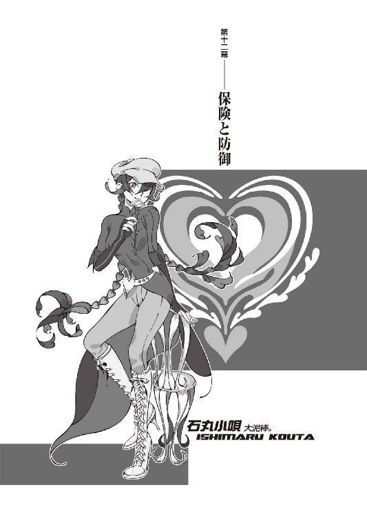
０
先生、気分が悪いんですけれど。
１
ところで──
放置している問題があった。
千賀ひかりさんのことである。
先日、哀川さんに、彼女は、九月下旬からぼくのそばでメイドとして働いている二十七歳の彼女は、千賀ひかりではなく千賀てる子だと、ぼくは指摘された。
数々の根拠をあげて、哀川さんはそう言ったわけで、まあぼくもそのときはそうかもしれない、きっとそうなのだろうと思ったのだけれど──十月に入って再入院し、着替えを持ってきてもらったりその他にも色々と世話を焼いてもらったりしている内に、やっぱりそうじゃないんじゃないのかなー、なんて思うようになってきた。
ひかりさんはやっぱりひかりさん、千賀ひかりなんじゃないかと、そんな風に思えるようになってきた。
というか、元々曖昧な三つ子なのだ。
それぞれがそれぞれに重なっていて、
ぶれているような三姉妹。
重なっているような三姉妹。
誰が誰であろうと、然程変わらない。
それに、大体、仮にひかりさんがてる子さんだったとしても、殊更それを指摘したところで、大した意味があるとはぼくには思えない。否、意味がないどころではない。そんなことをしたら、ひょっとしたらひかりさん──てる子さんは、鶴の恩返しみたいな昔話よろしく、さっさと鴉の濡れ羽島に帰ってしまうかもしれないではないか。まあ、さすがにそんな理由では帰らないにしたって、ばれてしまえばそれ以上てる子さんにひかりさんを演じる理由はないわけで、当然、あの、無口で無感情で無愛想な、誰とも口を利かないし誰の話も聞かない、いつもの彼女に戻ってしまうことだろう。哀川さんの言い種じゃないけれど、それよりは、たとえてる子さんだったとしても、ひかりさんを演じて欲しいと思う。勿論てる子さんはてる子さんでいいのだが、しかし共同生活を送る相手の性格とすれば、てる子さんよりもひかりさんの方が望ましいのは自明の理である。この場合、無理を通して道理に引っ込んでもらう必要はどこにもない。
そんなわけで。
彼女はぼくの中ではまだ千賀ひかりさんだった。
ま......ただでさえ、無数の問題を抱えているんだ。一つくらい──こんな解決、こんな無解決を選んだところで、許されるだろう。
結論の保留。
こういう曖昧さこそが──ぼくの本分だ。
慣れた感覚。
なのに、なんだか懐かしい感じだけど。
それで──そんなわけで。
「今はひとまず、退院おめでとうございます」
と──ひかりさんは、言った。
病院内でメイド服は目立つので、私服。
タイトなジーンズにボーダーのシャツ。
髪は二つに分けて左右に。
..................。
やーん。
「それじゃあ行きましょうか、ご主人様」
「ええ......世話かけますね」
「一旦アパートに戻らなくてよろしいんですか？」
「はい。直接行った方がよさそうなんで」
「わかりました」
では、とひかりさんは、ぼくの荷物を持って、病室から出、ぼくを先導する。退院の手続きは既に受付で済ませてくれているらしい。ぼくはそういう事務手続き的なものを得意とする実際的な人間ではないので、正直いって大助かりだった。
お世話になったお医者さんと、それから一応、儀礼的にらぶみさんに挨拶してから、病院を出て、駐車場に。
フィアット500。
みいこさんのクルマ──なのだけれど、最近はほとんど、ぼくの専用車みたいになっているな。
当然のようにひかりさんが運転席に。
ぼくが助手席に。
「新京極のホテル──でしたね」
「ええ」
「三条の辺りの？」
「そうです」
「またもやホテルで密談、というわけですね」
「そうなりますね」
「ホテルはいいですね」
「そうですね」
「では」
ひかりさんがクルマを発進させた。
無免許運転についてはもう問うまい。
「傷の具合は、本当にもうよろしいのですか？」
「ええ。肉体の回復力は他人の七倍ってのがぼくの数少ない自慢の一つでして」
「精神の頑丈さも他人の七倍──でしょう」
「かもしれません」ぼくは冗談っぽく肩を竦めた。「でも、他人の七乗、怪我する男なんですけれどね。肉体に関しても精神に関しても」
「それはよかった」
「一週間ほど、多少の食事制限はつきますが、それくらいです。抜糸も済んでますし、言うほどの問題はありません」
「何よりです」
ひかりさんは天使のように微笑んだ。
ふう......。
なんか唯一の休息だよなあ。
これから会いに行く大泥棒のことを思えば、そのギャップに卒倒しそうになってしまう。
「ご主人様がご無事なのはこれ以上ない喜びですが──浅野さんと闇口さんは、どのような按配なのでしょうか？」
「ええ。結局二人とも、しばらくは安静、ですね。みいこさんも崩子ちゃんも、今月一杯は病院ですね。崩子ちゃんの怪我はそんな大したことはないんですけれど、やっぱり精神的に、まだ不安定らしくって。みいこさんも、危篤状態は脱したとはいっても、身体中あちこちが傷んでるらしいんですよね」
そもそも、後でらぶみさんに聞いた話だと、一昨日ぼくの病室に来たのも、かなりの無茶だったらしい。みいこさんは歩くのがやっとと言っていたが、常人ならとてもじゃないが、歩けるような状態ではなかったのだそうだ。
あの人もあの人で、実のところは普通じゃない。
でも、とはいえ。
「大変ですね」
と、ひかりさんは言った。
悲しそうな表情である。
ぼくと共同生活を送ると言うことは、当然、アパートのみんなとも繫がりができてしまうわけで──みいこさんや崩子ちゃんのことも、ひかりさんにしてみれば、もう他人事とは言えない。
別にフォローというわけでもなかったが──ぼくはひかりさんに、「いえ──」と、言う。
「──まあ、これで逆に安全であるとも、言えますよ。こうなってしまえば、二人とも、もうしばらくの間は──数ヵ月の間は、前線には出てこられませんからね。《敵》側からしてみりゃ、もう攻撃の対象とする意味がない。考えてみりゃ、リタイアっていうのは一番いい手なのかもしれませんね」
「成程。その通りですね」
「みいこさんは身体を鍛え直すまで半年はかかるでしょうし、崩子ちゃんは──まあ、もう二度と、戦うことはできないでしょう」
闇口濡衣の言った通りに。
そして──きっと、萌太くんの思惑通りに。
多分......それで、いいのだろう。
それが一番、いいのだろう。
「ところで、ひかりさんは、崩子ちゃんと萌太くんの正体......っていうか、あの二人が《殺し名》だったこと、気付いていなかったんですか？」
「いえ？ 気付いてましたけど？」
「............」
だから......教えろよ。
いつもいつも。
まあ、ともかく。
ひかりさんは、言葉を区切って言う。
「わたしとしては──やっぱり哀川さんのことが気になりますね。またしても、行方不明──というのが」
「ええ......まあね」
狐面の男──西東天と哀川潤。
十年ぶりに再会した親娘、と、言うには言っても──やはり、積もる話があるとは思えないし、恨み言があるとも、思えない。
何を企んでいるのか。
何も企んでいないのか。
ただの──気まぐれという感じもあるし。
「わたし達が心配するようなレベルにいる人じゃない、というのは、以前にも話したことですけれど──今回はまた、ことがことだけに、相手が相手であるだけに──いくら哀川さんでも、と思わざるをえません」
「そうですね──って、あれ？」
そういえば──
今まで、不自然なく流していたけれど。
「ひかりさんって、哀川さんのこと、苗字で呼ぶんですね？」
「え？ ああ。はい。それが何か？」
「それが何かって......」ぼくは当たり前のように返してくるひかりさんに、戸惑った。「哀川さん、苗字で呼ばれるの、嫌がるでしょう？」
「............？」
きょとんとするひかりさん。
「えっと、苗字で呼ぶ奴は敵だって......」
「そんなこと、言われたことありませんけれど」
「..................」
あれ？
......どういうことだ？
ひかりさん──っていうか、イリアさん達って、哀川さんとの関係は、そんな浅くないはずだよな？ もう数年の単位に及ぶはずだ。
ではどういうことだろう。
ただ単に、言いそびれたってだけだろうか。
「何かそれ、大事なことでしょうか？」
「......いえ。まあ、比較的どうでもいいことの範疇だとは思いますけれど──」
思いますけれど──何か、変だ。こういう齟齬が、後々効いてくるのが、いつもの負けパターンだった。さすがにぼくでもそれくらい学習しているが──しかし、だからといってどうという話でもないというのは、確かそうなことだった。
うーん。
別にみんなに言っているわけじゃないのかな？
「ご主人様だって哀川さんのこと、苗字で呼んでらっしゃるじゃないですか。それともご主人様は、哀川さんのことを実は敵だと思っているんですか？」
「いや......そうじゃなくて。まあ......うん、そうですね。やっぱり気にするほどのことじゃないと思います」
そう応えつつ、ぼくはひかりさんを見て、今度はもう少し別のことを考える。別のことというよりは、さっきまで考えていたことの続き──なのだけれど、ともかく、怪我の功名というかなんというか、塞翁が馬とでもいうのが内容的にも丁度いいのかもしれないが、これで崩子ちゃんとみいこさんは、今回の話──このぼくと西東天の因縁の話からは外側に出ることができ、いうならば安全圏への脱出に、犠牲こそあれ最終的には成功したわけだけれど──だとすると、次に一番危ないのは、この、今フィアットを運転しているひかりさんということになるのではないだろうか。
てる子さんかもしれないけれど。
それはどちらにしたところで──物理的な話に限定すれば、彼女が今のところのぼくにとって一番親しい存在であることに違いはない。そこについては誰も異論はないだろう。
いつの間にかすっかり馴染んでしまって、ぼくは既にひかりさんがいることを当然と捉えかけてしまっているけれど、普通に考えれば──彼女には、もう、できるだけ早く、島に帰ってもらった方がいいのかもしれない。
少なくとも、彼女自身のためには。
ただし、最初の時点では、確かにぼくはそう考えてはいたはずなのだけれど──今となっては、正直にいって、彼女の存在というのはぼくにとってすごくありがたいのだ。忙中に身をおくとともすれば日常生活の方、ただ単に《生きる》ということを忘れがちになるけれど、そういった点を、しっかりとひかりさんは支えてくれる。
支えてくれ、
抱えてくれる。
ありがたい。
入院中もさんざ世話になったわけだし──
今だって。
こういう状況の中の救いだとも言える。
ひかりさんだかてる子さんだかはっきりさせないのも、はっきりさせたくないというのも、やっぱり、何はさておいてもそこに一因があるわけで......
鶴の恩返し。
しかし、とは言ったものの──
ひかりさんとしては、本当は帰りたいだろうな。
ひかりさんにとって──
世界とは、あの、鴉の濡れ羽島だけなのだから。
その意味じゃあ、確かに濡衣さんの意見とひかりさんの意見というのは、深く通じ合うものがあるのかもしれなかった。
世界は違えど、思いは同じ──か。
勿論ひかりさんだって、あるじの命令によって、いうなら仕事で、自ら望んで、ぼくのそばにいるわけなのだから、それをぼくがとやかくいうのは筋違いってものなのかもしれないけれど。
でも、今度、一度じっくり、その辺、詰めておいた方がいいかもしれないのは、間違いないかな......。
まあ、ひかりさんのことも含めて──
周囲。
ぼくの周囲の安全を固めることは、大切だ。
そのために労力を惜しむべきではないというのは、今回の崩子ちゃんとみいこさん、それに萌太くんと出夢くんの件で──よくわかった。
周囲の安全は、翻ってぼくの安全にもなる。
そう理解しておこう。
奇麗事じゃなく、利己的な理解もした上で。
きちんと──守らなければならない。
「悩み過ぎですよ、ご主人様」
と──
黙考していたぼくに、ひかりさんが言った。
「ご主人様に仕えさせていただいて、もう半月以上になりますけれど──どうもご主人様は、何事に対するにあたっても真面目過ぎるきらいがありますね」
「真面目？ ぼくがですか？」
「ええ」ひかりさんは頷く。「失礼ながら、わたし、ご主人様のことをもう少し、不真面目な方かと思っていました」
「不真面目──ですけれど」
「ならば、肩に力が入り過ぎている、と言ったところでしょうかね」
「肩に──力」
「もっと、いい意味でのリラックスをしてもいいと思いますよ。七分か八分の力くらいで、ご主人様の場合は丁度いいというような気もします」
「......やっぱ、不器用なんですかね」
「それがご主人様にとって最適のやり方だというのでしたら、無理強いはいたしませんが、もしもリラックスやリフレッシュをしようというときは、わたしにお声をおかけください。不肖ながらわたしも、力添え致します」にっこりと笑うひかりさん。「最近は随分とご無沙汰ですけれど、わたし、男の方にリラックスしてもらうっていうか、すっきりしていただくの、得意なんですよ」
「へえ......そうなんですか」
............。
って。
......誘われてる？
誘惑されてるっ!?
「ひ、ひかりさ」
「あ。着きましたよー」
ひかりさんはホテル手前でブレーキをかけた。
がくん、と前につんのめった。
......見事な肩透かしだった。
............。
確かに......リラックスはできたかもしれない。
「では、わたしは駐車場にクルマを停めておきますので、お気になさらずゆっくりとお話してらしてください、ご主人様」
「......そうさせてもらいますよ」ぼくはドアをあけて、助手席から降りる。右座席なので、ちょっとひやひやものだ。「でも、ちょっとお願いごとをするだけなので、そんなに時間はかからないと思います」
「わかりました」
「んじゃ」
ドアを閉め、ひかりさんを見送って──
ぼくは、その大型ホテルを見上げる。
石丸小唄──
小唄さんが指定してきたホテル。
新京極そばの、国際ホテル。
「............」
二ヵ月前──
木賀峰助教授に、呼び出されたホテルだった。
呼び出されたのと同じ、ホテルだった。
別に、ここから始まったというわけではない。
始まり自体は、ずっと前から、始まっていた。
けれど──
それでも、このホテルは、焦点の一つだ。
世界にとって。
物語にとって──
あの八月一日は、焦点だ。
偶然──なのだろうとは思うけれど。
小唄さんがわざわざそんなことをする意味もないと思うし、ただの偶然なのだろうとは思うけれど、しかし、妙に因縁めいたものを感じてしまうな......。ホテル内での待ち合わせ場所も、同じく、一階の喫茶店だし......。とはいえ、性悪な小唄さんの悪意ある悪戯とするには、あまりにも重みがない。赤神財閥を背後に持つひかりさんとは違って、何の背景ももたない無頼の大泥棒の石丸小唄のこと、このホテルが小唄さんの持ち物であるとか、そういうことはまず考えられないので、だったらこれが彼女のアトランダムな選択の結果であることに紛れはないのだけれど......。
なんか、嫌な感じ。
思いながら、ぼくはホテルに入った。
フロントを無視し、
一直線に喫茶店に。
小唄さんは──もう来ていた。
全身デニム。
ハンチング帽。
編み上げの靴。
なんだか、子供みたいに頰を膨らませて、むすっとしているようで、えらく不機嫌そうに見えた。
ひょっとしたら、不機嫌なのかもしれない。
......なんか、気後れするな。
かといって、こんな喫茶店の入り口付近でうろうろしていたら「お一人ですか？」とか声をかけられかねないので、ぼくは怯えにも似た気分を抑えつつ、小唄さんの座っている席へと進んだ。
木賀峰助教授のときは、
どこの席に座ったのだっけ。
さすがに、そこまで憶えていなかった。
「......あら。お友達」先に声をかけてきたのは小唄さんだった。「お元気そうで十全ですわ」
「小唄さんの方こそ、随分とご機嫌そうですね」
「そう見えまして」
「いえすいません調子に乗りました」
出会った早々謝りながら、小唄さんの正面に座る。ウエイターさんが寄ってきたので、ぼくはコーヒーを注文した。まるで約束でも取り交わしているかのように、暗黙の了解でもあるかのように、その、注文したコーヒーが運ばれてくるまで、ぼくと小唄さんは一言も言葉を発しなかった。
コーヒーを少量、口に含み。
「......しかし」
と、ぼくは周囲を見渡した。
平日昼間ということで、客の入りはまばらだ。
まばらだけれど。
「やっぱり、なんていうか、密閉された部屋とかに入った方がよくないですか？」
「無駄ですわ、気休めですわ、お友達。少し話を聞いただけでも、あなたの動向が全てあちら側に筒抜けになっているのはわかりきっていることですわ。ならば──警戒するだけ疲れるだけですわ」
「でも......」
確かに、ひかりさんと、赤神財閥系列のホテルで交わした会話も、時間がかかったとはいえ、結局は狐面の男には通じてしまっていたわけだし、それは小唄さんの言う通りなんだけれど。
「ただ、ここまで無警戒っていうのは、どうかと」
「だからこそ、いいのですわ。無警戒なら無警戒なほど、リスクを回避できます。木を隠すなら森の中──なんて浅はかな文言はこの大泥棒の前では通用いたしません。わたくしなら、木は公衆の面前にこそ隠しますわ、お友達」
「......まあ、逆らいませんけどね」
頼みごとがあるのはこっちだし。
それに──一応、《十三階段》の中でも隠密行動派の、崩子ちゃんいわくぼくを尾行していたという闇口濡衣、濡衣さんが、もう敵ではなくなっているのだ。その辺に対する危機管理のレベルは、少しくらいなら下げてもいいのかもしれない。
「で──まあ、小唄さんのことですから、もう、ぼくの置かれている状況の大体っていうのは、理解できていると思いますけれど──」哀川さんも、その辺は小唄さんから聞いたって言ってたし、だから詳しい状況説明は省いていいだろう。「──哀川さんも再び行方不明になったところで、正直、にっちもさっちもいかないって感じでして」
「それで──零崎人識という殺人鬼を探すことが、その膠着した状況を打破するのに必要不可欠であるということですか？ お友達」
「と、いうか......」
なんだか言葉に棘を感じるなあ。
ちくちくする。
無理もないけど。
「保険──なんですね。言ってみりゃ」
「保険？」
「今ぼくのことを敵と看做している人──まあ、哀川さんのお父さん、西東天って人なんですけど......」
「ええ。存じております」
「元々、ぼくじゃなくて、その零崎人識ってのを《敵》にする予定だったらしいんですね。予定ってほど確定的じゃなかったかもしれないですけど、とにかく、西東天が《零崎人識》を探していたせいで──ぼくが捕捉されてしまったんです」
「成程。その辺りの事情までは、さすがに知りませんでしたわ、お友達。あの《狐》が──生きていたというだけでも驚きなのに、どうしてあなたのような一般人を敵視するのか、得心いかなかったところでしたから」
「ええ」
「もっとも、今となってはあなたを素人カタギ一般人と言えるかどうかは──怪しいところですけれどね」
「ぼくも最近その設定には無茶を感じるようになってきたところですよ。それで、どうでしょう、小唄さん。また哀川さんを探すというのなら──ついでに零崎人識のことも、探していただけないでしょうか」
「......そんなの全然《ついで》にはならないですわ、お友達。労力が単純に二倍に増えるだけです」小唄さんは如何にも面倒そうだった。面倒臭がっているのを隠そうともしない。「山へ行くついでに海へ行けと言われたようなものですわ。零崎人識と哀川潤の間に何らかの密接なかかわりがあるというならともかくも──」
「ないってこともないですよ。五月にあの二人、最低一度、多分二度──衝突しているはずですから」
「............」
小唄さんが──黙った。
これも、知らない情報──だったのか。
ひょっとしたら知っているかと思ってたけど。
「......参考までに、お訊ねしたいのですが」やがて小唄さんが、頭痛でもするかのように額を人差し指で押さえながら、言う。「あなた、零崎一賊について、どのような印象をもっておられるのですか？」
「えっと......」
小唄さんの問いに対して、狐面の男や萌太くんから聞いている話を、ぼくはそのまま口にした。家族を殊の外大事にする、目的なく人を殺す殺人鬼集団──だったか。そう言うと小唄さんは、心底呆れ果てたというような、ため息交じりの失笑を漏らした。
「......零崎一賊に対してその認識は甘いですわ。その認識、正しくはありますけれど、しかし真実ではありません。そんな、ただの殺人鬼の仲良しグループみたいな認識では、全然ちっとも足りませんわ、お友達」
「はあ......」
確かに、こんなのは言葉の上の話でしかないか。小唄さんのような実戦主義者からしてみれば、まさしく机上の空論というべきなのだろう。安全圏からの暢気な意見。とはいえ、ぼくは零崎と、あいつがそんなとんでもない一賊の一人であるということを知らないままに出会っていたから、第一印象が他の人達と食い違ってしまうというのは、ある程度あるんだよな。
「そういえば恐れ多くも零崎愛識なんて偽名を名乗っていた人もいましたしね」
「ああ、いましたね」
小唄さんはぶっきらぼうに頷いた。
触れて欲しくないところらしかった。
ともかく、と小唄さんは居住まいを正す。
「いかに哀川潤といえど、零崎一賊との衝突があったことなど──気軽に吹聴したりはしませんわ。その情報を握っているのは、恐らく、哀川さんと、その衝突した零崎人識とやら、そしてあなたくらいでしょう」
「ですかね」
本当をいえば玖渚も、そんな会話をしている近くにいたから知っているのだけれど、わざわざそこまで注釈するほどのことではないだろう。
「哀川潤と衝突ね......生き残ったのですか？」
「そのときに死んだという話、死なずに生き延びたという話、両方聞きました」
しかも、《同一人物》から、だ。
ややこしいので、それも秘密にしよう。
「ふうん......まあ、確かにそういう事情ならば、その零崎人識という人物......哀川潤探しで、有効な手がかりにはなるかも──しれませんわね」
「ええ......哀川さんとも、西東天とも、かかわりがある──ということになりますから」
「心当たりは、あるんですか？」
「ヒューストン──テキサス州ヒューストンの、ＥＲ３システムが、まあ、怪しいっちゃ怪しい──ですかね」
「曖昧ですわ」
「曖昧ですよ」
「適当ですわ」
「適当ではありません」
「......まあ、それは、一応聞いておきますが。しかし」と、小唄さん、ぼくを睨むようにする。「目的は──なんなのですか？ あなたの目的は。零崎人識とやらを探して欲しいとわたくしに願う、あなたの理由がわたくしにはわかりません」
「............」
「そもそも、どういうご関係なのですか？」
「代理品──らしいですね」
「はあ？」
素っ頓狂な声を出された。
まあ......狐面の男の持ち前の哲学の話がなきゃあ、何を言っているのかわからないことだ。あったところで、大半の人には何を言っているのかわかるまい。
「友達ってわけじゃないですけれど、やっぱり五月のそのときに、かかわりがありまして」
「......。ひょっとして、あれですか？ 西東天、哀川潤の父親の《狐》に敵視されるのが嫌になったから、代理を立てて逃げようという算段ですか？ お友達」
「それができたら最上の形で百点満点、理想的ではあるんですけれど、ことが今の段階に至ってはさすがに無理でしょうね。だけど──揺さぶりにはなると思います」
「揺さぶり」
「だから、保険ですよ」ぼくは言った。「それにね──因縁って奴。この場合は、この因縁って奴が、とても大事なんですよ。ぼくにとっちゃあ因縁なんてのはただの偶然みたいなものですけれど──」
この、ホテルのように。
木賀峰助教授と初めて話した──
このホテルのように。
「──西東天に言わせれば、決してそうじゃない。必ず、因縁がある。なければ作る。そういう人なんです」
「トンデモですわ」
「トンデモですよ。だけどそれだけに──必ずあるはずなんですよ。西東天と零崎人識の間には、何らかの繫がりが。少なくとも、西東天にとっては繫がりといえるだけの何がしかが──絶対に揺るぎなく、存在しているはずなんです」
「揺るぎ──なく」
「だからこそ、揺さぶりです」
少なくとも──保険として使えるだけの突破口が、そこにはあるはずだと、確信するには至らなくても、そう思えるだけの何かはある。
ぼくと西東天、戯言遣いと狐面の男の間には、哀川潤以前に──想影真心という繫がりが存在していた。それと同様、零崎人識と西東天、殺人鬼と狐面の男の間にも、哀川潤以外の何かが存在しているはずだ。
存在していなくてはならないのだ。
狐面の男にとっては。
そうでなくては──論理の破綻だ。
世界の破綻だ。
運命の破綻で──物語の破綻だ。
ぼくが、零崎人識の代理品なら──
そうでなくちゃならないのだ。
「だとすれば──その繫がりは使える。既に西東天にとっては不要になったその繫がり──使いようによってはそれは武器にもなるはず。ぼくは、そう思います」
「......あなたらしいですわ」
小唄さんは一種呆れたように、一種感心したように──言った。
「まずは搦め手──というわけですわね」
「ええ」
「敵が忘れている、意識していない、不必要と判断したモノを武器とし、突破口とする──実にあなたらしい、あなたらしいですわ、お友達」
「ぼくの武器は──今も昔もこれからも、基本的には言葉だけですけれどね」
「それこそ戯言でしょう」
「まあ、そうですね」
「......わかりました」と、小唄さんは頷いた。「哀川潤探しのついででよいというのならば──零崎人識の捜索、このわたくしが──請け負いましょう」
「請け負い──ね」
「あの女の肩書きを盗むというのも、十全ですわ」
小唄さんは不敵に微笑んだ。
ぼくは──
あえて余計なことを言わず、ただ素直に、ありがとうございますと、お礼を言った。
「ご迷惑、おかけします」
「構いませんわ。この借りはいずれ──すぐに、返していただきますから」
「ええ、ことが終わってお互い無事で済んでいたら、そのときはなんでもさせてください。......正直、ほっとしましたよ。肩の荷が全部とは言わずとも、半分くらいは下りた気分です。断られたらもう頼るべき人なんていませんでしたから」
「しかし、何故わたくしを？」
「ぼくの知る限り──あらゆる面において、純粋な個人で哀川潤に匹敵する能力を持っているのは、今のところあなただけだからですよ。哀川潤のライバル足りえるのは、あなただけだ。それは──あなたのいう通りなんです」
「............」
「隠密を前提にする以上これは組織に依頼するわけにはいかないことです──保険ということは、同時に切り札ってことでもあるんですから、露見しないことがまず第一──そういう条件も含めて、あなた以外にこんなことを頼める人はいない」
「随分と高く買っていただけたようで重畳ですわ、お友達」
小唄さんは子供でもあしらうようにそう言ったが、しかし、満更でもなさそうだった。一応ちゃんとした本音であって、別にお世辞を言ったわけではないのだが、小唄さん、矜持の高い人だけあって、そういう意味では意外と扱いやすい人なのかもしれない。
「付け加えるなら、零崎一賊にかかわれるだけの根性がある人も、あなたくらいしかいないでしょうね。小唄さんはあんな風に言いましたけど、ぼくだってお気楽にこんなことを頼んだわけではないですよ。あなた以外じゃあ零崎一賊に対して怖気づくことがわかっていたから、あなたに頼むんです」
「......保険、と、言いましたね。では──当然、本線としての策も、別に用意してあるということですか？」
「ええ。攻撃と防御に、それぞれ一つずつ」
「......攻撃と、防御ね」小唄さんは意味ありげに言う。「アメリカで数年間、暮らしていた時代があるというのなら──ベースボールの経験は、ありますわよね？」
「一応。野球くらいは、ぼくでも知ってますよ」
「あるピッチャーの談話ですわ。そのピッチャーは、他の数いるどんなピッチャーよりも優れていました。あるとき、新聞記者が、どうしてあなたはそんなにずば抜けているのか、なんて、的外れな質問をしたのです。......なんと答えたと思いますか？」
「努力してるから......とか、才能があるから、とか、そういうことですか？」
「いいえ」
小唄さんは言った。
「バッターに向けてボールを放ることを、自分は攻撃だと思っているから──だ、そうです。きっと彼にしてみれば、打者を三振に取ることを守備と思っているような三下とは、最初から見えている景色が違う──のでしょうね」
「............」
「お友達。あなたも戦う覚悟を決めたのなら、防御だの守備だの、そういう甘ったれた言葉を安易に使うのはやめなさい。みっともないですわ」
まあわたくしは戦う気なんて毛ほどもないので、いっぱいいっぱい、使い放題、使いますけどね、と小唄さんは言って──
伝票を持って、席を立った。
ぼくはさよならも言えず、その背を見送った。
全く......
裏方は好き勝手言えて羨ましいもんだ。
まあ、ぼくも本来、裏方みたいなものだけど。
傍観者──か。
「よろしくお願いしますよ、小唄さん」
遅ればせながらそう言って、
ぼくは残っていたコーヒーを飲み干し、
喫茶店を後にした。
ホテルの駐車場に向かう。
さあ、時間がない──というわけではないのだが、時間なんてどれだけあっても足りないくらいだ、小唄さんの軽口なんかに気をとられていないで先を急ごうと、数ある自動車の中からフィアットの目立つ車体を探し出し、窓でもノックして到着を告げようとドアに近付くと──
運転席で、ひかりさんが眠っていた。
うつらうつらと──
うたた寝、って奴らしかった。
眼を閉じて。
寝息も立てず──安らかに。
「..................」
そっと──
音を立てないように、クルマから離れた。
その辺の柱の陰に、背を隠す。
「うん......そうだよな」
そりゃ......そうだよなあ。
ひかりさんだったとしても、てる子さんだったとしても──ぼくみたいなののそばで一日中世話を焼いてりゃ、気の休まる暇もないよな......。
申し訳ない。
心の底から、申し訳なく思う。
けど......
けれど。
それでも......もう少しだけ。
頼らせて、欲しい。
ぼくを支えて──欲しい。
ぼくは、その後、ホテルを出て、新京極で適当に、ぐるぐると時間を潰して、二時間くらいゲームセンターで無駄遣いをしてから、もう一度、駐車場に戻った。
「すいません、話長引いちゃいまして」
「いえ、構いません。あっという間でした」
「でしょうね」
「は？」
「クルマ、出してください」
「あ、はい。次はどちらに？」
「玖渚のマンションまでお願いします」
ぼくは言った。
「道順は憶えてますよね？」
２
いーちゃんはまるで僕様ちゃんの通い妻だよね、と、玖渚は、後ろ姿のままでそう言った。
「ごめんねー、お見舞い、また行けなくて」
「別にいいよ。大した傷でもなかったし」
ぼくは、コードやケーブルだらけで文字通り足の踏み場もないようなフローリングに、直接胡坐をかいて、その、椅子に座って、合計八つのキーボードで十七台のパソコンを同時に操る玖渚友の後ろ姿を眺めている。
「なんか......今までになく、忙しそうだな」
「うん」
「お前が認めるってことは本当に忙しいわけだ」
「うん」
「......愛想ねえぞ」
「うん」
うわー。
頼みごとしづれー。
「......今度は何の遊びなんだ？ なんかえらく集中っていうか、熱中しちまってさ。まさか、また昔みたいに悪さをしようってんじゃねえだろうな」
「んーん。昔みたいにといえば昔みたいになんだけれど、単純に昔みたいによりも更に昔みたいに、かな」
「はあ？ 今何回昔って言った？」
「四回」
「はあ」
「要するに、玖渚機関のお仕事だよ」
玖渚は言った。
振り向きはしないけれど、いつもみたいな愛想はないけれど、喋りながらでも全然作業効率が落ちないのは、やっぱりさすがというべきだった。
「六年ぶりかな？ もうちょっとかな？ とにかく、僕様ちゃん、玖渚機関に復帰するから、直くんの手助けをしなくちゃってことなんだけどねー」
「ああ、その関係の作業か。じゃ、遊びじゃなくて、一応はちゃんとした仕事なんだな」
「んーん。そういうわけでも、ない。やっぱり、正式な復帰はもうちょっと先だから。面倒臭い手続きがあって、そっちは直くんが担当中ね。で、今僕様ちゃんがやっているのは、その準備段階」
「準備？」
「仕事の準備」
「ふうん。成程」
「無能がね」
「は？」
「無能がいたんだよ」
「はあ」
「それも、たくさん。無能ばっかし」
「......お前が他人を直截的に無能呼ばわりってのは、益々もって珍しいな......もうちょっとソフトな言い方しろよ。お前みたいに有能なのが口が悪いと、イメージが悪いぞ」
「だってさー。六年以上も前に僕様ちゃんが作ったシステムとかプログラムとか、その他いろいろ、無能達が、とにかくしっちゃかめっちゃかにしてくれちゃってるんだもん。ちょっと早めに準備しようかなーって一昨日か、思い立って、そんときは全然軽い気持ちだったのに、えらい手間だよ」
「はあ......」
なるほど。
玖渚が絶縁される際に玖渚機関に残していった諸々、大袈裟にいうならばロストテクノロジーを、機関の連中が扱いきれずに、勝手にいじくって機能低下、パワーダウンさせてしまっていた、ということらしい。玖渚の技術者としての能力は単純に天才というよりも芸術家の域に近いから、確かにそんな《廉価版》みたいなものを作られたら怒り心頭になるのも分からなくもないか。『赤毛のアン』のジュブナイル版、みたいな感じかな。けれど、ロストテクノロジーってのは大抵、オーバーテクノロジーと相場が決まっているから、この場合、機関の連中を責めるのは無理がある。そう思ったから、別に義理もないけれど、「別にいいじゃん」と、玖渚言うところの《無能》達を庇ってみることにした。
「それくらいの苦労は、復帰するにあたってのリハビリくらいにとらえとけよ。大勢の中で仕事するってことになったら、足引っ張られることばっかだぜ。それにお前にしてみれば、そんなの、苦労ってほどの苦労じゃないだろうよ」
「無能が何を考えてこんなことをするのかなんてわからないから、手間なんだよ。理由とか、原因とか、大事だからね。だから、作業は簡単でもその原因探るのに時間が掛かりすぎるの。あー、無能無能無能無能！ 無能ってだいっ嫌い！ 直くんに言って全員クビにしてもらわなくちゃ」
「............」
ああ......懐かしいなあ。
そっか、珍しいんじゃなくて懐かしいんだ。
そういやこいつ、こんな奴なんだったっけ。
昔は。
玖渚機関に、いたときは。
絶縁される──その前は。
すっかり忘れてた。
卿壱郎博士もえらい目にあったんだよな。
まあでも、こうして何か作業してると、活き活きしてるし、だらだらと寝転がって生活能力ゼロっぷりを見せつけられている頃よりは、元気そうな感じでいいや。
本当に元気になったんだな、と思う。
もう、大丈夫なんだな、と思う。
よかった、と思う。
よかった──心からそう思う。
「見てろよー。僕様ちゃん以外には誰にも扱えないような完璧ヤバい、いっちゃってるシステムを構築してくれるぜ」
「それじゃお前の目的が不明だよ」
本末転倒。
生活能力ゼロは生活能力ゼロ、か。
「組織は個性を埋没させるからね。クリエイターがいるべき場所じゃないのさ。組織の中でストイックなばかりとはいかないさ。だからそういうことなら、お前の方が合わせてあげなきゃ駄目なんだよ」
「ふーんだ。《チーム》じゃそんなこと、全然なかったもんね」
「その代わり組織とは言えなかったんだろ」
「うに」
その通りだと思ったのか、玖渚は黙った。
生まれてこの方苦労なんてしたことはないと言いつつも、《チーム》をまとめていた数年間についてだけは苦労話を語るからな......。兎吊木なんて、部下にしたくないナンバーワンだ。
うーん。
じゃあ、狐面の男も大変なのだろうか。
でもあの人、《十三階段》、ほとんど放任っていうか、放置してるっぽいもんな。
「............」
ちなみにひかりさんは、また駐車場。
玖渚に会わせてしまうと、ひかりさんなのかてる子さんなのかはっきりしてしまうので、今回は向こうが何かを言い出す前に、「秘密の話をしなくちゃいけないので悪いんですけれどここで待っていてください」と、こっちから言った。
しなくちゃいけないのは、別に秘密の話じゃないけれど──それでも、まあ、
秘密の話があるのは、噓じゃないし。
「......どれくらいかかりそうな感じ？」
「今月一杯はもう駄目かな。信じられない。恐るべき無能！ あれ、そーいえばいーちゃん、何しにきたの？ 私生活がごちゃごちゃと込み入ってるんじゃなかったの？」
「うん」
ぼくは言う。
「頼みがある」
「引き受けたよ」
玖渚が、手をとめて、こっちを向いた。
「何をすればいいの？」
「主に、防御」
「防御？」
「守備ってこと」
「ふうん」
「玖渚機関の力をフル活用して──これまでこの国で、ぼくとかかわりをもった全ての人を、守って欲しい」
「......守って、ね」
玖渚は──
含みをこめて、ぼくの言葉を繰り返した。
全てを察した、ようだった。
「ああ」
ぼくは、はっきりと、頷いた。
「昔は、お前だけだったんだけどな。いつの間にか──ぼくには随分と、守りたいものができたらしい」
「いいことじゃん」
「そうかな。弱くなった気がする」
「悪いことじゃないよ」
玖渚は、くすくすと笑った。
「いーちゃんは、変わらないねえ」
「......そうか？」
「うん」
玖渚は言う。
「いーちゃんさっき、《いつの間にか》なんて言ったけどさ、多分いーちゃん、昔っからそうだったよ。いーちゃんはね、みんなを守ろうとして──自分の周りのみんなを、とにかく全員守ろうとして──僕様ちゃんは、単にその中の一人だったんだろうなあって、僕様ちゃん、実は、いっつもそう思ってたもん」
「そうだっけな......ていうか、お前、いっつもそんな馬鹿げたことを考えてたのか？ 馬鹿馬鹿しい──馬鹿馬鹿しいよ」玖渚の言葉に、ぼくは戸惑う。「そんなんじゃないよ。昔のぼくは──多分、みんなを、壊そうとしていたんだと、思うけど。全部、みんななくなっちゃえと、思ってた」
六年前。
玖渚機関。
玖渚友。
──妹。
「そうじゃないよ。全然、そんなことはない」
「............」
「そんな、みんなのいーちゃんだったからさ──僕様ちゃんは、自分だけのいーちゃんにしたかったんだよね。本当のことを言うとね」
「......少なくとも、ぼくは昔っから、いつまでも、お前だけのものだよ。今だってそれは全然変わらない。それだけは、確かに変わらないものなのかもしれない」
「怪しい台詞ぅ」
「真面目な話さ」
茶化すようにいう玖渚に、ぼくは言った。
「お前がこのまま、無事に玖渚機関に戻れてさ。ぼくが、今巻き込まれてるくだらないいざこざから、無事に生還することができたらさ」
「何？」
「結婚しようぜ」
「ぶほっ！」
玖渚が吹き出した。
げほげほと、思い切り咳き込んでいる。
......予想外の反応だった。
ていうか、どうも、笑い損ねたらしい。
ぶるぶると俯いて、腹筋を押さえている。
うーん......。
笑い死にって苦しいんだよな。
ていうか何笑ってんだこいつは......。
「な......なにそれ？」
「お前のそういう挙動は初めて見るな......」
「面食らってるだけだよ」
「いや......ぼくもお前も、もう同じところに停止してらんないんだから、だったら──何か、そういう確かっぽいものがあった方が、いいかと思ってさ。変わらない確かなものってのも、そういう意味じゃ、必要だろうし」
「......マジ？」
「うん。プロポーズ」
「いきなりだね」
「思いつきだからね」
「戯言？」
「戯言じゃ、ない」
「友達同士で結婚？」
「別にいいだろ。ぼくはお前が好きだ」
「僕様ちゃんと結婚なんてしたら、いーちゃん......、今度こそ玖渚機関に取り込まれちゃうよ」
「......構わない」
ぼくは頷く。
「それはそれで──ありだろ」
「......本当に、変わんないね」
玖渚はようやく冷静になったようだった。
椅子に座り直す。
「六年前も、そうだったもんね」
「かもね。あの頃のことはもうよく憶えてないけど」
「いーちゃん、一度言い出したら強情だったもんね」
「かもね。あの頃のことはもうよく憶えてないけど」
思い出したくも──ないけど。
「うん。わかった」
玖渚はくるりと、パソコンの方を向いた。
背中向きで、ぼくに言う。
「全部終わったら、結婚しよう」
「うん」
ごく自然な、
当たり前のような、会話だった。
「誕生日まで待ってね。二人とも、二十歳になってからにしようよ。大学はどうするの？」
「続けてもいいけど、機関に所属することになるなら辞めざるをえないかもしれないな。大卒の資格なんて、あの組織じゃ何の役にも立たないだろうし」
「大丈夫だと思うけどね。どっちかっていうと、それより大変なことは、あると思うよ？」
「なんだよ」
「直くん説得するのはいーちゃんの仕事だからね」
「......やだな。それはやだ。お前やれよ」
「僕様ちゃんだってやだよ。絶対やだもん。それこそ、戯言の出番でしょ」
「うーん......」
そりゃまあ、確かにそうだけど。
直さんなあ......。
あの人も随分なシスコンだもんなあ。
「まあ......それも全部が無事に終わったらの、話だけどな。ただでさえ面倒で面倒でやってられないんだ、ゴール地点には何かご褒美でも用意しとかないと、やってらんないんだよ」
「自分へのご褒美だね。でも、それが僕様ちゃん？」
「ぼくにとって、それ以上の褒美はないよ。いつだってお前が一番だ」
「よく言うよ。一度は逃げた癖に」
「............」
くすくすと、玖渚はおかしそうに笑う。
「六年前のことは全然恨んでないし、いーちゃんのせいじゃないとは思うけど、そのあと逃げたことについては、ちょっとだけ、僕様ちゃん、怒ってるかもねー」
「......簡単に許されるよりはいいさ」
許されるのが──何より辛い。
昔から、いつでもそうだ。
変わらないのは、お前も同じなんだ。
「だからせめて、そこについては怒ってろ」
「......前から訊きたかったんだけどさー。いーちゃん、なんでＥＲ３システムから帰ってきたの？」
「............」
「卒業もしないでさ。中退なんかしちゃって」
「お前に会いたかったから──ってのも、あるさ」
「てのもってことは、それ以外もあるよね」
「......友達がね」
ぼくはなるべく、平然と聞こえるよう、答えた。
「友達が、死んだから」
「............」
「ぼくのせいで──死んだから」
橙なる種。
想影──真心。
ＭＳ‐２。
「どこにいたって、何をしたって、一緒だって、そのときに思ったから──だから」
「だから、帰ってきた？」
「過去の清算──なんだよね」
「わかんない話だね。僕様ちゃんには」
「うん。だろうね」ぼくは頷き、玖渚の背中に語り続ける。「だから──やっぱり、日本に帰ってきたのはお前に会うためだったんだよ。ぼくのせいで死んだ人達の中で、生き残ってるのは、お前だけだったからさ」
玖渚友も──西東天や哀川潤と同じく。
死んだはずなのに、殺されたはずなのに、
ぼくが壊し、
殺したはずなのに──
生きている。
生きていて、くれた。
「............」
西東天は架城明楽が心の中で生きているという。
ぼくの中に、妹が深く根付いているように。
だが──しかし。
それなら、真心は、ぼくにとって──
「お前とは......、お前とぼくは......いや、ぼくはお前のことを──お前に対して犯した罪を、償う......」
「そんな罪なんてもうないし、元々なかったって言ってんじゃん」玖渚は言う。「もしもそんな理由でプロポーズしたっていうんなら、鬱陶しいから取り下げてよね」
「......ああ、いや、だから、本当は、そんな難しい話じゃないんだよ。結局のところ、ぼくはお前の隣にいるのが、一番気持ちがいいって、それだけの話なのさ」
「僕様ちゃんの隣か」玖渚は、おかしそうに言った。「じゃあ僕様ちゃんの隣は、いーちゃんの指定席だね。いーちゃんのために、いつでもどこでも、あけておくよ」
「ありがたい」
「いーちゃんの隣も、あけといて。うに、いーちゃんの周りは、昔に比べれば結構騒がしくなっちゃったけどねー」
「......そうだね。どうして──こんなことになったのか、ぼくには全然、理由が思いつかないんだけどさ」
「うに。まあ、わかったよ。防御の方は任せておいて。守ってるってことは、本人にはバレないようにした方がいいんだよね？」
「ああ。余計なことは知られたくない。余計な心配はかけたくないし、逆に首を突っ込まれても困るからね。絶対にってほどじゃないけれど、なるだけ気付かれないように、守ってくれ」
「いーちゃんには護衛はいらない？」
「うん。ぼくは大丈夫。むしろそういうのは動きにくくなるからね」ぼくは言う。「それから、いうまでもないけれど、お前、自分の防御も忘れるなよ。このマンションなら滅多なことはないと思うけど──」
それでも、
狐面の男に、ここは知れているのだ。
用心に越したことはない。
「──お前はぼくにとってアキレス腱......っていうか、生命線だ。向こうは──今、ぼくを敵視している連中は、それをわかってると思う」
だから手を出してくるかどうかといえば、それは随分と微妙なところだけれど。
不明──だ。
「玖渚機関の防御だけじゃなく、できれば──そうだな。そうだ、《チーム》時代の仲間でも呼んでろよ。お前のためとなれば、そいつら、一も二もなく駆けつけてくれるだろ」
「ふうん。そうだね。それもいいかもしれないね......全員は無理だろうけど、声、かけてみようかな。他に、僕様ちゃんにできることは？」
「いや。既に情報戦の段階は、終了していると思うしね。だからまず、何よりも優先して自分の安全を確保してくれ。ああ......そうだな。いざってときに、ひょっとしたらここを隠れ場所にさせてもらうかもしれない。そんときは、匿ってくれ」
「いーちゃんを？」
「ひょっとしたら、ぼく以外かもしれないけど。今のぼくにとって、ここ以上に安全な場所ってのはないだろうから。だからお前も、なるべくここから出るなよ。今まで通り、引きこもってろ」
「わかった」
「............」
「うに？ 何？ 怪訝そうな顔だね」
「いや......なんか、なんていうか」
ぼくは、どうも──名状しがたい気分で、あぐらを解いて、なんとなく、体育座りになってみた。
頭をかく。
「拍子抜けっていうか......随分と、お前が物わかりいいんで、びっくりしててさ。もっと色々、なんか言われるだろうと思ってたし、その......えーっと、どういう風に言ったらいいのか......」
「ごねられるかって？」
「まあ......」
「やだなーいーちゃん。僕様ちゃんがいーちゃんの頼みごとを断ったことなんて、一度もなかったじゃない。いーちゃんが僕様ちゃんを頼ってくれて、すっごく嬉しいと思ってるんだから。ちゃんと言ったじゃん、困ったときは遠慮なく頼ってねって。僕様ちゃんを巻き込んでくれて──素直に嬉しいよ」
「そうだけどさ......また地球を壊すとか言い出されたら、どうしようかって思ってたし......」
「あはは、いーちゃんの記憶力でそんなのよく憶えているねー。あんなの、冗談に決まってるじゃん」
「冗談って......」
「僕様ちゃんみたいなのの言うことを、いちいち真に受けてたら駄目だよ。その場を盛り上げようとして、その場のノリで言っているだけなんだからさ。ま、でも、そんな僕様ちゃんも、少しは大人にならなくちゃってことだよ。もうすぐ──もうすぐに、機関に戻って、ちゃんと直くんのお手伝い、できるようになっとかなくちゃだからね」
玖渚は、首だけでぼくを振り向いた。
「だから、よかれあしかれ、今まで通りってわけにはいかないんだよ。わがままばっかし言うのは、やめにするの」
「......ふうん」
そんなことを言われると──
ただ、頷くしかない。
「お前らしくもないって──気もするけどな。まあ、正しいことなんだろうけれど......」
「《停止》してる内はそれでもよかったけど、《成長》するってなったら、話は別でしょ。自暴自棄になってる場合でもないしね」
「自暴──自棄」
《チーム》時代の──ことなのだろうか。
ぼくの知らない時代の、
玖渚友のことなのだろうか。
「......それなら、まず、お前のシステムをいじくったという無能さん達をクビにするのを勘弁してやれよ。さっきも言ったけど、組織に属するっていうのは、大人になるってのは、そういうことだろ」
「そうだね。そうかもしれないね。きっとそうだ。じゃあ、それも、許してあげちゃおう。いーちゃんがそういうならだけどね。うん。確かに、無職生活でなまってた勘を取り返すには、悪くない作業だもんね。けど、まあ、でも──」少しだけ重い口調で、玖渚は、憂鬱そうに、続けた。「僕様ちゃんも、もっと色々、ちゃんとしないとね」
「色々？ 色々って？」
「色々──だよ。色々は色々。色々あってさ──今なら、いーちゃんの傷の痛みを、僕様ちゃん、少しは理解できるかもね──」
そんなことを言って、そして──
玖渚は、にへら、と、緩んだ笑みを浮かべる。
「参ったなあ」
「うん」
「やっぱ潤ちゃんなのかな、きっかけは」
「うん？」
「んーん。いーちゃんはね」玖渚は言う。「いーちゃんは、変わんないから──変わるんだよね」
「............」
「参ったなあ」
玖渚は、にへら、と──
緩んだ笑みを、浮かべる。
３
アパートに戻った。
萌太くんが死んで、崩子ちゃんとみいこさんが入院中だから、今この骨董アパートに住んでいるのは、七々見の奴と荒唐丸さんだけだ。二人とも、月曜日のこの時間なら、留守にしていることだろう。ひかりさんと共に、階段を昇り、みいこさんの部屋の扉を通り過ぎて、自分の部屋の扉の鍵を開け、中に這入る。
「......え？」
オレンジの髪。
想影真心が、そこにいた。
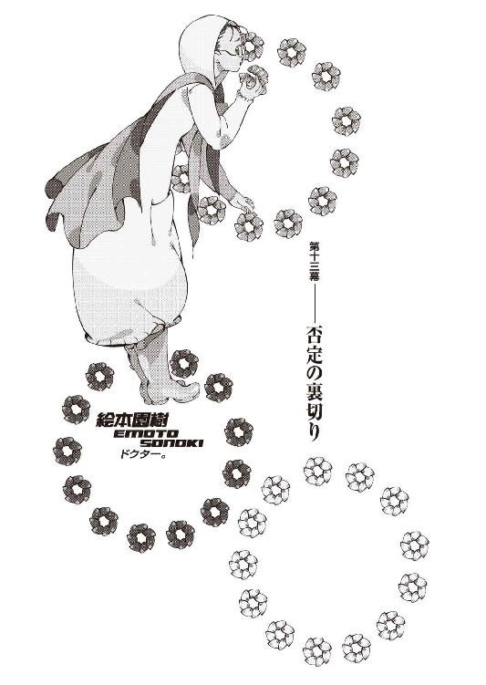
０
見えないものは、そこにはない。
１
人が少ない場所がいい。
性格から考えて、きっと彼女は、人目の多い場所には出てきてくれないだろう。それに、そうでなくとも、彼女はあまりに、目立ち過ぎる。性格のことをさておけば、彼女はかなり端麗な容姿をしているからだ。
だからといってまるっきりの無人というのもまた、よろしくない。
それではいざというときに危険だ。
危険は避けたい。
そこそこの数の人間がいて、尚且つ、辺りが広く見渡せるような、風通しのいい場所──故に、この場合に限っては、ホテルの部屋や、あるいは喫茶店のような密閉された屋内ではなく、リスクの度合いを考えれば、できれば屋外──
考えた末。
待ち合わせの場所に、ぼくは京都御苑を選んだ。
京都御所を中心においた国民公園。
十月もそろそろ半ばだから、紅葉の綺麗な季節とはいえ、平日ゆえに観光客もまばらだし、その上とにかくだだっぴろいし、相応しさでいえばここ以上の場所は、ぼくの知る限り、京都市内にはないだろう。すぐ隣に七々見の通う浪士社大学があるので、彼女と一緒に散歩したり、ベンチで並んで読書したりと、訪れる機会が少なくない、勝手知ったるとまでは言わずとも、ぼくにとってはそれなりに慣れ親しんだ場所でもある。
まあ、一口に御苑といっても広いので、具体的に、建礼門前の辺りを指定した。御苑の中はベンチだらけだから、話をできる場所には不自由しない。近くにある巨大な椋の木が目印になると、伝えておいた。
手ぶらでいくのもなんなので、アパートから直接行くのではなく、少しルートからはずれた場所にあるミスタードーナツでドーナツを十個買ってから（セール期間中のため、税込み五百二十五円）、ぼくは京都御苑に到着した。
待ち合わせ時間、午後三時丁度の、十分前。
いい感じだ。
ちなみに、本日の移動はフィアットでなく徒歩。
人間、たまには歩かないといけない。
ひかりさんは──今日はついてきて、いない。
アパートで、《奴》の世話を、焼いている。
............。
ちょっと不愉快。
ぼくのメイドさんなのに。
いや、まあ、今から会う相手のことを考えたら、ひかりさんについてこられたら逆に、非常にやりにくかったところだし、何よりも《奴》を、目の届かない場所に置いておくほうが、よっぽど不安というものだ。
さて、と。
中立売御門から御苑に入り、直進。
御所にぶつかって、右に折れて、
椋の木が見えてきて、
通り過ぎ、
次の分かれ道を左で、建礼門──
「..................」
レインコート。
生地が分厚く丈の長い、白色のレインコートをずっぽりと着て、前のチャックもボタンも完膚なきまでに、何かを拒否するように頑なに閉じて、とどめにこれでどうだといわんばかりにフードまで深く頭にかぶり、直立して俯いている、女性の姿があった。
念のためにいえば雨など降っていない。
快晴だ。
............。
しかも、彼女、長靴だ......。
黄色い長靴だ......。
意味がわからない。
ていうか何もわからない。
建礼門の周囲には彼女以外の人影はなかった。
いつも以上に人気がなかった。
......だから、無人も困るんだってば。
ぼくはもうこのまま帰ってしまおうかと思ったけれど、しかしさすがにそういうわけにもいかないので、覚悟を決めて、なるだけ気さくに、全然気にしない風を装って、
「あ、絵本さーん。早いですねー」
小走りに駆け寄りながら、明るく声をかけた。
俯いていた顔を──
絵本園樹さんは、ゆっくりと、あげる。
「う......う、うう、うううう」
「............」
いきなり泣いていた。
べしゃり、と、膝から崩れ落ち、蹲る彼女。
「も、もう来ないかと、思って、あ、あたし......ずっと、ずっと不安で......、で、でも、もう少ししたらくるかもって思うと帰れなくて、こ、孤独で、寂しくて、死んじゃいそうで、こ、このままずっと、あたしは一人で、ど、どうして来てくれないのかって、う、う......酷い、酷いよ、こんなに待たせるなんて......」
「え......あ、あの、だってまだ十分前──」
「あたしは二時には来てたもん......お、遅れないようにしようと思って、待たせちゃ悪いと思って、そ、それなのに、そこまで気を尽くしたのに、き、きみはあたしを一時間も待たせて、ごめんの一言もないなんて......ひ、酷い、あ、あたしなんて待たせて当然と思ってるのね、あ、あたしがどんな思いをしてたかなんて全然何とも思っていないのね、あ、あたしがどんな気持ちで、この一時間を過ごしたと思ってるの、それをちっとも考慮しないで、う、ううう、う、うう」
「............」
想像以上に厄介な人格だった。
ひょっとしたら、澄百合学園という限定された特殊な状況下においてこそ、絵本さんのキャラクターがぼくらの眼には奇異に映っただけなのかもしれないと、ある種期待というか希望を持っていたのだが、そんなものはかくも儚く完膚なきまでに打ち砕かれてしまった。
「こ、ここに来るのに、あ、あたしがここに来るのに、どれだけ勇気がいると思ってるのよ」
「ああ......それは、まあ、その通りですけど」
「......あ。それ、ひょっとしてミスタードーナツ？」地面に頭をこすりつけるようにして泣きじゃくっていた絵本さん、不意に顔を起こす。「きみの持ってる、その袋」
「え？ ああ、はい」
「......フレンチクルーラー、ある？」
「全部フレンチクルーラーです」
「何個？」
「十個」
「............」
絵本さんが立ち上がって、ぼくに手を差し出した。握手を求めているわけではないだろうと判断し、ぼくは、何となく、ミスタードーナツの袋を手渡した。
絵本さんは中身を確認する。
それから、ぎゅ、と抱きしめるようにした。
「えへ、幸せ」
「............」
やばい......
本当にやばい......
この人のことすげえ好きかもしれない......。
ことごとくツボを押さえてくれる。
「この世にあるもので神様がお創りになったのは、整数とフレンチクルーラーだけだよ」
「はあ......」
ぼくも嫌いじゃないけど、でもさすがにそこまで思ったことはないな......。
うーむ。
「えへへ......ん。飲み物、ないね」
「あ......すみません。うっかりしてました。なんだったら、なんかその辺で買ってきましょうか？」
「ううん。大丈夫。それより早く食べたい」
「そうですか。じゃあ、その辺のベンチで」
「うん」
フレンチクルーラーの偉大な力によって、絵本さんとの会話が奇跡的につつがなく進行していた。まあ、その意味じゃあってわけではないけど、やっぱりドーナツはフレンチクルーラーに限る、か。
建礼門から最寄りのベンチに腰掛ける。
「もふもふ」
絵本さんは両手に一つずつフレンチクルーラーを持って、リスのように頰を膨らませていた。口の中に既に一個、含んでいるようだ。
うわー......、本当に幸せそう。
こんな幸せそうな人間の姿、ぼく初めて見た。
「そっか。なあんだ、きみはあたしにドーナツを食べさせてくれるために、こんなところに呼び出したんだね」
「そんなわけないでしょう」
「あ......ごめんなさい。あたし、すぐに調子に乗っちゃって、駄目だよね......本当に駄目だよね、あたし以上に駄目な人なんて、きっとどこにもいないんだよね......」
しょぼん、と落ち込む絵本さん。
うーむ......。
ドーナツ、もっと買ってくればよかったな......。
「..................」
十月──十一日。
火曜日。
月曜日の、次の日。
《ドクター》、絵本園樹を、呼び出した。
保険と防御は完了したので、次は攻撃だった。
呼び出しの電話をかけたのは、昨日、十月十日──退院し、小唄さんと玖渚に会って、アパートに帰った、その後のことだ。まあ、多少の予定外はあったものの──それは決してぼくにとって都合の悪いことじゃあなかったので、戦略自体を変更する必要はなかった。
むしろ迅速さこそが、大切。
躊躇してはいけない。
迷っちゃ駄目だ。
「でもさ......《いーちゃん》」
「なんですか？」
「どうしれあたしの電話番号、わかったの？」
「............」
地味に嚙むなよ。
突っ込むのも面倒臭い。
「あ、いえ......わかったんですか」
どうも絵本さんは、会話している相手が沈黙すると気分を悪くしたと思う傾向があるらしく、言葉を丁寧に言い直してきた。このままこじれても面倒なので、ぼくはその辺の事情を簡潔に、説明しておくことにした。
「あの日......ね」
「あの日？」
「澄百合学園で、あなた達、《十三階段》と狐さんと、ぼく達が衝突したあの日──あの第二体育館から、狐さんが、あなたのことを携帯電話で呼び出したでしょう？」
「えーっと。ああ、うん。そういえば、そんなことあったかな」
「まあ、狐さんの電話番号は、かけていた側だからわからないんですけれど──狐さんの指の動きから、かけた番号はわかったんで」
「......それを、記憶してたの？」
「ええ。端的にいうと」
「すごい記憶力だね......」
「それほどでもありませんよ。これくらい、なんてこともありません。結局は集中力と洞察力の問題でしかありませんから。ぼくからしてみれば当然です。円周率ってわけじゃない、たかだか十一桁の数字でしょう。暗記できない人の方が珍しいんじゃないですか？」
実際はそんなもの、霞がかかったようにうろ覚えの記憶だったので、うすらぼんやりとした十一桁の並びを、何度も何度も何度も繰り返し、数字を一つ変え二つ変え、順列組み合わせ、数十回数百回にわたる地道なチャレンジの末、絵本さんの携帯電話には繫がったのだが、そんな苦労を説いたところで絵本さんは褒めてはくれないだろうから、それは秘密だ。
「それで......じゃあ、《いーちゃん》。むしろ、こっから先の方が大事なところなんだけど......えっと、どうしてあたしを、呼び出したの？」
「ぼくからしてみれば──あなたがこうもあっさり応じてくれたことが、逆に若干意外ではありますけれどね。一応確認しておきますけれど、狐さんには──秘密にしていただけてますか？」
「う、うん」頷く絵本さん。「ていうか、狐さん、今、あたしなんかに構ってる場合じゃないから──」
「......それはそうでしょうね」
「？」
「いえ──こっちの話です」
ぼくは軽く首を振った。
それとなく、周囲を窺う。
ぼくの感知しうる範囲内では──監視はない。
絵本さんは、本当に一人で来ている。
それに、そういうところで噓がつける人だとは思えない、ここは信用していいだろう。
「では、単刀直入に用件を言います」
「う、うん......怖いけど、聞きます」
「......絵本園樹さん」
ぼくは言った。
迷いなく。
「狐さんを裏切って、ぼくに協力してください」
「............」
絵本さんは──持っていたフレンチクルーラーを、ぽろりと、落とした。その反応は予想していたので、ぼくはそれが、地面に着く前に受け止めて──
ぽかんと開いた彼女の口に、押し込んだ。
「あなたの力が──必要だ」
「......な、何を言ってるか......分かってるの。ば、ばっかじゃないの。あ、あたし──《十三階段》なんだよ」
「当然、承知しています。あなたが初期メンバーの一人であることも、勿論。ここ数ヵ月の間に集められた新造の《階段》じゃない、出夢くんや理澄ちゃんと同じく、狐さんとの付き合いが長い《階段》であることも重々承知している──嫌ってほど。だからこそ」
ぼくは彼女の右手を、両手で握る。
「だからこそ、あなたの力が必要なんです」
「......う、ううー」
絵本さんは、ぶんぶんと腕を振って、ぼくから逃れようとした。口に咥えたままのフレンチクルーラーがなんだかやたらと間抜けだったが、必死な表情だった。
早くも涙ぐんで──いる。
「な、なんで、あ、あたし、あたしに、そういう、そんなことを、要求するの、よおー。ど、どうして、どうして、あ、あたしばっかり、こんな、変な立場に......」
「変な立場って......」
「あ、あたしだけ、あたしだけ、どうして、こんなこと......ど、どうして、あたしなの、よおー......あ、あたしなんかより、もっと他に、いるじゃない、《階段》なら、まだまだいっぱい、他にもたくさん、いるじゃ──」
「あなたが──あの日、あの場所で、出夢くんの死を、悲しんでいたからです」
「............」
とても──悲しそうだった。
絵本さんは、とても、悲しそうだった。
涙もなく、
言葉もなく、
出夢くんの死を、悲しんでいた。
「──だったらぼくと同じだ」
「......同じ」
そう──
同じなのだ。
「絵本さん。ぼくはね──狐さんと対決するにあたって、まずは《十三階段》を破壊して、破綻させてしまおうと思っている」
絵本さんの表情を窺いながら、ぼくは続ける。
フードと髪とで、至極窺いにくいが。
とにかく──続ける。
戯言遣いは、続ける。
「狐さんは、かつて《十三階段》のことを、《手足》と言った──自分は因果から追放を受けた身であるから、代わりに世界や物語にかかわってくれる、手となり足となり動いてくれる、そんな存在が必要不可欠だと──」
「..................」
「ならばぼくは、まずその手足をもぐ」
「手足──を」
「その意味じゃあ、あなただけじゃない──ぼくは《十三階段》の全員に裏切ってもらいたい。裏切ってもらおうと、思っている」
ぼくは言った。
「勿論、それは理想的には──という話ですけれど。中国の古い兵法の応用、というには不器用な感が否めませんが、ぼくにしてみればこれ以上の策は思いつかない。残念ながら今のぼくに、狐さんを潰すだけの力はない。ぼくは狐さんが怖くて怖くて仕方が無いから。でも、この間──澄百合学園であなたを含め、《十三階段》と接触──衝突した際、気付きました。出夢くんや理澄ちゃん、殺戮奇術の匂宮兄妹、あの二人を──否、あの二つの人格を例外とおくなら、《十三階段》の一段一段に限れば、それぞれ別個に考えれば、どうにかならなくも──ない」
「............」
「各個撃破──という奴ですよ。奇野さんの《病毒》も、そのタネが割れれば、対処の方法などいくらでもあるし──単純な暴力ということなら、澪標姉妹は確かに脅威ではあるけれど、結果から見るならば出夢くんほどではないと言える。所詮、寄せ集めの、言ってしまえば烏合の衆だ。狐さんには、彼らを統率しようという気なんて、最初からないようにすら思えます。結局、《十三階段》で警戒すべきなのは、出夢くんを殺した《奴》、橙なる種を除けば──初期のメンバーである、八月の時点で揃っていた六人だけ」
最初の──《六段》。
架城明楽。
一里塚木の実。
匂宮出夢。
匂宮理澄。
そして──絵本園樹と、宴九段。
濡衣さんの言葉に従うわけでは全然ないが──しかし、《目的のために手段を選ばない》という《闇口》の濡衣さんの言うことは、確かに、正鵠を射ていた。
十三階段を崩すなら──まず、宴九段か──
絵本園樹。
架空兵器と、ドクター。
この二人が、キーパーソンだ。
「お願いします、絵本さん。ぼくの──力になってください」
「あ......あたしが、狐さんを、裏切ったりすると、思う？ あ、たしに、そんな卑怯な真似が、できると思う？」
「ぼくはそれを望んでいますが......正直、わかりません。筋違いの要求であるのかもしれません。けれどぼくは──そうでなくとも、出夢くんの死を悲しんでくれた、あなたのことを......どんな形であれ、敵に回したくない」
「......別に、出夢くんだったからじゃないよ」絵本さんは言う。「あたし──人が死んだら、それが誰だって悲しいもん」
「............」
それは──
みんな死んじゃえばいい、世界なんて終わってしまえばいいと言った──人間の言葉じゃ、ない。
でも。
わかっていた。
わかっていたことだ。
絵本さんが、そういう人間だと、いうことは。
でないと──
この性格で、医者になんてなるものか。
この人は──絵本園樹というこの人は、単純に。
誰にも傷ついて欲しくないだけなのだ。
行き過ぎているところはあるが──
行き着いてしまっては、いない。
それは、それだけは──間違いがない。
それだけは、間違っていない。
「正直言って──ぼくにしてみれば、あなたを、絵本園樹という《階段》、絵本園樹という《十三階段》を崩すことは......そんなに、難しくないんです。こんな、ばかげたぼくの申し出に悩んでしまう、それ以前にこんなばかげたぼくの呼び出しに応じてしまう、そんなあなたを、崩壊させることは......きっと、ぼくにとって、それほど難しくない」
「......そ、そんな......お、脅すつもり？ あ、あたし、脅しになんて──」
「誤解しないでください──難しくなくても、きっと、ぼくにはそれができない。ぼくにはあなたを憎めないし、あなたを敵だとは、思えない。絵本さん。あなたはね──絵本さん。きっと、優しいといえるような性格の人じゃないとは思う。優しいというには、あまりにも弱過ぎる性格だと、思う。でも──少なくとも、あなたは、優れている」
「............」
優しくなくとも──優れている。
「あなたは随分と傷つきやすい人だけれど──きっとあなたは、それだからこそ、誰も傷つけたことがない」
「そ、それは、あたしが、単に、医者だから」
「だからですよ」
「あ、あたしは、あたしは、身体の傷を癒すことはできても、精神の傷を癒すことはできても──でも、本当の傷を癒すことなんて、できないから、あたしは、誰の役にも、立てない──」
「ぼくの役に立って欲しいと言っています」
ぼくは、彼女の眼を見ていう。
人と眼をあわすのは──本当は好きじゃない。
見透かされる、感じがするから。
絵本さんもきっとそうなのだろう──
ぼくから、眼を逸らそうとする。
でも──
ぼくは彼女の眼を見る。
「怪我人がたくさん出るというのが狐さんのそばにいる理由だというのなら──ぼくのそばにいたってそれは同じです。ぼくのそばで傷つく人を──あなたに癒して欲しい。ぼくの肉体の治療権を、全てあなたに譲渡しましょう」
「......で、でも」
「ぼくの味方になってください、絵本さん」
「でも──あたしは」彼女は、首を振りながら、じわっと、涙を、ぼろぼろと零す。「あたしは、そんなこと言われても、どうしていいのか、全然わかんない──」
「............」
「そ、そんな言い方しないで......あたしに、質問しないでよ。あ、あたしに意見を訊かないで。き、強制──」
絵本さんは、縋るように、ぼくを見た。
涙混じりの瞳で、ぼくを見た。
ぼくを見た。
「強制──してよ。強制してください。強制してくれれば──あたし、従うから。お、脅せばいいのよ。はっきり、あたしのことを、脅せばいい。ちゃんと脅してよ、中途半端でやめたりしないで。自分の味方になれって、あたしに強いてよ。あ、あたしに、もっと強く、逆らえないように、強制してよ。狐さんみたいに。狐さんみたいに、あたしが、あなたに従うことが、当然だって──そんな風に言ってよ。そうすれば、あたし──」
「......狐さんに強制されてだろうがなんだろうが、今の立場は、昔のあなたが、自分で選び取った立場です。それを無理矢理奪取するつもりは──ぼくにはない」
狐面の男の真似をする気も──
ぼくにはない。
西東天や哀川潤のような、絶対感などない。
ぼくにはそんなものはない。
ぼくにできるのは、頭を下げることだけだ。
何の真似だと問われれば──こう答えよう。
これはぼくの、意志だと。
「あなたが決めてください。ぼくにはあなたの責任までは負えない。自分の責任を終えるだけで精一杯です。ぼくがそうしたよう、あなたが、あなたの条件を出してください。ぼくは狐さんのように、手足なんて欲していない──手足なんてのは、自分の身体についてる、この細い奴で十分です。ぼくが今、切実に欲しているのは、共に戦ってくれる、友達です」
「ともだち......」
「絵本さん。ぼくと──友達になってください」
「..................」
絵本さんは──黙った。
ぼくも、黙る。
もう、ぼくに言えることは、ここまでだ。
これ以上は──どう言っても、ただの強制だ。
彼女にとっては、それこそ脅迫にしかなるまい。
我ながら相変わらず冴えないやり方だと思う。
これが正しいのかどうかすら、わからない。
不器用で、要領が悪い。
絵本さんに無茶を要求しているとも思う。
でも。
それでも、ぼくは──
最強になれないぼくは、
最悪よりは、最弱を選びたい。
「......フレンチクルーラー」
「え......？」
「フレンチクルーラー、百個」
「............」
「それで──きみに、協力してあげる」
絵本さんは、言った。
ぼくの手を、握り返して。
ちゃんと、僕の眼を見て。
「狐さんを裏切って──きみの友達になる」
「......いいんですか？」
「うん。だって、あたし、本当は──」
絵本さんは。
多分生まれて初めて、本音を言った。
「──世界に、終わって欲しくなんかない」
２
まずは絵本さんに、ぼくは、今ぼくが知っているだけの全ての情報を公開することにした。絵本さんに正確な状況を理解しておいてもらうことは第一に必要だったし、第二に、冷静な計算として、ぼくから絵本さんに対する、信頼を示したかった。
それに、もう一つ、第三に──こちらの情報が、どれだけ狐面の男に通じてしまっているのかを、確認しておきたかった。無論、絵本さんがどこまで狐面の男の側の情報に精通しているのかは明らかではないけれど、本当に全てが筒抜けになっているのか、それとも、狐面の男にとって盲点が、どこかにあるのか──それを知っておくことは、必要だった。かなり微に入り細を穿ち説明したので、話を終える頃には、もう午後五時を過ぎていた。
濡衣さんから電話があったことも話して、最後にぼくは──
真心のことも、話した。
想影真心、橙なる種が、今──
ぼくのアパートにいることを。
迷いなく。
「ふうん......」
絵本さんは──こんな性格でもやっぱり頭の回りはいい方のようで、一度きりの説明で全てを理解できたらしく、静かに頷く。
「成程......そうだよね、そりゃそうだよね──考えてみれば当たり前か、うん、そっか......だから、逃げたんだ......あの子」
「まだ、あいつから詳しい経緯は聞いてないんですよ──なんか、疲れてるみたいで」
「疲れてる──でしょうね、そりゃ。そりゃ、そうだ」意味ありげに、絵本さんはそう言う。「......あのね、《いーちゃん》」
「あ......できれば、それ、やめてもらえません？ その呼ばれ方──実を言うと、あんまり好きじゃないんです」
「でも──」
「元々、ぼくの妹がぼくのことをそう呼んでたのを、玖渚が真似をして──それを、更に真心が真似をしたってだけなんですよ。まあ......真似させた、といった方が正確かもしれないですけれど」
「ふうん。じゃあ、なんて呼べば──いいかな？」
「好きなように──えっと、じゃあ......」
いっくん。
いの字。
いー兄。
いーの。
いのすけ。
いーいー。
いっきー。
......なんか、どれも嫌だぞ。
冷静に考えてみたらどれも酷い愛称だな......。
「......いっくん、で」
「ん。わかった。じゃあ......いっくん」
「はい」
「いっくん」
「......はい」
「いっくん」
「......はい？」
「え、えへへ。ニックネームなんて、初めて」
「............」
友人知人......いなさそうだもんなあ。
呼ばれたことは勿論、呼んだこともないか。
無意味に心が痛む話だった。
「あのね──狐さん、今大変なの。さっきも言ったけど、さ......その、真心ちゃんが、逃げ出しちゃったから」
「............」
「きみのところにいたんだね......」
「まあ──昨日の今日のこととは言え、それくらい、狐さんも、もう勘付いているでしょうけれど......でも、ことをあの、想影真心に限っちゃあ──如何に狐さんと言えど、どうすることもできないでしょうからね」
予定外のこととは言え──
ぼくにとって、都合が悪くない。
むしろ、好都合だった。
こればっかりは、ご都合主義を認めていい。
「狐さんは......」と、絵本さん。「今、真心ちゃんが出した被害の整理をするだけで、手一杯だよ。こんなこと言いたくないけど──狐さん、ちょっとばかし、見込みが甘かったよ。医者のあたしに言わせればだけど」
「真心の──ことですか？」
「うん」
絵本さんは言う。
「あの子──滅茶苦茶だもん」
「ええ......哀川潤ですら、一撃の下に倒すくらいに──ね。でも──狐さんは狐さんなりに、対策を打っていたんでしょう？」
そう言っていた。
十年前の、轍は踏まない、と。
そのための──《十三階段》でもあった。
右下るれろ。
時宮時刻。
奇野頼知。
その──三人。
役割は、想影真心の制御。
「......あたしには、わかってた。ちゃんと──狐さんにも、忠告したよ。あの子に対して、そんなのじゃ──とてもじゃないけど、足りないって」
「......狐さんは、なんて？」
「別に、何も。ただ、そうか、とだけ」
「じゃあ......見込みが甘かったというよりは、予想していた事態......なのかも、しれませんね。できる限りの対策は打った、全力は尽くした──あとはなるようになるだけ、と」
それにしたって──
こればっかりは、同じじゃない。
なるようになった必然といっても、こればかりは、どちらでも、どう転んでも、同じじゃあ──ない。
狐面の男にしてみれば──賭けだ。
ギャンブルだったのだ。
そうだね、と絵本さんは言う。
「だ、だから......えっと、その......狐さんは、ギャンブルに──失敗したんだと、思う。そういう言い方をするなら、そうだね、今は、その埋め合わせで手一杯で、うん、きみに手を出している場合じゃない。本当は、その、十月の半ば辺りをキリに、次のちょっかいをかけるつもりだったらしいけど──そうは行かないだろうね、こうなると」
「............」
「予定を、全部変更しなくちゃ──いけないから」
「真心は──狐さんにとって、狐さんの《計画》というか......ぼくとの対決というか、《世界の終わり》に対して──不可欠な存在、不可欠な要素だったのでしょうね」
ぼくとの──繫がり。
そして恐らく、それ以上の意味を持つ。
「......もっとも、こちらにしたって、それについて大きなことは言えない状況にありますよ。狐さんがなんといおうと、ぼくらにしてみればかけがえのない存在であるところの哀川さんが、狐さんの手の中にありますからね」
「うん......そうだね」
「切り札が、あっちとこっちを行ったり来たりか......まるでカードゲームの鬼抜きですね、やっていられない。ジョーカーの数が多過ぎる」
「............」
「ちなみに──哀川さんは、どうしてますか？」
「あたしが──治療したよ」と、絵本さん。「幸い、というか......怪我自体は、大したことはなかったんだ......頭の怪我だったけど、うん、さすがに頑丈だね、あの人」
「片目が潰れたとか、狐さんは言ってましたけど」
「ううん。そんなことなかったよ」
「............」
あのハッタリ野郎。
わかんないことを断言するなよな。
「じゃあ──無事、なんですね」
「うん。でも──どこにいるのかは、わかんない。その後、狐さんがどっかつれてっちゃったから。場所は、木の実ちゃんくらいしか知らないんじゃないのかな」
「そうですか......」
本当に......何のためなのだろう。
わからない。
あの人、哀川さんをどうするつもりなのだろう。
「まあ......元気だってことがわかっただけでも、ありがたい話と、しておきましょう。生きてさえいりゃ、その内会えるでしょうから」
「前向きだね」
「無理矢理ですよ。こんな言葉は」ぼくは肩を竦める。「話を戻しますけれど──具体的に、真心があなた達の監視下を離れるにあたって、あなた達の管理下から抜け出すにあたって、どれくらいの被害が出たんですか？」
狐面の男が──手一杯になるほどの被害。
果たして、どの程度のものなのか。
絵本さんは言った。
「奇野くんが死んだ」
「............」
「真心ちゃんの管理は、えっと、もう知ってるんだったよね、奇野くんと、るれろさんと、時宮さんの仕事だったんだけど──奇野くんが殺されて、るれろさんが大怪我──無事に済んだのは、たまたま席を外していた、時宮さんだけだった」
奇野頼知──
死んだか。
妙に──あっけない。
悲しくは、ない。
悲しみがあるわけもない。
奇野さんは、ただの敵だ。
みいこさんを巻き込んだ。
ただの敵だ。
親しみはない。
憎しみすらない。
けれど──なんだか、切ない。
虚しさだけが、胸にある。
泥のように、胸にたまる。
「その話だと......時宮時刻が席を外したときを狙って、真心は動いた──と、どうやらそういうことのようですね」
「うん......真心ちゃんに対し、一番強い支配力を持っていたのが、時宮さんだったから、ね。......でも、それでも、今までだって......時宮さんのいない、隙は──あったはずなんだけど」
「......それは多分、恐らくですけど──あの日、学園で、あの体育館で、真心が、ぼくを見たからでしょうね」
あいつは確かに──ぼくを見た。
ぼくを認識した。
《いーちゃん》と、言った。
「だから──あなた達から、逃げたんでしょう」
そう──奇しくも、狐面の男が言った通り。
るれろさんは──少し、遅かったのだ。
狐面の男がるれろさんにどのような指示を出していたのかは知る由もないが、しかし確かに、るれろさんがあと一秒でも早くあの体育館に来て、真心の動きを封じていれば──
真心はぼくを視認できなかった。
ぼくが、真心を捉えるだけで、終わっていた。
恐らくそれが──
狐面の男の、思惑通りだったのだ。
あの人は、あんなことを言いながら、本当はぼくと真心を、再会させるつもりなど──きっと、全くなかった。
あれは、あくまで披露目──だったのだ。
「るれろさん......ただでさえ大怪我してる風だったんですけれど──大丈夫なんですか？」
「うーん......」
腕を組んで悩む絵本さん。
あまり大丈夫でないらしい。
「でも、あの人、怪我ばっかりする人だから、きっと、あのくらいなら、大丈夫だと思う。完全には元通りにはならないだろうけど、るれろさんなら、そんなの気にしないだろうし」
「怪我ばっかりする人、ですか......なんか親近感が湧きますね」
「あの人、好き」
「そうですか......」
怪我ばっかりするからだろうか。
あまり歓迎できない好かれ方だよな......。
「真心ちゃんから、話はどれくらい聞いてる？」
「いえ......さっきも言いましたけど、疲れてるみたいなんで、再会の挨拶もそこそこですよ」
「そ......あのね、いっくん」
絵本さんは言う。
「奇野くんとるれろさんと時宮さんはね──それぞれがそれぞれの能力をもってして、真心ちゃんを封じていたんだ。予想はついていると思うけど──」
「ええ。大体のところは」
「うん。まず──奇野くんは、真心ちゃんの体力を。るれろさんは、真心ちゃんの肉体を。時宮さんは、真心ちゃんの意識を──それぞれに、支配していたんだよ」
「............」
体力と──
肉体と──
意識。
「真心ちゃんは、本来の力の半分も発揮できない状態にあったんだよ。それでも、時宮さんが、ちょっと距離をおいた程度で──十分だったんだね」
「.........一応、ですけれど......他にも原因はあると思いますね。濡衣さんが《十三階段》を抜けたことと──澪標姉妹が、独自に動いていた、《十三階段》を抜けてこそいないものの、狐さんの指揮下を離れていたこと。これは結構、重要なことですよ」
「......というと？」
「わかんないですかね──そうなると、《十三階段》の中に、武闘派が一人もいなくなっちゃうじゃないですか。真心の暴走を──止められる人が、一人もいなかったんだと、思います」
「あ......そっか」
絵本さんは納得した風に頷く。
「そうだね。濡衣さんか──深空ちゃんか高海ちゃん、この三人の内誰かがいれば、いくらなんでも押さえ切れなかったところで、逃げ出すところまでは──きっと、無理だったね」
「狐さんにしてみれば、最悪についていない──多分、狐さんにしてみれば、最悪のケースですよ、これは。針の穴を百回連続で縫うような不運です。ぼくもかなり運の悪い方ですけれど──狐さんも、相当普段の行いが悪いようですね」
十月は嫌いだ──と言っていた。
成程、よくわかる。
きっと十月は、狐面の男にとって──
鬼門なのだろう。
それこそ、運命じみた物言いになるが。
「えっと......真心も、一応、候補生扱いとはいえ、《十三階段》の数の内の一人だったから──奇野さんとるれろさんがリタイア、ということで......」
「あ、ううん。るれろさんは、多分すぐに復帰すると思う。リタイア、再起不能ってほどじゃない。酷い怪我だけど......でも、意志の強い人だから」
「そうですか。じゃあ、そうなると、真心と奇野さんが、《十三階段》から抜けて──」
ぼくは指折り、計算する。
絵本園樹も、当然マイナスし──
《十三階段》の残りは、七人。
......半分──か。
それでも、
七人というのは決して少ない数じゃない。
「あとは──一里塚木の実、宴九段、古槍頭巾、時宮時刻、右下るれろに──澪標深空、澪標高海、ですか。さて──どうしたものか」
「こ、こんなこと、あたしが言っていいのかどうかわかんないけど──今は......確かに、チャンスだよ。真心ちゃんのことで、狐さんは忙しいから、むしろ、チャンスは今しかない──これ以上のチャンスはもう有り得ない、と言ってもいいかも」
「わかってますけどね。しかし、絵本さんは、こうしてぼくに協力してくれることになりましたけど──でも、残りの七人は......そうは簡単にはいかないでしょうから、ここから先は......どうにも、複雑なところです」
「............」
「面識のあった、言葉を交わした相手である絵本さんですら、味方になってくれるかどうか、ぼくには確信が持てていませんでした。まして──残りの七人は、正直言って、さっぱりわからない」
澪標姉妹は、ぼくを恨んでいるというし。
るれろさんだけは、面識があるものの──
他の四人は、ぼくにとって全くの未知だ。
「木の実ちゃんは、特に難しいかもね──狐さんに、ものすごく、洒落にならないくらい心酔してるから。ベタ惚れ、なんだよ。きっと、一番難しいのが彼女だね。彼女、狐さんのためになら、死ぬことも厭わない──と、思う」
「でも──今はまず、《手足》。《十三階段》、手足を──封じたい。それに、できれば──」
「できれば？」
「いや、できればっていうか......まずは、ぼく、漠然とですけれど──たとえ絵本さんとの交渉が不発に終わっていたとしても、別のルートでもってして、奇野さんとるれろさん、それに時宮時刻の三人には、その三人にだけは絶対に接触しなくてはならないと思っていました。少なくとも、その三人にだけは会わずに済ませるわけにはいかないでしょう。その三人が真心に制約を加えていることは想像がつきましたから──裏切ってはくれないまでも、最低限真心から、その制約を解いてもらわなくてはと思っていたんです」
「......友達思いなんだね」
「違いますよ。それは全然違います。でも、あいつが、自分の意志の外で、《十三階段》に《拘束》されているというのなら──その呪縛からは、解き放ってやりたかったんです」
だって、それじゃあ──
昔と何も変わらない。
あいつが、ぼくの知る真心だったところで、
違ったところで──
それだけは。
「まあ、でも──ぼくが何かするまでもなく、あいつ、自力で脱出してきちゃったわけですけどね」
「......そうは言っても、ね。逃げ出しはできても、でも、呪縛が解けたわけじゃないし──鎖が外れたわけでも、枷がなくなったわけでも、ないんだよ。念のために言っておくとだけど......奇野くんの《病毒》は本人が死んでも関係なく作用し続けるし──るれろさんの《人形士》としての仕掛けも、時宮さんの《操想術》も、基本的には外れない──きみが考えた通り......、っていうか、あの、萌太くんっていう子が考えた通り、確かにあの日、あの学園にるれろさんと時宮さんがいたのは、いざってときに真心ちゃんを制御するためだったけど──でもそれは、そばにいなくちゃ絶対駄目ってことじゃ、ないの。近くにいれば、鎖を締め上げることができるけど──離れていても鎖自体は残ってる。だから、本当に制約を解きたいのなら、やっぱり、るれろさんと時宮さん、その二人に対するアプローチは不可欠だと思うよ」
「ふむ......」
「るれろさんや時宮さんの鎖については、あたしも専門外だからよくわからないっていうのが本音なんだけど......奇野くんの《病毒》は、あたしが......その、えっと、あの、あたしが、何とかできると思うけど」
「......でしょうね。お願いできますか？」
「いいけど......でもさ、いっくん」絵本さんは、不安そうに言った。「その呪縛を──三人の呪縛を解いて、それでも真心ちゃんを制御できる自信が......きみにはあるの？」
「制御なんて......」
「狐さんだって、好きで真心ちゃんを、そんな鎖で縛りつけていたわけじゃない......んだ、よ。そういう人じゃないのは、わかるでしょ？ 力で他人を思い通りにしようって人じゃ、ないの......。あの子の力が、あまりに膨大で──規格外だったから、止むを得ず──だったの」
「......そもそも、狐さん、どこから真心を連れてきたんですか？ ぼくの認識では、真心はずっと前に、死んだはず──だったんですけど。確か狐さんは、ＥＲ３には古い知り合いがいるから──とか、言ってましたけど」
「うん。狐さんの恩師とか、遠い親戚とかが、ＥＲ３システムに所属していて......とか、そのツテだとか言ってたけど、でも、正直、よくわかんない。真心ちゃんについては、元々、狐さんが作った部署であるＭＳ‐２の、《作品》だとしか、言ってなくて......、ひょっとしたら、奇野くんやるれろさんや時宮さんは、もう少し話を聞いていたかもしれないけれど、《十三階段》内でも、真心ちゃんについては緘口令が敷かれてたからね。絶対に喋っちゃ駄目だって」
「ええ──そりゃそうでしょうね」
狐面の男は、ぼくに対して真心のことを伏せておきたかったようだから──緘口令は当然だ。奇野さん辺りがうっかり口を滑らせてたら、狐面の男の企みは、台無しになってしまうからな。
まあ──
知ってても、どうにもできなかったけど。
その時点では。
「あ、あたしも、学園で、いっくんと話したとき、真心ちゃんのこと、知ってたんだけど、言えなくて......ごめんね」
「いいですよ、そんなのは当然です──気に病むようなことじゃない。しかし、となると......やっぱ、真心の話を聞いてみないと、話にならないみたいですね。あいつは当事者なんだから──もっと何か、知っていることでしょう」
「だね」
「これは、単なる興味ですけど──真心。あいつ、あなた達の前では──どんな性格でした？」
「......狐さんとあの三人が、がっちりガードしてたから、あんまり、ちゃんとは話せなかったけど......」絵本さんは、少し、言葉を選ぶようにした。「......いい子だったよ」
「............」
「いい子だったと、思う」
「......そうですか」
「嫌いには──なれない、と、思ったな」
「でしょうね」
ぼくは──頷いた。
「ぼくの知る真心も──そんな奴です。憎たらしいのに憎々しいのに、どうにもなんだか、憎めない奴で......ね」
「......そっか」
「だけど──出夢くんを、殺した」
何の容赦もなく──殺した。
否、出夢くんだけじゃない。
萌太くんだって崩子ちゃんだって哀川さんだって──あの場で殺されていても、何の不思議もなかった。三人が死ななかったのは、ただ単に、運がよかっただけだ。
「あんな恐るべき戦闘能力の持ち主じゃなかったし──あんなことができる奴でも、あんなことをする奴でも、なかったんですけどね」
「............」
「最初は、狐さんが何かしたんだろうと思ったんですけど──それは、むしろ逆、ということでした。それを、あなたは好きこのんでのことじゃない、と言った。だったら、何かしたのは──」
「うん」
絵本さんは言った。
「ＥＲ３システムの──ＭＳ‐２だと、思うよ」
「......気に入らないな」
「ご、ごめんなさい！」
「いえ、絵本さんじゃなくて......」やっと普通に会話できるようになったと思ったけど、やっぱそんなに甘くないか。「ＥＲ３のことですよ。プログラム生だった頃から、いけ好かない連中ばかりだと思っていたけど......真心を、あんな化け物にしちまうなんて、滅茶苦茶だ」
「......怒ってるね、いっくん」
「少しだけ──ね」
心視先生に──連絡を取るか。
三好心視──
ＭＳ‐２における《橙なる種》の開発計画において、重要な役割を担っていた彼女。計画のかなり初期段階で、彼女はＥＲ３システムから引退し、プロジェクトメンバーから抜けてしまったけれど──そもそも、真心というネーミングは、彼女の心視という名から由来している。
何か知っているかもしれない。
今、先生が何をしているのか知らないけど......ＥＲ３システムに復帰したのだろうと、勝手に予想していたけれど......。
あまり、会いたい人じゃ、ないんだけど......。
真姫さんに次いで、苦手な人なのだ。
真姫さん亡き今、ダントツのナンバーワンか。
「......これから、あたし──どうしたらいい？ 真心ちゃんから、奇野くんの《病毒》を......すぐに、解いちゃう？」
「いえ......今の話を聞いてしまうと、軽はずみにやっていいことじゃないでしょうね、それも......。もう少し状況を見極めたい。真心の話も聞かなくちゃいけませんし......だから、絵本さんには他の仕事を頼みたいんです」
「何かな......あ、あたしにできることなら」
「だから──絵本さん。他の《十三階段》の人達と、ぼくを、会わせてください。《十三階段》をぼくに、紹介してください。できれば──一人ずつ」
「手足を──もぐ」
「ええ。ここから先は難しいところですけれど──ぼくとしては、やっぱり、《十三階段》全員と、平和的解決を迎えたい。裏切りっていうのは、ぼくはするのもされるのも、嫌いな行為ですから、強要はできないですけれど──でも、ぼくを狙ってるという澪標姉妹も、狐さんに心底心酔しているという一里塚木の実も──例外じゃなく、争いを、平和に、解決したい。そして──」
可能なら、狐さんとも──
とまでは、言わなかった。
そこまでは、ぼくでも、言えなかった。
「でも......あたし、あんまり、《十三階段》の、ここ最近入った人達とは、それほど親しくないし......全員っていうのは、無理かもしんない......」
「勿論、できる範囲でかまいません」
「......わかった」
絵本さんは、ベンチから立ち上がった。
レインコートの、フードを外す。
「じゃあ、まず──そうだね......真心ちゃんのこともあるし、うん、じゃあ、るれろさんに会わせたげる」
るれろさん。
右下──るれろ。
「できますか？ るれろさんは、ここ最近に入った人達──の、一人でしょう？」
「初期メンバーの残りは、九段さんと木の実ちゃんだけど、いきなり木の実ちゃんっていうのは大変だろうし、九段さんは今どこにいるかわからないから。それにるれろさん、怪我して、あたしが治療してるところだから大丈夫。今なら多分、るれろさんは、《人形士》としての力も使えないから、会いやすいと思う。早い方が──いいよね」
「今、るれろさんは入院中、ですか？」
「るれろさんは入院はできない人なの。だから、狐さんのコネで、とある場所に──いや、今はまだ、話さない方がいいかな。明日......時間、ある？」
「あります」
「でも、大学生なんでしょ？」
「しばらくは休学しますよ」
「......学校は真面目に行った方がいいよ」
なんか、普通のことを言われた。
とぼけた人だよなあ。
「じゃ......明日の朝九時、また、ここで、待ち合わせで──いいかな。なんとか、きみとるれろさんが、二人で会えるように──あたし、取り計らってみる。狐さんの邪魔が入ると、まずいしね」
「......ですね」
「真心ちゃんが逃げ出したことの始末に、狐さんはもうちょっと時間がかかるだろうから──そんな警戒しなくても、大丈夫だとは思うけどね」
「じゃあ──よろしくお願いします」
「うん。任せて......おいて」
ぼくも──ベンチから、立った。
明日......か。
じゃあ──明日までに、
やるべきことを、やらなければ。
真心。
想影──真心。
ぼくは......お前に。
ぼくはお前に、謝らなくてはならない。
３
アパートに帰った。
ひかりさんと真心がいた。
二人とも、メイド服だった。
「..................」
ここは何の天国だ？
ぼくはしばし、呆然となった。
「真心さんに合う服って、なかなかなくて......とはいえあんな、下着みたいなスパッツ姿のままというわけにもいきませんし、でもご主人様の服じゃ大き過ぎますし、それで、丈はわたしと同じくらいだったので」
「......私服の方を貸してあげてくださいよ」
「あら」
ひかりさんはにっこりと笑う。
「そういう手も、ありましたね」
「..................」
あんた、何で面白がってんだ。
今の状況、わかってんのか？
暢気に構えちゃってまあ。
......と。
そこで──
「いーちゃん！」
そこで、真心が──
真心が、ぼくとひかりさんとの間に、割って入ってきた。
「どうだ!? 俺様、この服、似合うか!?」
「......似合うよ」
似合ってどうするという話でもあるが。
とりあえずそう答えると、
「そうか！ 嬉しいぞ！」
と──
真心は、本当に嬉しそうに、はにかんだ。
自分の身体を、抱きしめるようにする。
「へへへっ！ いーちゃん、好きっ！」
「......ああ。ぼくもお前が大好きだよ、真心」ぼくは言った。「だからまあ、そんなやたらとかさばる服を着て狭い部屋の中をどたばた歩かないで、まずそこに座れ」
「んー。座ると皺になっちゃうぞ」
「ひかりさんみたいに、上手に折りたたんで座るんだよ」
「わかった。俺様、やってみる」
そう言って、真心は──
スカートを上手に捌いて、そつなく、座った。
──変わってない。
なんでも、すぐにできてしまうのは──
変わっていない。
まるで、変わってない。
できないことはなにもない──橙なる種。
「さて」
と、ぼくも座って、言葉を切る。
「昨日はお前、疲れてたのか、ほとんど寝っぱなしだったから、話できなかったけど......とりあえず、最初に──久し振り、真心」
「おう。久し振りだぞ」
「えっと......ひかりさん。お互いに、自己紹介は済んでますか？」
「ええ。こちら、想影真心さんです」
「知ってます」
「こちら、千賀ひかりさんだぞ」
「知ってるよ」
気ィ合ってんじゃねえよ。
どうして意気投合しているんだ。
ぼくの留守中に何があった。
真心は──昨日の様子から、そして、この前の様子から──少し心配していたのだけれど、随分と、元気そうだった。
活き活きと、潑剌としている。
まるで──
まるで、ＥＲ３時代と、同じようだ。
あのときに、戻ったようだった。
あの頃に、帰ったようだった。
昨日──退院して、小唄さんと会い、玖渚と会って、アパートに戻ってきて──部屋の中には、真心がいた。
正確にいうと、寝ていた。
ぐーすか、寝入っていた。
何度か眼を覚ましはしたものの、どうにも要領を得ず、結局、話らしい話はほとんどできなかったのだけれど──今日になって、それは多少、マシになっていた。だから絵本さんに会いに京都御苑まで出掛ける前、多少の挨拶くらいはできたのだけれど──こうして真心とちゃんと向かいあうのは、これが初めて、と言ってもいいかもしれない。
「よく寝た」
真心は伸びをしながらそう言った。
メイド服でそんなはしたない行為をするのはやめて欲しかったので注意しようかと思ったが、まあ、こらえておくことにした。
「ちょっと──久し振りに、すっきりしたかな。ずっと、拘束されっぱなしだったから」
「狐さんのところじゃ、あんまり──いい扱いは受けてなかったみたいだな、真心」
「そんなのはいつものことだから、気にならないけどな。そのお陰で、いーちゃんとも会えたわけなんだし」真心は、屈託のない笑顔で言う。「元々、俺様はそーいう条件で、あの狐野郎に引っ付いていたんだ」
「そういう条件？」
「いーちゃんに、会わせてくれるって」
「............」
......成程。
だから──か。
じゃあやっぱり、るれろさんは、あの体育館で──少し、遅かったのだ。
「それで──抜け出てきた、か」
奇野さんを殺して。
るれろさんに大怪我をさせて。
狐面の男の監視下から──抜け出た。
逃げ出した。
「おう。あんな奴らいつだって蹴散らせたけど、いーちゃんに会うまでは穏便にしておこうと、我慢していたんだぞ」
「......城咲のマンションの、地下駐車場で、一度、お前の姿は見たと思うけど」
「ん？ ......それは、知らない」
真心は不思議そうに口を尖らせる。
「寝てたんじゃないかな、そのときは」
「......あっそ」
寝てた──か。
仮面をつけていたからわからないが、そうなのかもしれない。まあ、狐面の男が、そんなヘマをするとも思えないし。
「へへっ。嬉しいな。いーちゃんにまた会えるなんて、俺様、夢にも思ってなかったぞ」
「ぼくも──夢にも思ってなかった」
けれど──
これが、現実だ。
ここにいる真心は、現実の存在だ。
見えるし聞こえるし触れる。
触ろうと思えば──触れる。
現実だ。
「真心......お前、あれから──どうしてたんだ。ぼくはてっきり──お前は、死んだものだと、思ってた」
「どうしてたもこうしてたもないかな。ずっと──あの続きが、続けられてた。俺様を《橙なる種》として、完成させようという、実験が」
「......じゃあ、完成......したのか」
恐るべき試みが。
神をも恐れぬ所業が。
人の領域にない行為が。
神への冒瀆とも言える、あの研究が。
悪魔との契約とも言える、あの実験が。
真心は、
「いいやわからん」
と言った。
「..................」
「露骨に拍子抜けという顔をされても、そんなのは俺様には判断しようがないことだしな、知らんもんは知らん、わからんもんはわからん。俺様が完成してんだか、それともまだ未完成なんだか、よくわからん内に──いつの間にか、俺様、あの狐野郎に、誘拐されていた」
「誘拐？」
「気がついたら、あいつと二人きりだったぞ」
「............」
それは多分──一里塚木の実の仕業だ。
彼女の《技》だ。
空間製作。
そうか......となると、本人や絵本さんはツテを使ってとか言ってたけれど、結局のところ、狐面の男が、かつての自分の古巣である、ＥＲ３システムから、《橙なる種》、想影真心を略奪したというのが──真相のようだ。
そこまでするか、西東天。
そこまでして──
ぼくと、敵対したかったのか。
......まあ、狐面の男にしてみれば、元々、ＭＳ‐２自体が彼の作ったものなのだし、だから真心に対して所有権を主張しても、不自然はないのだろうが。
しかし──それはやっぱり、変だ。
真心のことを──無視している。
「真心......お前、あの日のこと、憶えてる？」
「どの日のことだ？」
「......あの学園で、ぼくに再会したときのこと」
「再会したときのことは憶えてるけど、その他はあんまり憶えてないぞ。んー。なんか、ちょっとばかし、派手に暴れた......ような、気もするけど、それくらいだ」
「そっか。それくらいか」
記憶が──飛んでいる。
とぼけているわけじゃ、ないだろう。
この状況。
むしろ考えられる原因は、他にある。
「うん、えっと──色々と大変だったな。お前も。とにかく、少し、ゆっくりと休め。気の休まる暇もなかっただろ、今まで」
「まあ、そうだったな。俺様、辛気臭い場所でこそこそとさせられて、大変だったぞ。でも──それも、いつものこと、なのかもしれないから、平気だったけど」
「............」
いつものこと。
平気。
「慣れてる」
「そっか......」
慣れている。
憤らない。
橙なる──種。
「で──お前、真心、これから、どうしたい？」
「ん？」
「狐さんの下から逃げて、ぼくに会って──これから、何がしたい？ 何かしたいことがあるなら──ぼくも、協力するけど」
「目的なんて......ないぞ。別に」
真心は、きょとんとした風に言う。
ぼくの言いたいことがわからないようだった。
「ないのか」
「されたいことやされたくないことはあるけど、したいことやしたくないことは、別にないぞ。いーちゃんに優しくして欲しいし、もう実験されるのは嫌だけど......他は別に。昔っから、俺様はそうだ」
「......仕返し、とかは？」
「仕返し？」
「今まで自分を拘束していた──ＥＲ３システムや、狐さんに......対して」
多分──
今、狐面の男が一番警戒しているのが、それだ。
警戒しているはずだ。
真心が逃げ出した《処理》というのは、物理的なものや、るれろさんの大怪我とか、そういうものだけでなく──逃げ出した真心に対する今後の対策、というのが、大半を占めていると思う。敵に対する脅威というのは、反面、自分達に対する脅威も秘めているものなのだ。
それを無理矢理押さえつけていた。
呪縛していたとなれば、尚更だ。
かなりの計算外──だろう。
「ああ、いや」
しかし真心は。
顔の前で、軽く手を振った。
「そういうのは面倒臭いから、いいや」
「............」
「いーちゃんと会えたから、全部許すぞ」
そう──
計算外より、計算外だ。
いくら狐面の男でも──ＥＲ３システムでも、
そこだけは、変えることはできない。
こいつは、誰の敵でもない──
無戦無敗──最後にしておしまいの一人。
人類最終、想影真心。
「──そっか」
......安心した。
復讐を考えていたら、どうしようかと思った。
そんなのは──ぼくの知る真心じゃ、ない。
けれど、これで、はっきりした。
こいつは......他の誰でもない、想影真心、だと。
胸のつかえが──取れた気分だ。
「じゃあ──ゆっくり休め、真心。ここには、お前のことを、おもちゃにしたり実験体にしたりするような奴は、いない。お前は道具でもモルモットでも、ない。お前は──自由だ」
「自由？」
「好きにして、いいってことさ」
「......へへ」
真心は、はにかむ。
昔のように──はにかむ。
「嬉しい」
「......うん。ぼくも──嬉しい」
「そっか。いーちゃんも嬉しいか。じゃあ俺様は、二倍嬉しいぞ」
「......ごめんな」
ぼくは──真心に、すっと、頭を下げた。
謝った。
「ごめん」
「......何が？」
真心が、太い眉を寄せて、怪訝そうな顔をする。
「......ぼく、お前が死んだと思ってたから......今まで、何もしてやれなくて、ごめん」
「なんだ、そんなの──別にいいよ。謝られるようなことじゃない。無理ないじゃないか、みんな、ＥＲ３の奴らも狐野郎達も、いーちゃんには秘密にしてたみたいなんだから」
「......でも」
それだけじゃ──なくて。
あのとき。
お前は、ぼくを、信じてくれたのに──
ぼくは、それに、応えられず──
裏切り。
するのもされるのも──苦手なのに。
「お前は──強いよな、真心」
「うん？」
「強いよ。お前は──」
そんな、子供みたいな身体で。
細い腕で、棒のような脚で。
酷い目にあっているのに。
考えうる限り考えられないような、
筆舌に尽くしがたい苦しみを与えられても──
許せる、という。
別にいい、という。
本当に──強い。
本当に、お前達は──強い。
......思い返せば、哀川さんも──そうだ。
あの人は、確かに、いつかひかりさんが言った通り、常時怒りっぱなしで、憤りっぱなしだけど──何もかもを許さない彼女だからこそ、だからこそ、結局、全部を許している。
だから──最強か。
そういうことか。
「そうじゃないよ。一番強いのは、きっといーちゃんだぞ」と、真心が言った。「だって、俺様、いーちゃんのこと、好きだもん」
「............」
「人から好かれる奴は、強いんだ」
「強いから──好かれるのか？」
「違う違う。好かれるから、強いんだ」真心は、嬉しそうに言う。「ほら、えーと、人に好きになってもらえたら、がんばろーって思えるじゃん。ありがとーって気持ちで胸が一杯になって、好きになってくれた人のために、何かしてあげたいって思うじゃん。ねー。ひかりさんも、そう思うだろ？」
「え？ あ、はい。そうですね」
かなり置いてきぼりを食らっていたひかりさんが、いきなり真心に名前を呼ばれ、びっくりしたように反応した。
「わたしも──ご主人様は、強いと思います」
「............」
ひかりさんまで......。
だから、意気投合するなっていうのに......。
「俺様は」
真心は──
わずかに、顔を、曇らせた。
「俺様を好きになってくれたのは、いーちゃんだけだったから──俺様は、弱い」
「............」
「情けないくらい、弱い」
「......お前を好きになるのが、ぼくしかいないっていうなら──他の全員の分まで、ぼくがお前を好きになってやるよ」
六十億人足りねえと──
出夢くんあたりは、言いそうだけど。
「本当か？」
「本当だよ」
「嬉しい」
──と。
言ったところで、真心が、いきなり、がくんと、顎を落とした。あわやそのまま倒れかけたが、しかし、何とか、体勢を持ち直した。
「......どうした？」
「ん......いや、眠くて」
「......？ おいおい、昨日、あんだけ寝ただろ」
「うん......」
そこでまた、がくん、と顎が落ちる。
「そう、だけど......なんか、やたら──眠くて」
「眠くてって──」
と。
ぼくが真心に言いかけたところで、ひかりさんが──手を翳すようにして、声なく、静かに、ぼくを制した。
「それじゃあ──真心さん。もう、お休みになられたら、如何ですか？ この部屋は狭いですけれど......そうですね、ご主人様、紫木さんの部屋のベッドを使っていただいたらどうでしょう」
「......そうですね。あの部屋なら、ベッドも大きいし、寝るにゃいいでしょう」ぼくは──ひかりさんの言葉をそう受けて、真心に言った。「おい真心。一応言っておくけど、ぼくの弟子が昔使ってた部屋なんだから、あんまり散らかさずに──」
言葉を止める。
真心は──
真心は、座ったままで、もう眠っていた。
寝て、いた。
「............」
「......どういうことですか？ ひかりさん」
「わかりません」
ひかりさんは、申し訳なさそうに、首を振る。
「ただ──昨日から、随分と、意識の覚醒が薄い方だとは──思っていました。眠り病──などの症状が、近いかと」
「眠り病......」
理澄ちゃんを──思い出す。
不意に意識を失うことが頻繁にあった、理澄ちゃん。それは、彼女の性質上、《殺戮奇術の匂宮兄妹》、その二つに重なった人格の一つとしての彼女の性格上──避けられない必然ではあった。
けれど──
この場合。
それを念頭において考えるまでもなく──
「......時宮時刻......かな」
「《時宮》......《呪い名》ですね」
「ええ。《操想術》とかいう──催眠術に似た能力を使う、人らしいです。そして──その時宮時刻が、真心の精神を──支配している、とか」
「......睡眠ですか」
「意識に制限がかかっている──というわけですね。あの日、体育館で倒れた、あれとはまた、法則が違うみたいですけど......」
あれは──右下るれろ、だった。
人形士と操想術師。
狐面の男の場所から、脱したところで──
何も変わらないとまでは、言えないけれど。
鎖を締め上げることはできなくとも。
鎖自体は残っている──か。
絵本さんも、うまいことを言うな。
「いい子──ですね」
ひかりさんは、真心を見ながら、絵本さんと同じことを、言った。
「ひねてなくて、真っ直ぐで──ちょっと口振りが憎たらしいですけれど、そこがまた愛嬌──で」
「ええ......そうですね」
「とてもじゃないですけど──信じられません。こんな子が、哀川さんを──いえ、哀川さんのことだけじゃなく......」
「ええ──ぼくも判断しかねてましたけど──でも、本人の意思じゃないというのなら──わからなくもない。鎖は、手綱にも──なりますからね」
考えてみれば──
あのときも、真心はほとんど、眠っていた。
寝ながらにして──あれだけのことをしたのだ。
つまり、それが意味するものは──
もう決定的だと言っていい。
「だとしたら──だとしたら、ですけど......こんなときに、個人的な感想を言うのなんて、あまりに牧歌的かもしれませんけれど......こんな可愛い子を、道具のように扱うなんて......がんじがらめに制約するなんて、あまりにも酷いと......わたしはそう、思います」
「......全くです」
ついさっき絵本さんに言ったように、軽はずみに、真心にかけられているその制御を、真心の鎖を外してしまっていいかどうかは──まだ、疑問はある。
あの力。
《殺し名》の内三つを軽くいなして。
哀川潤をも──圧倒した。
あれだけの力で──まだ、半分以下だ。
あれだけの暴力が、半分足らず。
制御は、必要なのかもしれない。
鎖は必要不可欠なのかもしれない。
狐面の男も──
好きこのんでやったわけでは──ない。
でも。
でも──それがわかっていても。
「こいつも──ついつい、何か、してやりたくなる奴なんですよね。姫ちゃんや──玖渚と、同じくね」
「......助けて──あげたい、ですか」
「ぼくの悪いところですよ。余計な手出し、ばっかり」
「ふふ」ひかりさんは、かすかに、微笑んだ。「また──わたしに、同じことを言わせるつもりですか？」
「いえ──昨日、玖渚にも、似たようなことを言われたところですし、勘弁してください。......あの、ひかりさん」
「なんですか？」
「箸より重いもの、持っていいですか？」
ひかりさんは一瞬意味がつかめなかったようだったが、しかしさすがに鈍くなく、すぐに、優しげに微笑んで、
「どうぞ」
と、言い、す、と動いて、部屋の扉を開けた。
ぼくは──
まず、真心の服を脱がせて、
オレンジの三つ編みを解いてから、
真心の、小さな身体を、両腕で、抱える。
抱くように。
そして、ひかりさんの脇を抜け──廊下に出る。
軽い。
何も持っていないかのように、軽い。
羽根のように。
心のように、軽い。
ひかりさんは、扉を閉めて、後をついてくる。
階段の踊り場でぼくを追い越し、一足先に、一階の、姫ちゃんの部屋へ。
扉を開けて、ぼくを待つ。
「......あれ？ 鍵、開いてました？」
「はあ。この間、ご主人様が開け放していかれましたので」
「以来開けっ放しですか......」
この人、自分の仕事以外は案外雑なんだな。
まあ、元々鍵なんて、姫ちゃんが死んだときに紛失してしまったから、あの錠開け専用鉄具でも使うしか開け閉めのしようはないから、確かに、ひかりさんとしては、開けっ放しにするでもしかないのだが。
とにかく。
部屋に入って、ベッドの上に真心を寝かせる。
掛け布団を被せ、そっと、離れた。
「おやすみ」
今は──休め。
お前には、その資格がある。
生まれてこの方ずっと──
一度も休まず一度も休まされず、
利用され続けた、お前には。
「......本当は、色々なこと言いながら、心の底では、ついさっきまで、色々なこと考えて、いたんだけどね──」
狡賢いこととか、
狡猾なこととか。
薄汚いこととか、
小汚いこととか。
たくさんたくさん、考えていたけれど──
全部やめだ。
誓おう。
ぼくだけは──お前を利用しない。
お前の存在を、利用しない。
狐面の男に対する切り札として──
お前を使用することは、やめよう。
狐面の男が哀川さんを、切り札としての赤き征裁を、果たしてどうするつもりかは知らないけれど──ぼくは切り札としての橙なる種を、ただ、保護するだけだ。
お前は、安全な位置から、見てろ。
いつものぼくのように──傍観者でいろ。
切り札抜きで、やってやる。
まずは──
お前を、自由にしてやる。
本当に、自由に。
本当の、自由を。
「ひかりさん」
「なんでしょう？」
「ぼくはこれから、アパート離れる機会も多いと思うんで......これからも、しばらくの間、こいつの面倒、頼みます」
「......仰せのままに」
二人で、部屋を出る。
ああ、後で鍵、締めなくちゃな......。
それとも、いっそ合鍵を作るか。
この程度の鍵なら、元がなくても簡単だし。
二階に戻ろうとして、
「ああ」
と、足を止める。
そうだな、一応。
念のためというか、なんというか。
ぼくは、通り過ぎかけた、
七々見の部屋の扉をノックした。
返事はない。
でも、火曜日のこの時間はいるはずだ。
ぼくはもう一度ノックし、返事を待たずに、
「隣、よろしく」
と、言った。
やはり、返事はなかった。
でも、聞こえているだろう。
だったら、大丈夫だ。
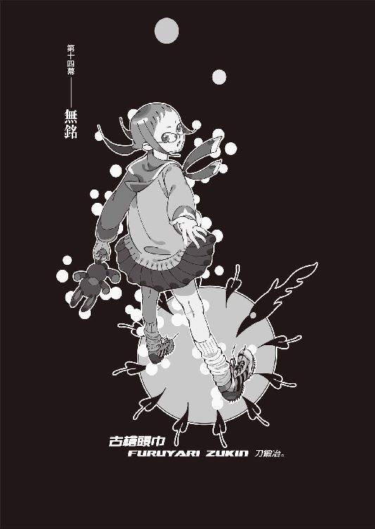
０
やって後悔するのとやらずに後悔するのならやって後悔する方を選ぶ──ではやって後悔しないのとやらずに後悔しないのとでは、どちらを選ぶ？
１
結局、《十三階段》の人形士、右下るれろとの面会が叶うのは、十五日の土曜日ということになった。
あれから──様態が急変したそうだ。
簡単に言うと、危篤状態になったらしい。
「ごめんなさい」
と。
十月十二日、約束の午前九時から一時間早い午前八時に、既に御苑の建礼門前に来ていた、昨日と同じレインコート姿の絵本さんは、開口一番、ぼくに謝った。
「怪我自体は命にかかわるものじゃなかったはずなんだけど......どうも、精神的に、取り乱しちゃってるみたい。時間が経って、落ち着いたところで、恐怖が蘇った......んだと思う。フラッシュバック、っていったら、普通の人には通じやすいのかな......」
「そうですか......」
「るれろさんのことだから、しばらくしたらきっと大丈夫だとは思うけど、でも、今は、面会謝絶。狐さんでも駄目」
「............」
「ごめんなさい。あたし......医者だから」
控えめではあったものの、慎ましやかではあったものの、それは絵本さんが見せた、ほとんど初めてといっていい、強硬なる意志だった。
無論、ぼくに異論はなかった。命にかかわるといわれれば、無理強いができるわけもなかったし、そもそも、会話できるような状態じゃないるれろさんに会ったところで、ぼくにとっては何の意味もないのだった。
「あたしの判断するところ......あと三日は、無理、かな。三日すれば、るれろさん、ちゃんと、落ち着くと思う。だから......その、十五日、だね。それも確定できないけど、絶対の約束はできないけれど、でも、とりあえず、十五日まで、待って。待って、ください」
「わかりました。言う通りにします。......ていうか、絵本さん、その、左手首に巻かれている包帯はなんですか？」
「え？ これ？」
絵本さんは自分の左腕を軽く持ち上げる。
「ああ......その、えっと、これはね。裏切りという精神的重圧に耐え切れなくて、ちょっと、何回か、リストカットを」
「..................」
考えてみたら、絵本さんには今まさにトロイの木馬、スパイみたいなことをさせてるんだったか......。ぼくに協力しながらも《十三階段》を正式に抜けたわけでもないという立場。根尾さんみたいな人でもない限り、相当のプレッシャーがかかって当然である。
「じ、自殺未遂......」
「あ、勘違いしないでよ。自殺とリストカットは違うもん。これはただの、即効性のある、ストレス解消法だよ」
絵本さんは照れ笑いと共にそう言った。
身の毛もよだつ恐怖の理論だった。
「り......リストカットで気分スカッと」
「............」
くだらない上に笑えない。
ていうか、もっと根本的な話、こんな、噓のつけない性格の人に、トロイの木馬なんて勤まるものなのだろうかと、ぼくの心にほの暗い不安の暗雲が立ち込めてくる。
「だ......大丈夫。大丈夫です。大丈夫なんです」
「いや、でも......大丈夫っていっても」
「あたし、普段から挙動不審だから、怪しいことしても、誰も怪しまないから」
「成程......」
言い得て妙だった。
噓をつけない代わりに、本当のことを言っても信用してもらえないということか......。
しかも自覚があるんだ。
なんか思ってたよりタチ悪いな......。
「き......気にしないで。気にしちゃ駄目だよ、いっくん。いっくんが心配するようなことじゃないの。これは......その、あたしが、自分の意志で、やってる、ことなんだから。気にしないでください」
「......そうですね」
ぼくが──口を挟むべきではない。
ぼくが口を挟める範囲は、もう終わっている。
それは、最初から決めていたことだ。
誰にも──何も、強制しない、と。
真心に対しても。
誰にも、絶対に、強制しない。
「じゃあ......その、絵本さん。十五日の、同じ時間に、またここで──ということで、いいですね？ 土曜日だから、御苑、ちょっとばかし混んじゃうかもしれませんけれど──朝早くなら問題ないでしょう」
「はい。わかりました」
「ところで、絵本さんは──今、《十三階段》の中で、どういう役割を振られているんですか？ 他の人達の動向、るれろさん以外の《十三階段》の動向って、わかりますか？」
「ううん......あたし、今、様態が急変した事情もあって、るれろさんにつきっきりだから。他の人が何してんのかは詳しくはわからない......」
詳しく話を訊いてみると、狐面の男や他の《十三階段》は、あちこちを個々に転々として、現在のところ拠点を一つに定めていない、ということだった。地に潜る──という、あの言葉通り、というわけらしい。ぼくとしてもまだ狐面の男に会うつもりはなかったので、それについては構わなかった。
「そうですか。じゃあ──プレッシャーでしょうけれど、引き続き、《十三階段》の中に、潜伏し続けてください。何かはっきりとした動きがあれば、教えてくれればありがたいです」
「うん。そうする」
「一番動向が気になるのはぼくに恨みを抱いているという澪標姉妹、澪標深空と澪標高海なんですけれど......まだぼくの前に何の気配も匂わせてない、宴九段と古槍頭巾も、要注意です」
「うん。だろうね」と、頷く絵本さん。「じゃあ......ごめん、あたし、もう、るれろさんのところ戻らないと。あんまり長い時間一人にするのって、駄目なんだ」
「......そんなに、まずいんですか？」
真心に──
想影真心に、負わされた怪我が。
そこまで、酷いのか。
「ううん......そうじゃなくても、精神的に弱ってる人を、一人のまま放っておくのって、可哀想じゃない。誰かが、手を握っててあげないと」
「............」
滅茶苦茶な性格だけど......
やっぱこの人は医者なんだな、と、思う。
そのことについての、自覚もある。
全く......ことごとくツボを押さえてくれる。
タチ悪い。
「じゃあ......場所だけ、一応、もう教えてもらえますか？ これから、ぼくにも絵本さんにも、何があるかわからないから、その情報だけは、今の段階で仕入れておきたいんです」
「............」
「大丈夫です、勝手に会いに行ったりしませんから。医者であるあなたの許可なくして、るれろさんには会わないと、約束します」
「......きみの、よく知っている場所なの」
絵本さんは、逡巡した末、言った。
「高都大学の助教授だった木賀峰約って人の研究室──かつて、西東診療所と呼ばれていたところだよ」
「西東──」
ぼくは──絶句した。
そこは──終わった、場所だった。
既に、物語に何の関係も、ない場所だ。
円朽葉が。
木賀峰約が。
匂宮出夢が匂宮理澄が。
そして、紫木一姫が──
死んだ場所だ。
殺された、場所だ。
成程......あそこなら、ぼくの行動範囲からは大きく離れているし、そして狐面の男の認識からしてみれば、今や運命の輪の外側に位置する座標。怪我人が休み、身体を癒すためには──最適といってもいい場所だろう。
それに、そもそも、あそこは元、診療所。
簡易的なものだとはいえ、れっきとした医療施設だ。少なくとも朽葉ちゃんの身体を《研究》するだけの設備は最低限揃っていただろう。
なんというか、それでも、あそこを休養場所として選ぶのはある種、卑怯な手段だとは思うが──しかし、憎たらしいくらいにいい手だ。真心に逃げ出されて、混乱のただ中にありながらも──さすがは人類最悪と言ったところか。
ともあれ。
十五日まで、るれろさんとの面会予定は延びた。絵本さんも、それまでどうにも身動きは取れないようなので、当然他の《十三階段》に会うこともできず──
三日間の、猶予ができた。
ブランク。
多忙な中の猶予ってのは、正直、扱いに困る。
真心はほとんど寝ていて、話は聞けない。
あれから──真心は本当に寝っぱなしなのだ。姫ちゃんのベッドで、目が腐るんじゃないのかというくらいに深く、泥のように眠っている。
奇野さんの《病毒》は日常生活を送るのに支障はないようだし、るれろさんのそれも、るれろさんが臥せっている限りは問題なさそうだけれど──時宮時刻の《呪縛》だけは、早々に何とかする必要があるかもしれない──と、思った。
《呪い名》か......。
萌太くんに、その世界の裏事情については色々と説明してもらっていたが、しかし、一里塚木の実の《空間製作》によって、その説明は《呪い名》に入る前のところで中断されてしまっていた。
《十三階段》内の《呪い名》は、奇野頼知と時宮時刻の、二人。奇野さんは、真心が──真心が既に殺してしまっているので、残る《呪い名》は時宮時刻、ただ一人。
絵本さんがまずは間を取り持ってくれるるれろさん以外でも、ぼくはいずれ《十三階段》の残り全員と会うつもりでいるのだが──
無為無策とは、いけない。
ミイラ取りがミイラ──ということもある。
その点、用心しなくては。
まあ、時宮時刻に会うのは、この様子だとかなり後のことになるだろうし、それはもうちょっと、先の話なのだが。
そんなわけで、とりあえず真心の今後についてはそんな感じで、絵本さんに言った通り、やはりある程度状況を見極めるまでは──というか、るれろさんと時宮時刻の話を聞くまでは、真心にかけられている鎖を解くのは控えておこう、ということになった。単純に、膨大な力を解放するにあたって最低限の用心ということもあるが、それらの三本の鎖が、それぞれに連なっていて──文字通りに連鎖している可能性も、考えられるからだ。
で──さしあたって。
三日間の猶予、その最初の日。
ぼくとひかりさんは──
再び、新京極の辺りに来ていた。
河原町通り、四条の交差点近くのオーパ。
真心のことは七々見に任せて、
二人でショッピングという奴だ。
無論、そんなお気楽なものじゃない。
まずは──生活のことである。
真心の衣服類を買いに来たのだ。
いつまでもメイド服というわけにはいくまい。
スパッツ姿はもっとまずい。
それに、歯ブラシだとか、タオルだとか、人間一人が生活するためには、衣服以外にも、色々と必要なものはある。
本来ひかりさん一人でも十分に事足りそうな行動ではあるのだが、しかし「わたしだけでは真心さんの好みがわかりませんので、できればご一緒していただけると、助かります」とのことだったので、ぼくも同行することになった。
「髪──」
「え？」
「髪、目立ちますよね。あと、瞳も」
「あ、はい。そうですね。玖渚のブルーほどでないにしても、オレンジっていうのは多少、奇抜かもしれません」
「真心さんも、さすがにこれからずっと寝っぱなしというわけではないでしょうし──そうなると、まさかあの部屋から一歩も出ないというわけにはいかないでしょう。お風呂とか、行かなくちゃいけませんから」
「まあ、ですね」
「だったら、いっそのこと、髪、染めちゃった方がよくないですか？」
「染める、ですか......」
ぼくは腕を組む。
あの三つ編み。
日の光に綺麗に映える──オレンジの髪。
真心の、お気に入り。
自分の体で一番好きなパーツ、と言っていた。
「......嫌がると、思いますよ」
「そうですか......参考までに、友さんは、髪と瞳、普段はどうしてるんですか？」
「あいつは人目を気にする方じゃありませんし。それに、そもそも、あんまり外に出ませんからね」
「ああ......でしたね」
「どうしてもってときは──子供の頃の話ですけど、どうしても目立つのがまずいってときは、帽子をかぶって、サングラスでしたね」
「ふむ」
「ああ、そういえば真心も、最初、狐の仮面に野球帽でした」
「仮面はいただけませんが──そうですね、帽子は、いいかもしれませんね。じゃあ、帽子とサングラスも、買っていくことにしましょう」
「ですね」
まあ、狐面の男にしてみれば、やっぱり、真心がぼくのところにいるだろうというのははっきりとした自明だろうけれど、それでもわざわざこっちから目立つような振る舞いをする必要はないから、その程度の気遣いは必要だろう。
さすがにひかりさんは手際よく、ぼくは必要なときに二、三、アドバイスする程度で、荷物も持つこともなく、三時間ほどで、買い物は終了した。
そのまま帰るのも何だったので、なんとなく二人で、購入した品物をその辺のコインロッカーに預けて、新京極界隈をぶらぶらすることにした。
うーん。
まあ、なんというか。
誤解だけど。
勘違いなのは、わかってるけど。
随分と久し振りに訪れた──
平和で、のんびりとした、時間だった。
「......平和ですねえ」
と、ひかりさんも言った。
道行く人々を眺めながら。
「とても──そんな、世界を終わらせようなんて、そんな滅茶苦茶なことを言っている人がいるなんて、思えない──感じです」
「全くの同感ですよ」
「はい。というか──そういう人がいるかどうかじゃなくて、どうしてそんなことを考える人がいるのかが──わたしには、わかりません」
「............」
「悲惨で、酷いことも、そりゃないわけではありませんけれど──でも、ここは、基本的にはいい世界じゃないですか。勿論、そんなのはわたしや、その周辺に限ったことなのかもしれないですけれど、世界にはもっと悲惨で、もっと酷いことが一杯あるのかもしれないですけれど──でも、世界に、終わらなければならないだけの理由があるとは──わたしにはとても、考えられません」
「理由じゃなくて──要因なんでしょうね。西東天の、望んでいるものは。否──望んでいるというよりは、きっと、今、探している最中なのでしょう。模索中、ですよ。多分、真心やぼくは、その一環に過ぎず──ぼくを敵視していることすら、所詮は経過の一つに過ぎないんだと思いますよ」
「世界の──終わり」
「まあ......多分、狐面の男にしてみれば、ぼくやひかりさんの言ってることは、論点がまるで違うんだと思います。問題にしている論点がずれている。狐面の男にしてみれば──面白い小説を最後まで読みたいと思うのは当然、くらいの気持ちだと、思います」
「............」
「同じページばかり読んでないで、早く──読み終わりたいんでしょうね。この世界という名の、物語を。いうなら、彼の試みは──速読のようなものですよ」
「速読......」
そう──
それは、だから、加速、だ。
「世界が面白い──と言っていました。ねえ、ひかりさん。この世界に生きている人間の中で、六十億人の中で、一体どれくらいの人数が、そんな言葉を口にできるんでしょうね？ それこそ──です。平和だ──とか、それくらいなら、ぼくにも、ひかりさんにも、言えますよ。でも......世界が面白くて面白くて仕方ないなんて、そんな絶対的な肯定のメッセージを、他人に向けて放てる人間は、そうそういない」
「......ですね。それに......」ひかりさんは俯く。「西東天のような、数奇な人生を送った末に出る台詞じゃあ──ないですよね。そういった意味では、ほとんど常軌を逸しています」
「それに──死にたくない、とも、言っていました。元々の始まりは、そこだったそうです。面白い面白いこの世界を、中途半端なカタチで見終えたくはない──世界が終わるまで生きていたい、とね。なまじＥＲ３......当時はＥＲ２ですか、なんて組織に、少年時代に属してしまったのも、よくなかったのかもしれません。貪欲すぎて──そして、幼過ぎて、そして悪いことに、その資格があった」
「でも......矛盾してませんか？ 世界を終わらせようという試みと、死にたくないという願いとは」
「それが一緒なんですよ。西東天にしてみれば、それらは同じ机上で語れることなんです。世界の終わりが見れるならば死んでもいいし──世界の終わりを見ない内は死んでも死に切れない。死なないか、世界が終わるかの、二者択一──いえ、二者同一とでも、いうべきでしょうか」
「............」
ひかりさんは、珍しく嫌悪感を含んだような表情をした。うんざりだ、と言わんばかりだった。
「滅茶苦茶、ですね」
「さすがは哀川潤の父親、とでも言いますか」
「わたしは──あまり、そんな風には考えたくないですけれどね。哀川さんは──そんな人じゃあ、ありません」
「根本に通じる、絶対感はありますよ。天上天下唯我独尊──とでも、言いますか。ぼくも、色々と考えてみましたけれど......あの二人に違いがあるとすれば──多分それは、明確なる目的の有無、なんでしょうね」
「どういうことですか？」
「簡単にいえば、まあ、二人とも、十年前に──死んだ、ことになっているわけです。まあ、事実はまさか、漫画みたいに生き返ったってわけじゃないんでしょうけれど、それによって二人とも、因果から追放を受けた──と、西東天は言っていました。生きているけれど、本当は死んだようなもの──というような意味だったのだと思います」
「はあ」
「問題は、二人のその後の行動の違いです。西東天は、それでも己の目的を果たさんと、違うアプローチの方法を選んで、これまで試行錯誤してきたらしいです。この十年間の間に、色々試したみたいなことを言っていました。それにあたって、彼は──手足を、求めた」
「手足──《十三階段》ですか」
「その名称が、一体いつ頃から使われていたのかは、ぼくには判断できませんが──そういうことです。彼は、物語に関与するための手足を、別に求めた。対して哀川さんは──自ら、他人の手足となる道を、選択したんです」
「──請負人」
「ええ......多分それはそのまま、目的を持っていた西東天と、その目的のために作られた哀川さんとの、差異なんだと思うんですけれど......あ、いや、すいません。だからどうって話じゃないんです。ただ、そう思うってだけで」
「だとすると──西東天の目的、そのものを停止させないことには──いつまでたっても終わらないってことですね。こういうことが──終わらない」
「そうですね。ぼくはてっきり、先月、澄百合学園に呼び出されたところで、西東天は決着をつけるつもりだと思ってたんですけど──あれは、今の時点から考えれば、単なる理由づけだったんでしょうね」
「理由づけ？」
「狐面の男は、別の言葉を使うかもしれませんけど......要は、みいこさんを巻き込んだのと同じで、ぼくとの間の繫がりを、西東天とぼくとの間の因縁を、はっきりとした形にしようとした──ということだと思います。真心を使って。真心をぼくに披露目するためだけのイベント──だったと見ていい」
「............」
「出夢くんが必要になった──って言ってました。本来ならそのまま隠遁させてもよかった出夢くんを、狐面の男は無理矢理舞台に引っ張り挙げた。それは、真心の力を、あの圧倒的な能力を、......真心の変わってしまった部分を、ぼくに示すため......だったんでしょう。真心をぼくに会わせるつもりはなかったみたいですから、今の事態は、狐面の男にとっては、やはり計算外って奴なんでしょうけれど......」
「じゃあ──どうすれば、終わりなんでしょうか」ひかりさんは困惑したように言う。「目的の停止って言っても......曖昧ですよね。曖昧過ぎて、まるで泥水でもかいているかのようです。多分、何度失敗しても、西東天は何度でも、やり直すでしょうから」
「ええ。少なくともこれまでは、そうしてきたみたいです。だから──たとえぼくを敵視するという方法論を捨てたところで、また別の手段を選び取ることでしょう。ぼくに言わせれば、もうそれはほとんど、悪循環だ」
「わたしに言わせてもそうですよ」
「その悪循環は──できれば、止めたい......と思っています」
「でも──殺せないでしょう？」
ひかりさんは言う。
「さっきの言葉を引っ繰り返せば、世界が終わるか自分が死ぬかしなければ、西東天は止まらない──ということになるでしょう。でも、あなたに──人は殺せない、と思います」
「それはぼくを知らな過ぎますよ、ひかりさん。必要とあれば──ぼくだって」
「殺せますか？ 本当に、絶対に、間違いなく、殺せるといったら殺せますか？」
「いやすみません殺せません」
畳み掛けるような物言いに、屈服してしまった。
昔──なら、いざ知らず。
今の、ぼくは。
守りたいものを認識してしまった、ぼくは。
きっと、殺せないだろう。
人を殺せないだろう。
それは──自覚しておかなくてはならない。
はっきりと、自覚しておかなくてはならない。
他人のために、
自分のために、
人を殺せると思ったあの頃のぼくは──
きっと、もういない。
どこにもいないんだ。
「......あの」
ひかりさんは改まって、言う。
「一つだけ──立ち入ったことを、お訊きしてもよろしいでしょうか？」
「何なりと」
「これは、従僕としての領分を、いささか外れた質問になってしまうんですけれど」
「気にしないでくださいよ。ぼくとひかりさんとの仲じゃないですか」
「真心さんとは、どういった馴れ初めで？」
「............」
さりげに流されたのもショックだったが、そんな質問をされるとは思っていなかったので、ぼくは一瞬、言葉に詰まった。
けれど──別に、隠すようなことでもない。
今となっては、隠すようなことじゃない。
これからひかりさんには、真心のことで面倒をかけてしまうのだ、むしろ話しておくべきことだろう。
ぼくは、
「えっとですね」
と、気負った風もなく、切り出した。
「古い話なんで、記憶は曖昧なんですけど──ぼくがＥＲ３に渡った経緯については......知っているかもしれませんけど、一応説明しておきますか。ぼく、中学生の頃に、玖渚機関とトラブル起こしちゃいまして」
「友さんが──関係しているんですね？」
「そうですね。玖渚と、その兄、玖渚直と──この人、この度玖渚機関の機関長に就任したらしいんですけれど──そして、直さんの友達の、霞丘道児って人が、ぼくにとっては主な登場人物でした。まあ、そのトラブルの結果っていうのが、眼も当てられないくらい惨憺たるものでしてね──哀れヘタレの戯言遣いは、国外逃亡を余儀なくされたというわけです」
「......友さんが絶縁されたというのも、その辺りの話なんでしょうか？」
「大体そんなもんです。それは別に、敗戦の結果じゃあないんですけれど──いや、似たようなもんですか。結局、無傷で済んだのは直さんだけですね。霞丘さんも──今現在、消息不明ですし」
消息不明──という言葉でどれだけ正確なのかわからなかったが、ぼくはそう言った。直さんが機関長になり、玖渚が機関に復帰するにあたって、彼の扱いがどのようになるのか──ぼくとしては気になるところだが、所詮、ぼくは蚊帳の外だ。知ることがあっても、それは全てが終わった結果として──だろう。
「国外逃亡──直さんの手引きでね。玖渚と別れて、単身──です。ＥＲ３システムの、ＥＲプログラムという、留学制度に参加したわけなんですけれど......」
「ええ、存じております。では、そこで──真心さんと出会ったというわけですか」ひかりさんは、しかし、不審そうに言う。「でも......それだったら、真心さん、ご主人様と同じか、それ以上の歳ってことになりませんか？ 真心さん、とてもそんな年齢には見えませんよ」
「..................」
鏡を見ろと言いたくなった。
中学生にしか見えないひかりさん。
二十七歳。
それに──
「玖渚も──同じでしょう」
「あ......そうですね。そうでしたね、友さんもそういえば──あなたと、同い年で」
「ええ......まあ、で、話を戻しますけれど。無事に試験に合格して、晴れてぼくは向こうで、寮生活を送ることになったんですけれど──そこの同室が、想影真心だったんですよ」
「......ＥＲプログラムの試験は、相当な難易度だと聞いています」
「ええ、そうらしいですね」
「お賢かったのですね、ご主人様」
「いや、確かに、実際難しい試験でしたよ。でも──ぼくにしてみれば、簡単でした」
そう、簡単だった。
あまりにも簡単だった。
ぼくにしてみれば。
生きることに、較べれば。
「ひょっとしたら直さんが、何か裏工作をしたのかもしれませんね」と、ぼくは茶化すようにいって、話を続ける。「ぼくと同室──といっても、後で知ったんですけど、真心は別に、試験を受けて合格した日本からの留学生──というわけでは、なかったんですね」
「......橙なる種」
「ええ──実験体でした」
ＭＳ‐２。
西東天の──遺産としての部署。
かつて──哀川潤を創造した場所。
人類最強を生み出した、聖地にして地獄。
「実験体といっても、年がら年中監禁されてモルモットのように扱われていたわけじゃなく──むしろ、日常生活を送れるかどうか、社会の中でどういう動きを見せるのか──という方が、大事だったみたいですね。反応実験状況実験が主だったということなのかもしれません」
「ご主人様は、いつ、それを知ったのですか？」
「それ、と言いますと？」
「真心さんが、実験体──だと」
朽葉ちゃんや──
あるいは、兎吊木のように。
「仲良くなったところで、本人の口から聞きました」
「......隠してなかったんですか」
「というか、公然の秘密だったみたいですね。いや、真心以外にも、ＭＳ‐２の実験体は、ある程度、プログラム生の中には混じっていたみたいなんですよ。それについては、ぼくもよくわからなかったんですけれど......多分、それほどの数はいなかったと思うんですけれど......でも、その中で、真心は──ずば抜けていた」
「ずば──抜けて」
「人間の、最終形でしたよ」
ぼくは昔を思い出しながら、言う。
「その意味じゃ、実験体と言う言葉は相応しくないのかもしれません。実験体や試験体じゃなく──あれは、完全体だったのかもしれない」
「............」
「それでも──ぼくの見る限り、想影真心は、哀川潤ほどじゃあ、なかったんですけれどね──」
当時のぼくにわかるわけもないが──
今なら、わかる。
総合的に考えて、ＭＳ‐２は──
人為的に哀川潤を作ろうとしていたのだろう。
時間的な計算は合う。
あの頃は、哀川さんと西東天が、藍川純哉と架城明楽を交えて、衝突した──その、数年後ということになるからだ。
木賀峰助教授が朽葉ちゃんを使って、西東天の続きをやっていたのと同様に──真心を使って、ＭＳ‐２は、西東天の続きをやっていたのだ。
............。
諸悪の根源、という言葉が脳裏に浮かぶ。
多分、その通りなのだろう。
あの人──西東天が、因果から追放される前に、この世界に残した因果は、あまりにも酷過ぎる。
まあ......だからこそ。
だからこそ、西東天と、零崎人識の間にも、きっと何らかの、確固たる、知ればそれを武器に使えるような種類の因縁があるだろうと、ぼくは踏んでいるのだけれど──
その辺は、小唄さんの調査の結果待ちだ。
「哀川さんを作ろうと......ですか。でも、どうして、そんなことを──」
「子供が戦艦のプラモデル作るのと、同じ理論でしょうね。理由なんかありません。それが、ＥＲ３システムというところなんです。ぼくは──内部に入ったから、それがよくわかっている。よく、知っています。彼ら、目的なんかないんですよ。その意味じゃ、西東天も、えらく正反対な連中に続かれてしまったものです──」
プライドを持たない。
節操を持たない。
愛着を持たない。
弱音を吐かない。
懐かしき──ＥＲ３システムの四ヵ条。
彼らは《殺し名》や《呪い名》、四神一鏡、玖渚機関、そのような、裏設定とも言っていい世界の住人達とは確実に一線を画した、あくまでも一般人としての集団ではあるのだが──
一般人であるがゆえに、引け目がない。
萌太くんも言っていたが、結局、彼らは、一番力を持っている《普通の世界》の、住人達なのだ。
普通という──怖さ。
主義も主張も、彼らにはないのだ。
「世界の終わりを見てみたいという目的と同じレベルで──目的もなく、哀川潤を作ってみたいと、思ったんでしょうよ。きっとね。その思想は、勿論、わからなくもない。早く走りたいとか、難しい計算ができるようになりたいとか、そういう、幼稚な願望と同じ──具体性に欠けているからこそ、目的と同じ重みとしての意味を持つ、ということですよ、ひかりさん。あなたの本来の主人であるイリアさんが、意味もなく天才を集めて、サロンを形成しているのと、理念は同一です」
「そんな説明されてしまうと、わたしとしては言葉もありませんね」
卑怯です、とひかりさんは頰を膨らました。
可愛い。
そんな顔をされてしまうと、ぼくとしても言葉はない。
「とにかく──真心は、ＥＲ３システムにとっての重要な研究の一つの経過点──にして、終着点、だったわけですね。......そうですね、もうちょっと、腹を割って話しましょうか」
「............？」
「どうやらぼく自身、その、ＭＳ‐２の研究には、一役買っていたみたい──なんですよね。真心の監視役──及び世話係として」
「......自覚的に、ですか？」
「いえ、無自覚でした。ぼくは単に、真心とつるんでるだけのつもりでした。その頃のぼくは──生きているようで、死んでるような、ものでしたからね。特に何をしているという意識もなかった。ただ──玖渚と真心を、重ねて、見ていた」
「友さんと──」
「子供の頃から未練たらしい男だったんですよ。誰もかもを、自分か、玖渚を基準にしてしか計れないような──ね」
それは、玖渚にしたって──同じか。
妹。
根幹には、妹の存在が......ある。
「でも、まあ、それだけに──仲良くなれましたよ。いつの間に仲良くなったのか、どういう経緯で友情を深めていったのか、よくわかんないですけど──それだけ、自然に」
「......本当は、人間関係というのは、そういうものなんでしょうけれどね」
「けれど──それがよくなかった」ぼくは言った。「想影真心──《橙なる種》と、平然と仲良くしている人間というのが、どうやらぼくだけだったみたいでね──ぼくもまた、特別殊目として、捉えられてしまったわけです」
「ご主人様は誰とでも仲良くなれますからね」
「それ、崩子ちゃんにも言われましたけど......やめてください、そういうんじゃないんです。単純に──鈍かっただけなんです。ぼくなんて、ただの落ちこぼれだったんですよ。授業内容に全然ついていけなかった。なんとか、その場を凌いでいただけです」
その場凌ぎは──得意だから。
トリックとスタンドプレーで、切り抜けた。
戯言遣いの、本領だった。
懲りもせず──悪びれもせず。
「そんな落ちこぼれが、どうにかプログラムの中で食いつなげたのは、偏に真心のお陰なんですけどね。ただ──ずっと、見張られてた」
「............」
「ぼくはね──でも、無自覚とはいえ、途中で気付きましたよ。こいつ──自分で言っている以上に、誰かに何かされてるってね。幸い──前知識はありましたし」
玖渚友──
生まれついての天才。
青色サヴァンと呼ばれ──
彼女は幼い頃から既に玖渚機関を支配していた。
「でも......ぼくには何もできなかった。いえ、ぼくは何も──しませんでした。自分には何もできないことが、わかっていましたから。ただ......呆然と、見守っていました」
「あなたらしくも──ありませんね」ひかりさんは言う。「そんなこと言いながら、どうせ、何かしたんでしょう？」
「......少しは。少しだけは。──同じことを、したんです。今まで、嫌と言うほど繰り返してきたのと──同じことを」
「............」
「......でも、本当に少しだけですし、最後だけですし、それに──やっぱり、そんなの、何にもなりませんでしたよ」
だから──
何もしなかったのと、同じことだ。
「付き合いは、あいつが死ぬまで続きました。最後の実験が失敗して──想影真心は、炎の中で、焼け死にました」
「......お察しします」
「いえ、でも──結局、生きてたわけですし」
「そうでしたね。......どういうことなんでしょう？」
「考えられるのは──《友人》としてのぼくが、必要なくなった......邪魔になったから、別離させるために、ＥＲ３システム、ＭＳ‐２が、ぼくに対しては《死んだ》という偽装工作をした──」
けれど──これは、考えられない。
ぼくは、真心が死んだのを、見た。
焼け死ぬ橙色を、
橙色の炎の中に消えていく橙を、
ぼくは目撃した。
ぼくが証言者だ。
ぼくが被害者で、
ぼくが加害者だ。
「......まあ、真心とぼくとの関係は──概ねのところ、そんな感じです。どうです、ひかりさん、聞いたところで、つまんないっていうか、大したことは、なかったでしょう？」
「いえ──やっぱり、出過ぎた真似でした」ひかりさんは殊勝な態度で、申し訳なさそうに言った。「気分を害されたようでしたら、どうぞ何なりと罰をお与えください、ご主人様」
「............」
なんか......、本当にこの人、たまに誘っているとしか思えないような台詞を吐くよな......。
いつか誘惑に負けそうだ。
と、思っている段階で、半分以上負けている。
「別に......いいんですよ。恥を晒す人生には慣れています。ただね──」ぼくは目を逸らして、独白のように言う。「──ぼくのせいなのかなあって、思うとね......どうもね」
「............？」
「ぼくは周囲の場を狂わせてしまう存在──なんだそうですよ。とある、若き美麗な策師さんの言葉によればね。不幸と災厄を──引き寄せる。事故頻発性体質、だとかで」
「そんなの──言いがかりでしょう」
「かもしれません」
「たとえそうだったとしても、それはあなたの責任ではありません。あなたの責任でないことを、あなたが恥じる必要は、何一つないのです」
「............」
「そんなヒロイックな気持ちにかまけて、今やるべきことを見失ってはいけません、ご主人様」
「......ですね」
「さしあたって──」
と。
ひかりさんが、ぼくの右腕を取った。
それを、自分の左腕と、組む。
そして、そっと、身を添わせてきた。
「............っ!?」
「お静かに」
「お静かにって──」
む、胸が。
実は決して慎ましやかなばかりではない、
ひかりさんの胸の感触が。
い、いかん、落ち着け。
混乱してんじゃねえ、心臓！
こんなことでパニックになるな！
それこそ中学生とかじゃないんだから......っ！
「ご主人様」
対照的に──
ひかりさんは、囁くような小さな声で言う。
真剣な調子だった。
「そのままお聞きください」
「............？」
「どうも先程から、尾行されているようです」
２
話している内に随分と歩いていて──
目前に、京都市役所が見えている。
御池通りに抜けたのだ。
目の前には横断歩道。
信号は赤。
とりあえず、ぼくとひかりさんは──腕を組んだまま、信号待ちをする振りをする。ここらの信号、南北向きのものは赤が長いので、とりあえず次の行動を起こすまでの時間稼ぎには、なるはずだ。
成程──
言われて見れば、その通り。
張り付くような、視線を感じる。
視覚というのはあくまで、どういったところで受容器なので、実際に感じているのは視線ではなく気配──というべきなのだろうが、とにかく、尾けられている──と、思う。
考えてみれば、それらしき気配はあった。
いつからか、どこからかはわからないが──
とにかく、今、誰かが、少し離れた後ろにいる。
「......ひかりさんは、いつ気付きました？」
「確信が持てたのは──ついさっきです」ひかりさんはとても小さな、ともすれば聞き逃してしまいそうな小さな声で言う。発することに技術を必要とする類の声だ。「ただ......あまり、上手な尾行だとは、いえません。今まで気付かなかったのは、単にわたしが、ご主人様との会話に集中していただけです。ただの、油断です」
「ぼくも──そうですね」
予想外、ということもあった。
今、あちらさんは真心がいなくなって一大事だろうから、ぼくなんかに構っていられないだろうという予想から、外の行為だ。
ふむ......。
しかし......気付いてみれば、下手な尾行だな。
本当に下手。
素人だ。それも、ど素人だ。こうして足を止めていても、振り向くまでもなく、わかる。それとも、最初からバレてもいいと思っているのか......いや、とても、そんな感じじゃあない。堂々としているというのならばともかく、不自然なほどにこそこそしていて、絶対にそんな感じじゃない。
「......ひかりさん。そろそろ......あと十秒ほどで信号が変わりますが、どうします？」
「危険の度合いを測りかねますね......とりあえず、状況を維持するため、不自然のないよう、横断歩道を渡りましょう」
「ですね」
赤から青に。
ぼくとひかりさんは、足を踏み出す。
「ここよりも──真心さんが気になります」
「......アパートには七々見がいるから、大丈夫ですよ。ぼくよりはよっぽど頼りになります」
「随分と......信頼なさってらっしゃる」
「魔女ですからね。燃やす以外に、滅ぼす方法はありません」ぼくは言う。「だから、気になるのは確かにぼくも同じですけれど、さしあたって今は、この尾行者をどうするかっていう方が、重要です」
「そうですね......」
「こういう場合、どうするべきなんでしょう？」
ぼくは訊いた。この人が、ひかりさんだとしてもてる子さんだとしても、赤神イリア直属のメイドとして、その程度のマニュアルは、頭に入っているだろう。
「対処の仕方は状況によりけりですので、一概には言えませんけれど──主だった選択肢は大きく分けて二つ──ですね。簡単に言えば、そう、撒くか、捕らえるか」
「どちらが優先されます？」
「どちらかといえば、捕らえる」
「じゃあ、そうしましょう」
横断歩道を渡りきった。
そのまま御池通りを東に歩いて、
地下に降りる。
地下──
地下鉄東西線、京都市役所前駅。
二人分、切符を買う。
「......大丈夫でしょうか？ 捕らえるとはいっても、危険な人かも──しれませんよ。確か、《十三階段》の澪標姉妹がご主人様を狙っているという話だったかと──」
「今ぼくを尾けているのはどうやら一人だけのようですから、違うと思いますよ」
「でも、一人は囮かもしれません」
「ああ......その可能性は考えませんでした。けど......まあ、それにしたって──この尾行は、あまりにお粗末過ぎる。囮にしたって、あんまりでしょう」
「それは、そう......そうですけど」
ひかりさんもそれには同意した。
勿論、さすがに《隠身の濡衣》と較べるのは無茶だとは言っても──それにしても、この尾行者の尾行は、あんまり過ぎる。
「ついさっきまで気付かなかった以上、こっちもあんまり大きなことは言えませんけどね──それに、仮に囮だったとしたら、どうせ何か仕掛けてくるつもりなんでしょう？ だったら、こっちからその切っ掛けを作ってあげましょうよ」
「......舞台度胸も、大したものですね」
ひかりさんは微笑む。
「では、ご一緒いたします」
「やばくなったら、一人で逃げてくださいよ？」
「ご冗談を」
改札をくぐって、そのままホームへ。
電車を待つ列に並ぶ。
電車か──
嫌でも萌太くんのことを、思い出して、なんとなく、自分達の背後に気をやってしまうが、しかし、濡衣さんはもういないのだし、今回は一番前に並んでいるわけでないので、それは杞憂というものだろう。
電車が入ってきた。
停まる。
ドアーが開き、降りる人は降り──
ぼくとひかりさんは、車内に乗り込む。
出発を知らせる放送が鳴り、
警報音が鳴って、
ドアーが閉まりかけたところで──飛び降りた。
ドアーが、閉じる。
電車が、発進した。
隣を見る。
同じように、電車から飛び降りた人間がいた。
「あ」
女子高生だった。
今風の茶髪で、短いスカートの制服。
愛嬌のある、赤い縁の眼鏡。
全体的に、ちっちゃい印象。
「............」
「............」
「──やるじゃん」
褒められた。
......いや、褒められてどうする。
「......あの、ご主人様......お知り合いですか？」
「いや、知りませんけど......」
不審そうな表情のひかりさんに、困惑のぼく。
本当に知らない。
女子高生は、電車が行ってしまい、降りた乗客ももう立ち去って、がらんとなったホームで、びしっと、ポーズを取った。
「ふふっ！ そっちは知らなくてもこっちは知っているのよ、《いーちゃん》！」
「......はあ。そうっすか......」
あ、いや。
ぼくを《いーちゃん》と呼んだ。
と、いうことは──
「そう！」
と、女子高生は高らかに言った。
「《十三階段》の五段目！ 古槍頭巾とは──何を隠そうこのわたしのことなのよ！」
ぼくは──
ぼくは、なんだろう......えっと......
呆然となる、じゃなくて......
絶句する、でもなく......
うん。
反応に困った。
「......なにか言ってよ。恥ずいじゃん」
「いや......なんか月並みだな、と思って」
「月並み!?」
女子高生──頭巾ちゃんは愕然となった。
うーん......
白衣に水着とか包帯だらけとか《隠身の濡衣》とかの後に、ただの茶髪の女子高生じゃあ、あまりにもキャラが立ってなさ過ぎる。
「キャラが立ってないって言うなー！」
「............」
月並みな突っ込みだった。
うーん。
強いていうなら奇野さんに近いのかな......。
でも、奇野さんは本当はすごかったわけだし。
じゃあ、この娘も、本当はすごいのか？
すごいはずだよな？
「ふっ！」
頭巾ちゃんは何故か不敵に笑った。
月並みに不敵だった。
「今回は見抜かれてしまったけれど──次はこうは行かないわよ！ 憶えておきな──」
「逃がすわけねえだろうが」
踵を返して一路脱兎逃走を図ろうとした頭巾ちゃんの、制服のでっかい襟をつかんだ。
「ぐえっ！」
首が絞まったらしいが、その反応まで月並みだ。
なんだこの娘......。
次の行動がことごとく読めるぞ。
「離しなさい！ ええい！ 殺さば殺せ！」
「わかった」
そのまま線路に突き落とした。
きゃーっ、と月並みの悲鳴だった。
「さ、行きましょう、ひかりさん」
「え、でも......」
「なあに、眼の錯覚です」
「いや、しかし......」
「眼の錯覚眼の錯覚」
階段を昇って、駅員さんに切符を示して払い戻してもらい、先程通ってきたルートをそのまま辿って、地上に出る。
おー。
こうしてみると、市役所って大きいなあ......。
お城みたい。
「殺す気かーっ！」
ちっ。
追ってきやがった。
ていうか、まあ、さすがに、ぼくだって、次の電車まで十分な時間があることくらい、わかってたけれど。
ぼくは憂鬱な気分で、彼女を振り向いた。
「えっと......古槍さん？ 古槍、頭巾さん？」
「そうよ」
何故か彼女は威張った。
高飛車な態度だ。
「刀鍛冶の？」
「ええ、そうよ。わかってんじゃない。ふふふ、褒めてあげるわ」
「......飴ちゃんをあげるから、ちょっとそこで待っていなさい、頭巾ちゃん」
「わーい、飴ちゃんだー......っているかー！」
「............」
月並みにノリ突っ込みだった。
ちょっと驚いた。
ポケットに入っていたヨーグルト味のキャンディを彼女に手渡し、ひかりさんを手招きし、頭巾ちゃんから十メートルほど離れた位置にまで連れて行く。
「......どう思います？」
「わたしには......判断しかねます」
「うーん......ぼくも、判じかねています......」
「他の《十三階段》と比べてみて、どうです？」
「どう、というか......まあ、......まだ全員と会ったわけじゃないですから、なんともいえませんけれど......」
ちらり、と振り向いて、彼女を窺う。
キャンディを舐めて、大人しくしていた。
ふうん......この新京極付近という場所は、修学旅行の高校生が大量に群を成して徘徊しているため、高校生というのはどんな高校生でもある程度はなじんでしまうものなのだが、それにしても、彼女、頭巾ちゃんはあまりに自然な風だった。
存在感がないとも言うが。
なんか、雰囲気からもうモブ的なんだよな。
「強いて意見を言わせていただければ、わたしにはただの女子高生にしか見えません......」
「ぼくにもそうですけど......でも、《十三階段》だって名乗っていますし、そもそもぼくのことを《いーちゃん》だって知っているようですし」
「でも──《十三階段》って、あんな普通の人が入れるんですか？」
「そこですよね......」
元々《十三階段》は狐面の男にとって、手足であると同時に、変人の集合体としての組織だったはずだ。先々月以降は、その方針は、ぼくに照準を定めたものへと変更されたものの、基本理念までが完全に変わった、完全になくなったとは思えない。大体、口振りからして、刀鍛冶としての古槍頭巾のことを、狐面の男は、えらく買っているような感じだったし......
......ん？
あれ、ちょっと待てよ。
確か、古槍頭巾って......
「こそこそ話するなーっ！ 男らしくないぞっ！」
あろうことかキャンディを嚙み砕きやがったらしく、頭巾ちゃんが早くも、ずかずかとぼく達の方へと近付いてきた。
ぼくは「ねえ、頭巾ちゃん」と言う。
「ぼく、古槍頭巾は老人だって聞いたんだけど」
「............」
「その筋じゃ有名な老人──だって」
「............」
「どっち向いてんだよ」
「だ、誰にっ？」
「はあ？」
「誰に聞いたのよっ！ 一方的にわたしを噓吐きみたいに断定して！ そいつが噓ついてるかもしれないでしょう！ 答えなさい、誰に聞いたの！」
「狐さんだ」
「そいつね！ そいつが噓をついているのよ！」
「そいつ呼ばわりかよ」
「ふっ」
またも月並みに不敵に笑った頭巾ちゃん。
生意気な態度だ。
きっと続けて何か重要な事実でも言ってのけてくる気だろうとこっちは身構えたが、しかし頭巾ちゃんは、びっとぼくを指差したまま声を発さず、やがて、その指も、力なく、降ろした。
「............？」
「......え、えっとね」
いきなり自信なさげだった。
「あの......わたし、十二代目だから」
「は？」
「狐さんが言ってるのは、十一代目」
「......えっと......それはつまり」ぼくはしばし、思考する。「......刀鍛冶、古槍頭巾として──十二代目って、そういうこと？」
「うん」
明らかに子供ぶっていた。
可愛いけれど、可愛いだけに、可愛くない。
しかし──十二代目？
何を言っているんだこの女子高生は。
「......どういうこと？」
訊くしかなかった。
頭巾ちゃんは、す、と目線を下げて、
「あんた、秘密を守れる人間かしら？」
と言った。
小芝居はいいからさっさと言えと思った。
まあ、付き合ってあげて、神妙な感じに頷いてみせると、彼女は今度こそ、衝撃の事実を言った。
「わたし、お祖父ちゃんの代わりなの」
「......代わり？」
代わり──代理品？
オルタナティヴ──か？
「お爺ちゃんが十一代目で、先月......えっと、先々月だったかな、《十三階段》っていうのに、入ったのね。狐さんに誘われて」
「はあ」
えっと......古槍頭巾は五段目だから──狐さんからは、かなり早めの接触があったはずだ。勿論、狐さんだって、《十三階段》の後期メンバーを場当たり的に決めたわけじゃないだろうから、前々から付き合いはあったのだろうが......。
「でも、お祖父ちゃん、最近、身体の調子悪かったんでね。わたしが介護してたんだけど」
「介護？ きみが？ 頭巾ちゃんが？」
「しょうがないじゃん。他に身寄りもないし。伝説の刀鍛冶を老人ホームに入れるわけにもいかないでしょうが」
「............」
照れたようにいう彼女を、ちょっと見直した。
お祖父ちゃんっ子なんだ......。
ちょっとだけキャラが立った気がした。
「基本的に裏方だからそれでいいってことだったんだけど......でも、今月に入って、本格的に身体悪くしちゃって」
「しちゃって？」
「死んじゃった」
「............」
重い......。
何気にいきなり重いものを背負ってきやがった。
これは不意打ちだ。
「で、わたしが代わり」
「......はあ」
「十二代目だから」
「......はあ」
「えっへん」
「............」
えっと......なんて言えばいいのかな。
狐さんらしいと言えば、らしいけど......。
狐さんらしい適当さだけど......。
「絵本さんに診てもらえばよかったんだろうけどねー。お祖父ちゃんお医者さん嫌いだから。まあ、九十八までも生きれば、大往生でしょー」
「......それもまた月並みなコメントだね」
そう言って、ぼくは、とりあえず、疑問点を訊くことにする。あまりクリティカルなことを訊くと状況からして逆にこっちが墓穴を掘りかねないが、しかしまあ、この娘は頭が軽そうだから、ある程度は大丈夫だろう。
「その、えーっと、頭巾ちゃんがお祖父ちゃんと入れ替わったことを、他の《十三階段》の人達は知ってるわけ？」
「ん？ いや、わたしまだ、他の人とは会ってないし。絵本さんのことも狐さんから話に聞いているだけだよ。人格者で、凜としてクールな、すごく立派なお医者さんだって」
「............」
なんで騙してるんだ、あの人。
無意味に噓ばっかりついて、まあ。
「タイミングをみて狐さんがみんなに紹介してくれるはずだったんだけど、なんかトラブルがあったとかで、有耶無耶になっちゃって。だから狐さんがみんなに言ってなきゃ、みんな知らないんじゃない？」
「ふうん......」
じゃあ──絵本さんが、御苑で話したとき、そういうことを一言も言ってなかったのは、わかるわけか。
その《トラブル》というのは、真心の逃走事件のことだと思うけど、......ひょっとして頭巾ちゃん、そのこと、知らないのかな？ いや、真心のこと自体、知っているのかどうか怪しいものだ。
狐面の男が──隠しているのか。
無意味にかどうかは──ともかく。
だとしたら、迂闊に触れない方がいい。
代理品......か。
多分、本当に数合わせで入れただけで、狐面の男は、この、十二代目の古槍頭巾を、この争いの中に参加させる気は──ないんだろうな。出夢くんも、きっと、十一代目についてしか、知らなかったのだろう。
「......まあ、いいや」
ぼくは一息ついた。
なんか、どうでもよくなった。
特に利もなしに緊迫させられた気分だ。
「じゃあ、帰りましょうか、ひかりさん」
「え......あ、でも、どうして尾行していたのか、その理由を訊かないと」
「あ、そうでしたね。ねえ頭巾ちゃん、なんで？」
「どうでもよさそうに訊くなー！」
月並みに突っ込まれた。
何のダメージも食わないな......。
「狐さんからの命令ってこと？」
「違うわ！ わたしの意志よ！」
「へえ......」
なんか怒ってるのかなあ。
元気が有り余ってるだけなのかもしれないけど。
頭巾ちゃんは意気込んだ様子で続ける。
「久し振りに都会に出てきたから買い物してたら偶然あんたを見つけたのよ、《いーちゃん》！」
「............」
嫌な偶然だな......。
でも、まさか、骨董アパートからずっと尾行されていたとは思えないので、多分、本当に偶然なのだろう。
参ったな。
今《十三階段》は、あちこちに散らばっている状態だとのことだったから、まあ、偶然というなら、その中で一番マシ......というか、無害な者にぶつかったと考えれば、多少の救いはないでもないのか。
「で──《敵》を見つけた以上、《十三階段》として、見過ごすわけにはいかない......と、そういうことかい？」
京都市役所前。
戦闘に移行するには──人通りが多過ぎる。
人目が多過ぎる。
まさか、とは思う。
だが、この状況。
このシチュエーション。
病院にまで乗り込んできた連中だ。
考えられない、ことじゃない──
「そんなわけないだろー！」
「............」
シリアス思考に突っ込みを受けてしまった。
ダメージはないが、ショックは受けた。
「......違うの？」
「うんっ！ 何もしなくていいからって、狐さんは言ったから、わたしは《十三階段》に入ってあげたんだもんねっ！」
「ああ......やっぱりそうなんだ」
常識的に考えたらそうだよなあ。
女子高生だもん。
澄百合学園に通ってないもん。
不死身じゃなさそうだもん。
「で──じゃあ、なんで？」
「お願いがあるのよ！」
「............」
それが人にものを頼む態度かと言いかけたが、月並みな気がしたので、やめた。
頭巾ちゃんはいき込んでぼくに詰め寄る。
「ナイフ、頂戴！」
「......え？」
「持ってんでしょ！ ナイフ！」
「そりゃ、それなりに持ってるけど......」
どれのことだ？
えっと、心当たりは......
「ああ。古槍頭巾、きみのお祖父ちゃんが作ったっていう、あの、錠開け専用鉄具のことかい？ あれを、製作者である自分──自分達に、古槍頭巾の名の下に返せって、そういう意味？」
「違うわよ！ とぼけないで！」
「......いや、とぼけてなんて」
「あんたが持ってんでしょうが──《無銘》！」
「むめい......？」
んー......。
いきなり固有名詞を出されても、困る。
「ご主人様ご主人様」ひかりさんが、ぼくの袖を引いた。「あれのことじゃないですか？ 哀川さんからもらったっていう、刀子」
「そうそれよ！」
知りもしないだろう癖に、頭巾ちゃんは叫んだ。
本当にうるさい娘だ。
「確か......哀川さんから聞いたことがあります」ひかりさんは心得たもので、頭巾ちゃんを完全に無視して、ぼくに説明する。「あの刀子......確かそういう名前でした。その際、実物を見せていただいたことがありますから、まず間違いないかと」
「へえ......ぼくは名前までは知りませんでしたね。ブラック・ジャックのメスみたいなものだとは聞いていましたけど」
「それなんだってば！」
頭巾ちゃんは言う。
見れば──かなり真剣な、目をしていた。
気後れしてしまうくらいに。
「そ、それ──頂戴！」
「頂戴って......今聞いての通り、ぼくも人からもらったもんだし、おいそれとはあげられないよ。それくらい、わか──」
「なんでもするから！ どんな条件でも吞むから！ わたし、《無銘》、絶対に持って帰らないといけないのよ！」
「......まず、そんな大声で怒鳴るのをやめてくれ。話はそれからだ、頭巾ちゃん」
軽くあしらうことはできない──と、思った。
やろうと思えばできたけど、しかし、この状況では、それはやっちゃ駄目だろう。
ただ、やはりここは、戦闘に入らないにせよ、いくらなんでも人目があり過ぎるので、真面目な話をするには相応しい場所とは言えない。
「ひかりさん。どこか、話できそうなところって、この辺でありますかね？」
「この辺りの地理については、ご主人様の方が、よくご存知かと......」
「そうですけど──でも、住んでるだけに、よく知らないっていうのもありますし。ここは、プロとしての、ひかりさんの意見に従いたいんです」
「んー......。じゃあ、あちらで」
と、ひかりさんが指定した場所は、ここから更に東に行って、御池大橋を降りたところに流れている──
鴨川だった。
鴨川について、説明は不必要だろう。
その鴨川を、若干、南へ下りる。
ちなみに鴨川はこの時間帯、カップルで一杯だ。
で。
ひかりさんのアイディア。
左にひかりさん、右に頭巾ちゃん。
名付けて、両手に花作戦。
「............」
「............」
「......どうしました？ あー、照れてますねー」
ひかりさんが楽しそうだった。
見てるこっちまで楽しくなってくる。
この辺の感性がなんか世間擦れしてないというか、世間慣れしているというか、見た目通りに中学生というか、年齢通りに二十七歳というか、とにかく、そんな感じだ。
でも、まあ、確かに......鴨川のカップルの中にまぎれてしまうというのは、いい考えなんだけど......なんかこれ、倫理的に問題ないだろうか？ 警察署とか、そばにないだろうな......。
「元々ね」
頭巾ちゃんは、切り出した。
「お祖父ちゃんは、見返りとして《無銘》を貰えるというから──《十三階段》に入ったの」
「狐さんが──そう約束したわけか」
「うん。そう言ってた」
「成程......」
ぼくがその刀子、《無銘》っていうのか、《無銘》を、持っていること、哀川さんから受け継いだことについては、調査をすればわからなくもないだろうが......また、大胆な空手形を切ったものだな。
「でも、お祖父ちゃん、《無銘》を貰う前に死んじゃって......死に際に、それがすごく心残りだって、わたしに」
「言ったのか」
「うん」
なんだか──
頭巾ちゃん、急に大人しくなってしまった。
大人しくというか、しおらしくというか。
さっきまでは、うるさくすることで騒がしくすることで、無理矢理にテンションを高めていたのかもしれない、と思った。
「だから、頂戴」
それでも。
頭巾ちゃんは、はっきりと、言った。
しおれることなく、要求した。
「せめて墓前に──供えたいの」
「......頭巾ちゃんが、《十三階段》に入った理由も──同じってわけ？」
「そうよ。悪い？」
「悪くはないさ」
狐面の男が、どこまで本気なのかは──不明だ。
真心のことがなくても、狐面の男は、頭巾ちゃんを他の《十三階段》に紹介する気など、最初からなかったような感じもあるし......。
気まぐれか、伊達か酔狂か。
代理品......十一代目の代理品。
「でも、あんたを見かけたから......それなら、直接頼んだ方が早いかなって、思って......」
「確かに──その通りかもね」
「じゃ、じゃあ！」
喜色満面になる頭巾ちゃん。
本気で喜んでいるようだった。
けれど、ぼくは首を振る。
「待ってよ......まだ話は終わっていない。それに、大声は出さない約束だよ、頭巾ちゃん」
「......あっそう」
ぷいっと、彼女はそっぽを向いてしまった。
ごめんなさいが言えない若者のようだった。
まあいいか。
「頭巾ちゃんの理由はわかったけど......まだ、お祖父ちゃんの理由は、聞いていないよ？ 十一代目の古槍頭巾は、どうしてその刀子──《無銘》を欲しがったわけ？ 狐面の男の下についてまで」
「それは......」頭巾ちゃんは言葉を濁す。「えっと......なんていえば、いいのかな......元々、お祖父ちゃんのものだから──かな」
「錠開け専用鉄具と同じで、あの刀子も、お祖父ちゃんの作品だってこと？」
「違う──《無銘》はお祖父ちゃんの作品じゃ、ないんだけど」
「ないんだけどって......」
「............」
黙ってしまう頭巾ちゃん。
ぼくは対応に困る。
ひかりさんが隣から「話しにくいことなんじゃないですか？」と、ぼくに対してなのか頭巾ちゃんに対してなのか、よくわからない助け舟を出した。
その助け舟を受けたのは、頭巾ちゃんだった。
「あんまり──人に話すようなことじゃないのよ」
「......でも」
「わかってるわよ、わかっているわよ、あんたがただの第三者で、わたしからこんなことを言われる義理なんてないってことくらい──寄越せっていうんなら、せめてきちんと事情くらい話せっていうんでしょ？」
「......まあ、そんな感じだけど」
「でも、事情話したって、あんたが、《無銘》をくれるかどうかは、わかんないじゃない。そんな保証、どこにもないじゃない。もし、あんたが、《無銘》を絶対にわたしにくれるっていうんなら──事情、話すわ」
「......条件が、どうにも釣り合わないね。バランスがとれていないよ。ぼくとしては、その話を聞いた上で判断するのが、現時点での所有者としての、当然の権利だって思うけど」
「だから──そんなこと、わかってるわよ。でも、だけど──こっちにしてみたら、それを話しちゃったら、もう、他にできることないんだから......」
切り札はそう簡単には切れない──か。
ふむ。
どうした──ものか。
こういうのは、予定外のケースだ。
だがまあしかし、好都合であるとは言える。期せずして図らずも、《十三階段》の一人とこうして接触できたことは、しかも、かなり平和的な形で接触できたことは──決してぼくにとって、悪い話ではない。
その上、どうやら、話の流れからして──アドバンテージはこちらにあるようだし、代理品であるというだけあって──彼女のお祖父ちゃんがどんな人物だったか知らないが、古槍頭巾ちゃん、彼女自身は、あまりにも月並みな存在だ。
この状況、この条件をうまくすれば──うまくすればだが、労なく容易に、《十三階段》の一段を、取り除くことができるかもしれない。《十三階段》に入った目的がその刀子だというなら、もしもぼくが刀子を譲ってしまえば、頭巾ちゃんが《十三階段》にいる意味はなくなってしまうのだから。頭巾ちゃんが《十三階段》から抜けたところで、多分狐面の男は何の被害も負わないだろうが、痛くも痒くもないだろうが、それでも一段は一段である。
無論──この話自体が虚偽であるという可能性も、考慮しなくちゃならない。彼女が《十三階段》の一人であるという事実は、もう認めてしまってもいいが──この状況が、この条件が、彼女、あるいは狐面の男の仕組んだ、巧妙な噓であるという可能性──考えておかなくてはならない。
しかし──だとしたらその噓にどんな意味があるかは、まるで不明だ。
ぼくから刀子を一本奪ったところで、状況は、大して何も変わりはしないだろう。ぼく程度の腕では、どんな銘刀を使ってもどんなバタフライナイフを使っても、挙げられる成果は似たり寄ったり、どうしたところで同じようなものだから。
──と。
ぼくが考え込み、頭巾ちゃんが不安そうな面持ちで、それを、しかし静かに見つめていた、そのとき──ぼくのズボンのポケットから、携帯電話のベル音が響いた。
「あ......ごめん」
なんか肩透かしを食わされた感じで、緊張していた場が一気に白けたが、ぼくは携帯電話を、とりあえず取り出す。それなりに大事な話の途中だったので、電源ごと切ろうと思ったのだ。
けれど、切れなかった。
表示されているのは、小唄さんの番号だった。
となれば──出ざるを得ない。
ぼくは「ちょっと待ってて」と言って、立ち上がり、ズボンについた草を払って、ひかりさんと頭巾ちゃんから離れたところで、背後に頭巾ちゃんの不満そうな声を聞きながら、電話に出た。
「ご報告いたします、お友達」
小唄さんの報告は、至極、簡潔だった。
「零崎一賊、どうやら全滅しています」
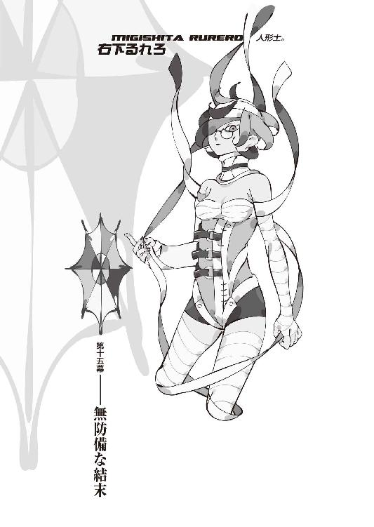
０
材料の足りない判断は飛躍する。
さながら、爆発物のように。
１
十月十五日──土曜日。
絵本さんとの、約束の日だ。
人形士、右下るれろとの──面会日。
京都御苑で、絵本さんと待ち合わせ。
様態が思わしくないというような話だったので、ひょっとしたら今日も面会は無理かもしれないと、可能性を半々くらいに見ていたのだが、絵本さん曰く、
「大丈夫」
だ、そうだ。
「なんとか......話せるくらいまでには、回復......回復、したから。心も一応は、落ち着いたみたい。勿論、まだ、動けないけど......医者として、判断しました。う、噓じゃありません、本当です。ほ、本当だもん......。十分に......じ、十分に、会話は可能です」
「そうですか──じゃあ」
それなら、さしあたっての問題は他にあった。
さしあたっての問題。
至極、現実的な問題。
るれろさんが収容されている、木賀峰助教授の研究室、元西東診療所まで、どういう方法で行くのか、その交通手段──だ。
この場合、べスパもフィアットもまずい。
両方ともかなり目立つ。
目立っても構わないというのならそれでも別によかったのだが──るれろさんと話すにあたってはできる限り隠密行動をしたいところだったし、狐面の男にも、ぼくが頻繁に利用するアシとして、べスパとフィアットは、割れていることだろう。特にべスパは、乗っているところを見られたこともある。目立つ目立たないという以前に、そうでなくともナンバープレートってものがあるからな......。
そう言うと、絵本さんは、「あ、あたしの......あたしのクルマの、助手席に乗れば、いいだけの話......じゃない？」と言った。
考えてみれば絵本さんは、るれろさんをつきっきりで看病しているわけで、そうなると、これまで常にあそこから、あんな郊外から御苑まで出てきているのだから、クルマを使用しているだろうことはわかりそうなものだったが、しかし、絵本さんの自動車というのは、ぼくにとっては完全に盲点だった。なんか......絵本さんとクルマって、水と油という感じがして、イメージが合わなかったのだ。漠然と、タクシーでも使っているのだろうと思っていたけれど......自分で運転していたのか。
ふうん。
「そうなると、帰りも送ってもらうことになりますけど......」
「いい。構いません」
「じゃ......」
お願いしようか。
というわけで──御苑のそばに違法駐車していた絵本さんのクルマのところまで、案内してもらった。
白のメルセデス・ベンツだった。
当然のようにＳクラス。
「............」
「どうしたの......？ 早く、乗って。るれろさん......一人じゃ、や、やっぱりっていうか、その、心配だし」
「あ......はい」ぼくは助手席に乗り込む。「あの......えっと、別に関係ない質問ですけど、これ、絵本さんのマイカーですか？」
「うん......そうだけど？」
「............」
闇医者ってやっぱ儲かるんだな......。
ブラック・ジャック。
じゃなくて、カルチャーショック。
「ん......冷房、きついかな。少し寒いね」
「......ですね」
心配していた絵本さんの運転技術は、お世辞にも上手とはいえなかったが、しかしそれほど圧倒的に無惨というわけでもなかった。許容範囲というか、合格点。無免許とはいえひかりさんの技術と比較するというのはいささか酷というものだろうし、市内を抜けてさえしまえば、あとはただの山道だから、まあ大丈夫だろう。
「ああ......絵本さん」
「な......な、何かな。あ、あたし、何か間違えたことした？ え、えっと、ワイパーは動いてないし......ギアもあってるし......」
「いえ......」
やっぱ精神的に不安定なのは変わらないか。
話しかけない方がいいかな。
でも、一応、言うことは言っとかないと。
「あの、水曜日に──頭巾ちゃんに会いましたよ」
「へえ......え？ 頭巾ちゃん？」
「あ、えっと......」
知らないんだっけ。
ぼくは、簡単に、刀鍛冶古槍頭巾の十一代目と十二代目の関係について、絵本さんに説明した。十一代目の古槍頭巾が今月の初旬に亡くなって、その名を頭巾ちゃんが継ぎ、同時に、《十三階段》の五段目も、頭巾ちゃんが代替となった──と、いうこと。そして──その目的、まで。
絵本さんは感心した風に、「へえ」と言った。
「全然......知らなかったよ」
「絵本さん、十一代目の方の古槍頭巾と、会ったことは？」
「それはある......矍鑠としたお爺さんだったよ」
「それは医者としての見解ですか？」
「ううん......診察したわけじゃないしね。ただの感想。シャーロック・ホームズじゃあるまいし、一目見てばったばったとは、いきません。外科の領分以外については、ちゃんと触診とかしないことには、正確なとこはわからないよ。いい加減なことを言うわけにいかないしね」
「そうですか。確か、九十八って言ってましたからね。単に寿命かもしれません」
「うん......年齢相応に、身体は弱ってたみたい、だから。たまに咳き込んでたから、《診ましょうか？》って言ったんだけど......断られちゃった。き......きっと、あたしのこと、き、嫌いだったんだね......う、うう」
「運転中に泣かないでください......」
まあ、本当に医者は嫌いだったらしいが。
言わない方がいいだろう。
「でも......その、狐さんも、よくわからないこと......するね。その娘......本当に女子高生だったの？」
「ええ。生徒手帳は持ってました。ただ──ほとんど通ってはないみたいですね」あの日だって、そもそも平日だったし。「お祖父ちゃんっ子──でしてね。物心ついてからずっと、十一代目の世話を焼いていた──とのことですね。なんていうんですか、介護って奴ですか」
「老人の介護って......簡単じゃないよ。頭巾さん、元気そうな人だったけど......それでも、普通の子供に......できること、じゃ、ない」
「──かもしれませんね」
その点についちゃ、確かにぼくも見縊っていた。
頭巾ちゃんのことを。
うん、それは認めよう。
「でも──その、彼女自身に、刀鍛冶としての能力は、どうやらほとんどないみたいです。零とまでは言わなくとも、本人も、まだまだ修業中だ、って言ってました」
「......そうなんだ」
「話を聞いていると、どうやら才能はあるみたいですけれど──大成するのは、あと二十年先か三十年先か、でしょうね。それはそれですごいことですけれど、でも──今の時点では、彼女は、何の力も持たない、ごく実際的な女子高生だというのが、ぼくの判断です」
「本当に......わからない。狐さん......どうして、そんな娘を......巻き込むような、こと、するのかな。孤さんらしく......ないっていうか。敵として巻き込む......なら、ともかく......ともかくとして、味方として巻き込むなんて──変」
「他の《十三階段》に秘密にしているところを見ても──ただの人数合わせ、ただの頭数合わせなんだろうと、ぼくは思いますけれどね。いつもの気まぐれでしょう。恐らく──意味なんてない」
「............」
「ひょっとすると、ほだされたってのもあるかもしれませんね──彼女、必死でしたから。《無銘》を手に入れるためならなんでもする──とまで言っていました。本来は──じゃないかな、形の上では、敵であるはずのぼくに、《お願い》すること自体、本当ならやっちゃいけないことでしょう。そういうところがわかってないだけにしても、あの真摯さだけは──月並みじゃないかもしれません」
「でも......狐さん、そんなのにほだされるような人じゃ、ないよ。きみみたいに、優しくはないし、いい人でも......ないと、思う」
「ぼくも優しくないし、いい人でもありませんけどね──絵本さんは何か聞いていませんか？ 十一代目の古槍頭巾がどうして《無銘》を欲しがっていたのか」
「欲しがっていたという話自体、今初めて聞いたよ......ふうん。頭巾さんは、一体何が目的で《十三階段》に入ったのかわからない人だったけど......ちゃんとあったんだ、目的」
「目的......といっていいんですかね。絵本さんは《怪我人を治療するため》でしたね？ 出夢くんは──理澄ちゃんが、狐さんに心酔していたからか。奇野さんも、狐さんに興味を持っていて......濡衣さんは、あるじの命令......ちなみに、濡衣さんのあるじについては、絵本さん、何かご存知で？」
「さあ......狐さんの知り合い、なんだとは思うけど──それも、ただの予測だし」
「ですか。まあ、もう関係ないんでしょうけど......。澪標姉妹は、行動から判断する限り、理澄ちゃんと同じく、狐さんへの心酔──ですね。出夢くんの話じゃ一里塚木の実もそうで、濡衣さんの言う通りるれろさんもそうだとすれば......自分でも言ってましたけど、本当に女性にもてるんですね、あの人......」
ハーレムみたいだな、《十三階段》。
個人の趣味に口を出すつもりはないが。
「そういえば、絵本さんは、女性なのに、そういうのないんですね。狐さんに対する心酔とか、陶酔とか」
「..................」
絵本さんは黙ってしまった。
友達すらできない人に、酷なことを言ったか。
ぼくは話を戻す。
「真心は──正式には《十三階段》とは言えないんですよね。十二人プラス一人って、狐さんも言ってましたから。強いていうなら、ぼくと会うため──ってことになるのかな。となると、残りは──」
えーっと、何人言ったっけ。
数が多過ぎて把握できない。
「あ、宴九段とノイズくんと、時宮時刻か」
「そうだね」
「まあ、初期メンバーの宴九段は、なんとなくわからないでもないですけど......ノイズくんと時宮時刻は、全く予想もつきませんね。頭巾ちゃん──頭巾さんのような、具体的な目的があったんでしょうか」
「わかんないね。いずれきみが話すときに、それは問題になることだろうけど......でも──今の問題は、るれろさんでしょ」
「......ですね」
「今更、あたしが言うのもなんだけど......木の実ちゃんほどじゃないにしても、彼女を裏切らせるのは、結構厳しいと思うよ」
「ええ......濡衣さんにもそれは言われてます」
「きみなら──なんとかなるかもしれないけど」
「どうしてですか？」
「狐さんの、敵だからだよ」
絵本さんはそう言って、口を結んだ。
その真意は、わからなかったが──
質問することは、なんとなく、憚られた。
そんな雰囲気。
ぼくも、黙った。
......ちなみに──頭巾ちゃん。
十二代目、古槍頭巾とは、約束を交わした。
大袈裟に表現すれば停戦条約とでもいうのか。
不可侵条約、というべきかもしれない。
《無銘》。
ぼくは結局、それを頭巾ちゃんに譲ることにした。まだ、頭巾ちゃんの背後にどういう事情があるのかはわからないけれど、やはり、ぼくにとって、《無銘》と呼ばれるその刀子は、それほど必要な凶器であるというわけではない。
欲しい人が持っていればいい、と思った。
狐面の男の言葉じゃないが、優れた武器は持ち手を選ぶ──そうだ。だったら、どう考えても、あの《無銘》に相応しいのは、ぼくじゃないだろう。
ぼくはナイフなんていらない。
気取った言い方をさせてもらえれば、そんなものは心に一本あれば、それで十分というものだ。
ただし──無論、無条件というわけにはいかない。こっちだって当然の責任として、無警戒に彼女の話を信じるわけにはいかないからだ。
そういうわけで──信用取引。
今月の末まで、頭巾ちゃんがぼくに何も仕掛けてこなかったら──そのときは、十一代目が抱えていたという事情を聞くことを絶対条件とした上で、《無銘》を彼女に譲渡することを、約束した。その事情が、ぼくにとって納得いかないものだったところで納得いくものだったところで、それは関係なく──だ。《十三階段》を抜けることは、勿論、前提である。これについては頭巾ちゃんも、元々《無銘》が目的で《十三階段》に加入したのだから、不満はないようだったが──今月末まで期間を置く理由が、よくわからなかったようだ。
そういう条件なら事情を話すから、今すぐ渡して欲しい──と、若者らしい性急さで、ぼくに対して《無銘》を要求してきたが、しかし、今月末というのは、ぼくにとっても一つの妥協点だった。
本来は、ことが終わったら、と言いたいところだった。ことが全て終わって、そのとき、頭巾ちゃんがぼくに敵対行動を起こしていなかったら──と、そういう風に望みたいところだった。
だが、それはできない。
頭巾ちゃんとしては、《無銘》の件に関しては狐面の男の方を頼っても、別に構わないのだから。頭巾ちゃんは要するに《無銘》を手に入れたいだけで、主義や主張などなく、狐面の男に頼るのも、ぼくに頼るのも、ほとんど等価の意味にしか過ぎないのである。
なら──こちらも妥協しなければならない。
妥協点。
それが、今月末──だった。
現在でこそ、真心がこちら側に来たために、状況が狂っているが──澄百合学園での彼の口振りから察するに、多分狐面の男は、先月の争いを前座とし──今月にこそ、決着をつけるつもりだったんじゃないかと、思う。
九月は人が死なず──
十月は人が死ぬ。
九月が好きで、
十月が嫌い。
そう言っていた。
その言を信じるなら──やはり、焦点は今月だ。
狐面の男にとって十月が鬼門だからこそ──
彼は、十月を、決戦の時に、選んだのだろう。
ならば──
最低限、頭巾ちゃんには今月一杯、大人しくしていてもらえれば、それでいい、とすることにした。これが何らかの罠だったとしても、ある程度の期間彼女の動きを封じられるというのなら、その対価として何らかを支払うことは、それほど惜しくはないだろう。彼女が罠を仕掛けられるような、巧妙な人材だったとしたならば──だが。
ともかく──今日で、月半ば。
あと半分、なんとか乗り切ろう。
気がかりも心掛かりも多過ぎるが──保険が利かなくなった以上、そういったやり方を選ぶしかない。
「..................」
保険、か......。
ぼくの方も、あれで──小唄さんからの電話を受けたところで、計画が狂った。元々、そんなに深く期待していたわけでもないのだが......。
攻撃と防御と保険。
防御はともかく──攻撃、だ。
まあ、頭巾ちゃんがぼくとの約束を守ってくれたとして──他の《十三階段》と何ら繫がりがない以上、頭巾ちゃんには《十三階段》を抜けた後、ぼくに協力してもらうよりも、大人しく故郷に帰ってもらった方が、いいだろうというのが、普通の考え方だ。となると、今後ぼくは、どういった動きをとっていくべきか......。真心のためには、なるべく早く時宮時刻と会いたいところなのだが......。
いや、余計なことだ。
今の時点では──余計なことだ。
余計なことを、考えるな。
今は、右下るれろに──集中しろ。
人形士、右下るれろ──
絵本さんや、頭巾ちゃんのように行かないことは、誰に言われるまでもなく、分かっている。狐さんの魅力に、そのカリスマに、惹きつけられている人物──
異能者。
だが、やるしかない。
逆に言えば、重傷を負っていてまずこちらに手出しできない──会話することしかできない彼女を最初に相手にすることによって、今後の、一里塚木の実や澪標姉妹を相手にするときの、予行演習になるとも言える。どうしようもなく本番である以上、演習という言葉は相応しくないが──少なくとも、一里塚木の実や澪標姉妹を相手にするよりは、まだいくらか、るれろさんは難易度は低いはずだ。
まあ、味方にはできないまでも──最低限、るれろさんが真心にかけた、鎖だけは──解いてもらわなくてはなるまい。
それだけは。
「......真心ちゃんは、どうしてるの？」
絵本さんが、不意に、訊いてきた。
多分──気になっていたのだろう。
医者として。
「変わりないですよ──寝たり起きたりの、繰り返しで。大人しくしてりゃ、一日三時間くらいは、起きていられるみたいですね」
「そっか......」
「どうも、この数日で、ぼく、検証してみたんですけど──要するにあれは、意識の密度の、問題みたいですね」
「密度？」
「ええ。まあ、お医者さんを前に適当なこと言ってるみたいでアレですけれど、つまり──意識が緊張状態にあるのを《高密度》だと考えて、弛緩状態にあるのを《低密度》だと考えれば──たとえば、怒ったり暴れたり、意識が興奮すれば、反比例して活動時間が短くなり──逆に、縁側でお茶でも啜りながらのんびりしていれば、比例してそれだけ長い時間、活動が可能──って感じです」
「へえ......」
「一日に使える《意識》の絶対量が決まっている──とでも言うんでしょうかね。時宮時刻の操想術──《時宮》っていうのは《恐怖》を司るって、哀川さんからは聞いていましたけれどね......成程、確かに恐怖ではありますよ。どんな夢みてんだか知りませんけれど、寝てるとき、真心の奴──えらく安らかそうなんですよね」
「......一番、解いてあげたい鎖だね」
「ええ──るれろさんの《人形士》としての力が、どの程度真心を縛っているんだかわかりませんけれど──それは《肉体》を縛っているんでしたっけ？ つまり──活動そのものを封じているっていう理解で、いいんですか？」
「一応、そんな感じかな......詳しくはるれろさんに直接訊いてみて。人間を人形にする能力──とあたしは、その、聞いているけど......詳しいことは、わからない」
「《右下》っていう苗字は、《殺し名》にも《呪い名》にもありませんよね？ それとも、《匂宮》に対する《澪標》のように、どこかの分家ってことなんでしょうか？」
「さあ......違うと思うけど」
人形を操る者──ではなく、
人間を人形にする者──か。
人形遣いでなく人形士。
なかなかどうして──複雑だ。
「......えっと、いっくん。あ、あの、こ、これは余計なお世話で、鬱陶しいだろうとは思うけど......その、一応、忠告、忠告っていうか、助言っていうか......」
「聞きますよ」
「う、うん。あのね、るれろさん......あの怪我なんだから、まさか何もできないとは思うけど──何もできないはずなんだけど、でも、それとなく、万が一のことを考えて、用心だけはしといた方がいいと、思う」
「......どういう意味です？」
「人形にされないよう──気をつけて」
絵本さんの言葉に──ぼくは、頷いた。
人形──
心を持たない、人形。
それは──酷く。
胸を締め付けるような、言葉だった。
「ぼくは人形じゃない」
絵本さんには聞こえないよう──
自分にも聞こえないような声でぼくは呟いた。
２
木賀峰助教授の研究室──考えてみれば、この表現も今となってはもう過去形でするべきなのかもしれないが、表向きには彼女の死は公表されていないので、まだ形式上そういう扱いになっているようだ──の二階、階段に近い側の部屋に、るれろさんは寝かされていた。
明らかに外部から持ち込まれたと思われる機械類器具類が、そう広くない部屋を埋めつくすように設置されていて、るれろさんの身体のあちこちに接続されていた。元々この研究室にあった治療器具では、るれろさんの治療にあたっては、やや不足していたのか、それとも絵本さんのこだわりなのか、ぼくにはわからないけれど。
どちらでも、いいけれど。
部屋──まあ、元々病室として使われていた部屋らしいので、本来の役割を取り戻しているともいえるが──部屋の中には、ベッドの上のるれろさんの他には、ぼくしかいない。
絵本さんは、同席していない。
医者の役割としては彼女にはこの場にいてもらった方がぼくとしてはありがたいし、また本人もそれを望まなかったわけではないのだが、だからといって彼女が同席すれば──自然、絵本園樹が裏切り者であるということが、るれろさんに露見してしまう。
それはいかさままずい。
まずいだろう。
だから形の上では、絵本さんが留守にしている隙を見計らって、ぼくが建物の中に勝手にこっそりと忍び込んだ──という状況を、猿芝居ながら、演出することにした。絵本さんのベンツから、適当な場所で降ろしてもらって、そこから徒歩で研究室にまで向かい、絵本さんが出るときに締めたのだろう鍵は、当然のように、今となってはもうすっかりお馴染みになった、錠開け専用鉄具を鞄から取り出して、開けた。
一時間──と言われている。
一時間以上の面会は、禁止だと。
一時間で、絵本さんは帰ってくる。
それまでに──だ。
しかし......
右下るれろ──人形士。
「なんだい......全く、やれやれどうして、あんたかい──《いーちゃん》」
彼女は──
まるでぼくの来訪をあらかじめ予測していたかのように、ぼくを視界に入れて──そう言った。
包帯とギプス、コルセット、点滴などの治療機器でベッドに縛り付けられているような状態のるれろさんは、一人では身じろぎもできず、首を動かすことすらできないので──その視界には、ぼくの方から、入っていかねばならなかったが。
その視界すら──半分だ。
左眼だけ。
「こんな姿で失礼するさ──何せ、下の世話まで他人の手を煩わさなきゃならない有様でね──《いーちゃん》。あんたみたいな可愛いナリした少年の目にゃあ、さぞかし、惨めに映ってるだろうさ──見られたものじゃないだろう」
「そんなことは──ありませんよ」ぼくは言いながら、るれろさんの視界の中心になる位置を推測し、そこへ移動して、後ろの壁に背中を凭れかけさせた。「ぼくは、女性の怪我している姿は、嫌いじゃありません。美しい──と、思う」
「はん──よく言うよ」
軽くいなす感じの、るれろさん。
重傷患者だとは思えない、気丈さだった。
「そうでなくとも、ぼくも結構、怪我の絶えない方でしてね。あなたに対しては、少なからず──親近感がある」
「勝手な同情は気分が悪いさ──用件があるなら、とっとと言っとくれ」
さばさばした感じの──
投げやりと言ってもいい、るれろさん。
「普段ならいざ知らず──今のあたしは、文字通りに手も足もでないさ。赤子の手を捻るよりも、簡単に殺せるだろうよ──いや、その赤子の手によってだって、今のあたしは殺されうるだろうさ。殺すならさっさと殺せばいい。それとも、甚振るのが好みかい？ そうは見えないけれど──それならそれで、別に構いやしないよ。いいようにするさ」
「......話を、聞きたいんですよ」
ぼくは──るれろさんに吞まれないよう気をつけながら、言葉を口にする。さすがは《十三階段》、こんな状態でも──ただの精神力だけで、ぼくを圧倒してくる。
逃げ出したくなるような雰囲気が──ある。
なまじるれろさんの前に、頭巾ちゃんみたいな能天気な普通の女子高生を相手にしていただけに、その差異は激しい。
だが──
確かに、普段ならいざ知らず。
言葉だけの、勝ち負けなら──
勝ち負けそのものを、無効にしてみせる。
なかったことに、してみせる。
「あなたの──話を、ぼくは聞きたい」
「......はん。なんだい。何かと思えば──裏切りのお誘いってわけかい。くだらないさ──失せな」
「............」
取り付く島も──ない、か。
予想通り、だが。
「あなたに──」ぼくは言う。「あなたに裏切ってもらうかどうかは──ぼくの決めることじゃありません。ただし、あなたとどんな話をするのかは、そして、ぼくがここから立ち去るかどうかは──ぼくが決めます。あなたに指図される憶えは──ありません」
「なら──さっさと言いたいことをいうがいいさ」と、つっけんどんなるれろさん。「どうせあたしにゃ、あんたの口を封じることなんてできないんだからね──だけど、勘違いしなさんなよ。あたしゃあ大して名も売れていない小悪党だけど──それでも通すべき筋くらい、わかってるさ」
「大した忠誠心ですね。羨ましいですよ。ぼくはこれまで十九年、忠誠心って奴にゃあとんと無縁でしてね──いや、さぞかし気持ちのいいものだと思うんですよ。無条件に無作為に人を信じる、っていうのは」
「............」
「信頼って、する方は気持ちいいもんなんですよね──それは想像できます。ただ──あまりにも一方的な信頼は、重い」
「......何が言いたいのさ。思わせぶりだね」
「いや、これはただの経験談です。親しみが深まるかと思って、言ってみただけで、言いたいことなんて別にありません。お互いにあまり長時間話せるわけじゃないでしょうから──さっさと本題に入りましょうか。その前に、喉は渇きませんか？ そこの吸い飲みで、渇きを潤すんですよね？ なんでしたらぼくが──」
「やめておくさ。この通り、口は動くんでね──あんたに嚙み付くくらいのことは、できるのさ」
「そうですか。では、そのように」
軽口じゃ──ないな。
ものすごい量の敵意を、ひしひしと感じる。迂闊に近付いたりすれば、身体のどこを食いちぎられるかわからない。
「まず、ぼくがあなたに教えて欲しいのは、るれろさんの人形士としての能力──の正体って奴ですね。既にある程度、部分的に推測はできているんですけれど──まだ全体像はぼやけていまして」
「真心──」
「............」
「真心ちゃん。あんたのところに──いるんだろ？」るれろさんは、先手を打つように、ぼくの問いを無視して、言った。「あたしらの鎖から無理矢理に逃げて、向かう先と言っちゃあ、あんたのところしかないからね──」
「......まあ、とりあえずはご名答ということにしておきましょうか」ぼくはるれろさんの言葉を受ける。「ええ。今の時点で、奇野さんと時宮時刻と、そしてあなたが、真心に何らかの束縛を加えていることは、既に事実として判明しているんです。で──ぼくとしては、その鎖を解いてあげたいと思っている。裏切れとは決して言いませんけれど、どうですか？ その辺について、ぼくに協力してもらえませんか？」
先手を打たれたところで──打ち返す。
切り込む。
まるで無策かのように、腹を晒す。
「......はん」
るれろさんは、あまりにも真っ直ぐなぼくの要求に──しばし、絶句し、そして、その後、鼻で笑うようにした。
「確かに──あんたのいうことは、わからなくもない──けれどね。鎖ってのは、人を縛りもするけれど──けれど、人を守りもするってことを、忘れてもらっちゃ、困るさ。動物園の虎が、檻を破って街に出たら、どうなるさ？ 撃ち殺されるに──決まってるさ」
「......それは詭弁でしょう」
「あたしらの世界に限った話じゃあないさ──たとえば一般的な社会でも、《法律》ってえ《鎖》がないと、平和な状況が成り立たないだろ？ 必要なのは常識なのさ──」
「常識？ 似合わない──言葉ですね」
「知ったような口を利くんじゃないよ若造──いや、ここは、それでこそ狐さんの敵さ──とでも、受けるところなのかもしれないさね」
「あなた──真心に何をしたんです？」
あの日。
澄百合学園で聞けなかったことを──
聞きたくて、訊けなかったことを、
ぼくはるれろさんに訊いた。
「くだらないさ」
と、るれろさんは言う。
「人を魔女か化け物みたいに言うじゃないさ──《いーちゃん》。あたしらのやり方なんてのは、至極常識に従った上での非常識でしかないのさ──むしろ化け物なのは、あの子の方じゃないのよ」
「......否定は──できませんね」
卿壱郎博士が玖渚を化け物呼ばわりしたのとは、次元の違う話だ。あの体育館で見せた真心の動きは──その名に、十分に値する。
玖渚が哀川さんを人間と呼ぶのと、同じ次元の話。
残念ながら。
けれど──
それだって、真心の責任ではないのだ。
「でも、《呪い名》の《時宮》と《奇野》と同列に並べられるべき存在としてあなたの名が挙がっている時点で、あなただって──それは似たようなものでしょう」
「そう言わないで欲しいさ──《呪い名》なんざと並べられるのは、あたしだって不本意さ。......まあ、どちらかといえば、あたしのやり方ってえのは、頼知の《毒》よりはずっと、時刻の旦那の《術》に近いのかもしれないけれどね──ねえ。ねえねえ、《いーちゃん》」
「なんですか？」
「あたしはさ──真心ちゃんを調教したというそれだけで、もうこんな有様になっているのさ──それだって、あの子の全力というわけじゃない。そもそもあんたは、あの子があの人類最強を鎧袖一触したのを──見たんじゃないさ」
「............」
「それでも──鎖を解こうなんてのは、あんたのエゴでしかないと、あたしは思うけどねえ。一匹の羊のために九十九匹を犠牲にするのは、正しいばかりじゃあないさね。美しくはあっても──正しくはない」
「実際......その通りですよ。でも──見ていられません。あいつが、他人の鎖でがんじがらめにされている絵なんてのは──もうこれ以上、みたくないんです。あいつは──ずっと昔っから、そうだったんですから。その所為で、一度は死にさえした。そんな真心は、そろそろ解放されても──いい頃です。橙なる種という、自身に冠された呪縛から逃れていいはずです。それ以上に──」
ぼくは言う。
「狐さんも含めて......あなた達に、真心を好きにしていい権利なんてない」
「狐さんは──言ってみればあの子の生みの親みたいなもんじゃないさ。本人は《孫》だって言っていたけどね──」
「親でも祖父でも、やっていいことと悪いことがあるでしょう。あれは確実に──どう考えても、悪いことです」
「そんなこと、人類最悪に向かって言う言葉じゃないさね」るれろさんは微かに笑う。「たとえば......っていうか、仮に、万一って話だけど......《いーちゃん》。あたしと──時刻の旦那、それに頼知、その三人からの制限がなくなったとして──あんたに、真心を制御できるってのかい？」
「何度も考えましたよ、それは──でもね。ぼくに制御できるかどうかはともかくとして──ぼくがあんな状態になった真心の鞘として機能するかどうかはともかくとして──しかし、それでも、あなた達が橙なる種、想影真心を制御しているというこの状況は、どう考えても、あまりいいものじゃあありませんよ。あなた達が真心を制御するというのなら──どう考えても、誰も制御できない方が、ずっとマシでしょう」
「......性格に似合わず正義漢なんだねえ」
「そんなんじゃないです......真心を制御するのは、あなた達でもぼくでもなく、真心自身であるべきだっていう、ただただ当然のことを言っているだけです」
「理想論だね。過ぎた力が災いを招くということも、また当然のこと──さ」
「ねえ──るれろさん」
ぼくは、話題を切り替える。
ここら辺が、切り替えどきだろう。
真心のことは、また最後だ。
「るれろさんは、一体どういった経緯で、《十三階段》に加入したんですか？」
「............」
るれろさんは、口を一文字に閉じて、ぼくの質問に対して拒絶の姿勢を示す。
構わず、ぼくは続けた。
「正直、ぼくにしてみればこれはそんなに興味のあることじゃない──それこそなんだって同じことですよ。ただそれでも、あなたが世界の終わりを、物語の終わりを望んでいるのかどうかは──知っておきたい」
「人生と同じさ──」
るれろさんは言った。
「──いつまでもだらだら生き永らえているよりは、ぱぁっと、花火みたいに散ってしまうのも、またありじゃあ、ないさ」
「その花火とやらに巻き込まれる方は──たまりませんよ」ぼくは言う。「花火の先を他人に向けてはいけません──って、注意書きにもあるでしょう。子供だって知っている。あなたは、自分を裏方だといって、自分のやったことは、真心の調教だけだと思っているかもしれない──けれど違う。ぼくの周囲で、ぼくの大切な人達が傷ついたのは──全部あなたの責任だ」
「............」
「浅野みいこ。闇口崩子。石凪萌太。匂宮出夢に匂宮理澄。哀川潤──想影真心、そしてぼく。おっと、それから、真姫さんのことも、勿論忘れちゃいけない。全員──あなたのせいで、深く深く、傷ついた。もう二度と癒えない傷もある──もう二度と戻ってこないものもある」
「......生憎、そんな陳腐な刺激で──痛むような良心の持ち合わせはないさ。今更ね。十年前なら──そんな幼稚な諭し方にも、少しは効果もあったかもしれないけれど──」
こっちはもう大人なのさ。
右下るれろは、そう言った。
「自分が加害者であるということくらい──わかっている。生きてるってのは、それだけで他人を傷つけるもんなのさ──だったらあたしは、せめて、何かのために、誰かのために──誰かを傷つけたいと、そう思う」
「......大人にしちゃあ、えらく勝手な意見です」
「多かれ少なかれ、誰だってそうさ──あんただって、そうさ。人のために人を傷つけ、人のために人に傷つけられ、とにかく四六時中、徹頭徹尾、人を傷つけ、人に傷つけられる。だったら最後には同じことさ。所詮、どこかで辻褄があい、プラスマイナス零になるよう、世界はできているのさ──」
バックノズル。
ジェイルオルタナティヴ。
世界の──法則。
「世界なんてな、端から零なのさ」
「............」
「だったら、終わって──いいだろう」
ふうん......
これは少し、見込み違いが──あったな。
見込み違い。
るれろさんは、ただひたすら単純に、狐面の男に心酔しているだけじゃあ、ないというわけか......。勿論後付けとしての心酔もあるのだろうが、それは前提というわけじゃない。それなりの下地があった上で、狐面の男を肯定している、ということのようだ。となると──るれろさんに対する攻め方を若干、変更しなくてはならない。
「あたしは一人さ」
るれろさんは言う。
やっぱり、投げやりな感じに。
「《時宮》や《奇野》のように、徒党を組んでなんていない──《殺し名》だの《呪い名》だの、そんな連中とはまるで違う──生まれたときから、ずっと一人さ。木の股から生まれ、石をかじり、泥を啜って生きてきた」
「......るれろさん」
「人形士という肩書きは、生きるために手に入れたものさ──人を利用して人を傷つけて、生きてきた。誰のためでもなく、自分のために。自分のためだけに。......どれだけ虚しい人生だったか、あんたにわかるかい？」
るれろさんは──
左眼だけで、ぼくを睨む。
「あんたがどんな人生を送ってきたかは、狐さんに聞いて知っている。そりゃ大変な人生だったろうさ。玖渚機関に──ＥＲ３システム。玖渚友に、想影真心。大変だったろうさ──でも、あんたは、それでも──他人のために、動けたろう。誰かのために、生きることができたろう？」
「............」
「あんたは確かに忠誠心とは無縁だったかもしれないけれど──それでもあんたの周りには、ちゃんと人間がいたんだろうさ。あたしの周りにいたのは──敵だけだ」
「──敵」
「向かうところ──敵だけだったさ」
敵だけで──敵だらけ。
わからなくも、ない。
どれだけ虚しい人生だったか──
わかるような、気もする。
るれろさんは、否定するだろうが──
確かにぼくの周囲にいたのは、
人間だから。
それでも、ぼくには、彼女の気持ちが、わかる。
だからこそ、わかる。
「生きてんだか死んでんだかわかんないような──釣り合いのとれた、そんなバランスのいい感じが、強固で崩れそうもない均衡が、常にあったさ。でも──狐さんが、その均衡を、崩した。いともたやすく、あっさりとね」
「《十三階段》に入ったのは最近でも──狐さんとの付き合い自体は、そんな浅いものじゃない──みたいですね」
「その通りさ」
「なるほどね」
「狐さんのために──存在していたいのさ。あの人はあたしみたいな小悪党に、生きているに足るだけの理由をくれたんだ。あの人のためなら──誰を傷つけても構わない」
「......自分さえも？」
「自分さえも」
はっきりと、答えた。
これだけの重傷、大怪我を負いながら──
そう答えた。
揺るがない。
びくとも──しない。
「るれろさん......あなたから見て──狐さんっていうのは、どういう人なんですか？」
「だから──最悪さ」と、るれろさん。「あんな自分勝手で前向きな人──そうはいないさ。まして、それに相応しいだけの内面を持ち合わせていると、なればね──」
「あなたは人間を人形にしてしまうらしいですけれど──だったら、狐さんを人形にすることは、できないんですか？」
「そんなこと、できてもやらないさ。生きている姿こそが美しい。野生動物を剝製にしても──意味なんてない」
「............」
「と、いうか──そういうことは、やっちゃいけないような気が──する。否、そうでもない......そうですらない。そんなことをやっても──やらなくても、多分、同じことだから──さ」
「まあ......言いたいことは、わかりますけどね。でも──ぼくはあの人のことが、怖いですよ」
「怖い」
「ええ。怖い──本当に怖い。あなたは──あなた達は、狐さんのことが怖くないんですか？ まるで世界を手のひらの上でもてあそんでいるような、あの人のことが。あの人自身は、謙虚に、運命に流していただいている──なんて言っているけれど、ぼくにはあの人は、運命を玩具にしているようにしか見えない。だから──怖い。ぼくのこういう見解は、るれろさんから見て、どのくらい的外れなものなんでしょうね？」
「......少なくともあたしは、狐さんのことは別に、全然怖くはないさね。そばにいることで──安心できるさ」
「安心──」
恐怖の──対義語に近い。
るれろさんは「もっとも」と続ける。
「《十三階段》の中にゃあ、狐さんのことを怖がっている奴も、いるのかもしれないね──」
「誰ですか？」
「宴九段」
意外な名前を、るれろさんは口にした。
てっきり、ノイズくんか、精々絵本さんあたりが来るだろうと思っていたぼくは、すっかり意表を突かれた形になった。
「恐怖を司る《時宮》、時刻の旦那が言ってたことだから、まあそれなりに信頼はおける話なんだろうさ──宴は狐さんを、えらく怖がっている──と」
「宴──九段」
そういえば──
出夢くんが言っていた。
宴九段は、ぼくに似ている──と。
それは──そういう意味だったのか？
裏切りを繰り返し、しかし今もなお《十三階段》にあり続けている、まだぼくの前に姿を現していない、謎に包まれた人物──しかし、るれろさんが言ったその人物像は、ぼくが宴九段に対し漠然と抱いていたイメージと、随分違う。
「あいつは、怖いからこそ──狐さんに、くっついたり離れたり、してるんだ──ってことらしいさ。あたしにゃあとてもそんな風には見えないんだけどね。けどまあ......そういう感覚は、わからないでもないさ。あれさね、怖いもの見たさ──って奴なのかね」
「怖いもの──見たさ」
「中途半端に知ってしまった恐怖は、最後まで確認して、本当は怖くないことを知っておきたい──ものだからね。もっとも、それで本当に怖かった場合──どうなっちまうのか、そんなの、わかりゃしないけどさ」
「裏切りが──確認作業ですか」
「時刻の旦那は、宴のことを《臆病者》と表現したさ──もっとも、面と向かってそんなことを言われたところで、宴の奴はまるで何食わぬ顔だったけどね......怖いっていうなら、あたしには宴の方がよっぽど怖いさ」
「ですか」
「宴九段。元を辿れば、狐さんの《敵》候補の筆頭だったというだけのことはあるさ──はん。そういう意味では、本音を言えば──あたしはあんたのことも、怖いと思っているよ。何とも思って、いなくはない。なればこそ──あたしには、あんたを狐さんが《敵》に選んだ理由がよくわかる。この身をもって──よくわかる」
「──怖いっていうなら、どうかぼくと敵対しないでくれませんかね？ 本来──争いごとは好きじゃないんです。暴力沙汰は勿論、口喧嘩だって──好きじゃない。ぼくもまた、人とぶつかり合うことなく生きていきたいと思っている。根っこのところじゃ、臆病者なんですよ」
「あんたに対する恐怖よりは──狐さんに対する忠誠心の方が上さ」
「でしょうね」ぼくは頷く。「でも、まあ、ぼくのことはさておくとしても、まず──」
と。
話を真心のことに戻そうと──
真心にかけられた鎖のことに戻そうとしたそのとき、ふと、なんとなく眼をやった、窓の向こう側に──
ぼくは戦慄した。
「え......？」
と、思わず声が漏れる。
窓の外──この角度からは、駐車場が見えた。
その駐車場に、
一台のクルマが──駐車しようとしている。
そのクルマには、見覚えがある。
ツーシーターの真っ白いポルシェ。
そして──運転席。
運転席でハンドル操作しているのは──
「......西東天」
狐面の──男だった。
馬鹿な......どうしてここに？
瞬間、一気に、混乱状態に陥る。
「......？ どうしたさ」
るれろさんの位置からじゃ──るれろさんの姿勢じゃあ、それが見えるわけもないから、ぼくが急に言葉を止め、表情を変えたことに対し、怪訝そうにする。しかし──それに対しても、ぼくはコメントできない。
なんで......？
まずい──じゃないか。
これは、まずい......どう考えても──今ここで狐面の男と鉢合わせするわけにはいかない。ぼくはまだ、《十三階段》の内、るれろさんを合わせても三人としか、接触できていない。こんな中途半端な段階で、狐面の男と会うわけにはいかないのだ。
絵本さんは──いない。
窓から視認しうる範囲内に、絵本さんの白いベンツは見当たらない。
彼女が見つかったわけではないのか。
じゃあ、ただの、偶然か？
偶然──この時間に、ここに来た？
狙い澄ましたかのように？
計ったかのように？
謀ったかのように？
......運命のように。
物語の──ように。
「............っ」
八月も──狐面の男とは、この研究室で《鉢合わせ》することになったけれど──あのときはまだ、狐面の男はぼくに多少の興味を持っていた程度で、敵視まではしていなかった。
否──
ぼくを敵と定義したのが、ここなのだ。
だったら尚更──なればこそ。
ここで、あの人と会うわけにはいかない。
今、ここで、だけは。
今は──まだ。
しかし、とはいえ......どうする？
出入り口は──正面玄関のみ。
裏口があったとしても──建物の構造上、裏口がないわけがないのだが、どこにあるのか、ぼくは知らない。今から探している間に、狐面の男は研究室の中に這入ってくるだろう。
窓の外。
駐車を終えて、狐面の男がポルシェから降りるところだった。
狐の仮面──着流しに下駄。
涼やかな──ほっそりとしたシルエット。
助手席に誰かが乗っている風はない──
一人だ。
一人で、彼はここに来た。
狐面の男は、そのまま、特に寄り道をする風もなく、建物の玄関口へと、歩み始める。駄目だ、もう間に合わない。
もう建物の外に逃げることは──できない。
まさか窓から飛び降りるわけにもいかないし......どうする？ どこかの、たとえばシャワールームにでも隠れるか？
......駄目だ。
馬鹿げたことだ、そんな風に一時凌ぎ的に隠れても──るれろさんがいるじゃないか。ぼくがここに来ていることを、狐面の男が知るはずがない──という前提に立ってものを考えれば、狐面の男がここに来たのは、るれろさんに会いに──という目的があってのことだと判断するのが妥当だ。あるいは、それは絵本さんなのかもしれないが......だとすれば、どちらにしたって、シャワールームに隠れれば、その時点では狐面の男に見つかることはないだろうが──るれろさんがそれを暴露してしまえば、同じことだ。窓から飛び降りても、それは一緒だった。
ぼくの問題だけならそれでもいい。
けれど──
下手をすれば絵本さんにも累が及ぶ。
それは──避けなければ。
「............」
ぼくは、るれろさんの疑問そうな瞳を無視して、床に置いていた鞄を探る。鞄の中には、錠開け専門鉄具の他にも、あの日、澄百合学園に持っていったあれこれが、そのままに入っている。あの日とは状況が違うとはいえ、ぼくとしては当たり前の用心だ。当然、ぼくの上着の下にはあの《無銘》も、ホルスターに入って装備されているし──
ジェリコも忘れることなく、持ってきた。
ぼくはそれを──るれろさんに示す。
「......なにさ。結局──最後は暴力に訴えようってわけ？」るれろさんは軽蔑したように言った。「いいさ、やりなさいよ──だけどあんたは、あたしの肉体を殺しても──精神までを殺すことはできなかったってことさね」
肉体は屈伏しても、心までは。
るれろさんはそううそぶいた。
「......誤解しないでください──まるで的外れだ。ぼくだって本来、こんなものを出してくる気はなかったし、今だってなるだけ使いたくないと思っている。だから──あなたにお願いしたい」
「はあ？ 何を言って──」
「ぼくのことを、決して話さないでください。それ以外だったら──何を話してもいい」
そう言って──ぼくは素早く、躊躇なく、るれろさんが寝かされているベッドの下に、潜り込んだ。
人間が一人入り得る、ぎりぎりの、本当に隙間のようなスペースで──埃っぽくて息苦しい。床に張り付いた形になることで、この建物の全体の音が、よくわかる。
ぎしり、ぎしりと。
誰かが──歩いている。
勿論、狐面の男だろう。
階段を、昇る音。
この部屋に──近付いてくる、音。
さすがに、るれろさんも気付いたようだった。
「......あんた」
「下からあなたを狙っています──でも、撃たせないでください。どうか──ぼくのことだけは、話さずに」
「............」
返事はない。
その眼の色も、ここからじゃあ窺えない。
不安だ。
一時凌ぎというなら──
間違いなくこれこそが一時凌ぎだろう。
もう一言、るれろさんに念を押そうとする。
しかし、もう間に合わない。
ドアが──開いた。
ぎしり、と。
ぎしりと──床が、軋む。
音が、する。
「よう──るれろ」
第一声──
それが狐面の男の、第一声だった。
るれろさんが、息を吞むのが、わかる。
伝わってくるようだった。
ぼくは自然、呼吸を潜める。
落ち着け──気付かれるわけがない。
狐面の男は、その存在や性格はともかくとして、能力としては、肉体的な能力、戦闘面に関しては、ど素人も同然だと、哀川さんが言っていたじゃないか──こんな風に、こんな想定外の位置に隠れている人間を見つけることなど、できるわけがない。
そう自分に言い聞かせるも──
心臓の鼓動は速まる一方だ。
如何に呼吸を潜めても、
心臓のどきどきが、届いてしまいそうで──
「......どうも、さ。狐さん──」
るれろさんは──緊張した感じに答える。
あの体育館では狐面の男に対しても、蓮っ葉な感じのるれろさんだったが──考えてみれば、るれろさんと狐面の男が、二人きりで話すのを聞くのはこれが初めてか。否──るれろさんに限らず、狐面の男が、どんな風に《十三階段》に接しているのか──ぼくは今、初めて知ろうとしている。
ベッドの下。
ベッドの下からの視点では──狐面の男の、足しか見えない。着物の裾と、足だけだ。けれど、それだけでも、別人と見間違えるわけもない。ここにいるのが狐面の男であることは──直感をもって断言できる。
「ふん。ここにはもう二度と来ることはないと思っていたがな──まあ、止むをえまい。朽葉がいなくなって──停滞していた時間もようやく時を刻み、予定調和に崩壊していっていると見えるが──いや、そんなことはどうでもいいか。調子はどうだ。るれろ」
「......見ての通り」
るれろさんは、狐面の男に答える。
「醜い姿を──晒してるさ」
「何が醜いものか。それは俺のために負った傷だろう。それが美しくなくて何が美しいものか。今のお前の姿は、この上なく──崇高だ」
「......よく言うさ」
るれろさんは──とりあえず、ぼくのことを話す様子はなさそうだったので、ぼくは胸を撫で下ろした。
るれろさん......。
「るれろ、自分を誇れ。お前はお前の役割を果たしたではないか──それについては誰に恥じることもない。俺のために傷ついた数の分だけ、お前は美しくなる」
......うーん。
ぼくと同じようなことを言っているにも拘わらず、さすがに、なんていうか、心得ているよな。年の功なのか、それとも昔からそうなのか、知らないけれど。
「そろそろ、お前の傷も、喋れるくらいまでには癒える頃だと思ってな──園樹に聞いたわけではなく、俺の勝手な見立てだが。そういえば園樹がいなかったな。どこかに出ているのか」
「ええ──個人的な用事があるとかで」
「『個人的な用事があるとかで』。ふん。奴のプライベートにはできれば口を出したくないが、しかし全く興味がないといえば噓になるな。そうか、成程ね──玄関が開け放しだったぞ。恐ろしく神経質なタチの絵本にしては、案外抜けている。怪我人もいるというのに、随分と無用心だな」
「そうさね──その通りさ。こっちは身動き一つできないというのに──」
「まああのドクターは、いつものことだ。気にしても気にしなくても──同じことだな」
「相変わらずだね、あんたは──あんなことがあったというのに」
「真心のことか......ふん」
狐面の男は言葉を止める。
なにやら、考えているようだ。
「あれから五日か......寝ていたお前には実感の持てない話だろうが、こっちは随分と慌しかったぜ。少し、近況を説明してやろう」
「いや......別に、そんなこと、話す必要なんてないさ」るれろさんは明らかに、ぼくを気にした物言いをする。「心配は──してないさ。あんたのことだ、どうせうまく立ち回って、処理してんだろうさ──ここにあたしなんかを見舞いに来る余裕ができたってだけで、十分理解できるさ」
「......確かに、そういう言い方をすれば、そうだろうな。そうかもしれない。しかし──処理しなければならないような状況が生じたと言うだけで、俺にしてみればかなり決定的だぜ。まさか──あんな唐突なタイミングで、真心が逃げ出すとは、露ほど思っていなかった」
「あたしの──せいさ」
るれろさんは言う。
「あたしの力が、及んでいたら──時刻の旦那が場を離れた程度じゃ、逃げ出す隙は生じなかった」
「時刻がいたところで、それは怪しいところだがな。それをいうなら、やはりあの体育館さ。お前が予定通りに現れていれば、真心は俺の敵──俺の敵を認識できなかった。根本にあるのは、根本にある計算違いは、お前の時間へのルーズささ」
「......申し訳ないさね」
「構わんよ。どうせそんなの──どちらにしたところで、同じことだ。あのとき逃げ出されなかったとしても、真心が俺の敵を認識していなかったとしても──いずれ、同じことが起こっていた。ならば早い方が、対策が打てていいというものだ。抱えていた問題が表面化したという意味ではな」
相変わらず──前向きだ。
無駄に前向きだ。
「さて、現状報告をさせてもらうぜ、るれろ」
狐面の男は言う。
さっきるれろさんが《必要ない》と言ったことなど、まるで聞いていなかったかのような物言いだった。
恐るべき自己中心的視界。
まあ──ぼくとしては、ありがたい。
狐面の男が現状をどう捉えているのか、知れる。
心臓の鼓動も──徐々に、静まってきた。
落ち着いて。
冷静に──狐面の男の言葉を待つ。
「お前はどこまで知っているんだったかな──濡衣が《十三階段》を抜けたのは、知っていたか。じゃあ──どうだ、頼知が死んだのは、知っているかな」
「............っ！」
るれろさんが──声なく、驚いたのが、振動となって、ぼくにまで伝わってきた。
知らなかった、らしい。
多分、患者......るれろさんの精神状態のことを考えて、絵本さんが伏せていたのだろう。
「なんだ。知らなかったのか」
「別の場所で治療を受けていると──聞いてたさ」
「そうか──まあ、残念だった」
「............」
奇野頼知の死。
こともなげにそれを済ませる狐面の男に──
再び沈黙する、るれろさん。
両者の心中は、計り知れない。
何を思っているのだろう。
「惜しい奴をなくしたよ。《殺し名》や《呪い名》の連中は人前に姿を現すこと自体が貴重だからな、本心からそう思う」
「頼知は──苦しんだか」
「苦しんだろうな。出夢と同じだよ──腹をぶち抜かれた。なんだろうな、真心の奴、トラウマでもあるのかな──相手の腹をぶち抜くのが、殊の外お気に入りらしい」
「..................」
「そう落ち込むなよ。お前の責任じゃない。それに、あの真心を向こうに回して、お前が無事にあること自体、既に奇跡みたいなもんだぜ。まずはそれを喜ぶことだ」
「......そういう風には──思えないさ」
「まあ、そうかもな。......まあ、俺のミスでもあるさ。真心のことを──甘くみていた。澄百合学園の体育館で、あいつ、四人の内一人しか──殺せなかっただろう？ 実を言うと、俺はあのとき、四人とも殺されていても、それはアリだと考えていた。だが──死んだのは匂宮出夢一人で、闇口崩子、石凪萌太、哀川潤は──生き残った。それも、ほとんど、大した怪我もせずにな。出夢はそもそも、本来なら八月に死んでいるはずの奴だったから、その埋め合わせで死に易かっただけ──結局、真心が自分の力で殺した奴は、一人もいない」
「............」
「だが──あれは真心の力量不足ということではなく、真心が起きたばかりだったからということでもなく──単純に、俺の敵があの場にいたからだ、と判ずるべきなのかもしれない。それを俺がわかっていれば──頼知は死なずに済んだろう」
狐面の男は淡々と語る。
「しかし──それにしたって常識外れだぜ。《奇野》と《時宮》、それに何よりお前の技術が加わって──それでもまだ自由意志自由行動を失わない存在など、本来絶無のはずなんだ。絶無にして皆無だ。恐らく俺の娘、人類最強の哀川潤でさえ──お前ら三人が相乗的に鎖をかければ、身動き一つできないだろう」
「まあ──最低限、そのくらいの自信は、あるさ」
「俺には確信があるね。だが、こんなことなら、ノイズの代わりに、もう一人くらい、呪い系の技術を持つ者を入れておくべきだったかもしれないな──三本の矢の言い伝えを重視し過ぎたというわけだ。否、そんなことをしていても、どっちにしても所詮は同じことか」
「今──」
るれろさんは、意を決したように、言う。
ぼくを牽制するように。
ぼくを牽制するような台詞を。
「──今、橙なる種は──どこに」
「......ふん」
狐面の男は──含みをこめて、息をつく。
まずい......ばれたのか？
いや、落ち着け。
狐面の男は、いつだって意味ありげだ。
いちいち真に受けてどうする。
「るれろ──お前にも大体予想はつくだろう。真心の《世話係》だったお前にはな。真心の現在地は、恐らくは俺の敵が根城としている、あのボロっちいアパートだろうよ──まだ確認はしていないが、間違いないだろう」
「確認していない......っていうのはどうしてさ」
「確認する意味がないから、あえて確認せずにいるのさ。軽挙妄動は控えようってことだな。それに──これはまだ、《十三階段》の誰にも言っていないことなのだが」狐面の男は言う。「頭巾の爺さんが、亡くなった」
「......頭巾さんが？」
今度も、るれろさんは驚いたようだったが──しかし、動揺といえるほどのものはなかった。逆にるれろさんの方から、「どういうことさ」と、すぐに聞き返すだけの余裕があったくらいだ。
「頭巾さんが──殺されたなんて。それも、それもまた、真心ちゃんに？」
「早とちりするな、るれろ──頭巾の爺さんが亡くなったのは、ただの寿命だよ。真心は関係ない。正式には色々と、心臓がどうしたとか大動脈がどうだとか、あるんだろうが──まあ、大往生といって差し支えないだろう」
「......そう」
「ある意味幸せな爺さんさ──俺が開催しているこの大戦争のただ中、天寿をまっとうできるなんてのはな」
「いつの話さ」
「今月の頭。まだ真心が逃げる前さ」
「秘密に──していたんだね」
「まあな。頭巾の代理がどれほどのものか、判断するだけの時間が欲しかったんでな──爺さんの跡継ぎを、そのまま五段目に差し替えたわけなんだが、その見極めをするための──その代理品が《十三階段》としてどうなのかを判断するための、時間が欲しかった」
「......跡継ぎってえと......十二代目──だっけ？ 頭巾さんから聞いたことはあるさね──だけど、カタギの高校生だって言ってたような気がするけど？」
「正直な爺さんだな。それに素晴らしい記憶力だ。普通はそんなこと、忘れているぞ。──ああ。十二代目の古槍頭巾は、まだ、心も身体も腕も頭も、発展途上の可愛らしいお嬢さんだ。本来なら失われた階段を補給するときは前に一段ずつずらすのがこれまでの慣習だったんだが──まあ、あの娘も《古槍頭巾》であることにかわりはないから、今回に限っては例外を認めようということさ」
「で──判断してみて、どうさ」
「とてもいいぜ」
狐面の男は──そう言った。
「あの娘は──最高だ」
ぼくは......聞き違いかと思った。
古槍頭巾。
頭巾ちゃん──女子高生。
あの娘のことを指して──最高だと言ったのか？
ぼくの戸惑いになど、勿論狐面の男は構うことなく──頭巾ちゃんを評する、言葉を続けた。
「真心のことでのトラブルもあって、お前ら──他の《十三階段》には紹介できていないが、いずれ見せてやる......俺が今まで発掘しようとした人材の中でも、五本の指に入るだろう。萩原子荻の次にすげえ。《敵》とするには味気ないところがあるが、味方にするなら最高だ」
「......全肯定の評価じゃないさ」
「ああ。勿論、発展途上だがな──しかし発展途上がゆえに、ということもある。少なくとも今の時点で既に、古槍頭巾の代理品としては──十分に働いてくれるだろう」
狐面の男は、そうまとめた。
冗談を言っている風では──ない。
......ぼくはてっきり、頭巾ちゃんは数合わせのために、頭数合わせのために──狐面の男の気まぐれ、伊達酔狂で《十三階段》に入れられたものだと思っていたけれど──違うのか。
意味が──あるのか。
彼女の如き、存在に。
あんな月並みな──少女に。
月並みでない、意味が。
「爺さんのときと同じく──《無銘》を餌にしたのかい？」
「餌というのは言い方が悪いな──まあ、しかし、その通りだ。あの娘自身には《無銘》に対するこだわりはないらしいが、爺さんの遺志を継いで──ということだ。今時珍しい、家族思いのガキだよ。ほんの少しだけ──理澄の奴を、思い出す」
「............」
「ああ、お前は理澄とは面識がないんだったな──じゃあ俺の今の発言は気にするな。ただのつまらない感傷だよ」
「そうさせて──もらうさ。あんたの感傷に──興味はないさ」るれろさんは言う。「じゃあ──頭巾さんのところの段は、十一代目と十二代目が入れ替わっただけだから、《十三階段》の数は、結局三人分──真心ちゃんと濡衣の旦那と頼知の分しか、減ってないってことなのね」
「いや、ノイズもリタイアしているから、四人分だな。ノイズの怪我はお前より酷くてな──クルマに撥ねられただけとはいえ、撥ねたのが俺の娘だからな。まあ、ノイズは肉体的な修羅場を経験してきた奴じゃないから、止むを得ないとも言える」
「じゃあ......架城さんを抜いたら、もう八人──ということかい」
「そうなるな」
俺は明楽を抜かんがね。
狐面の男は、そう嘯いて見せる。
実際は──絵本さんがぼくに協力してくれていて、頭巾ちゃんとは不可侵条約を締結しているので、残りは六人なのだが、これまでの狐面の男の口ぶりからすると、絵本さんや頭巾ちゃんのことは、まだわずかにも、露見していないらしい。ふむ。ひょっとすると二人が泳がされているということも考えられただけに、これは有益な、価値のある情報だった。
しかし、
「だがな」
と、狐面の男は──続けた。
「その八人にしても──問題がないわけじゃない」
「え......？」
疑問そうな、るれろさんの反応。
まさかそんなことはないだろうが、ベッドの下、彼女の真下にいる、ぼくのことなど忘れてしまっているかのように、自分から質問を発する。
「問題って──何さ。八人っていうと、あたしも含めてってことかい？」
「ああ──俺がここに来たのは、その話をするためなのさ、右下るれろ」
「その話って──」
「真心が」
狐面の男の言葉に、混乱した様子のるれろさんに構わず、狐面の男は、相変わらずのマイペースで、今までと何ら変わりのない調子で、言葉を繫ぐ。
「真心があちら側の手に移ったことで──俺の敵の手に渡ったことで、俺が計画していた、俺の予定していた今後の展開は、全ておじゃんになった」
「......悪かったさ」
「だから、それは別にいいと言っているだろう──それ以上謝るな。俺が無能だと言われている気分だぜ。ふん。まあ、言われたところで否定は──できないかもしれないがな。何せ、全てがおじゃん、だからな」
「............」
「全てがぱーになったと言ってもいい」
ベッドの下から突っ込むのも礼を失した話ではあるだろうが、それはあまり言わない方がいいと思った。
「その後の俺は、状況の処理に追われ、俺の敵との戦争については、思考を中断せざるを得なくなった──ほんの数日前の話だが、もう懐かしい感じだぜ。暢気に俺の敵の回復を待っていたのが、若干失敗だったかもしれないな」
「............」
「そう──だからここで俺が問題にしているのは、俺が停滞していようとも──俺の敵の方は構わず、俺に向かってくるだろうということなのさ」
「......よくわからないさ。あんたは──狐さん。《いーちゃん》と戦うにあたって、《十三階段》が八人じゃあ、不足だと考えてるのかい？」
「そうじゃない──俺はこんなこともあろうかと、俺の敵にはこっちの出方を待っていろと、それとなく伝えていたのだが──まあ、しかし、そんなことを聞くタマでもあるまい」
............。
あれ......それとなくのつもりだったのか。
思い切り正面切ってたような気がするけど。
「そして──そうだな、るれろ。たとえばお前ならどうする。たった一人で、何の武器も特技もなく、なるべく周囲に被害を出さないように──勝負に勝とうとしたとき、どんな手段があると思う？」
「......それができれば最強さ」
「いや、違うね──最強と呼ばれたのは俺の娘だが、しかしあいつが何か活動をすると、本来以上の被害が出ることがしばしばだ。るれろ、大事なのは──ポイントとなるのは、《なるべく周囲に被害を出さないように》という部分だぜ」
「敵の頭を──この場合は狐さんを、叩く」
「そうでもない──それも間違いだ」
狐面の男は、面白がっている風に言う。
「何故なら、この場合《周囲》という言葉の定義には、その敵すらも、含まれているからさ──敵にもなるだけ被害は出さずに済ませようと、思っているんだ」
「......？ そんなこと......考える奴が、いるわけがないさ」
「いるのさ。それが、俺の敵だ」狐面の男は──力強く答える。「恐るべきことだが──そして馬鹿馬鹿しいことだが、あの男は、あの戯言遣いは、この俺すらも──傷つけずにことを済ませようとしている」
「......何言ってんだい？ あんたらしくもない──そりゃいくらなんでも、あの──あの《いーちゃん》を高く評価し過ぎさ」
「そうじゃない。俺の印象だけでものを言っているわけじゃない、ある程度の期間、俺の敵にべったり張り付いて、奴をずっと監視していた──俺の敵を過去から未来に及ぶまで調査した、闇口濡衣もまた、そう言っていた」
「濡衣の──旦那が」
「だからこそ、濡衣は《十三階段》を、早々に抜けたのさ──あるじに命令を変更させてまでな。本来なら、俺の望みが叶うまでは、俺のそばにある約束だったにも拘らず──ふん。まあ、もっとも、本人がどう自覚しているのかは知らんがな」
「本人って──《いーちゃん》がかい？」
「ああ。奴自身は、俺を殺してやる──くらいのことは、思っているかもしれない。どうでもいい。そんなのは、どっちにしたって同じことだ。しかしそういう観点から考えれば、お前のいう、《敵の頭を叩く》という戦法は、ありだろう。だが少なくとも──それはそんな、簡単なことじゃないな」
「ああ──あたし達がいるからね」
「その通り。じゃあ、どうする、という話になる──もったいぶっても仕方がない。俺はね──俺の敵が俺達に対して打ってくる作戦というものが、大体のところ予測できる──即ちそれは、ゲリラ戦法さ」
「............？」
「奴は《十三階段》全員を一人ずつ順番に──裏切らせるつもりだろう」
「............っ！」
るれろさんの意識が──ベッドの下に向いた。
そのように、軋んだ。
裏切り。
その言葉を先に口にしたのは──るれろさんだ。だがそのるれろさんも、まさかそこまでは──自分を含めた全員がその対象であったとは、考えていなかったらしい。
しかし......
さすがだな、やっぱ。
絵本さんや頭巾ちゃんのことに気付いてなくても──それくらいは勘で、読んでくるか。
「因果から追放された身である俺にとって《十三階段》は物語とかかわるための生命線だ──ライフラインといっていい。それを断ち切るというのは、ほとんど兵糧攻めに近いな。こちらとすればそれをされると籠城するしかないのだが──籠城作戦が成功した例など、そうそうない。ふん。ひょっとしたらだが、既にもう何人か──やられているのかもしれん。奴が退院した日から──これは同時に、真心が俺達の下から逃げ出した日でもあるが──ある程度の時間は経過していることだしな」
「まさか......そんな」
るれろさんは信じられないというような感じだったが、しかし、実際にぼくがこうして訪ねてきた事実がある以上──狐面の男の言葉を否定するだけの根拠はないらしい。
「最終的な奴の目的は──この俺すらも、裏切らせることだろう──それができたら、百点満点だ。俺を俺から裏切らせることができたら、もう奴にとって、言うことはないだろうな」
「............」
「それについては、端から諦めてかかっている可能性もあるがな──何せ、俺は奴には随分、怖がられている風だから」
「その──ようさね」
るれろさんはそう応じる。
さっきの会話を思い出しているのかもしれない。
「狐さんは──どれくらい」そしてるれろさんは言う。「どれくらい──その作戦が実現可能だと、思うさ」
「俺を俺から裏切らせる──という点だけを除いて話をすれば、まあ、まるっきり不可能なことじゃない」
狐面の男は、るれろさんの問いに即答した。
「成功率は八割強──ってとこだろ」
「八割......そんなにも？」
「八割というのは決して高い数字ではないさ。戦略としては、むしろ成功率の低い部類になる。だが──それでもしかし、賭けてみる価値のある数字ではあるかな」
「あたしは──あたしは、裏切らないさ。絶対に、あんたを裏切らない──あんたに忠誠を誓った。あんたが目的を果たすためなら、なんでもすると誓った。確かにあんたの言う通り──この身体の傷は、あたしの誇りさ」
るれろさんは抗議するような口調で言った。
「あたしはあんたを──裏切らない」
「いいや、裏切る」
あっさりと──
無下にするように、狐面の男はそう言った。
「戯言遣いを甘く見るな──戯言遣いを軽く見るな。あれは俺が敵に選んだ存在だぞ。お前はそれを認めていたはずではなかったのか」
「............」
るれろさんは──黙る。
ぼくも、勿論喋るわけにいかないにしろ──
狐面の男の言葉に、言葉もなかった。
やりづらい、と思う。
本当に──やりづらい。
「恐らく──仮に、俺の敵が、残る階段、八人全員と接触したとして──裏切らずに俺の下に残る者は、いたとして、木の実くらいだろうな。他は軒並み──吞まれてしまうだろう。今のところ奴を激しく憎悪している澪標姉妹にしたって──憎悪しているからこそ、簡単に吞まれてしまうことは、まず間違いない。俺が保証しよう」
「いくらなんでも──そこまでは」るれろさんは、一瞬遅れで、反論した。「宴の奴や、あるいは時刻の旦那くらいならば確かに可能性の問題でいえばそうなるかもしれないけれど、澪標の深空に高海は、絶対に裏切ったりしないさ。あんたに忠誠を誓っている。そしてこの──右下るれろも」
「この場合はその忠誠こそが枷なのさ──しかし、まあ、とはいえ──いや、あまり長く話すと、怪我に障るか」
「構わないさ」
「俺が構うんだよ。いいか、ここまでは前提だ。俺の前提だ。お前がどう思おうとそれはお前の勝手だが、俺はここまでの話を前提とした上で、話を続ける──いいな」
押し含めるような──言い方だった。
圧力すら感じる。
るれろさんは、数秒に渡る逡巡の後、
「......はい」
と、言った。
如何にも不承不承──といった感じだった。
狐面の男は、しかし、取り立ててそれを気にした風もなく「ふん」と言って──
「右下るれろ」
──と、彼女の名を呼ぶ。
「俺が俺の敵だとしたら──まず最初にアプローチしようと考えるのが、お前だ」
「............」
まさに──
今、そのアプローチの真っ最中であったことまでは知りえないにしたって、あまりにも核心をついた、狐面の男の言葉だった。
「ん。どうした。おかしな反応だな。ひょっとして──もう、俺の敵から、何らかのコンタクトがあったのか、るれろ」
「......いや」
狐面の男の言葉を──るれろさんは、否定した。
「そうじゃないさ──そんなことはない」
「..................」
ぼくが背後から、ベッドの板を挟んで自分に拳銃を突きつけているとるれろさんは思っているから──では、ないだろう。
多分、さっきの言葉が効いているのだ。
いいや、裏切る──という、狐面の男の言葉。
あれで、忠誠が──僅かに、揺らいだ。
ほんの、僅かに。
しかし、確かに、揺らいだ。
だから──るれろさんは、保留したのだ。
ぼくにしてみれば、助かったという他ない。
「ふん」と、狐面の男。「まあ、それも──どちらでも同じことだがな。とにかく、俺の敵が、まず何を考えるか──ということなんだ。真心が俺の手にある内は、まずその真心を取り返そう──取り返そうでいいのかな、とにかく、俺の手から奪おうとするのが、普通の考え方だろう。しかし、俺にとっても俺の敵にとっても期せずして、真心は独力で、俺の敵の下へと帰った。すると、次に俺の敵が考えるのは──お前らが真心にかけた鎖を解くことだろう」
感嘆するほど──こちらの動きを読んでくる。
運命を読んでいるというのか......
物語を読んでいるというのか。
「すると、時刻か頼知かお前か──まず《十三階段》の中の、その辺りから接触を試みることだろう。誰から接触しても同じだからな、それならば一挙両得、一石二鳥を狙うのが自然だ」
「それは──そうさね」
「この三人の中で、最もアプローチが容易いのは、大怪我をして動けない、お前だろう。真心から話を聞いていれば、俺の敵は間違いなくそう判断する。頼知が死んだことも──お前が重傷であることも、真心がどれくらい自覚しているかは不明だが、たとえ真心がそのときのことを憶えていなくとも、お前が満身創痍であることは、あの体育館でも見られていることだしな」
「............」
「頼知が死んだ今、頼知の《病毒》を解除することができるのは園樹だが──園樹にしたって、そして時刻にしたって、接触そのものが難しい。だが、怪我人のお前の位置くらいなら、俺の敵がその気になれば、突き止めてくるだろう。だから──《十三階段》の中ではお前が一番、狙われやすいのさ」
「............」
まあ──実際は、ぼくは絵本さんからアプローチしたわけだが、それはただ、偶然に彼女の電話番号を、狐面の男に気付かれない形で知ったから......というだけのことに過ぎない。もしそうでなかったら、確かに──るれろさんを、最初の標的......標的として、選んだことだろう。頭巾ちゃんと会ったのも、偶然だしな......。
本当に怖い。
まるで──手のひらの上だ。
運命を弄んで──いる。
「俺の敵は──遠からず、お前に接触してくる。そして──第一に真心の鎖の解除を、そして第二に、裏切りを──要求してくるだろう」
「............」
その通り。
ベッドの下で、ぼくは一人、頷く。
「勿論、俺の敵の性格から考えて、強制はしてこないだろうがな──お前に、お前の意志で──真心の呪縛を解き、俺を裏切るように──仕向けてくるだろう」
「............」
それも──その通り。
更に深く、ぼくは頷いた。
ここまで手のひらの上だと、逆に小気味いい。
問題は──
狐面の男が、それでどうするか、だ。
そういう手を打つぼくに対し、どんな対応をするのか──それこそが、問題だ。
「あたしが」
るれろさんが──震える声で言う。
「そういうことがあったとして......そのときあたしが──この人形士、右下るれろが《いーちゃん》の思いのままになるとでも？」
「そうだ」
狐面の男は簡潔に答えた。
「舌先三寸口八丁──立てば噓吐き座れば詐欺師歩く姿は詭道主義......ナリほど可愛い奴じゃねえ。あの男──俺が想像していたよりもずっと、タチが悪い......」
「......また、過大ひょう──」
「俺の過大評価が、それでも過小評価だったってことさ──なあ、るれろ。お前がどんな風に考えていたとしても、俺はお前が、絶対に裏切ると思うんだよ──折り紙つきでな」
「......じゃあ、どうするんだい」
るれろさんは、気色ばんだ風に言う。
「今の内に──始末しておくかい？」
「物騒なことを言うなよ。それなら俺が直接来たりはしないさ」狐面の男はなだめるように言った。「勘違いするな──俺は別に相談しにきたわけじゃない。そして勿論、見舞いに来たってわけでもない。命令しに来たんだよ──るれろ」
「............」
「《十三階段》、右下るれろ──近い将来、あの戯言遣い、俺の敵が──お前の前に現れたときの対策を指示する」
「......はい」
るれろさんは──低い調子で、答えた。
空気が、張り詰めている。
狐面の男が──命令する。
「裏切れ」
「............」
呆気ない──一言だった。
多分ぼくと同じく、否、ぼく以上に呆然となっただろうるれろさんに向けて、狐面の男は、その、呆気ない一言について──説明を加える。
「つまり......お前の意志じゃあなく、俺の意志で裏切れ──ということさ。真心の鎖を解きたいといっているようなら、解いてやれ。俺に協力するなと言われたら、とりあえず今回の戦については、協力しなくていい。《十三階段》を抜けろと言われれば──抜けていい」
「............で、でも」
当たり前だが──るれろさんは慌てた風だ。
まだ、何がなんだかわかっていないような反応。
「そ、それじゃあ結局、同じことに──」
「お前が心の底で、俺に対する忠誠を失っていなければ──それでいいのさ。下手な抵抗をするなということだ。抵抗すれば抵抗するほど──逆らえば逆らうほど、奴の戯言に取り込まれる。境界を曖昧にされる。奴自身、どこまでわかってやっているのかは、濡衣の調査でも不明だったが──少なくとも、奴はこれまでずっと、そうやって──生き延びてきたんだ」
「............」
「動物に嚙まれたときには、無理に引き抜こうとせず、逆に押し込んでやればいい──という奴だ。それならば、お前の意志が、お前の忠誠が──失われることはない」
「でも、真心ちゃんは──」
「ああ、それは意志や気持ちの問題でなく、実際的な話だから、仕方がないな──しかし、構わん。お前の意志が無事ならそれでいい」
「でも──狐さん」るれろさんは、理解できないというように、狐面の男に向かう。「もし、その指示に従えば──もう、狐さんの力になることが、できなくなるじゃないさ。そりゃ、意志や忠誠は失われないかもしれないけれど──」
「それでいい」
「それでいいって──」愕然とした風なるれろさん。「狐さんは──あたしがいなくなってもいいということかい？ 《十三階段》に、このあたしが必要ないってことかい？ 要するにそれは──暇を出すってことじゃないさ」
「暇を出す──適当かどうかはともかく、まあ、そんな感じに近いかもしれんな」
「あたしに──《十三階段》をやめろ、と？」
「そう結論を急くな──最後まで聞け。俺はお前に見切りをつけようなんていう気は更々ない。お前の技術は素晴らしい。《時宮》や《奇野》、あるいは《澪標》や《匂宮》、《闇口》に比してもまるで比べ物にならないというくらいに、俺は評価している──お前だけが持つ、お前の力だ」
「............」
るれろさんの矜持を擽るようなことを──ここぞというときに、ちゃんと言う。ふざけるな、と思う。口八丁なのは、あんたも同じじゃないか──と。
しかし......厄介だ。
ぼくの心臓は、再び鼓動を速くする。
狐面の男──西東天。
やはり一筋縄ではいかない──
ぼくの動きを、封じてきた。
戯言殺し。
兎吊木がやったそれとは、パターンが違うが──
いや、落ち着け。
それだけじゃ、まだ足りないんだ。
まだ、それだけなら──結果は同じだ。
内面は違えど──同じ結果。
意志は伴わなくとも──同じことだ。
るれろさんが、裏切ってくれるなら──
「ふん」
狐面の男は変わらぬ口調で続ける。
「だから──《十三階段》を抜けても、《十三階段》の七段目は、いつまでたっても、お前のものだ。永遠に、お前のために、空けておく。戯言遣いの甘言によって《十三階段》、俺の下を去ることを強いられても──お前の意志さえ残っていれば、いつでも戻ってこれる」
「............」
「ほとぼりが冷めたら戻ってくればいい」
ほとぼりが──冷めたら？
その言葉に、違和感を憶える。
だって──狐面の男にとって、《ほとぼり》が冷めるという言葉の指す意味は、ぼくなんかが普通に使うのとはまるで違うものなのだから。
同じ疑問を抱いたらしく、るれろさんは、
「それは、事実上の解雇じゃないさ──」
と、言う。
「それに──戯言遣いの《いーちゃん》が、最初に狙うのはあたし──だったとしても、ここに《いーちゃん》が来て、あたしを裏切らせようとしたとしても──そして、狐さんの言うやり方で、それを回避したとしても、さ。その後、あんたは一体どうしようっていうんだい？ あたし以外の《十三階段》には──どんな指示を出すつもりだい？」
「同じ指示を出す」
切羽詰まった感のあったるれろさんの詰問に、殊の外こともなげに、狐さんは答えた。
「木の実以外には──な。木の実は使う能力の性質からして、こちらから裏切らせる必要はない。木の実を除いた七名、お前を含めた七名には──全員、裏切ってもらう。戯言遣いがそれを望むなら」
「......意図が、読めないさ」と、静かな調子で──るれろさん。「そんなことをしたら──あんたは、ほとんど孤立してしまう」
「その代わり、《十三階段》の大半を、失わずに済む。俺の気にもなれよ。ノイズ、濡衣、頼知、真心──おっと、その前にも二人、理澄に出夢。あの戯言遣いにゃあ、俺が苦労して集めた手足、六本も、階段六段分も、持って行かれてんだぜ──これ以上の流出はどうあっても控えたい」
「......でも」
「戯言遣いは木の実以外の七人を、確実に裏切らせるだろう。これはもう、決まったことだ。避けようがない。既に──そういう状況になってしまった。こちらとしてはそれ以前に手を打ち、向こうを後手後手に回す他に手はなかったのだが──全てがおじゃんになってしまった今、そんなことを言っても後の祭りさ」
だから──と、狐面の男は澱みなく続ける。
「同じ裏切られるにしたって、後から修復が、後から回復が可能な形にしておきたいのさ。当然、お前以外の六人に、これと同じ話をするつもりだ。園樹にも九段にも頭巾にも時刻にも深空にも高海にも、な。戯言遣いが裏切りを促すなら──逆らわず、棹さして従え──と」
「でも──だから！」るれろさんはとうとう、声を荒げた。「そんなことをしたら、あんたが孤立してしまうっていって......ぐう！」
「おいおい、無理をするなよ──重傷人。お前にはまだまだこれからも俺の手足として役に立ってもらわなければ困るんだ」
「だ......だったら！ それとも、あんたには、勝算があるっていうのかい？ そんな──あたし達全員を裏切らせることのできるような、とんでもない戯言遣いを相手に！ たった一人で向き合おうっていうのかい！」
「一人じゃない。木の実はいる。それに、明楽もな」
「それだって、二人だ！」
「三人だろう」
「茶化すな！ あたしが、どれだけあんたのことを心配してるか──わかるだろうさ！」
「『心配してるか、わかるだろうさ』。ふん。心配ね。できることなら信頼して欲しいものだがね」
「い、いい加減に──」るれろさんは、怒り心頭で、逆に言葉に詰まったようだった。「──ッ！ とても正気たぁ思えないね！ そこまでいうなら好きにすりゃあいいじゃないか！ その代わり、先のことなんか知らないよ！ あんたが勝とうが《いーちゃん》が勝とうが、どっちにしろあたしの帰る場所なんて、そのときゃなくなってんだろうさ！」
「お前は人の話を聞いていないのか。お前が帰る場所は、俺の下しかないだろう。《十三階段》の七段目。数字は多少、入れ替わるかもしれんがな」
「だって──《いーちゃん》があんたを負かせたときはいわずもがな！ あんたが木の実と、架城明楽とだけで、《いーちゃん》を負かせたとしても──そんときゃ、世界が終わってるときじゃないさ！ それとも──あんたのいう《世界の終わり》、物語の終わり、ディングエピローグってえのには、その先にも続きがあるってのかい！」
「ない」狐面の男は言った。「続きがないから、終わりと言う。そんなことは自明だ」
「じゃあ一体どういうことなのさ！」
るれろさんの言葉は──悲鳴のようだった。
助けを求める、悲鳴のようだった。
胸に刺さる。
聞いているだけで──串刺しにされる。
狐面の男は、しかし、何処吹く風だ。
ふん、といつも通りに、対応する。
「聞け。るれろ」
「何さ！」
「俺は俺の敵から手を引くことにした」
思わず──
驚きの声を、漏らしそうになってしまった。
咄嗟に口を、手で塞ぐ。
息を止める。
心臓の鼓動が──いきなり頂点に達した。
これだけ離れていても、
るれろさんや、
狐面の男に──本当に、届きそうなくらい。
「なん......だって？」
るれろさんが──
にわかに信じられない狐面の男の言葉に、
ぎりぎりで──反応する。
「今......なんて言ったさ？ 狐さん」
「聞こえたはずだぜ。俺はあの戯言遣いから──今後一切の手を引く。今後一切、奴には手を出さない。奴を俺の敵とするのは──やめだ」
「や、やめって──」おろおろした様子のるれろさん。「そ、そんな簡単な──」
「簡単じゃねえ。これでも熟慮の結果さ。この俺が珍しく熟慮したんだ。ここ数日──な。まあ、将棋でいうなら、投了って奴だよ」
「............」
「真心を取られたのが──決め手だったな。あれが俺達の悪手だった。飛車角金銀、一気に取られたようなもんだ。否、飛車角金銀、だけじゃねえな──桂馬と香車も取られてる。歩兵も半分ほど持っていかれてる、そんな状況だ。ふん。奴に対する警戒として《十三階段》に入れたノイズの早々なるリタイアも、計算外といえば計算外だったな。とにかく──だから、もう打つ手はないのさ」
「で、でも──」
「無論、俺は俺の目的を捨てたわけじゃない。世界の終わりは必ず見る。お前にもちゃんと、見せてやる。この世界という名の物語が、運命という名の作者の手によって、如何様な終わりを迎えるのか──約束通り、お前に示してやる。だが、あの戯言遣いを敵に回してのアプローチはもうやめだ」
狐面の男は言った。
笑っている──ようだ。
「俺の手に、奴はあまりにも大き過ぎる。どうやら、やってはいけないことだったらしい」
「............」
「お前にあんなことを言ったがな──俺もまた、甘く見てたよ。過大評価が過小評価──さ。奴の無為式を甘く見ていた」
「むい──しき？ 無意識？」
「いや、字が──いやいや、まあ、何にしたってどっちでもいいのか。とにかくな──あいつの周りじゃ、何もかもが、うまくいかない──誰の望みも叶わない。本人は何もしないのに、周囲が勝手に狂い出す。無闇のためにのみ絶無のためにのみ存在する公式。その前では、想いも望みも願いも祈りも──何の意味も持たない」
「......そんな、滅茶苦茶な」
「そんな滅茶苦茶な存在が──物語を搔き乱す存在こそが、奴だったのさ。だからこそ──奴には物語を加速させる資格があった。十二代目の頭巾の話とは逆になっちまうが──味方に回しゃあこんな迷惑な奴はいないが、敵に回せばこれほど面白い奴はいない──はずだった」
「......だった」
「ああ──しかし、敵に回してまで迷惑な奴だったとは、さすがの俺も、思いもしなかったぜ。いや、思ってはいた。何せ敵なんだ、俺の敵なんだ、迷惑でないわけがない。だから思ってはいた、わかってはいたが──しかし、理解できては、いなかった。そう──さっき言った通りだ。敵だって──周囲に存在していることには変わりがない。だったら、俺も──狂う。俺の想いも望みも願いも祈りも──達成できる、わけがない」
「わけが......ない」
「勿論、俺だって覚悟を持って戦闘には臨んだ──《十三階段》が無傷で済むだなんて、思っちゃいなかった。しかし、真心が俺の下を離れるなど、本来の筋書き上、決してあってはならないことだったんだ。その──決してあってはならないことが、起こった。それも──あっさりと。ごくあっさりと。時刻がたまたま席を外したなんていう、つまらない理由でだ」
つまらない──理由。
確かに、つまらない理由だ。
何の伏線もない、唐突な出来事だ。
逆に言えば──理不尽だ。
理が、通っていない。
無理が通って──道理が引っ込んでいる。
「恐らく──俺がこのまま我を通せば、《十三階段》の大半──否、ほぼ全てを失うことになるだろう。木の実だって、籠絡には応じないにせよ──真心が向こうのカードになった以上、絶対ではない。《空間製作》だけでは、相手にダメージを与えることはできない。俺は──明楽以外の、実際的な全ての手足を、失うことになる」
そう──
それが、ぼくの戦法。
現在実行中の、戦略。
手足をもいで──最後には、頭を。
頭を砕く。
頭の目的を──砕く。
「これ以上の被害は、出せない」
狐面の男はまとめるように言って──
黙った。
るれろさんも、しばらく沈黙していたが、
「......負けを認めるってことかい」
と、言った。
責めるような口調だった。
「そうだ。投了だ。降参だよ」
狐面の男は、軽く答える。
諭すような口調だった。
「結論だけいえば、奴に挑んだのは、敗北を味わうためのようなものだった。手も足も出なかった──という奴さ」
「............」
「お前らも、だから──手も足も、出さなくていい。奴には逆らうな。受け流せ。さばけ。それしかない。積極的に戯言を使ってくるよう要請したのはこちら側、先にちょっかいをかけたのはこちら側だったが──まさかここまでのものだとは思いもしなかった。釣り合いが取れないぜ。完全に、俺の眼鏡違いだよ。敵とするべき奴を──間違えた」
「でも──彼は、あんたの敵だ」
「ああ。俺は今でもそう思っている。奴は俺の敵だ、俺の天敵だ。だが──俺の力が圧倒的に不足していた。完全に初期段階での不注意だったよ。今となっては俺では奴に対抗しうるだけの手が打てん。一方的なライバル視と言ってしまえば間抜け過ぎるが、それがまごうことなき真実だ。だから──退く」
「一時撤退ってことかい？ ここは一旦退いて、時機を見て再び、《いーちゃん》に挑む、という──」
「いいや。奴には二度と手を出さん。一切のかかわりを持たない。奴との因果は──切る」
「因果を──切る」
「それだって簡単にゃいかんだろうがな──しかし奴に立ち向かうことを思えばよっぽどマシだ。物語の終わりを見るためには、別の手段をとることにする。このアプローチは、おしまいだ」
「おしまいって──」
「何度目の失敗になるのか、もう数え飽きて来たな......しかし、まだ俺には次がある。ここで無理して、本当に全てをおじゃんにするわけにはいかないのさ」
「......狐さん」
「全てをぱーにするわけにはいかないのさ」
「い、言い直さなくても」
「幸い、不幸中の幸い、今回、俺の敵を敵に回しての戦果として、旧式が俺の手元には残ったことだしな──あの旧式に関しては、本当はさっさと俺の敵に返却するつもりだったのだが、精々使わせてもらうとするさ。向こうには新型が渡ったんだ、物々交換としては破格だろう。文句を言われる筋合いはない」
「それじゃあ、本当に」
「ああ。だからるれろ。もしここに──ここでなくてもいいが、とにかく、俺の敵がお前の前に来たら──何を言われても奴隷の如く従え。逆らっちゃ駄目だ。真心の鎖も解いてやれ。奴がそう望むならな。それでどうなっても、それは俺の敵の責任だ。知ったことじゃない」
「..................」
「返事はどうした。俺の命令に──従えないか」
「いや──」
るれろさんは──
毅然とした返事を、狐面の男に返した。
「──わかったさ。狐さんの──望むままに」
「ありがてえよ」
狐面の男は、「くっくっく」と笑った。
楽しそう──だった。
面白がっているとしか──思えなかった。
己の敗北を。
投了する、喜びを。
「ああ、それから、これは言うまでもないことだが──俺はもう、俺の敵と一切かかわりたくないから──俺の敵に、今言った話を全部伝えてくれ。これまでのことも全て謝る──謝罪する、と。まあ、互いの陣に出た死人の数は、とんとんってとこだろうと思うんだが──こっちが先に手ェ出したことには、違いがない」
「会わない──つもりなんだね」
「『会わないつもりなんだね』。ふん。そう言ったつもりだぜ、るれろ。俺もこれまで色んな人間を見てきたが──あいつのようなタイプは、鏡以外じゃ初めて見たぜ」
「............」
「どうだ、るれろ。これは単なる好奇心としての質問なんだが──俺と、俺の敵。お前から見たら──どっちの方が最悪かな」
「それは──狐さんさ」るれろさんは答えた。「どう考えても──あんた以上に最悪な人はいないさ。この状況で、今の段階で退くなんてのは──最悪のあんた以外には、できることじゃない」
「ふん。褒めてもらってなんだがね。この手段は、ただの模倣さ──俺のオリジナルじゃない」
「............？」
「無戦無敗、ゆえに最終──負うた子に教えられってところだな。これは最悪のやり方というよりは、むしろ最終のやり方だろう。最終手段って奴だよ。旧式の方も、それくらいの応用がきいていれば、十年前に、全ての決着はついていただろうにな──」
「これから──どうするさ」
「そうだな。とりあえず、一階で、園樹の帰りを待つさ。園樹にも同じ話をしなくちゃならん。お前から伝えてもらっても別に同じことなんだが、しかしこればっかりは誠意の問題で、そういうわけにゃいかんだろうな。園樹の次は──時刻だな。次に九段、頭巾、深空に高海──ふん。深空と高海、澪標姉妹は難物だな。今のところ、なんとか動きを封じてはいるんだが──この話をしたら、爆発してしまいかねん。助っ人を頼んだ方がいいかな......欠けた分の階段も、さっさと埋めてしまいたいところだしな」
「い、いや、そうじゃなく──もっと、これから先の、話さ」
「言っているだろう。物語の終わり、物語の終わり、物語の終わり──さ。具体的なアイディアも、もう幾つか、ないでもない。旧式を最大限に利用する。......勿論、そのときお前は、俺の役に立ってくれるだろうな」
「......当然さ」
「また──今度はただの見舞いに来てやりたいところだが、俺はこれからしばらく、この土地を離れる。俺の敵に、偶然でも必然でも、絶対に会いたくないからな。物理的接触の機会を、まず完全に絶っておきたい。ん──」
狐面の男が、不意に、言葉を止めた。
窓の外を──見たらしい。
窓の外──駐車場。
と、いうことは。
「......園樹が帰ってきたようだな。ふん。あんな露骨にいいクルマ乗りやがって、腹が立つぜ。......下手な駐車だな。おいおい、そんな技術で俺のポルシェの隣に停めんなよ。大体なんでわざわざそんなすぐ隣に......ちょっと......ちょ、おいこら！ てめえ！ 何をするつもりだ貴様は！」
取り乱していた。
絵本さん、駐車はかなり苦手らしい。
「ふん......よし、まあ、そんなところだろう」
無事、ぶつけることなく駐車できたようだ。
狐面の男の──足が動く。
「では、早速園樹と話をしてくる──泣かれると厄介だから、お前以上に気を遣わなくてはならん。お前は物わかりがよくて助かったよ。じゃあな──るれろ」
「ああ──こんな姿勢で、失礼するよ」
「ふん──」
「俺の敵に、よろしくな」
そして──
狐面の男は、部屋から出て行った。
本当に、出て行った。
ぼくは──
どうしたものか迷って、身動きが取れなかった。
本当に、どうしたらいいのかわからない。
動けない。
やがて、るれろさんの方から、
「出てきなよ」
という言葉があった。
従う。
ベッドの下から──這い出た。
「......ありがとうございます」
何を言っていいものかわからず──まず、ぼくは、お礼を言った。るれろさんは「はん──」と、鼻で笑うようにする。
「礼を言われる筋合いはないさ──こっちは脅されてたんだからね」
「無粋な真似をしたのは──謝ります」
「詫びを入れられる筋合いもないさね──弾丸の入ってない拳銃じゃ、端から脅しになってない」
「......気付いて──いましたか」
「なめんじゃないよ坊や──弾丸が入っているかどうかなんて、拳銃の形と、拳銃の持ち方を見りゃあ大体わかるさ。こっちはプロのプレイヤーなんだからさ」
「お見それしました」
「粋だね──無粋どころじゃない。拳銃は持っても、しっかり弾丸は抜いておくなんて」
「ただのうっかりですよ──こんなもん。昔、使いきってしまった弾丸を、ずっと補充し忘れているだけです」
「そういうことに──しておこうか」
るれろさんは、そう言って──黙る。
ぼくはやっぱり何と言っていいかわからない。
狐面の男が──あんなことを言い出すなんて、予想外だった。ひょっとしたらぼくがベッドの下に潜んでいることを見越して、牽制としてのフェイクだったのではとも思ったが──どうやら、そんなことはなさそうだった。
あれは、本気だ。
本気でぼくから──手を引く気だ。
けれど......馬鹿な。
あの、執念深い狐面の男が。
目的達成のためになら何を犠牲にすることも厭わない西東天が──こうもあっさり、ぼくに勝つことを、諦めるなんて。真心がこちらの手に渡ったくらいじゃあ、狐面の男の優位はちっとも揺るがないというのに、それなのに──
呆気なく。
酷く、呆気なく。
いや......
考えてみたら、違うのか。
狐面の男は、確かに執念深く、偏執的だが──それは、自分の目的に限ったところの話だ。それ以外のことに関しては、あの男はとことん淡白を貫いている。
淡白にして薄情。
そして──ぼくはあくまで、狐面の男からしてみれば、敵であるのみ。
ただの敵。
目的じゃあ──ない。
狐面の男の目的は、決してぼくではない。
世界の終わり。
物語の──終わりだ。
ぼくにこだわる必要はないのだ。
八月。
この、木賀峰助教授の研究室で。
狐面の男は、小躍りして──喜んだ。
ぼくとの邂逅を。
自分の敵との──出会いを。
あの喜びは、本心だろう。
けれど──
それこそ、どうでもいいのだ。
あの程度の喜び──狐面の男にしてみれば、どうとでも代替の利くことだったのだ。所詮、ぼくなど経過に過ぎず過程に過ぎず──代理があるならそちらを選ぶ。
だから──ぼくじゃなくてもいいのだ。
ぼくでもいいけれど──
ぼく以外でもいいのだ。
だけど。
「聞いての通りさ──」と、るれろさん。「余計な説明は、余計なばかりだろうから、何も言わなくていいさね？ あんた、直接聞いたんだからさ。そういうところの巡り合わせも──確かに、大したもんだわ。......喜びなさいよ。この勝負──あんたの、勝ちだ」
「勝ちって──」
ぼくは、まだ何もしていない。
八月も、九月も。
そしてこの十月も。
結局、何もしていないじゃないか。
具体的なことは何もしていない。
「不戦勝って奴じゃないさ──否、違うのか。投了──だもんね。あんたの方が、狐さんよりも大したもんだったってことさ。あたしにゃどうしてもそうは思えないけれど──狐さんがああ言ってんだ、まず間違いはないんだろうさ」
「で、でも、でもぼくは」
「ぼくは──なんだい？ 聞こうじゃないさ」
「......ぼくは、狐さんを──止めなければ。世界の終わりなんてものを望んでいるあの人の、その目的達成を、阻まなければ──」
「はっ！」
るれろさんが──
思い切り、馬鹿にしたように笑う。
「よしなよ──よしとくれよ、《いーちゃん》。狐さんは、もうあんたに手出しをしないっていってんだ──あんたの周囲の人は、もう誰も傷つかない。だったらそれで──いいじゃないさ」
「だ、だけど──」
混乱だった。
混乱が──ぼくを襲う。
ぼくの中身を、かき回す。
言葉が上手く──出てこない。
戯言さえも、一個として出てこない。
「いい子ぶってんじゃないさ──元々あんたが動いた理由は、大切な人が傷つけられたから、だろう？ さっき自分で、そんなようなことを言ってたじゃないさ。狐さんは、もうしないって言ってんだ。これ以上あんたが動く理由はない。あんたが積極的になる理由がないことは──あんたが一番よくわかってるはずさ」
「............っ」
確かに──その通りだった。
狐面の男がこれ以上ぼくに何も仕掛けてこないというのなら──《十三階段》もまた、ぼくの言葉に何の反応も示さないというのなら──
完全にアウトだ。
手詰まりもいいところだ。
なんてことだ......やられた。
戯言殺しなんてものじゃない──ぼくの動きを、完全に封じやがった。絵本さんと頭巾ちゃん、この二人には既に接触しているため、わずかながらに出遅れた感はあるものの──しかし、それでも十分に間に合う、狐面の男の、ぼくに対する好手だった。
何が投了だ──まるで王手だ。
完全にこんなの、痛み分けじゃないか。
曖昧すらを、拒まれた。
不明はあくまで不明のまま。
酷い──オチだ。
ここまで来て、手を引くなんて──
西東天。
冗談じゃ──ない。
「......で？ あたしは真心ちゃんの鎖を、解いた方がいいのかしらね──《いーちゃん》？ 言われた通りにしてやるさ」
「それは......解いてください」
それだけは。
解いて、もらわないと。
くすり、とるれろさんは笑う。
「安心するがいいさ──こいつは狐さんにも秘密というか、時刻の旦那と頼知、あたしの三人しか知らないことだけど──真心ちゃんにかけた三人分の鎖、解くのは割と簡単なのさ」
「簡単......？」
「今日、何日さ？ あたしはルーズだからね──日付感覚って奴に疎くて。教えて欲しいさ」
「十五日──です」
「十月の十五日だね？」
「ええ。そんなの、それくらい、言われなくてもわかるでしょう。ついでにいうなら、土曜日ですよ。なんですか？ 見たいテレビ番組でもあるんですか？」
「そうかっかしなさんな──はん。だったら《いーちゃん》、あと半月の我慢さ」
「半月？」
「何もしなくても、十一月になる頃にゃあ、あたしの《人形》も時刻の旦那の《操想術》も、頼知の《病毒》も──全部綺麗さっぱり、夢から覚めたように消えてなくなるさ」
「......何もしなくても？」
るれろさんの言葉は、それなりに衝撃的だった。
二の句の継げないぼくに、るれろさんは「勿論」と言う。
「ここに連れてきてくれりゃあ、それより早く解放してあげることも可能さ──けど、真心ちゃんの身体のことを考えるなら、そっとしとくのが一番無難さね。あたしと時刻の旦那の《術》、《技術》は、精神的、内面的なものだから──あたしらに会わずに、あたしらと接触せずに時を過ごせば、自然に風化してしまうものなのさ。そして頼知の《病毒》は、要するに薬で真心ちゃんの体力を抑えているだけだから──新陳代謝すりゃあ、元通りさ」
「......そんな──簡単なことで」
ああ──
でも、ヒントはあった。
みいこさんの症状について、狐面の男は、《生命力の強い者なら一週間もすれば抜けてしまうような類の毒だ──》と、言っていた。
抜けてしまう──と。
それと同じ風に、考えればよかったのだ。
右下るれろ。
時宮時刻。
奇野頼知。
ただ──待っているだけでもよかったのか。
「頼知の《病毒》だけは、何があるかわかんないから、ドクターにでも人為的に抜いてもらった方がいいかもしんないけどね──あたしと時刻の旦那の鎖は、本人の精神の治癒力に任せた方がいいさ」
「その解除法──狐さんも知らなかったんですね」
知っていたら、あんな風には言うまい。
るれろさんは頷く。
「狐さんが聞かなくていい、教えるな──って言ったからさ。まあ、ずっと真心を束縛し続けるつもりだったあのご仁にとっちゃあ、解除法なんて知ってても知らなくっても、同じことだったんだろうさ──むしろ知らない方が、余計なことで悩まずにすんで、よかったんだろうね」
「............」
悩まずに──か。
「さて、どうするさね？」
るれろさんは、意地悪な調子に、訊いた。
「これから──どうする？ 《いーちゃん》」
「......まず、ここで今の話を全面的に信用するわけには──いきませんね。ぼくを騙して、油断させようとしている可能性は否定できない」
「全然そんなこと、思っちゃいないだろうにねえ」
「リスクを冒してまで、《十三階段》の面々と、一人ずつ面会する必要がなくなったのは──しかし、残念ながら、確かです」ぼくは言う。「狐さんの言う通り──ぼくは、そうするつもりでした。その予定でした。その計画の最初の一人として、あなたを裏切らせようと、していました。勿論、自分の意志で、裏切ってもらおうと」
絵本さんと頭巾ちゃんのことが露見しないように、ここでは若干の噓を織り交ぜて、ぼくは続ける。
「けれど、こうなっては──もう、その作戦を打つ意味は何もない。手足をもいでも──また接着可能、接続可能だなんて、まるでプラモデルじゃないですか。可動するフィギュアじゃないですか。そんなものの手足をもいでも、何の効果もない。そもそも頭がこっちを向いていないんじゃ──痛くも痒くもないでしょう」
「その通りさ」るれろさんは笑う。「裏切っても裏切っても裏切っても──あたし達の忠誠は、微塵も揺るがないさ。プラナリアの如くにね」
あんたの戯言は──もう通じない。
るれろさんはそう言って眼を瞑る。
勝ち誇ったように。
確かに、ぼくの負けだった。
負けるが勝ち──とは、このことか。
「......時宮時刻に会う意味も、解除の方法がそういうことなら、全くないわけですし──手詰まりです。否、これでもう──もう、本当に、おひらきだ」
これで──終わりか。
八月から数えて、足掛け三ヵ月に渡った、狐面の男と、ぼくとの、因縁の勝負は、これで終わり。
なんとも呆気ないが──
呆気ないからこそ、終わり、か？
クライマックスもなく、
盛り上がりもなく、
カタルシスもなく、
謎解きも、
決め台詞も、
洒落たアクションもなく──終わり。
無論、全ての終わりなどではない。
世界の終わりでも、物語の終わりでもない。
日常回帰。
日常に、戻っただけ。
平和な世界に、戻っただけ。
この後は──いつも通りの、生活が待っている。
普通に。
あまりにも、普通に。
振り出しに──戻る。
「一応......用心は解くわけには行きません。あなた達の様子は、窺わせてもらいます。でも──そういうことなら、もう、ぼくから手を出すことはできません。不可侵を、約束しましょう。ぼくも、もうこれ以上──あなた達のやることに、関与しない。そう狐さんに......伝えてください」
ぼくは、るれろさんに言った。
負け惜しみを。
「この勝負──ぼくの勝ちです」
長かったようで、短かった。
短かったようで、長かった。
永遠の刹那。
終わらない一瞬。
けれど──もう、おしまいだ。
これで終わりだ。
朽葉ちゃん。
姫ちゃん。
真姫さん。
理澄ちゃん。
出夢くん。
萌太くん──
みんな。
どうやら、終わった、みたいだよ。
「............あ」
窓の──外の、駐車場。
ポルシェが、発進した。
あんなことを言っていたが、絵本さんとの会話は、るれろさんほど梃子摺らないままに、終わったらしい。どうせまた、用件だけを簡潔に告げ、簡潔に会話を終了させたのだろう。
帰っていった。
狐面の男は、どこかへ行った。
どこかへ行ってしまった。
ぼくとの、因果を切って。
ぼくとの因縁を切って。
ぼくと──絶交を宣言して。
どこかへ、行ってしまった。
もう会うこともない──
もう二度と、会うことはない。
縁があろうとなかろうと。
もう、会うことはない。
そう思った。
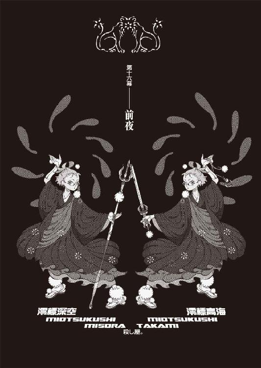
０
無秩序な順序。
右から左に並んでいる。
１
京都の十月は、はっきり言って夏だ。
暑い。
うだるように暑い。
しかし、とはいえ──
時が経つに連れ。
時間が過ぎるに連れ、少しずつ、過ごしやすくは、なってきた。歩いているだけで卒倒しそうになるような熱気が、少しずつ、薄らいでいった。
僅かに残っていた疑念も──
時の流れとともに、薄らいでいく。
西東天。
狐面の男は──宣言通り、あの日から、ぼくに対して──本当に一切、何の手出しも、してこなかった。ぼくの方も、あれから、絵本さんと相談した結果、《十三階段》に対するアプローチを中断──凍結することにした。
だから──何もなかった。
何も。
何も、なかった。
絵本さんは、
「うん......」
と、あからさまに、不安そうだった。
「あたし......あたし、これから、どうしたらいいんだろう？」
「どうしたらって──」
「狐さんは裏切っていいって言ったけど......あたし、もう、裏切っちゃってる。これから......どうしよう」
「ぼくを敵視するのをやめても──狐さんは、目的自体を失ったわけじゃない。あなたが、あのときぼくに言った通り、本当に本心から偽りなく、世界に終わって欲しくないというのなら──自分の意志で、断固たる、確固たる自分の意志で、《十三階段》は抜けるべきです」
「......だよね」
「でも──勿論、そうは言っても、るれろさんを、あのままほっぽるってわけにも行きませんからね。少なくとも彼女が一人で歩行できる段階に回復するまで、絵本さんは面倒は診てあげなくちゃ駄目でしょう」
「うん。それは元々......そのつもり。担当医だもん。るれろさん、あと数週間は、あたしがいないと、駄目だと思うから」
「じゃあ──しばらくは、そのように」
「......別に、これで、お別れじゃないよね？」
絵本さんはおずおずと、訊いてきた。
「ま、また──連絡してくれるよね？ これからも、あたしと、仲良くしてくれるよね？ あ、あたし達、友達だよね？ こ、これからもずっと、友達でいてくれるよね？ い──いっくん」
「当然でしょう。まだ、約束のフレンチクルーラー、奢ってませんしね」
ぼくの答に、絵本さんは──力なく、けれどそれなりに嬉しそうに、微笑んだ。
とにかく──狐面の男の機先を制するはずだったぼくの戦略は、狐面の男の機転に制された形になった。
ぼくは、何もできなかった。
何をすることもできず──
ただ、時間だけが過ぎた。
疑念は薄れ、疑惑も消えて、緊張もなくなり、
残るはただの、日常生活──。
平凡で普通でありきたりで。
変わったことなど、何もない。
否。
少しずつではあるが──
色んなものが、元に戻りつつあった。
元通りに、なりつつあった。
まずは、真心のこと。
橙なる種、想影真心。
るれろさんの言ったことは本当で、真心の睡眠時間は、本当に少しずつではあったが、短くなって──長時間の活動が、可能になっていった。
そのときは結局途中で力尽きてしまう結果となったが、ひかりさんの付き添いつき、帽子にサングラスの変装つきで、新京極まで三人で映画を見に行ったりもできるようになった。
真心には、全てが新鮮なようだった。
当然だ──今までがおかしかったのだ。
狂っていたのだ。
眼に映るものが全て目新しく、
あらゆるものが、楽しみの対象。
真心はやたらと、
「すっげー！」
と、感嘆の台詞を連発していた。
それが、
ぼくにはとても嬉しく──
とても、
悲しかった。
懸念していた事実──かけられていた、三つの絡み合った鎖が解けることによって、真心が暴走してしまい、ぼくの手には負えなくなる──制御できなくなるんじゃないかという心配は、全く当たらなかった。
真心はちゃんと、己の力をセーブできた。
みいこさんを目当てにアパートにやってきた近所の子供を相手に、公園で相撲ごっこをやって、わざと負けて見せるほどの余裕を持っていた。
ついでに言えば──真心はやたらと子供に、特に女の子に、モテていた。単純に容姿が子供っぽいから親近感が湧く、というだけでない理由が、そこにはあるようだった。
無邪気。
天真爛漫。
そして、それだけでなくその上で──五体満足。
健康そのもの。
鎖は、まだ完全に解けたわけではないが──恐らく、ようやく半分と、半分の半分と言ったところだろうが──この分なら、何の問題もなさそうだと、ぼくは思った。結局、時宮時刻とるれろさんの呪縛だけでなく、奇野さんの《病毒》に関しても、絵本さんの手を借りることなく、自然治癒に任せることにした判断は、この分だと少なくとも間違っていなかったようだと、ぼくは思った。
「で──真心。これから、どうする？」
頃合を見て、ぼくは訊いた。
狐面の男が、ぼくを狙うのをやめたことも告げ、そして改めて、これからの進退を問うたのだ。
真心は、
「んー」
と一回だけ唸って。
「いーちゃんの好きにすればいい」
と言った。
「俺様はいーちゃんのそばにいれたらそれでいーけど、あんまべったりなのも、いーちゃん、しんどいだろ？ あの部屋にずっと居座るわけにもいかねーしさ」
「別に、いいけど」
「そーはいかねーよ。俺様、金なんか全然持ってないしな。その上俺様の身体ってお金を稼ぐのにはあんま向いてないしなー。体力は売るほどあるんだけど。あ、そーだ。前に話してくれた、なんだっけ、鴉の濡れ羽島ってとこ。ひかりさんが勤めてるとこ。そこに住むことにしよーかな。そこのお嬢様、天才が好きってんだったら、俺様なんか、ちょー愛されちゃうじゃんよ」
「絶海の孤島だぞ......」
しかも尋常でなく愛されてしまうだろう。
かなりの好き好き大好き状態。
それは悲劇に近い。
「じゃ、この辺で下宿探すか。体力勝負のバイトとかでもして......。んー。でも待てよ、俺様、戸籍とかあんのか？」
「一応あるんじゃないの？ よく知らないけど。まあ、今度調べといてやるよ。そんなもん、なけりゃ作ればいいだけの話だし」
「いーちゃんは？」
「ん？」
「いーちゃんは、俺様にどうして欲しい？」
「できれば──ずっとそばにいて欲しい、かな。確かにあんまべったりされると鬱陶しいけど、折角お前も生きてたんだ、またつるんで遊びたいし」
「へへへ」
「まあ、お互い、昔みたいにゃいかないだろうけれど──適当にやろうぜ」
「そだね」
──と。
その辺まで会話をしたところで、その日の真心の活動時間が限界を迎え、眠ってしまったので──その話はそこで打ち切りとなったのだが。
まあ──それはもう少し、先の話だ。
まずは、完全回復を待とう。
それが、今のところの結論だった。
回復といえば──
みいこさんと、崩子ちゃん。
やはりあの二人、只者ではなかった。
十月の二十日。
狐面の男の投了宣言から五日後──
二人揃って、退院してきた。
「心配かけたな」
「............ども」
みいこさんは飄々と。
崩子ちゃんは、少し決まり悪そうだった。
そういえば、結局あれ以来、崩子ちゃんの見舞いには行っていなかった。それについて謝ると、「......病床の姿は、あまり人に見られたいものではありません」と、崩子ちゃんは、益々決まり悪そうに言うのだった。
「みいこさん」
「なんだ？」
「あ、いえ。まあ、お疲れ様でした」
「うむ」
みいこさんは鷹揚に頷いた。
まるで何事もなかったかのような鷹揚さだ。
風格を感じる。
「病院というのは面倒臭い」
「はあ......」
「お前はよくあんなところに居ついている」
「いや、ぼくも好きであんなところに居ついているわけじゃあないんですけれどね......」
「私はもう二度と御免だ」
表情に出す人じゃないが、みいこさんは病院という場所に、心底うんざりしたようだった。何の根拠もない勝手な偏見ではあるが、多分らぶみさんの責任は大きいだろう。あの人、ほんのちょい役の癖にストーリーに影響を与え過ぎだ。
「さて、明日から、特訓、始めんとな。鉛のように鈍った身体の、鍛え直しだ」
早速、やる気十分だった。
とはいえ、二人とも、完全回復ではない。
当然だが。
みいこさんもかなり無理を言って出てきたらしいし、崩子ちゃんに至っては、何かあれば、あのときの体験がフラッシュバックし、冷静さを失ってパニックに陥ってしまうような状態らしい。
みいこさんの問題は肉体的なものだからともかくとしても、そんな状態でどうやって崩子ちゃんが退院してきたのか謎だったが、後日こっそり病院に行って調べてみると、
「らぶみお姉さま！ わたしお家がとっても恋しいの！ これ以上病院にいたら、もうわたしおかしくなっちゃう！ 退院させてくれたら一生恩に着ますからどうかなにとぞ！」
みたいな事件があったらしいことが判明した。
............。
調べなかったことにした。
とにかく、二人とも、アパートに復帰。
すると当然なのだが──
「............」
「............」
「ん？ 誰だ？ お前ら」
真心と、対面したりする。
みいこさんは初対面だが、問題は崩子ちゃん。
正直言って、ひと悶着あった。
アパート中巻き込んでの、悶着だった。
しかし、崩子ちゃんにも、萌太くんを殺したのが濡衣さんであることくらい、理屈ではちゃんとわかっていて、そして崩子ちゃんは言うまでもなく理に聡い少女であるわけで──
最終的には、打ち解けた。
真心もまた被害者であり犠牲者であること。
それは説明するまでもないことだったし、また、真心の生い立ちというのは、崩子ちゃんにしてみれば、自分にかぶるところのある話──だったようで。
「お兄ちゃんがそう言うなら──」
「ぼくがどういうかは関係なく、崩子ちゃんが自分の意志で決めて。ああ、これはご主人さまとしての命令だから、従ってね」
「..................」
で。
真心と崩子ちゃんは、握手をした。
真心は崩子ちゃんを気に入ったようだった。
蹴りをくれたことは、憶えていないらしい。
その記憶の真偽のほどはともかく、それについてはぼくが証人だったので、崩子ちゃんが一発、真心にハイキックを喰らわせることで、おあいことなった。
ともあれ、これで全員、帰って来た。
生きている者は。
死んだ者以外は。
萌太くん、以外は。
「戯言遣いのお兄ちゃん」
「はい？」
「率直に言わせていただければ少々寂しいです」
率直に言われてしまったので、どうしようもなく、それからしばらく、崩子ちゃんはぼくの部屋で暮らすことになった。
ぼくとひかりさんと崩子ちゃん。
四畳の部屋に、三人はきつかった。
何度でも言うが、京都の十月は夏なのだ。
冬ならば身を寄せ合えば暖が取れるが、こんな気温の中暖をとることに、一体どれほどの意味があるというのだろう。
それでも──暖かかったけど。
ぬくもりが、あったけど。
けれど。
更に五日後──
「ご面倒、おかけしました」
と。
十月二十五日。
千賀ひかり。
ひかりさんが──島に帰ることになった。
鴉の濡れ羽島、赤神イリアさんの下に。
「色々とありましたので、不調法にも予定より随分と長く滞在してしまいましたが──さすがにこれ以上、島を空けるわけにはいきませんので。あかりやてる子、玲さんに──お嬢様のことを任せ切りというわけには、いきません」
「......そうですか」
残念だったが──仕方ない。
もう、引き止める理由はない。
狐面の男の脅威がなくなった今。
ぼくに彼女を繫ぎ止める理由はなかった。
いて欲しいと願うことは、できなかった。
「こちらこそ──ご面倒ばかり、おかけしました。本当に、あなたには何度お礼を言っても、言い足りません」
「よしてください──仕える方のお役に立てることこそが、わたし達にとっての唯一の喜びです」
「でも──お礼は言わせてくださいね」
ぼくは彼女に、ありがとうと言った。
何度も。
何度も。
重ねて何度も。
お世話になった分だけ、繰り返し。
その頃にはひかりさんとすっかり仲良くなっていた真心は、しかし、その別れに対し、それほど悲しむような素振りも見せず、
「また会えるかな」
と言った。
もう次のことを、考えていた。
真心らしい、と思った。
ひかりさんは、快く「はい」と答えた。
「島にいらしていただければ──いつでも。お嬢様は、きっと真心さんを、歓迎してくださることでしょう。勿論──あなたのことも」
悪戯っぽく、ぼくを見る。
ああ、そういえば、最初はそういう話だった。
お試し期間──なんだっけ。
確かにそれは──魅力的な話だった。
「イリアさんや玲さん、あかりさんとてる子さん、それに、春日井さんと......えっと、あの料理人の彼女にも、よろしくお伝えください」
「ええ、勿論」
そして、
ひかりさんは、
そっと、ぼくに近付いてきて、
「さようなら、わたしだけのご主人様」
などとは決して言わなかったのだが、まあ、普通に、穏便に当たり障りのない挨拶をして、ぼく達はみんなで、ひかりさんを見送った。
いつの間にか彼女は骨董アパートの住人の中に溶け込んでいたので、それから数日、何か大事なものが不足しているような、ぽっかり穴が開いたような空虚さを、ぼく達は味わうことになった。
千賀ひかり。
あるいは──千賀てる子。
とうとう、曖昧なままに、終わった。
それでよかったんだと思う。
またあの島に行こう。
今回ははっきり、そう決意した。
春日井さんにも──会いたいし。
......だったらさっさとしないと、あの風来人気取り、今度はどこ行ってしまうかわかったもんじゃないけれど......。
で、まあ。
部屋は少しだけ、広くなった。
少しだけ、たくさん──広くなった。
「お兄ちゃんは、ああいった服装が好みですか？」
「え？ いや、ぼくは別に」
「わたしの服装にいちいち口を出してくる萌太もいなくなったことですし、わたしもお兄ちゃんに仕える者として、これからはああいう感じの服を着ましょうか」
「んー」
「どうしました？」
「崩子ちゃん」
「なんでしょう」
「十年早い」
「........................」
などといったやり取りを含みつつ。
更に三日後。
十月、二十八日。
玖渚友の──機関への復帰が、正式に決定した。
電話でそう報告を受けた。
「改めて──どう言ったものか実際のところは戸惑うけど、でもやっぱ、こういう場合はおめでとう──でいいのかな」
「うに。まあ、悪いことじゃないからね」
「これから、どういう手筈で？」
「えーと、来月の末に、なんか大仰な儀式みたいな奴、平たく言えば顔見せかな、そーゆー奴があるんだけど、仕事は早速、切りのいいところで来月から始まるよ」
「ふうん」
「整理ってか、事前準備も終わったしね。後は走り出すのを待つだけの、位置についたスプリンターみたいな心境かな。ちょっとうきうきー」
「そっか。まあ、ご同慶の至りだよ。じゃあ、そうだな、うん、近い内に、お祝いにでも行くよ」
「今日？ 明日？」
「焦るなよ。そんなすぐにゃ無理だ。準備ってものもあるだろ。心の準備ってのも含めてな。それに、今お前のマンション、お前の昔の仲間が来てるんだろ？」
「うん。全員じゃないけど、五人来てくれた。和気藹々として、ちょっとした同窓会みたいな雰囲気だよ」
「そんなとこに行くのはちょっと気後れするよ」
「うにー。いーちゃんが呼べって言った癖に」
玖渚は不満そうだった。
しかし、こっちだって、正直に言えば今すぐに駆けつけたいのも山々なのだ。しかし──やっぱり、準備というものはある。
なんといっても、プロポーズまでしたのだ。
これからは少しはロマンチックに行きたい。
とか思う。
馬鹿だろうか。
「馬鹿だ」
電話を切ったら、背後にみいこさんがいた。
ノックもなしに人の部屋の中にいた。
甚平姿。
「馬鹿がいる」
「............」
「平和だね」
「......ええ、平和ですね」
「場違いなくらい、平和だね」
「いいことでしょう」
「いいことだよ。間違いなくね」みいこさんは言う。「これからどうするつもりだい？」
「どうするとは」
「本当に、これで終わりにしていいのか？」
みいこさんは、真剣そうだった。
無表情で、わかりにくいが──どうやら真剣だ。
みいこさんには、相変わらずまだ何も話していないままなのだが、やっぱり剣士、それくらいの事情は当たり前のように読んでくる。
答えかねる。
「向こうが手を引いちゃったんだから──こっちからじゃ、如何ともし難いですよ。元々はただの自衛だった。始まりは、ただの自衛だったんです。降りかかる火の粉を払っていただけ──なんです。向こうがこれ以上何もしないと言っているのにこっちから手を出せば、それじゃあ、ただの復讐です」
「復讐仕返し仇討ちは──もっとも他人の心を擽るらしいがね」
「そういうメンタリティはぼくにはありません」
ない。
今の、ぼくには。
「そのようだ」
みいこさんは鉄扇をばん、と開いた。
「なんにせよ、平和が一番だ」
「......でしょうね」
「なんにせよ、結婚式には呼べよ」
暗闇から切り込むような台詞だった。
随分前から背後にいたらしかった。
「..................」
「..................」
うわー、気まずい。
こっちが振られたのだとは言え......
望みを捨てきれていなかっただけに。
「そんな顔をする必要はないよ、いの字」
「......いえ、でも」
「でも、ちょっと、寂しいかな」
「............」
「ちょっと、傷つくかな」
みいこさんは言った。
「竹刀でどつき回してやりたい気分だ」
「............」
怖っ......。
「いや、あの、みいこさん......」
「それで？ 幸せに、なれそうか？」
「......わかりません。でも──」
ぼくは答えた。
「なれたらいいと、思います」
「いい台詞だ」
「あなたに惚れた、男の台詞です」
「そりゃ、いいこと言うわけだ」
「今でもぼくはあなたのことが好きですよ」
「そうだろうと、思ったよ」
みいこさんは軽く、わからないくらいに薄く微笑んで、
ぼくに背を向け、
ぼくの部屋を、出て行った。
「.........ちぇ」
とにかく──これで。
ぼくが抱いていたみいこさんへの恋心は、
ぼくの初恋らしきものもまた、
誰にも知られることはなく、
静かに──終わった。
「お兄ちゃんはとんでもない女たらしですね」
天井裏にいた崩子ちゃんがそう言った。
......なんで天井裏にいるんだ。
と、思った。
「あ、さては床と天井ぶち抜いて上と繫げたな」
「にんにん」
「本当に忍者だったのか......」
変なキャラ立ちは確立したらしかった。
可哀想に。
荒唐丸さんは相変わらず、筋肉を鍛えることと、伴天連趣味に精を出していて、みいこさんと言い争っていたり──七々見の奴は、大学に行ったり行かなかったり。
十月二十九日。
沙咲さんとデートして。
十月三十日。
数一さんとデートした。
そして──
十月三十一日。
十月の終わり。
夜の九時。
ぼくは──京都御苑にやってきた。
絵本さんと、三度、待ち合わせた場所。
ただし──
今回は絵本さんと会うためにではない。
古槍頭巾。
頭巾ちゃんとの──約束を果たすためだ。
《彼女》が欲しがった、そんな狐面の男に心酔しているわけでもないのに《十三階段》に入ってまで欲しがった刀子型のナイフ──《無銘》を、渡すために。
引き換えとして頭巾ちゃんが教えてくれる、この刀子についての情報──先代の古槍頭巾がこの刀子を手に入れようとした理由を、教えてくれることになっているのだが──そんなもの、正直言って、今となっては、どうでもいいことだ。
頭巾ちゃんにも、当然、狐面の男は、るれろさんに言ったのと同じようなことを──言っているはず。ならば、もう取引もへったくれも、同盟も不可侵条約もあったものじゃない。
ぼくに彼女を警戒する理由は、今やない。
罠か企みかと恐れる理由は、一つもない。
ぼくは、とりあえず、上着の下に装着したホルスターに収めてある刀子を取り出して、ためつすがめつし、また、元に戻す。
こんなもの──くれてやればいい。
ぼくにとって大事なものじゃない。
それこそ元々、どうでもいいと、言っていいものだ。どうせ、切れ過ぎる刃物など、ぼくなんかにしてみれば、あまり使い勝手のいいナイフではないのだ。それが正当な理由であろうとなかろうと、たとえ頭巾ちゃんがこの刀子を質に入れてお金に換えてしまうつもりだったとしても、そんなこと、全然構わないではないか。
好きにすればいい。
そう思う。
そう思っているけれど──
「......なんだろうね」
若干の未練がある。
いや、これは未練で正しいのか？
いや、むしろ──物足りなさ、か。
建礼門前──
椋の木の見えるベンチで、ぼくはため息をつく。
半月。
あれから、何事もなく──
日常が回復するだけの時間が、十五日分、流れた。
何もなかった。
ただ、時間だけが過ぎた──のだ。
こうなると、どうしたって、誰だって、ぼくじゃなくっても、認めざるを得ない。
狐面の男──
西東天は、本当にぼくから手を引いたのだ。
ぼくを相手にするのを、やめたのだ。
「そういう潔さは──予想外だったな」
しかし──
諦めがいい人間であったのも、また事実。
ふと、大学の授業で習ったことを思い出す。
昨今流行したつけ回し犯罪、いわゆるストーカー的行為というのは、主として変質的にして偏執的な精神状態から生じるものではあるが、しかしそれらの行為は、結局のところ、行き着くところまで行き着いてしまうことはごく稀で、大抵の場合、ある日突然、何の脈絡もなく終わりを告げる──と。
要するに、目先が変わる、ということだ。
ゲームに飽きるのと同じ。
小説に飽きるのと同じ。
乙女心と秋の空──
そんなセンチメンタルなものじゃないだろうが。
あのパーティ。
澄百合学園でのパーティが、最後だ。
真心の脱出劇が──致命的、か。
悪手。
そして投了──
とうとうあの男は──
ぼくの前で、名乗らなかった。
西東天という自分の名を、明かさなかった。
結局、言ってしまえば、狐面の男の独り相撲に終わってしまったわけだ。ぼくは本当に何もしていないに等しい。彼の行為に、単純に反応しただけだ。やったことも、ほとんど意味のないことばかりだった。
残ったのは、空虚さだけ。
「......そして」
《無銘》。
今日、これから、このナイフを、頭巾ちゃんに渡せば──それで全てが、本当に終わる。
狐面の男とも、
《十三階段》とも、
縁は切れる。
これ以上の付き合いはなくなる。
無論、全てが払拭されたわけじゃない。
癒えない傷があるのと同様、
忘れられない記憶もある。
それに──
これでいいのだろうか、という、思いも。
確かにある。
全てを終わらそうと企んでいる狐面の男を、人類最悪をそのまま放置することが、果たして許されるのかどうか──ありとあらゆるものを知っているのに見て見ぬ振りをすることが、果たして許されるのかどうか──だ。
るれろさんは鼻で笑った。
その通りだ。
その通りでしかない。
ぼくは正義の味方じゃない。
世界の平和のために戦うことなど──できない。
今日と明日だけ平和であれば、自分の周囲が穏やかであれば──それで満足できてしまうような、ぼくはそんな、器の小さな人間だ。
ちっぽけなのだ。
最強でもないし、最悪でもない。
まして最終でも。
なんでもない。
ただの、戯言遣いだ。
火の粉を降りかけられなければ──
動けない。
ただ、それでも──気がかりはある。
これから狐面の男が、今度はどんな手段で、どんなやり方をもってして《世界の終わり》を迎えようとしているのか、《物語の終わり》を眼にしようとしているのか、そして、とうとう会うことのなかった《十三階段》の面々は──これからどうなるのか、とか。
気がかりはある。
数え上げたらキリがないくらい。
でも、それももう全部──関係ないことだ。
ぼくには関係ない。
たとえ、あっても──興味がない。
「......戯言なんだよ」
ああ、でも──一つだけ。
関係ないでは、済ませられない人がいる。
哀川──潤。
人類最強の、請負人。
あらゆるものが、徐々にではあるが、最悪とかかわった状態からは回復しつつある──日常に回帰しつつある中で、
哀川さんだけが、帰ってこない。
哀川さんだけが戻らない。
あの日──狐面の男に、連れられたまま。
父親に連れられたまま、帰って来ない。
まさか──真心に一撃の下に倒されたことを気に病んで、というわけではあるまい、そんなタマじゃない。ましてそれに奮起して武者修行の旅に出たりする人なんかじゃありえない。
でも、帰って来ない。
小唄さんの調査も、梨の礫だ。
何の手がかりもなかった。
俺の娘。
旧式。
狐面の男は──次のステージに至るにあたって、哀川さんを使うみたいなことを言っていた──ならば恐らく間違いなく、哀川さんは、狐面の男の手元にあるのだろう。
どうするつもりなのか。
真心のように──束縛するつもりだろうか。
体力と。
肉体と。
意識を。
制限するつもり──だろうか。
いや、そうじゃないだろう......あの人、狐面の男は──同じミスを何度も繰り返すようなタイプじゃない。どんなことでも、同じことを、失敗どころか成功だって繰り返す気など皆無の、狐面の男。哀川さんで懲りたから真心に鎖をかけた狐面の男が、また同じことを哀川さんにするとは思えない。ぼくに対して喫した敗北も、多分次への糧としてくらいにしか、考えていないに違いないのだ。
じゃあ──何をするつもりなんだ。
哀川さんを、使って。
鍵。
鍵を外す、か......。
「請負人──そうだ......」
確かに、手足というなら──請負人としての肩書きをこの世で最も強く持つ、哀川潤こそが──西東天にとっては、一番相応しい手足なのかもしれない。たとえ旧式でも──きっと西東天にとっては、想影真心よりも、哀川潤の方が、使うのは簡単だろう。
ならば──やはり狐面の男は、ぼくとの戦闘で欠けた《十三階段》の席の内の一つを、哀川さんに与えるつもりなのだろうか。しかし、たとえそうだったとしても──哀川さんがそれを受けるとは、思えない。その点、狐面の男は、どうするつもりなのか──
いや、わからない。
考えてみれば、哀川さんは、あの体育館では、真心に気をとられて──自分の父親がすぐそばに存在していたことに、気付かなかったのだ。
親父。
西東天、架城明楽、藍川純哉の中で──
西東天だけを、父親と呼んだ。
憎まれ口を叩いて、今度こそ殺すと嘯いていたものの──そんな哀川さんの心中を、ぼく如きに推し量れるわけがないじゃないか。
心配なことがあるとすれば。
心がかりがあるとすれば、
哀川さんのことについて、
気になり、知りたいことがあると言うなら、
それは強いて言うなら──
「......いや、強いていうほどのことでもないか」
いずれにせよ。
ぼくにできることなど、もう何もない。
ひかりさんも、哀川さんが帰って来ないことについては心を痛めていたようだが──結局、あの人は、存在している次元そのものが違うのだ。心配するという行為が、そのまま不遜に匹敵する。
もう終わったのだ。
全て終わったのだ。
ぼくは、この半月──呪文のように、自分に言い聞かせるように繰り返してきたその言葉を、もう一度だけ、口に出して、反復することにした。
終わったんだよ。
平和に。
最小限の被害で。
何もなかったかのように。
本当に......終わった──
「......しかし」
頭巾ちゃん──遅いな。
約束は、午後九時のはずなのに。
まさか絵本さんのように、一時間前から来てまっているというような、強迫神経症的な真似を、あのお気楽潑剌女子高生がするとは思っていなかったけれど、時計を見れば、もう九時を十五分も過ぎているじゃないか。頭巾ちゃんも、るれろさんと同じで、時間にルーズな方なのか？ ルーズなのは靴下だけで十分だろう、と思って、ぼくは、真っ暗な御苑の中、ベンチから立ち上がって、眼を凝らして、周囲を見渡してみる。さすがにこんな時間、昼間や朝方以上に人気が少ないから、誰かいたら、すぐにそれと分かるはずなんだけれど──
まさか約束を忘れている？
いや、あれだけ言っていたのに......
参ったな、あの娘の連絡先なんて、わからないぞ......あんな今風の女子高生だったんだから当然携帯電話くらい持っていただろうし、訊いておけばよかったか──
「《いーちゃん》」
「《いーちゃん》」
呼ばれて──
頭巾ちゃんかと、声のした方を向いた。
二回も呼ぶな、と思いながら。
遅いぞ──と、文句を言おうとしながら。
振り向いた。
振り向いたら、確かに、頭巾ちゃんがいた。
ただし、半分だけ。
上半身だけ。
内臓が、だらしなくはみ出している。
どくどくと、惜しげなく、血が。
血が、零れ落ちている。
がくりと顔は俯いて。
生気など、あるわけもなく。
明らかに、生命活動を停止していて──
「..................っ！」
両腕を──
か弱い女の子のものでしかない、両腕を。
左右に。
片方ずつ、
左右に、
左右から、
万歳の姿勢のような形に、
つかまえられて、
支えられて、
地面から十センチくらいのところに、
標本のように、
晒されるように、
ぶら下がっている。
ぶら下げられて、いる。
「な......な、なぁ!? ず、頭巾──」
「《十三階段》の九段目──澪標深空、推参」
右の女が──言った。
「《十三階段》の十段目──澪標高海、推参」
左の女も──言った。
ばちゃり、と──
二人は、頭巾ちゃんを、投げ捨てた。
ぼくに向かって、投げつけた。
乱暴に。
非道に。
獰猛に。
まるで、
終わりを否定するように。
終わりなんかないと、言わんばかりに。
２
お祖父ちゃんはね──と、頭巾ちゃんは言った。
「あんまり、わたしに跡を継がせたくなかったみたいなのよね」
「そうなの？」
ぼくが訊き返すと、頭巾ちゃんは「うん」と頷く。
「深入りして欲しくなかったのかな。男の世界って感じでさー。わたしなんて見様見真似でやるばっかりでさ、結局お祖父ちゃん、死ぬまで、ほとんど何も教えてくれなかったもん」
「でも、十二代目は襲名してるんでしょ？」
「形式上は。古槍頭巾の名前をそんな簡単に途絶えさせるわけにはいかないもん。でも、お祖父ちゃんとしては、わたしの子供を、アテにしてたみたいだけど」
「子供いるんだ」
「いるかいっ！」
月並みな突っ込み。
慣れてみると、変にひねりをくわえるよりも、案外普通の突っ込みも味わいがあって悪くないものだと思った。
とにかく、元気がいい。
ありあまっているという感じだ。
「まあ、そもそも、お母さんが、お祖父ちゃんの晩年の子供だったからねー。九十八までも生きて曾孫の顔が見れないなんてのはツイてないだろうけど、でもわたし、まだ十六だもん」
「一年生？」
「にゃ、二年生」
「学業と刀鍛冶見習いの両立か。大変だね」
「そうでもないよ。楽しいもん。やっぱりお祖父ちゃん、好きだし。だから──お祖父ちゃんがいくら乗り気じゃなくっても、わたし、立派な刀鍛冶になってみせてみせてみせるのよ」
「三回も見せなくてもいいと思うよ」
どんなサービス精神だ。
ふうむ、とぼくは腕組みをする。
「今はどうしてるわけ？ お祖父さん亡くなって」
「ん。お祖父ちゃんの知り合いの刀鍛冶さんに師事してる。やっぱこういうの、独学じゃ限界があるしね」
「刃物が好き？」
「そういう言い方をすれば危ない感じだけど、んー、どうだろ、よくわかんない。好きといえば好きかもしれないけれど、でも強いて好きってほどじゃないのかもしれないな。綺麗、とは思うけど、それより先に、危ないなっていうのが、先に立っちゃって。んー、だね、やっぱ、なんていうか、よくわかんない」
「わかんない？」ぼくはその答に、首を捻る。「ここは、てっきり好きだって答が返ってくるとこだと思ったけど」
「そうかな」
「そうだよ」
「そんなことないよ」
「そんなことあるって。わけわかんないこと言っちゃって、大体、好きでなきゃやってられないだろ、刀鍛冶なんて、キツそうな仕事」
「だから──言ってるじゃん。わたしが好きなのは、お祖父ちゃん」
頭巾ちゃんは晴れやかな笑顔で言った。
本当に、晴れやかだった。
迷いも曇りも、一点もなく。
「あのお祖父ちゃんが、生涯の仕事にするほど好きだったものだから、わたしも好きになりたいのよね──」
頭巾ちゃんはそう言って──
そう言って。
そう言っただけで。
話は、そこまでで。
おっと喋り過ぎちゃったこの続きは《無銘》を渡してもらってから話すことにする──と。
それで──
それで、おしまいで──
けれど。
おしまいだけど、おしまいじゃなく。
終わりだけれど、終わりじゃなくて──
「否──」
「否──」
澪標姉妹は──順繰りに言う。
「《隠身の濡衣》が抜けているから僕は八段目になるのかもしれない」
「《隠身の濡衣》が抜けているから僕は九段目になるのかもしれない」
「おっと、裏切り者の五段目もついさっき始末したから、これで僕は七段目になるんだ」
「おっと、裏切り者の五段目もついさっき始末したから、これで僕は八段目になるんだ」
「間違わないようにしないと」
「間違わないようにしないと」
ハウリングのように──
左右逆に同じ動きで、
まるでシンメトリーで、
彼女達は──ぼくの前に、存在する。
法衣姿。
闇に混じってしまうような、法衣姿。
御苑の中では──違和感がない。
それどころか、まるでここが、
この場所が、
彼女達のための舞台であるようだ。
「頭巾ちゃん──」
投げ出された──
塵屑のように打ち捨てられた頭巾ちゃんを、ぼくは、何もすることもできず、ただ──見下ろす。地面に這い蹲っているような、そのまま、下半身のない妖怪のように──
曇っているような、
迷っているような──
彼女の死体を。
首が、あらぬ方向へ曲がって、
その表情が、ぼくの眼に、映る。
彼女の眼には何も映っていない。
虚ろ。
苦痛に歪んでいて──それでいて虚ろ。
死んでいる。
どうしようもなく、死んでいる。
そう表現することすら、正確じゃない。
これはもう──物体だ。
人間としての尊厳など、ない。
尊厳などない。
そんなものは──踏み躙られている。
蹂躙、されている。
「き、きみ達が──」
ぼくは──
頭巾ちゃんと、そして左右線対称の澪標姉妹を、交互に見るようにしながら──かろうじて、言葉を発する。
「きみ達が、やったのか」
「愚問だ」
「愚問だ」
姉妹は、順繰りに答える。
「裏切り者を──始末した」
「裏切り者を──始末した」
「こいつは」
「こいつは」
「《十三階段》でありながら狐さんの敵と通じた」
「《十三階段》でありながら狐さんの敵と通じた」
裏切り者には死を。
姉妹は、最後の言葉だけ、揃えて言った。
「............っ」
な、なんだ......？
待て、混乱するな。
こういうときこそ冷静に対処しろ。
しかし、そうはいっても、そうは頭ではわかっていても、既に疑念も不安も緊張も、ほとんど感じなくなってしまっていたぼくは──この急激な、激流のような状況に、対処できない。
対応できない。
ただ、息が苦しいのだけがわかる。
頭巾ちゃん。
良く見れば──
下半身がないという箇所に眼を奪われてしまい、見落としてしまいそうになるが──腕にも顔にも、細かな傷が、数え切れないほどに、ある。
拷問でも受けたかのような、傷跡だった。
拷問を受けた、傷跡だった。
酷い。
見るに──耐えない。
裏切り者。
裏切り者。
ぼくと──通じた、から？
あの日──たまたま、ぼくと会ったから？
それだけの──ことで？
「き、狐さんは──」
ぼくは言う。
澪標姉妹を、できる限り、睨んで。
「......もう、ぼくに手出しはしないはずだ」
「ふっ──」と、深空ちゃん。
「ふっ──」と、高海ちゃん。
同じように笑う。
心底馬鹿にしたように、笑う。
醜く頰を歪めて。
醜く頰を歪めて。
深空ちゃんは微笑む。
高海ちゃんは微笑む。
澪標姉妹は──微笑む。
「そんなことは関係ない」
「そんなことは関係ない」
「僕は」
「僕は」
深空ちゃんと、
高海ちゃんは、文字通り、異口同音に言う。
「あんたを殺さないと帰れない──あんたを殺さない限り、狐さんに合わせる顔がない」
「あんたを殺さないと帰れない──あんたを殺さない限り、狐さんに合わせる顔がない」
「.........っ！」
狐面の男──
あの野郎、説得に失敗したのか！
人望がないにもほどがある──
敗戦処理くらいきちんとしろ！
立つ鳥が跡を濁してどうするんだ！
咄嗟に──周囲を窺う。
駄目だ、助けが期待できるような状況じゃない。
ここに来ることは誰にも告げていない。
崩子ちゃんやみいこさんに、不要な心配をかけたくなかった──という以前に、やっぱり、ぼくはもう、警戒というものを、完全に怠っていたのだ。
不測の事態を──考えていなかった。
頭巾ちゃんに《無銘》を引き渡すまで──
終わったわけじゃなかったのに。
集中力を落とした。
油断した。
明らかに──ぼくのミスだ。
そのミスのせいで、
本来死ぬはずのなかった、
頭巾ちゃんが──
「......どうして」
混乱と戸惑いのただ中でも──
ぼくは、訊かずにいられない。
「どうして頭巾ちゃんを......頭巾ちゃんは、きみ達を裏切ってなんかいない──まだ、彼女は何もしていないじゃないか」
そう──何もしていない。
十六歳だ。
若過ぎる。
何もしていないじゃ──ないか。
月並みな女子高生だった。
普通だった。
あまりに普通だった。
幸せになって、当たり前なくらい。
普通──だったんだ。
「あんたと通じた──それだけで罪は罪だ」
「あんたと通じた──それだけで罪は罪だ」
「利敵行為は大罪だ」
「利敵行為は大罪だ」
「罪は命をもって贖わねばならない」
「罪は命をもって贖わねばならない」
裏切り者には死を。
重なる。
言葉が重なる。
確固として、ぼやけている。
境界線が、ジグザグだ。
幻惑される。
視界が二重にぶれているかのような、
澪標姉妹の、存在感に。
出夢くん──匂宮出夢は、この二人をあっさり打破したようなことを言っていたけれど──とんでもない。それは単に、出夢くんが度を越えてずば抜けていたというだけの話だ。
ただ、そこにいるだけで圧倒的だ。
蛇に睨まれた蛙のように──身が竦む。
「............」
くそ......
正直言って、なめていた。
ぼくは──ごくりと、唾を吞む。
狐面の男は、成功率を八割強と読んだ。
架城明楽と一里塚木の実を除いた、他の《十三階段》全員を、ぼくは説得し得るだろう──と。
だが......冗談じゃない。
こんな奴ら──説得できるか。
意志などない。
忠誠などない。
あるのは唯一──狂信だけ。
......出夢くんが、深空ちゃんや高海ちゃんが、自分と理澄ちゃんの代理として《十三階段》に入ったことを、えらく不満そうに思っていたが──得心いった。
話は《殺し屋》としての実力云々だけのことじゃなかったんだ。
こいつら──
こいつら、異常だ。
確かに頭巾ちゃんは狐面の男からの指示がある前にぼくに接触し、勝手な約束を取り結んだけれど、しかし、それだけのことで、殺すことはない。
こうも残酷に、
こうも凄惨に、
殺す必要がどこにあるというんだ。
粛清なんてものじゃない。
こんなの、ただの──殺戮じゃないか。
くそ......
絵本さんは、無事なんだろうな......。
るれろさんも、考えようによっちゃ微妙だ......。
澪標深空。
澪標高海。
この二人なら──やりかねない。
狂信、狂信、あまりにも独善的に狐面の男を信仰するこの澪標姉妹──リタイアしたノイズくんだって、円満退職した濡衣さんだって、下手すれば、最悪の場合、この二人にかかれば裏切り者ということになるのかもしれない。
まして──
正式には《十三階段》でなかったとはいえ、
真心も──また。
いや、真心......橙なる種、想影真心か......。
あいつなら──出夢くんをも哀川さんをもあっさりと撃破した真心なら、深空ちゃんも高海ちゃんも、相手にならないだろう──ましてあのときとは違い、今の真心は、ほとんど鎖が解けかかっているのだ。
連れてくる、べきだったのか？
......違う。
そんなことはない。
ぼくは、ちゃんと決めたはずじゃないか。
あいつを絶対に──利用しない、と。
信用して、
利用しないと、決めたんだ。
あいつを守ると──決めた。
真心に、恥じることなく。
「それでは鐘を鳴らし鎌を磨こう」
「それでは鐘を鳴らし鎌を磨こう」
「戯言遣い」と、深空ちゃん。
「戯言遣い」と、高海ちゃん。
お命頂戴、仕る。
その、揃った声に──
ぼくは、
「やってられるかっ！」
ぼくは、全力で──逃げた。
全力疾走で、逃げた。
頭巾ちゃんの身体を見捨てるようだったが──
否、気にしてはならない。
あれはもう──骸だ。
ただの肉塊だ。
とらわれるな。
吞まれるな。
とにかく、それよりは、この状況......どう生き延びる？ どうやってかわせばいい？ 頭巾ちゃんと会うだけのつもりだったから、武器らしいものなど、弾丸の入っていないジェリコすら持ってきていない──あるのは精々上着の下の《無銘》だけだが、あんな刃渡りの短いナイフじゃ、二人を同時に相手取ることなどできるわけがない。
せめて一人なら──いや、複数人であっても、チームワークに隙があれば、その辺りに切り込む要素はあるはずなのに、そういう意味では、狂信という要素を外したところで、澪標姉妹、ぼくにとってはかなり厄介な相手だった。
駆けながら、視線を後ろにやる。
深空ちゃんも──
高海ちゃんも──
無言で、ほとんど無表情で、追ってきていた。
正確に、ぼくの背後を。
一定の距離を──おいて。
......一定の距離？
どうして、追いついてこない？
確かにあの法衣姿は徒競走に適しているとは言いがたいが──それでも、ほとんど素人のこのぼくに対し、プロフェッショナルの澪標姉妹、この程度の距離、一気に詰めることは可能なはず。なのに、どうして──
そうか。
長い距離を走らせて、疲弊させたところを──
楽に殺すつもりか。
まるで狩りだ、と思った。
あまりにも一方的で、勝負になっていない。
鬼ごっこですらない、隠れんぼですらない。
捕食動物と被捕食動物。
食われる──人喰い？
「──ちっ」
出夢くんにだって喰われなかったこのぼくが──
出夢くんにだって殺されなかったというのに。
そうは──いくか！
対策が。
何か、対策が──
「......っ、くそ、確か──」
確か、この京都御苑という場所は。
ぼくは少し、走行ペースを落とした。
悟られない程度に。
そして、周囲を確認する。
まずい......
方向が全然違う。
真南に向かってしまった、これじゃ逆だ。
ぼくは、出水広場が見えてきたところで、
直角に折れる。
否、勢い余って、直角よりやや鋭利な角度。
倒れそうになる身体を、何とか持ちこたえ──
加速。
呼吸を止め、
十秒、
ほんの十秒の間──
全力よりも更に速く、
全力を超えた速度で──駆ける。
吹き抜ける矢のように、駆ける。
西に行くのでもない南に向かうのでもない、この御苑から外に出ようという試みからはまるで対極のその行為に、澪標姉妹は一瞬だけ戸惑ったようだったが、しかし──
勿論、その程度に惑わされはしない。
ぴったりと、一定の距離を置いて──
右から左から、
追跡してくる。
プレッシャーがきつい。
十秒じゃ、全然足りない。
出夢くんも、随分無茶を言ってくれたものだ。
スプリントは、大体、苦手なんだ──
ぐ......
駄目か、十秒じゃ......きつい、か？
距離。
距離が、そんなものじゃ──
......と。
足元がおろそかになったところで、躓いた。
前向きに、転倒しそうになる。
なんとか踏み止まったが──
しかし、その隙を見逃してくれるわけもない。
「枷鎖──」
「──真風」
立て直すときには──既に追いつかれていた。
深空ちゃんの右手のひらが。
高海ちゃんの左手のひらが。
ぼくの背に、クロスするように、添えられた。
そして。
「川遠──」
「──境域」
ぶっ飛ばされた。
合気──と、思うような暇もなく、
宙を舞い、
地べたを転がり、
正面に見えていた壁近くまで──飛ばされた。
溝の縁に、頭を、強く、打ち付けた。
「ぐ......ぐぁ......」
呻く。
肩が──
肩甲骨の辺りが、消失したかのように痛い。
両腕がちゃんと、千切れずにくっついているのかどうか──思わず、確認してしまった。出夢くんの《一喰い》とは全く種類が違う、真心が──真心が萌太くんにやったのとは違う、単なる暴力に依る力任せな技術ではなく──技術に拠る暴力。
やっぱり──プロフェッショナル。
本分のやり方じゃ、敵いっこない。
逃げることすら、中途半端だ。
だけど──
「惨めだ」
「惨めだ」
「弱い」
「弱い」
なんとか、地面から身体を起こしたぼくの正面に──澪標深空と、澪標高海が、立っていた。
何と言うこともなく、シンメトリーに。
法衣を風に、なびかせながら。
「僕は理解に苦しむよ。狐さんがあんた如きを敵に回したその理由が本当にわからない」
「僕は理解に苦しむよ。狐さんがあんた如きを敵に回したその理由が本当にわからない」
順繰りに──言う。
己の矜持を確認するように、ぼくを侮蔑する。
やれやれ──わかり易い性格だ。
狂信者は、わかり易いのだ。
あまりにも、わかり易い。
しかし──それでも、何をするかわからない。
だから、何を言っていいのか、わからない。
「......その弱い男を、二人がかりでやっちゃおうという考えは、いささかセコいんじゃないのかい？ 深空ちゃん、高海ちゃん」
「関係ない」
「関係ない」
「僕はただ殺すだけだ」
「僕はただ殺すだけだ」
殺し屋だから──と、声が揃う。
出夢くんのような、戦闘狂じゃない──か。
まあ、ちょっと考えてみれば、出夢くんの場合、冷静さとか賢明さとか、そういった出夢くんにしてみれば小賢しいことを全て理澄ちゃんの人格に任せていたのだから、あのような性格で、ある意味当然なのだ。出夢くんの人格と理澄ちゃんの人格とを足し合わせれば、上手に、嵌ったようにとんとんになるのだから。
だがこの澪標姉妹の場合はそうじゃない。
足し合わせて──倍にする。
一足す一を、二にする。
単純に、それだけだ。
単純明快、正確無比。
《殺し屋》としての本分は、消失しない。
筋道の話は、通らない。
そういった挑発は、無駄か。
だったらもう一つ──ありがちな手法ではあるが、狐面の男のことを話題にあげて、そこから突破口を探る──というのもあるのだが、相手が二人では、この場合それも意味をなさない。信仰の妨害は、一対一でなければ成功の目算は低いのだ。
だが。
そんなことは最初からわかっていた。
ぼくの狙いは──そこじゃない。
ぼくは、
ただ立ち上がるだけの振りをして、
そっと、静かに、さりげなく、
溝を越え、
背後の壁に──
「その壁に近付いても無駄だ」
「その壁に近付いても無駄だ」
──と。
澪標深空は、澪標高海は、言った。
ぼくは、動きを止める。
溝に入ったくらいのところで、止める。
戻りはしないが──もう、動けない。
「それくらい知っている──それくらいは」
「それくらい知っている──それくらいは」
「御所の壁に近付けば警報が鳴り響く」
「御所の壁に近付けば警報が鳴り響く」
「それくらい──知っている」
「それくらい──知っている」
......読まれていた。
ぼくの背後の壁は、仙洞御所を囲む壁。
実際に鳴っているのは聞いたことがないけれど、この壁に迂闊に近付けば、センサーが働いて、洒落にならないほどの大音量で警報が鳴るということは──七々見から教えてもらっていた。この壁を目指して、ぼくは出水広場のところで曲がったのだが──
読まれた、か。
「......だが読まれたからどうというような話じゃないぜ。いくらきみ達が裏の世界じゃ名だたる《殺し屋》だとは言っても──物理的な話、そこからぼくに近寄るよりは、ぼくが溝を越えて、壁に一歩、跳び寄る方が早い」
ぼくは、二人に向かって言う。
意識を壁に伸ばしたまま。
「まあ、ぼくも詳しくないから、よく知らないけど──夜だから警報を切っているなんて間抜けな話はないと思うぜ。騒動になるのは、きみ達だって本意じゃないだろう。狐さんに迷惑がかかる」
「............」
「............」
「ここで退いてくれるなら──ぼくだって、あえてきみ達を追おうとは思わない。無論、きみ達の目的がぼくの生命であるというのは重々承知しているけれど──それだって、どこかに妥協点があるはずじゃないか」
「ない」
二人は揃って、即答した。
そして、
「無駄だ」
「無駄だ」
と、まるで動揺した風もなく言った。
「警報など鳴らしても無駄だ。誰も来ない」
「警報など鳴らしても無駄だ。誰も来ない」
「......？ 何を言ってるんだ？ そんなわけ──」
と。
そこで──気付く。
京都御苑。
夜とはいえ──あまりに人気がなさ過ぎる。
人気がないというより──一人もいない。
ぼく達の他に、一人もいない。
そうだ、これまで誰も──見ていない。
いくらなんでも、おかしい。
そこまで深い時間というわけじゃない。近くには大学もあるというのに──まるで、この御苑だけが、周囲とは別異の空間に区切られているかのように──
空間！
十三階段！
空間製作──一里塚木の実！
「きっとご名答だ」
「きっとご名答だ」
二人は──加虐的に笑う。
狂っているような、笑みだった。
きっと、狂っているのだろう。
否──これで、正常なのか。
《殺し屋》としてはともかく──
《十三階段》としては、これで正常か。
忠誠。
そして、忠誠なき狂信。
だが──しかし、濡衣さんの話から感じたニュアンスじゃあ、一里塚木の実と澪標姉妹は、そんなに仲がよくない、むしろいがみあっているかのような感じだったのだが──
いるのか？
この近くに──空間製作者、一里塚木の実が。
もし、いるのだとすれば──警報など鳴らしたところで、確かに無駄だ。言うまでもなく一里塚木の実の《空間製作》だって、超能力や何かの類ではあるまい、ある程度の時間が経過すれば、警報を聞きつけた人間が、ここには駆けつけてくるはず。だが──本来よりずっと、それには時間がかかってしまうことは、間違いない。
まさか──だ。
まさか、そんな信じられないほど大規模に、そして恐ろしいほど大胆に──《空間製作》を仕掛けることまでできるとは、思わなかった。勝手に、電車の中や校舎の中のような、限られた密閉空間でしか使えない技術だとばかり思い込んでいたが──しかし、そうとでも考えない限り、深空ちゃんと高海ちゃんが、頭巾ちゃんの上半身をぶら下げての、あんなに目立つ登場の仕方をできるわけがない。だけど──そんなことができるならもう何だってありになるじゃないか。
「こ、木の実──だが、どうしてだ？」
ぼくは──壁に向けた意識を、引いた。
身体を、地面に落とす。
溝の中に座る格好になった。
座りたかったわけじゃない。
十秒の──代償だ。
脚が、もう、身体を支えることもできない。
最後の気力が──
最後の希望が、絶えたのだ。
「どうして──きみ達はともかく、一里塚木の実は、狐さんに絶対服従のはず──こんな命令違反を、よしとするわけがない」
「知ったような口を利く、戯言遣い」
「知ったような口を利く、戯言遣い」
「何も知らない癖に」
「何も知らない癖に」
狐さんのことなど──何も知らない癖に。
二人は声を揃えて、そう言った。
その意味を、つかみかねる。
なんだ？ その物言いは。
その言い方じゃあ......まるできみ達のこの行動が、この命令違反が、ぼくに手を出すなという命令違反が──狐面の男の意志の下に執行されている命令であるかのようじゃないか。
そんなわけがない。
あの人は、ぼくから手を引いたはずだ。
あの人との勝負は──終わったはずだ。
それとも、終わっていなかったのか？
本当は終わっていなかった？
あれは──ただの噓だったとでも？
違う......多分、そうじゃない。
最初の口振りから考えて、そしてこれまでの経過から考えて、この二人が、狐面の男の指示を外れて行動していることはまず間違いないし──ここ半月の様子から考えれば、狐面の男がぼくから手を引いたことも、また間違いがないのだ。
負けを認めた、西東天。
彼は──負けを認められる、男だ。
それでこそ、人類最悪だ。
あれが噓だということは、ない。
今の時点では、もう、確信できる。
こんな状況でも──それは、確信できる。
だから──
この場合、おかしいのは一里塚木の実。
彼女の行動だ。
西東天に従順なはずな──彼女。
しかし──それだけじゃないというのか？
何かを──企んでいるというのか？
だとすれば、何を......
何を企んでいる。
何があったというんだ。
「さて」と、深空ちゃん。
「さて」と、高海ちゃん。
「一里塚にあまり無理をさせるわけにもいかないし──呆気なくはあるが他愛無くもあるが、さっさとケリをつけてしまうことにしよう」
「一里塚にあまり無理をさせるわけにもいかないし──呆気なくはあるが他愛無くもあるが、さっさとケリをつけてしまうことにしよう」
一里塚木の実。
澪標深空。
澪標高海。
駄目だ、考えを整理する時間などない──もう少し考えれば、何かビジョンらしきものが見えてきそうな気もするのだが、こんな状況じゃあ──思考を詰められる余裕など、皆無だ。
ただ──殺されるだけ。
玩具のように、弄ばれるだけ。
頭巾ちゃんが、そうされたように。
拷問され蹂躙され──あんな風に。
あんな風に──あんなことを。
あんなことを──あんな酷く。
やっと、日常に──
平和な日常に、帰れたというのに。
みいこさんや崩子ちゃんや、
真心や、
玖渚友の、ことだって──
「......おい」
ぼくは言った。
投げやりな調子だった。
「どうしても殺すというなら──一つだけ、教えてくれないか。心残りで、どうしても知りたいことがある」
「駄目だ」素っ気無い深空ちゃん。
「駄目だ」素っ気無い高海ちゃん。
「そう言うなよ。狐さんにも関係のあることさ」
そう言うと──二人は、黙った。
睨むようにしながら、黙った。
肯定の返事こそなかったが、少なくともぼくはあと質問一つ分だけ、どうやら余命をいただけたらしい。
ぼくは一つ息をついてから、
「哀川潤」
と言う。
「哀川さんは──どうなった？」
「どうなったとは」
「どうなったとは」
「詳しいことは聞かないよ──そこまで教えてもらおうとは思わない。だが、これだけは教えておいてくれ。哀川さんは──生きているのか？ それとも──死んでいるのか？」
生きているのに帰ってこないのか。
死んでいるから帰ってこないのか。
それが──知りたかった。
知りたいのは、それだけだった。
澪標姉妹は、二人同時に、
「生きている」
と、答えた。
生きている。
ぼくは──それを、聞いて、安心した。
そうか。
なら──いい。
生きてさえいれば、あの人は──大丈夫だ。
最後の最後には、そう思える。
あの人が父親をどう思っていようと、
今、狐面の男とどういう状況にあろうと──
構わない。
ぼくは──黙った。
もう一言も、喋るつもりはなかった。
眼を閉じるつもりがないのと、同様に。
そんなぼくに──二人は揃って、眉を顰める。
「気に入らない」
「気に入らない」
「全然気に入らない」
「全然気に入らない」
二人は──ゆら、と構えた。
シンメトリーに──左右線対称に。
「気が変わった。狐さんのためじゃない──あんたは僕の意志で僕のために殺してやる」
「気が変わった。狐さんのためじゃない──あんたは僕の意志で僕のために殺してやる」
静かな、しかし確かな殺意で──
澪標深空、
澪標高海、
二人の殺し屋は同時に動いた。
左右同時に死んでしまえ──と、声が揃う。
「家桜──」
「──端敵」
「退隠──」
「──柴車」
「彫板──！」
「──泥眼！」
眼は──閉じなかった。
瞬き一つ、しなかった。
けれど、見えない。
彼女達の動きが、ぼくの眼には、映らない。
ただ、その結果だけが映る。
ぼくの目の前に、結果だけが残る。
「──傑作だぜ」
顔面刺青。
顔面刺青の少年が──ぼくの目の前にいた。
澪標姉妹に背を向けて。
深空ちゃんの右手を左手で受け止め。
高海ちゃんの左手を右手で受け止め。
ぼくに、正面を向けて。
そこに──確かに、いた。
「......遅いんだよ、馬鹿」
「悪い悪い──ＤＶＤのタイマー予約がちゃんと作動するかどうか確認してたら、こんな時間になっちまった」
「元気にしてたか？」
「お前よりはな」
「そりゃ何よりだ」
「かはは」
顔面刺青の少年は──愉快そうに笑う。
「ぐぅ──」
「ぐぅ──」
腕を固定された深空ちゃんが、己に対し後姿を晒している少年を思い切り睨みつける。
腕を固定された高海ちゃんが、己に対し後姿を晒している少年を思い切り睨みつける。
そして、初めて──彼女達は声を荒げた。
静謐の仮面を捨て、怒鳴るように叫ぶ。
「何者だ──貴様！」
「何者だ──貴様！」
「そんなステレオ放送で、そっちこそ何者なんだよ。面食らっちまう。なんだ、この寺の尼さんかぁ？」顔面刺青の少年はことここに至っても、振り向きすらしない。「俺に何者だと訊く前に、まずはてめえの名前を名乗るんだな」
「《十三階段》の七段目──澪標深空！」
「《十三階段》の八段目──澪標高海！」
「ちなみに御所は寺じゃない。皇居跡だ」
ぼくは顔面刺青の少年に向けて、言った。
「よく知りもしないで迂闊なこというもんじゃないよ、零崎──」
「人識！」
深空ちゃんが固定されたのとは反対側の左腕を、高海ちゃんが固定されたのとは反対側の右腕を、同時に繰り出そうとしたのを、見ないままに見越したかのように、ぐるり、と、彼女達のそれぞれの腕を軸に、逆上がりでもするかのように跳ね上がって、一回転し、澪標姉妹の背後を取ったところで──
「それが俺の名前だ」
零崎人識は、そう言った。
大戦中の軍服のような、釦が光る上下。
黒い安全靴に、黒いドライバーグローブ。
上着の前を開けていて、中に覗く赤いシャツ。
腕にはスカーフのようなものが巻かれている。
以前は縛っていた髪を、解いている。
若干、短くしたのかもしれない。
そして──
小洒落たデザインのサングラスを外せば。
眼。
瞳。
深く、深く、深く、深く、深く、深く、深く、
どこまでも深く、
闇を刻み込んだような、深い眼。
神を使い込んだような、罪深い瞳。
「かはは──」
零崎は──外したサングラスを、
上着のポケットの中に、収納した。
「久し振り、傍観者。二度と会いたくなかったぜ」
「懐かしいな、殺人鬼。最後に別れたあのときから、きみのことを忘れなかった日は一日としてなかったよ」
ぼく達は再会の挨拶を、交わしあった。
「やれやれ、いやいや全く、俺の登場シーンを引き立てるために毎度毎度そうやって殺されかけてくれてると思うと、有り難くって泣けてくるぜ」
「そうそう、出番の少ない脇役を少しでも盛り立ててやらなくちゃってこっちはいちいち大変なんだよ。だからへらへらしてねーでもっと神妙に感謝して欲しいね。なんだそりゃ、冬服か？ 長ズボン似合ってねーんだよ。全体的に黒っぽくて、見ているこっちが暑いってもんだぜ」
「それについちゃあ反論はねえな。なんなんだこの土地は、十月も終わろうってのにこの気温は一体全体どうしたことだ？ こんな四季のちぐはぐな土地に好きこのんで住んでる奴は、きっと頭がおかしいに違いない」
「全く同意見だ。こんな四季のちぐはぐな土地に好きこのんで住んでる奴より頭のおかしい奴なんてのは、きっともう、平気で他人を殺すような背の低い奴くらいしかいないと思うよ」
「あー、でも、平気で他人を殺すような背の低い奴ってのは、案外格好よくてお人よしの素敵な奴だと相場は決まってるから、世の中ってのは不思議なもんだよな。格好悪くて人の悪い素敵じゃない奴だと相場が決まってる、平気で他人を騙すような手の早い奴なんかとは違ってさ」
「その通り、世の中は不平等だ。人のために噓をつくぼくのような優しい人間が理不尽にもこんな酷い目にあってんだからさ。はっきり言っとくけど、ぼくがここまで酷い目に遭うようになったのは、どう考えても、とある連続通り魔が京都に現れてからだぜ」
「成程、俺の人生がとある連続戯言遣いに遭遇してから、更に滅茶苦茶になっちまったのと同じようにだな？ そりゃ大変だ、その苦労はすげーわかる、心より同情するよ」
「やだなあ、やめてくれよ、きみみたいな奴に同情されてると思うとうっかり自殺したくなっちゃうじゃないか」
「やるってんなら無償で手伝うぜ──丁度俺も、お前に死んで欲しいと思っていたところなんだ、奇遇だな」
「へえ、気が合うね、ぼくもきみが死んでくれたら、どれほど幸福だろうと以前から常々考えてたんだ」
「ま、楽しみは後にとっとかねーとな」
「その通り」
零崎は笑う。
ぼくは、笑わなかった。
「な──なんなんだお前らは！」
澪標姉妹が、声を揃えて、怒鳴る。
ぼくと零崎も、声を揃えて、答えた。
「仲良しさ」
零崎が──
深空ちゃんの側頭部を目掛けて、大きな動作の蹴りを放った。そのあまりに大きな動きに、深空ちゃんがそんなものを避けきれないわけがなかったが、しかし、その避けたところに、同じ脚が、今度は逆向きに返ってくる。
「ぐっ──！」
何とか両腕でガードしたものの、
深空ちゃんは、地面に倒れてしまった。
零崎が、そこに追撃をかけようとしたとき、
「──説道」
高海ちゃんが──その背に襲い掛かる。
容赦なく、一片の迷いもなく、
背後から──その腕を振るう。
「──中鉋！」
「ん？ ひょっとしてお前ら殺し屋か？」
零崎は地に倒れた深空ちゃんを、飛び越えるようにして──背後からの攻撃を、前に飛び出すことで、かわした。勿論、飛び越えるときに、深空ちゃんの腹の辺りを踏みつけることも、忘れなかった。
へえ......。
てっきり刃物専門だと思っていたけれど、零崎人識、殺人鬼。体術の方も──並じゃない。
「おい欠陥製品」
「なんだ人間失格」
「状況が吞み込めない、暇だったら説明しろ」
「そいつらは殺し屋で、ぼくを殺そうとしてる」
「なるほど、正義の味方か」
「悪役のきみにゃ、ぴったりの相手だろ」
「クリスマスにはサンタさんに扮装して恵まれない子供達にプレゼントを配っているこの俺に対し、分も弁えずに酷いことを言う。で、あいつらの名前は？」
「自分で名乗れっつっといて、聞いておいてやらなかったのかよ、酷い奴だな。澪標深空、澪標高海。殺戮奇術集団匂宮雑技団、その分家だよ」
「なるほど、雑魚キャラか」
零崎は、「状況は認識した」と、構えた。
大きく前後に脚を開いて、拳法の構えだ。
深空ちゃんは既に立ち上がって、
高海ちゃんと、左右線対称に、存在していた。
「どうして──」
「どうして──」
二人が、順繰りに、零崎に問う。
「どうしてここに入ってこられた。ここは現在──僕達以外誰も立ち入ることのできないように製作された空間のはず」
「どうしてここに入ってこられた。ここは現在──僕達以外誰も立ち入ることのできないように製作された空間のはず」
「へえ、なんだ、結界でも張ってあったのか？ だが、残念ながら俺に結界の類は通じねーんだよ。そういうのは数ヵ月前に、克服した」
あっさりとそんなことを言う零崎人識。
相変わらず、にやにやと頰は緩みっぱなしだ。
「じゃあ零崎──」
深空ちゃんと高海ちゃんが黙ったので、今度はぼくが、零崎に訊いた。
「どうしてここに──じゃなくて、どうしてここが、だ。きみはどうして、ここでぼくがこんな目に遭ってたことがわかった？」
「人に聞いたんだよ」
「小唄さんか？」
「小唄？ ああ、あの三つ編みデニムか。性格の悪い、やな女だったよな。油断してると惚れちまいそうだった。でもまあ、あいつじゃねえよ。あの泥棒と会ったのは、随分前だ」
「じゃあ、誰だ？ 誰から聞いた？」
「コート着た変な女」
コート......？
あ、ひょっとして、絵本さんか？
そう思って深空ちゃんと高海ちゃんを見れば、
「あの裏切り者が──」
「あの裏切り者が──」
と、左右で、強く、歯軋りをしていた。
じゃあ──やっぱり絵本さんなのか。
たん。
たんたん。
たんたんたん──と、
澪標姉妹が、地面を足で、踏み鳴らす。
零崎人識を──狙っている。
強く、睨みつけて。
深空ちゃんも高海ちゃんも、《十三階段》としては後期メンバーではあるが、狐面の男から、当然聞いていることだろう──このぼくが、そもそもは零崎人識の代理品として、狐面の男の敵として、選出されたこととか。ならば、言葉にこそ出していないが──二人とも、零崎に対し、今、思うところがあるはずだ。少なくとも、狐面の男に対して狂信している以上、全くの無視はできないはず。
先刻の攻防では、零崎が二人をうまくあしらっていたが──それによって油断できない腕を持った相手だとわかった以上、二人は、手を抜くことなく、零崎に向かうはず。
零崎を、殺そうとするはずだ。
「......ところで零崎。ナイフはどうした」
「あー。今は持ってない」
「持ってない？ お前がか？」
「ちっと事情あって、全部使っちまったんだ。お陰で身体が軽くてしょうがねえ」
「.........あっそ。そりゃ重畳だ」
ぼくは──上着の下のホルスターから《無銘》を取り出し、零崎に向かって、回転させながら、投げた。
さすがに慣れたもので、零崎は軽く、手袋の右手で、刀子の持ち手を、がっちりとつかむ。
「なんだこりゃ」
「ついこの前までは貰いものだったんだが、今となっちゃ預かりもの──いや、形見さ」
ぼくは言う。
「使え」
「サンキュ」
「ただし、殺すなよ」
「へえ。殺すな？」
零崎は──
傍目には、ただの短いナイフにしか映らないような刀子、《無銘》を右手に、やや構えを変え、上半身を低くした姿勢で──澪標姉妹をねめつける。
「誰にものを言ってんだろうね──この傍観者は。全く、俺という人間を、俺という人間失格を理解していない。俺は今まで一人として人を殺したことのない至極善良な男だぜ？」
「ぼくが今まで一度として人を騙したことのない至極善良な男であるのと、同じくらいにか？」
「その通り」
「お互い、悪いことはできないよな」
「全くだ。根がいい奴過ぎんだよ、俺達は」
澪標深空と澪標高海が動き──
零崎人識も、動いた。
中心点で交差する。
「乖違──」
「──泡飴」
「矮樹──」
「──清逸」
手だけじゃない──姉妹は脚も繰り出す。
たっぷりと余裕のある服だけに、動き易そうではないが、しかしそれは反面、その動きが測り難いということでもある。事実零崎は、澪標姉妹が左右から対称に繰り出してくる攻撃を、手を脚を、かわしいなし流すことが精一杯で、折角の《無銘》も、反撃に転じる暇がない。
彼女達──
澪標深空と澪標高海は、分散させない。
とにかく、同調している。
微塵のずれもない、左右同時攻撃。
ここまで徹底すれば──分散よりもより、厄介。
やはり──対複数というのは隘路だ。
単純に手数が倍になるというだけのことではない、何より一番の問題は、攻撃が出てくる範囲が広がること──防御を一点に集中できないこと！ 集中できない、それはイコールで集中力を欠くことに通じる──
「焼鎌──」
「──水鶏」
「陰圧──」
「──便巧」
零崎は──一瞬も休まることのない深空ちゃんと高海ちゃんの猛攻に、とうとう耐え切れなくなったのか──後ろ向きに、倒れた。否、倒れたというのは正確ではない、今のは、軸足が滑ったと表現するべきなのか──確かに、小さな石が敷き詰められたこの足場は、あまりアクションに向いているとは言いがたいが──けれどそんなのはどちらにしたって同じことで──
けれど。
それでも零崎は、笑っている。
「あら──よっと！」
倒れたところで、地面に接した腰を支点に、両足を鎌のように使って──深空ちゃんと高海ちゃんの足首の辺りを、連続して、薙ぎ払った。
まさか倒れた姿勢からすぐに反撃がくるというのは予想外だったのか、二人は、零崎の上に覆いかぶさるように、倒れていく。
無論、その時点から立て直す手もあったろう。
けれど、二人はそうしなかった。
二人の殺し屋は、そうはしなかった。
逆に──
そのまま、真下の、
零崎人識に──倒れこみながら、
追撃を──とどめを加えようと、右手と左手を、
構えた。
「羅織──」
「──絵扇」
「田鶉──」
「──蛇籠」
「八咫──！」
「──堕獄！」
倒れたまま起き上がるタイミングをつかめない状況にあるところに、なんの躊躇もなく高速で繰り出された、ある種捨て身とも言える、その後のことを何も考えていない、天から落ちてくるようなそれらの手のひらを──
零崎は、正面から受け止めた。
《無銘》を一旦地面において──
深空ちゃんの手を、
高海ちゃんの手を、
それぞれ、指を絡め、組むようにして、受けた。
「............」
「............」
攻撃の衝撃は──伝わっていない。
単純に、受け止めたとしか、見えない。
零崎はにやりと笑って、
「女の子と手を繫ぐのって、僕、初めて」
などとふざけた調子で言って──
そのまま腕を引き、二人を地面に叩きつけた。
その反動で、自分は起きる。
手は、繫いだままだ。
「両手に花ってか？ でも駄目。おめーら背ェ低いもん。俺と付き合いたかったら、最低でも百七十は超えてなきゃ駄目」
「き、貴様──」
「き、貴様──」
「やめとけよ」
零崎はようやく二人から手を解いて──とんとんとん、と、片脚で、けんけんでもするように、三歩下がる。
「必殺の攻撃を二度も封じられて、それでも向かって来ようってのは、ただの阿呆だぜ。お前らのレベルなら今の交錯だけでもよくわかったろ──お前らじゃ俺には敵わない。百年遅いんだよ──」
それは──
それは、哀川潤の台詞だったはずだ。
零崎は、不敵に続ける。
「今までに俺が殺そうとして未だに殺せていない奴なんて、人類最強とそこの戯言遣いだけだ。さて、そこで翻ってみて、お前らはどうなんだろうな？ 澪標深空──澪標高海、殺し屋さん。俺に殺されねえだけの自信が、理由が、根拠が──今の攻防を通じたあとでも、まだ一個でも残っているってのかい？」
「..................」
「..................」
「無駄だよ、零崎」地面からまだ起き上がらず、半身を起こしただけの状態で、零崎を睨んで沈黙した澪標姉妹の代わりに、ぼくは言う。「その子達は狂信者だ──殉教は別に、恐怖の対象じゃない」
「なるほど。死ぬことは怖くないか」
零崎は言う。
「でも俺のことは──怖いだろう」
「............」
「............」
「安心しろ、安心しろよ可愛い可愛い殺し屋さん──俺が怖いのならば逃がしてやる、見逃してやるさ。どこにでも消えてしまえ、逃げるなら俺は一歩も追わない。声もかけない、眼で追うことすらしないだろう。勿論──そっちから向かってくるってんなら話は別だけどな。正当防衛が過剰防衛でも、戯言遣いが止めようがなんだろうが、遠慮なくやらせてもらう──」
零崎は──
真っ赤な舌を突き出して、
法衣の二人を、喰らうように見た。
「──殺して解して並べて揃えて晒してやんよ」
深空ちゃんと──
高海ちゃんは──
跳ねあがるように、立ち上がり──
零崎から大きく、距離を取った。
「次は──こうはいかない」
「次は──こうはいかない」
殺す。
必ず殺す。
左右同時に二回殺す。
そう言って──二人は、踵を返した。
京都の夜の闇に──まぎれていく。
やはり、二人は半端な足の持ち主ではなく──
あっという間に、見えなくなってしまった。
「かはは──傑作だぜ」
零崎は、そんな二人の後姿を、ぼくよりも長く眺めながら──そう言った。
「確かにお前の言う通り、奴等は殉教に恐怖はないんだろうが──しかし、それ以前に《殺し屋》として育ってきてんだ。目的達成こそが至上の目的。別に俺を殺すことが目的じゃねーだろ？ お前を殺すためになら──ここでは、逃げる道を選ぶさ」
「......だったら、捕まえてくれよ」
「殺すなってったのおめーじゃんよ」
「ぼくが殺すなっていったら、殺さずに生け捕りにして縄で縛ってからぼくの前に献上しろって意味なんだよ。そんなこともわからないのか？」
「そりゃ悪かった。殺すなって言われりゃ、俺はまた息もするなって意味かと思ったもんでな。かはは、俺はまだ時差ボケが直ってねえんだ」
「......海外にいたのか？」
「そう言ったはずだぜ。憶えてねーのか？ 優秀な記憶力だな、欠陥製品」零崎は、先ほど地面に置いた《無銘》を拾って、ぼくに近付いてきて、差し出す。「さて──これから、どうする？」
「そうだな......どうすると訊かれて考えてみれば──」ぼくは受け取って、それをホルスターにしまった。「......どうした、もんかね」
頭巾ちゃんの死体が──椋の木のそばにある。
けれど──それについては、ぼくがどうこうしていいものじゃない。もう、ぼくの手の届かないところで始末されるべき事象だ。頭巾ちゃんが──十一代目の古槍頭巾が、《無銘》を手に入れたがった理由というのは、とうとうわからずじまいになってしまったが──頭巾ちゃんが死んでしまった今、そんなことは、もう、ぼくにとっては些細なことだった。
些細でないのは、頭巾ちゃんのことだけだ。
それよりも、考えるべきこと......。
えっと......澪標姉妹が、ここから離れた以上──一人で残る意味なんてないから、一里塚木の実もまた、この御苑からは撤退したと見るべきだろう。
とりあえず──
緊急事態は回避したと見ていいのか。
危機は去ったのか。
けれど......一体なんだったんだ？
狐面の男はぼくから手を引いたはずなのに──それなのに、狐面の男の手足である《十三階段》の内、三人までもが、ぼくの命を狙ってくるだなんて。
澪標姉妹はともかく──一里塚木の実。
澪標姉妹が単独で動いたというのなら、まだ問題は、狐面の男の高いカリスマと、低い人望が原因というだけで話を収めてもいいが──一里塚木の実が嚙んでしまえば話は変わってくる。逆に一里塚木の実が単独でぼくを狙ってきたと言うのなら、そこには狐面の男の何らかの意図が絡んでいると見るべきなのだろうが、そうなると今度は澪標姉妹の、ぼくに対する言動が、その意図からは外れてくる。
とにかく......
まだ、終わっていないのか。
まだ続いていると──いうことなのか。
「ほれ」
「うん」
零崎の手につかまって、ぼくは立ち上がる。
歩ける程度には、呼吸も回復した。
肩は痛いままだが──しかし、骨折とか脱臼とかは、していないらしい。前に向かって走っているところを前方向に攻撃を受けたから、結果的には自分で飛んだのと大して変わらず、衝撃は最小限で済んだ──ということのようだ。
しかし、これで最小限か......。
そう考えると、澪標姉妹の全力の攻撃を軽く受け止めた零崎は、何気に凄いのかもしれない。
出夢くんと、どっちが強いのかな......。
あ、そうだ。
「なあ零崎。匂宮出夢って知ってるか？」
「ん。あー、知ってるけど？ あの髪が綺麗で長くて拘束衣で、んでもって二重人格の奴だろ？」
「名前だけじゃなくて、面識もある？」
「ああ。《妹》は知らないけど、《兄》の方と、何年か前に──ていうか、話せば滅茶苦茶なげーんだけど、それがどうした？」
「いや......」
やっぱり、顔見知りだったのか。
だとすれば、どういう関係だったのだろう。
けれどぼくがそう質問する前に、零崎の方から、
「匂宮がどうかしたのか？」
と、訊いてきた。
ぼくがその名を知っていることに、疑問を感じているらしい。確かに、姫ちゃんも、匂宮についての情報はあまり開示されていないみたいなことを言っていたしな......。
「まあ......お互い、訊きたいことも話したいこともあるようで......それ以外にも積もる話もあるようだし......とりあえず、移動しようぜ。アパートに来い。ゆっくり話をしよう」
あれから──どうしていたのか。
全滅したという零崎一賊の話......。
それに、ヒューストンの様子。
小唄さんのことも......。
そして何より、
零崎人識と、狐面の男の、繫がり──
何かあるはずの、その繫がりを。
もう不要だと思っていたけど、こうなれば──
「ああ、念のために訊いておくけど、零崎、きみは《闇口》の家系のこと、嫌いだったりする？」
「いや、別に？」
「少女とか妹とかは好きか？」
「何を言ってるんだお前は」
「いや、嫌いじゃないならいいんだ」
《匂宮》は《闇口》をやたらと嫌っていたが、少なくとも零崎人識個人には、そういった悪感情はないらしい。それなら、崩子ちゃんと対面させても、まあ、多分、大丈夫だろう。崩子ちゃんの方が何を言うかはわからないが......零崎一賊ってのはどうやら相当嫌われているらしいからな......。
「ところで、あのねーちゃん、まだ隣にいるか？」
「うん？」
「黒い髪がストレートな格好いいねーちゃんだよ」
「ストレート......いや、ああ、みいこさんか」
零崎と会ったときは髪を下ろしてたんだな。
部屋で会ったはずだし。
「住んでるけど？」
「アパート行くってんなら、まずあのねーちゃんに会わせろよ。俺ァおめーよりもあのねーちゃんに会いたくて、京都くんだりまで出向いてきたようなもんなんだからな」
「ふざけんな。手ェ出すなよ、あれはぼくのだ」
「んだ？ そうなのか？」
「そうなのだ」
振られたけど。
まあ、それはそれ、これはこれだ。
混同してはいけない。
ぼくと零崎は、ぼくを左に零崎を右に、シンメトリーにではなかったが、御苑の中立売御門を目指して、歩き出した。そこから真っ直ぐ西へ向かえば、アパートの辺りに辿り着く。
「そういや──絵本さんとはどこで会ったんだ？」
「は？」
「絵本さんだよ。コートの人」
「ああ。あいつ、絵本って名前なんだ。絵本、絵本、絵本ね──ん？ 絵本？ 五月のときの女とは、何か関係あんのか？」
「いや、字も違うし、ただの偶然だと思う。そんなところにまで運命持ち込まれちゃたまんねーよ」
「ふうん。なんかよくわかんねーな。まあ、その女と会ったのは、お前の住んでるアパートの前だよ」
「うん？」
「お前に会おうと思ってアパート行ったら、そう教えてくれたから、俺はメロスのように走って、お前を助けに駆けつけたってわけだ」
「ぼくあの話嫌いなんだよ......本来無関係なはずのセリヌンティウスが一番酷い目にあってるじゃないか」
「底の浅い読み方すんなよ。セリヌンティウスだって、同じ状況なら同じことをする。あの二人は互いにそれをわかりあってんだよ。お互いがお互いの一部みてーなもんなんだ。だからこそ、友情ってもんじゃねーのかい？」
「かもしれないけどね。でも、ぼくは嫌いだ。あの話で評価できるところといえば唯一、メロスがシスコンだということだけだ」
「絶対にそんな話じゃなかったと思うぞ......」
でも──
絵本さん、なんでぼくのアパートの前になんかいたんだろう。最初はぼくに、状況を知らせてくれるつもりだったのに、ぼくがもう出かけてしまっていたということなのだろうか？ でも、それだったら、面識はあるんだから、崩子ちゃんや、それこそ真心にでも伝えそうなものだけど......どうして、見ず知らずの零崎に？
まあ、とにかく、絵本さんも無事で何より──と考えるべきなのだろうか。いや、まだ安心するわけにはいかない。アパートのみんなのことも気になるし......早く帰らないと。玖渚機関による防御をまだ解除していなかったのは、こうなってくると先見の明があったと言えるかもしれない......
「でも零崎、よく絵本さんとまともに会話なんてできたもんだな。あの人、絶対に初対面の人とはまともな会話なんてできそうにないのに......そもそも、きみも、よくあの絵本さんの話を聞こうと思ったもんだよ」
「なんで？ 確かに格好は変だったけど、喋り方はまともっつーか、別に普通だったぞ」
「まとも？ 普通？ 冗談だろ。ぼくにそんな噓をついてどうしようってんだ。ぼくだってあの人と普通に会話できるようになるまで、かなり苦労したんだ。何かといえばすぐ泣いちゃうし」
「泣く？」
「泣かなかったのか？」
「大の大人が泣くわけねーじゃん」
「うん？」
「うん？」
あれ？
何か──食い違ってる？
「......なあ、零崎。きみがぼくのアパートの前で会ったっていうのは、結構な美人で、レインコートに長靴を履いている人だよな？」
「レインコートに長靴？」
「あるいは、白衣に水着」
「......そんな奴を見たら俺は二秒で逃げ出すぞ」
零崎は思い切り退いた感じで答えた。
深みのある表情だった。
違う──らしい。
「じゃあ......それ、誰だ？ 変な女って──」
「変な女とはいったが、変態な女とは言ってねえよ。俺が見た女は、ただのコートで──あ」
中立売御門をくぐろうとしたところで──
零崎は、声をあげた。
そして──前方を指差す。
「そこにいる奴」
「ん？」
「そこにいる奴だよ。俺が言ったのは」
見れば──
言われて、見れば。
門柱にもたれるようにして、
一人の女が──そこに、立っていた。
裾の長いトレンチコート。
その下はひらひらの長いスカートに、薄いグレーの、ざっくりとしたタートルネックのサマーセーター。
ストッキングに白いパンプス。
ブランド物のハンドバッグ。
コートだけが妙に浮いている。
女は──
切れ長の眼で、ぼくと零崎を、捉えた。
見据えるような──
正面からばっさりと切りつけてくるような、
残忍な表情だった。
映るものなど最初から何一つとして信じていないような、全てのものの内面を見通しているような、二つの眼。
八重歯のはみ出した赤い唇が──艶かしく動く。
「《十三階段》の四段目──宴九段」
とてもつまらなそうな、地獄と虐殺と罪悪と絶望と混沌と屈従を同時に味わったような、世界のくだらなさをぼく達に語って聞かせるような口調だった。
「う──うたげ、く」
「もっとも今このときに限って言えば《十三階段》としてではなく、《死線の蒼》の親愛なる友人──元《軍団》の一人、《屍》の滋賀井統乃として、私はここにいるつもりだけれどね」
「............っ！」
滋賀井統乃──元《軍団》！
《一群》《集団》《矛盾集合》《領域内部》──
《仲間》！
『玖』渚──『九』段！
宴九段──滋賀井統乃！
同一人物！
じゃあぼくは──狐面の男の手下を、狐面の男の手足を、己の身を守るために玖渚に呼び寄せるよう、促してしまったというのか！
「そんな顔しなさんな──安心していい。私は狐さんと《蒼》となら、《蒼》の方にまだ忠実だよ。狐さんを裏切ったことは五千四十回ほどあるが、《蒼》を裏切ったことは一度もないからね」
「ご、ごせん......？」
「七の階乗だったりして」
平然という、九段さん──いや、統乃さん、か。
名前が二つ──ノイズくんよりはいくらかマシだが、これもこれで、ぼくにしてみればかなりやりにくいぞ......。
「なんだこいつ？」零崎が、よくわからないというようにぼくに訊く。「お前の敵なのか？ 殺してもいいのか？」
「い、いや......殺しちゃ駄目だけど──」
勿論、よくわかっていないのはぼくも同じだ。
否──
全然わからない。
「と、統乃さんだか九段さんだか知らないけれど──どっちにしたって、あなた、ど、どうしてここに──」
「《蒼》を──いや、玖渚友を、裏切るためさ」
コートのポケットから煙草の箱を取り出す。
タールの軽い銘柄だった。
咥えて、ジッポで火をつける。
「狐さんには言わなかったけれど──きみのことは《凶獣》と《害悪細菌》から嫌と言うほどよく聞いていた。勿論、《蒼》本人からもね。実に愉快な話だよ、私達《軍団》、八人合わせて──ようやくきみ一人分の、代理品だったというのだから」
否──と、煙を吐き出す、統乃さん。
「私達八人じゃ──全然足りなかったんだな」
「............」
「所詮焼き直しだ所詮道化だ、私達《軍団》がやったことといえば、きみが六年前玖渚機関に対してやったことの模倣、コピーアンドペーストでしかなかったんだからね──せめてカットアンドペーストであって欲しいところだったよ」
自虐的でもない。
ぼくを責める風でもない。
ただ淡々という。
戯言の──ように。
そして──ぼくに身体の正面を向けた。
「戯言遣い。クルマ、好きかい？」
「......フィアットとか、そういうのは好きですけど──自動車全般に関しては、それほどは」
「じゃあ、質問を変えよう。十年以上なんの整備もしなかった錆び付いた、骨董品としてしか価値のないような原動機をいきなり始動させたことはある？」
「そんなこと──」
何が言いたいのかわからない。
ぼくは一歩、横に退く。
零崎と統乃さんを結ぶ直線の間から、
身をのける。
「──あるわけ、ないでしょう」
「あ、そ。ないんだ」
「でも、どうなるかくらいわかりますよ。そんなもん、あっという間に焼け付いて、ぶっ壊れるに決まってるでしょう」
「絶対に？」
「試すまでもないですよ」
ぼくは言う。
「何が言いたいんですか？ そもそも、さっき言っていた、玖渚を裏切るためっていうのはどういう意味なんですか？」
「意味ね──意味なんてない、そのままだよ。私は兎吊木の奴とは違うし、勿論、きみとも違う。言葉や概念に意味なんてものは求めない。いつだってなんだって、言葉はそのままだ、意味も深みも持っていない。玖渚友を裏切るためというのは、《蒼》の意に背く......《蒼》の命令に逆らうという、それだけのことだよ。《死線の蒼》に《屍》は──心の底から迷いなく背信する。《蒼》に噓をついたことも《蒼》に黙っていることも、山のようにあるけれど──でも、裏切るのはこれが初めてだ」
「初めて──」
「玖渚友はもう駄目だ」
統乃さんは──
煙草の箱が入っていたのと同じポケットから、眼鏡を取り出して、静かに、装着した。
眼が──見えなくなる。
彼女の眼が、窺えなくなる。
「だ、駄目？ 駄目って、どういう──」
分からない。
彼女の言うことが分からない。
そんな無能のぼくを、
何も知らずに浮かれているぼくを、
心底軽蔑するように──統乃さんは言う。
どうしようもない──どうすることもできない、
真実を、ぼくに、告げる。
統乃さんの──
眼鏡の奥から、涙が、一筋、零れた。
統乃さんは──玖渚を、裏切る。
玖渚友のために、玖渚友を、裏切る。
「きみが悪いんだよ、戯言遣い。きみが悪いんだ、きみが悪いんだ。きみの責任だ、悪いのはきみ一人だ。きみがいつからか、停止することをやめ、一人で変わり始めてしまったから──玖渚友もまた、停止し続けることができなくなった。成長せざるを──えなくなったんだ」
いーちゃんは変わらないね。
いーちゃんは変われないよ、永遠にね。
「そ、それが──それが、どうし──」
「十年も止まっていた肉体が今更成長に耐えうるわけがないんだよ。考えればわかることだろう。《蒼》はきみにはそのことが絶対に伝わらないようにと酷く気を遣っていたようだが──機関の人間も元《軍団》のメンバーも、最早きみ以外、全員が知っていることなんだ。きみが狐さんを相手に使命感に燃え、孤軍奮闘している間に──きみ以外の全員に、もう彼女はお別れの挨拶を済ませている。今や玖渚友は──」
「いつ死んだって、おかしくない」
《Halloween》is the END.
●本書は二〇〇五年六月、講談社ノベルスとして刊行されました。
本作品は、二〇〇九年四月、小社より講談社文庫として刊行されたものを電子書籍化したものです。
『戯言シリーズ』配信予告
『ネコソギラジカル（下） 青色サヴァンと戯言遣い』
７月１日配信開始
◎本電子書籍内の外部リンクに関して
ご利用の端末によっては、リンク機能が制限され正しく動作しない場合があります。また、リンク先のｗｅｂサイト、メールアドレス、電話番号は、事前のご連絡なく削除あるいは変更されることもございます。ご了承ください。
ネコソギラジカル（中）
赤き征裁 橙なる種
橙なる種
二〇一六年七月一日発行
西尾維新
©NISIO ISIN 2016
発行者 鈴木 哲
発行所 株式会社講談社
東京都文京区音羽二‐一二‐二一
〒112-8001
◎本電子書籍は、購入者個人の閲覧の目的のためにのみ、ファイルの閲覧が許諾されています。私的利用の範囲をこえる行為は著作権法上、禁じられています。
16M0509E
01